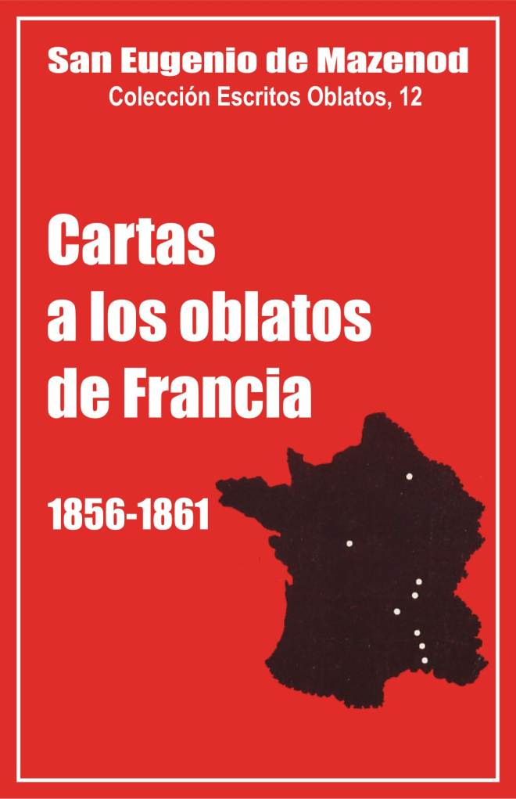

Palo Gordo
2019
Escritos Oblatos: - 01 - 02 - 03 - 04 - 05 - 06 - 07 - 08 - 09 - 10 - 11 - 12 - 13 - 14 - 15 - 16 - 17 - 18 - 19 - 20 - 21 - 22

SAN EUGENIO DE MAZENOD
Colección: Escritos Oblatos, 12
Traducido del Francés por
Santiago Rebordinos omi
Postulación General O.M.I.
Vía Aurelia 290
Roma 1987 (Asunción, 2014)
Palo Gordo
2019
1856 - 1857 - 1858 - 1859 - 1860 - 1861 - Circulares
Este volumen duodécimo de los Escritos Oblatos, séptimo y último de las cartas de Mons. de Mazenod a sus religiosos de Francia, nos revela a un hombre profundamente cambiado.
Si, en los volúmenes precedentes, el Fundador trataba sobre todo de los problemas de la Congregación, tanto en el extranjero como en Francia, aquí, en muchas de sus cartas, habla tanto de su diócesis como de su familia religiosa; además sus preocupaciones se dirigen sin cesar y de una manera cada vez más exclusiva a los grandes problemas religiosos y políticos que agitan a la Iglesia y a Francia. Al fin de su vida, se había formado un equilibrio tal en él, en sus preocupaciones y en sus amores: la Congregación, la Diócesis y la Iglesia, que ya no podía, parece, interesarse por uno sin relacionarlo con los otros.
La elección de sus corresponsales oblatos es reveladora aquí Setenta de las 161 cartas de este volumen han sido enviadas ya a Mons. Guibert (26 cartas), ya al P. Tempier (25 cartas) o al P. Fabre (19 cartas). Ahora bien, el Fundador consultaba siempre al primero en las dificultades de orden político, y sobre los grandes problemas religiosos, a los otros dos, Vicarios generales de Marsella y Asistentes generales O.M.I., que representaban ante él a la diócesis y a la congregación.
Sin embargo, dos acontecimientos explican igualmente este nuevo modo de corresponder con los Oblatos: su nombramiento en el senado, en 1856, y en 1859, su designación por el Emperador para el cardenalato.
1. Mons. de Mazenod, senador
Después de la proclamación de la república, el 24 de febrero de 1848, el príncipe Luis Napoleón Bonaparte fue elegido presidente. Los católicos, ganados por la promesa de la libertad de enseñanza, le habían dado sus votos. El envío de tropas francesas para volver el Papa a Roma en 1849, y en 1850, el voto de la ley Falloux, que autorizaba el establecimiento de escuelas libres religiosas, al lado de ¡a enseñanza oficial, acercaron cada vez más el Estado y la Iglesia; ésta aprobó el golpe de estado del 2 de diciembre de 1851 y el restablecimiento del imperio en 1852.
En 1851, con la muerte del obispo de Arras, Mons. Juan Carlos de La Tour d'Auvergne, un título de cardenal quedó vacante en Francia. Mons. Guibert, obispo de Viviers, hijo espiritual y amigo muy adicto de Mons. de Mazenod, propuso la candidatura del Obispo de Marsella. Sin saberlo éste, intervino ante el Prefecto de las Bocas del Ródano, para obtener este favor que legitimaban la edad provecta del Prelado, su acción pastoral y misionera, la importancia de la sede de Marsella, segunda ciudad de Francia, y sus buenas relaciones con el Presidente [1]. El Prefecto escribió al Ministro de Cultos en el mismo sentido, pero la iniciativa fracasó. El Ministro respondió que como el sucesor del cardenal de La Tour d’Auvergne, había sido propuesto al Papa, había que esperar otra ocasión [2].
El Señor de Suleau, prefecto de las Bocas del Ródano y amigo de Mons. de Mazenod, no se dio completamente por vencido. Después de la visita del Presidente de la República a Marsella, en 1852, escribió a Luis Napoleón, para recomendarle el nombramiento del Obispo de Marsella al senado [3]. Esta segunda propuesta no tuvo seguimiento inmediato, pero, parece, que el Emperador [4] no la olvidó.
Napoleón III desposó, en 1853, a una joven española, Eugenia de Montijo, condesa de Teba. Tres años después, nacía el príncipe imperial. Mons. de Mazenod, como todos los Obispos de Francia, parecían cada vez más satisfechos del Emperador y su política. Publicó escritos muy elogiosos, el 13 de abril de 1854 cuando la guerra de Crimea, el 17 de septiembre de 1855 por la toma de Sebastopol y el 15 de octubre de 1855 con motivo del embarazo de la Emperatriz. Cuando le anuncian, el 16 de marzo de 1856, el nacimiento del príncipe imperial, se apresuró a escribir a sus Majestades. Quiso completar sus felicitaciones con un acto de piedad. El 17 de marzo, subió a Ntra. Sra. de la Guardia para invocar la protección de la Buena Madre sobre la familia imperial. Después de las oraciones públicas, bendijo: “una medalla de oro, que representa de un lado a la Santísima Virgen y del otro dicho santuario, medalla expresamente acuñada” para ser ofrecida al heredero del trono. El Emperador se sintió conmovido por esta delicadeza. Agradeció al Prelado, el 25 de marzo, y terminó su carta con estas palabras: “Esta consagración especial y solemne para colocar la cuna del príncipe imperial bajo una protección divina, esas oraciones para atraer sobre él en el futuro todos los beneficios del cielo son el testimonio más precioso para nosotros de vuestra simpatía particular... “ [5]
Napoleón III no quiso mostrarse menos generoso y supo a su vez testimoniar su simpatía. Con motivo del bautismo del niño, al que el Legado del Papa y todos los Obispos de Francia asistían, Mons. de Mazenod fue nombrado senador, el 24 de junio de 1856.
Este nombramiento va a cambiar sus costumbres de vida. Cada año participa en la sesión del senado que se tiene desde enero o febrero hasta el mes de junio. Llega para la sesión de apertura y vuelve a Marsella para el domingo de Ramos. Sólo en 1860 vuelve a París para la celebración del matrimonio Polignac-Mirés y asiste a la sesión del 6 de junio.
Cuando se encuentra en la capital, no falta en cuanto es posible a ninguna sesión del senado. Su lugar es ‘‘de tanta evidencia “, escribe al P. Fabre el primero de marzo de 1859, que no puede ausentarse “sin que se den cuenta de ello”. Sigue igualmente con atención los debates y desaprueba a algunos de sus colegas cardenales que, “en lugar de escuchar o de aburrirse como los otros... escriben cada uno tranquilamente su correo. Francamente esto me rebasa, confía a Mons. Guibert el 15 de febrero de 1859, y encuentro de una extraña inconveniencia esa ausencia de atención. Con el respeto que les es debido, encuentro archi-ridícula esa afectación de trabajo, para expresarme de una manera conforme a su dignidad”.
Si escucha atentamente, no toma la palabra, parece, más que dos veces. El 18 de marzo de 1858 es ponente “de la comisión encargada de examinar la ley que da apertura en el ministerio de instrucción pública y cultos, en el ejercicio de 1858, de un crédito de 499.450 francos para contribuir a la construcción de una nueva catedral en Marsella”. El 29 de marzo de 1860, hace un discurso breve pero elocuente sobre las peticiones de los católicos que requieren la intervención del senado a favor del poder temporal de la Santa Sede.
Nunca el Fundador pasaba de buena gana, cada año de 1856 a 1860, algunos meses en la capital. El 12 de febrero de 1857, confiesa al P. Fabre: “Mañana comenzaré el triste oficio que tendré que cumplir en París. Me siento fastidiado de antemano. Ha sido nada menos que la necesidad de mi posición la que me ha obligado a ello. Trataré de abreviarlo en cuanto me sea posible
Lo que le fastidia, más que las sesiones del senado es ¡a vida social que su título de senador le obliga a llevar: visitas que hacer y que recibir, comidas, recepciones, etc.: “Queridos hijos, escribe a los Oblatos de Nancy el 4 de febrero de 1858, ¡creedme que hago aquí una ruda penitencia! No puedo soportar al mundo al que he renunciado tan gustosamente, y heme aquí forzado a estar en contacto con él, lo menos que puedo sin duda, y solamente en cuanto mi posición lo exige imperiosamente, pero es suficiente para fastidiarme, para oprimirme el corazón, a la vista de tanto lujo, tanta prodigalidad, tanta vanidad, tanta futilidad, juzgando todo lo que veo con las máximas sagradas del Evangelio, pesando todas esas riquezas en la balanza del santuario... “ El 10 de febrero del mismo año, hace la misma confidencia al P. Tempier: “Termino mi carta, escribe, es la hora de vestirme para ir a hacer una aparición en Las Tullerías, el cardenal Dupont vendrá a buscarme pronto. Es una gran carga para mí que no amo el gran mundo. Por lo demás, cuando me veo obligado a encontrarme en él, siento su futilidad y vacío más de lo que podría sentirlo en la meditación. Está ahí en su más alta expresión... ¡No es más que eso, me digo! ¡Oh, qué poca cosa es! Un momento pasado al pie de los santos altares supera mil veces todo ese prestigio por más brillante que sea
Un sufrimiento le parece más penoso que los otros: el hecho de celebrar solo cada año la fiesta oblata del 17 de febrero. Habla de ello en varias cartas. “Lo que me dices..., escribe al P. Mouchette el 22 de febrero de 1858, me ha resarcido de la excesiva privación que he experimentado el 17 de este mes, cuando he tenido que celebrar solo en la pequeña capilla de mi hotel [6] el santo sacrificio de acción de gracias por el gran beneficio de Dios del que recordamos, si no me equivoco, el 32 aniversario. Vosotros estabais todos de fiesta en Montolivet como en otras partes, me llegan cada día los más emotivos relatos, y yo solo en mi tercer piso, me unía lo mejor posible a la hermosa fiesta que se celebraba lejos de mí...”
Para consolarse de esta soledad, el Fundador aprovecha algunos días de vacaciones en el senado, cada año, para hacer una breve visita a Mons. Guibert, arzobispo de Tours, y al noviciado de Nancy. En 1857 y en 1858 va también a pasar algunos días con su hermana y su sobrina en Cirey. No rehúsa tampoco las invitaciones que le hacen para presidir ceremonias religiosas en las comunidades de la capital.
2. El Cardenalato
Cuando su viaje a París, a fines del mes de enero de 1859, Mons. de Mazenod hizo un rodeo por Bourges para visitar en su casa a su viejo amigo el cardenal Dupont. “Cuál no ha sido mi pena al llegar al arzobispado, escribe a los Oblatos de Marsella el primero de febrero, al encontrar ahí al pobre Cardenal en cama en la que una gota muy peligrosa le retiene desde hace un mes. El me lo había mantenido oculto, pues ciertamente yo no hubiera tenido la indiscreción de venir a verlo en ese estado”. El Cardenal murió el 26 de mayo.
Único obispo senador con los cardenales franceses, Mons. de Mazenod resultaba de golpe el obispo mejor calificado para reemplazar al difunto. Mons. Guibert se apresuró a recomendar al senador al Ministro de Cultos. El canónigo Jeancard, de su parte, escribió al Sr. Troplong, presidente del senado y amigo del Fundador, para elogiar al obispo de Marsella. El Sr. Troplong comunicó esta carta al Ministro de Cultos, acompañándola con estas pocas palabras: ‘‘No tengo nada que decirle del Obispo de Marsella, prelado piadoso, muy dedicado, muy renombrado en Italia y en Inglaterra, tanto como en Francia, por sus numerosas fundaciones”. El asunto siguió su curso. El 15 de agosto, Mons. de Mazenod recibió una carta del Ministro de Cultos, anunciándole que el Emperador le proponía al Santo Padre ‘‘para el capelo de cardenal vacante en el orden de las designaciones de Francia “. Sólo se trataba ciertamente de una propuesta oficial que el Embajador de Francia transmitió al cardenal Antonelli, secretario de Estado, el 26 de agosto: “Al Gobierno de Su Majestad le agrada pensar, se lee ahí, que la elevación al cardenalato de un prelado tan recomendable en todos los aspectos no suscitará ninguna objeción de parte de Su Santidad”.
Pio IX no opuso ninguna objeción contra la persona propuesta, pero problemas de orden general no le permitieron responder a los deseos del Emperador.
Una primera dificultad surgió en seguida. La costumbre quería que la proposición de los cardenales hecha por los Jefes de Estado quedara secreta hasta la publicación oficial de la Santa Sede para mostrar bien que el Papa no cedía a un medio de presión inadmisible. Ahora bien, los diarios de París anunciaron esta designación el primero de septiembre, apenas cuatro días después del envío de la carta del Embajador al cardenal Antonelli.
Una dificultad más grave iba, sin embargo, a retardar indefinidamente el nombramiento: la guerra por la unidad de Italia. Víctor Emmanuel, rey del Piamonte, y su ministro Cavour, apoyando los movimientos revolucionarios de los diversos pequeños Estados italianos, habían comenzado el movimiento que iba a desembocar en la unidad de Italia en 1870.
A 'pesar de numerosas promesas hechas a favor del mantenimiento de los Estados Pontificios, Napoleón III ayudó primero militarmente a Víctor Manuel a combatir a los Austríacos y entregó la Lombardía al Piamonte cuando el armisticio de Villafranca, el II de julio de 1859. En la primavera y el verano de 1859, los ducados, provincias y delegaciones echaron uno tras otro a sus gobiernos y se entregaron al Piamonte que, poco a poco, anexó la Toscana, Massa y Carrara, Parma y Piacenza, Módena y Reggio, así como todo el norte de los Estados Pontificios: las Romanas, las Marcas y la Umbría. Además, en varias ocasiones, Napoleón anunció que iba a retirar sus tropas de Roma, entregando así indirectamente los últimos jirones de los Estados Pontificios al Piamonte.
Muy inquieto por esta situación, el Papa no nombró cardenales, en el consistorio del 26 de septiembre de 1859, pero hizo, en esta ocasión, una vigorosa alocución para condenar la revuelta de las Delegaciones y excomulgar a todos los que habían prestado a la revolución sus consejos y su colaboración.
A continuación de esta alocución la mayor parte de los Obispos de Francia escribieron cartas pastorales para defender los Estados Pontificios y a menudo para atacar duramente al Emperador. Mons. de Mazenod debió entonces usar mucha diplomacia para defender al Papa sin herir al Emperador. En lugar de una carta pastoral dirigida a sus fieles, prefirió una carta personal enviada a Napoleón III para manifestar sus preocupaciones y las de los católicos e invitar al Emperador a poner fin a las usurpaciones del Piamonte [7] [8]. Escribió luego al cardenal Barnabó para ponerlo al corriente de su gestión ante el Emperador y decirle que él defendería siempre al Papa.
El Emperador agradeció a Mons. ele Mazenod sin hacerle ninguna declaración tranquilizadora; el cardenal Barnabó a su vez agradeció, diciendo sin embargo que se extrañaban en Roma del silencio oficial guardado por el Obispo de Marsella. “Sin perder una hora” Mons. de Mazenod, que brillaba en las improvisaciones, compuso una Carta pastoral en la que, con mucha habilidad, logró justificarse de su atraso, defender con vigor los Estados Pontificios y no herir al Emperador, repitiendo su confianza en aquel “cuyos sentimientos a favor de la soberanía temporal del Jefe de la Iglesia nunca nos han parecido dudosos.., [9]
Mons. de Mazenod comenzó, sin embargo, a dudar seriamente de las buenas intenciones del Emperador, cuando apareció el folleto: “El Papa y el Congreso “, publicado el 22 de diciembre. Este texto, que se decía inspirado por Napoleón III, sostenía que el Sumo Pontífice encontraría ventaja en la reducción de sus Estados: cuanto más pequeño sea el Estado, el Papa será más grande. Este folleto levantó una indignación general en Roma y entre los católicos. Ante las instancias del cardenal Morlot, Mons. de Mazenod escribió, el 31 de diciembre de 1859, una segunda carta cortés pero firme a Napoleón III para denunciar el folleto e implorar al Emperador que defendiera la integridad de los Estados Pontificios. No recibió ninguna respuesta. El año 1859 terminaba muy mal. Mons. de Mazenod aparentemente había descontentado tanto al Papa como al Emperador y no se hablaba más de su cardenalato. El cardenal Antonelli dirá por otra parte que, vista la situación aflictiva en que se encontraba la Santa Sede, no parecía oportuno a Su Santidad crear nuevos cardenales, pues se trataba de un acontecimiento gozoso y la Iglesia estaba, por el contrario, de duelo [10].
En el año 1860 la situación general no cambió nada. En su felicitación del nuevo año Napoleón III aconsejó a Pio IX “hacer el sacrificio de las provincias rebeldes”. Con su encíclica del 19 de enero, el Papa rechazó ese consejo y reivindicó enérgicamente la posesión de las Romañas.
Mons. de Mazenod no podía evidentemente contar ya con el Emperador. En adelante tomó partido decididamente y sin miramientos por el Papa. Publicó la encíclica y la comentó a pesar de la prohibición del Gobierno [11]. En lugar de la cantinela habitual de la confianza en el Emperador, hablaba de la divina Providencia, en adelante único apoyo seguro. Pasó varios meses en París durante el invierno, volvió ahí en junio, pero no pidió una audiencia al Emperador.
Entre tanto Mons. de Mazenod había recibido una carta del Papa que le gustó mucho y le dio mucha serenidad. El 6 de enero de 1860, Mons. de Mazenod había escrito a Pio IX para tranquilizarlo acerca de sus principios y decirle todo lo que había hecho a favor de los Estados Pontificios. El Santo Padre respondió personalmente el 28 de enero. Terminaba con estas palabras: “Te reiteramos la expresión de la resolución tomada por nuestro afecto muy particular por ti, que es, cuando los tiempos sean más oportunos, la de conferir a tus méritos la más grande recompensa que nos sea posible dar... “. Esta seguridad de las buenas disposiciones del Papa en su favor le era suficiente. Si durante algunos meses, en 1859, Mons. de Mazenod parecía inquieto por la falsa posición en la que le había arrojado esta designación al cardenalato, conocida por todos y no confirmada por el Papa, en 1860 se lo encuentra muy sereno y sumiso a la voluntad de Dios. El 29 de diciembre de 1859 ya había escrito a Mons. Guibert: “El capelo vendrá cuando lo quieran o no vendrá, no me ocupo ya de ello; he vivido casi 80 años sin tenerlo, pasaré muy bien todavía sin él el poco tiempo que me queda por vivir... Las expresiones no cambian en 1860: “No me causa ninguna preocupación”, “Te aseguro que no tengo ninguna inquietud por ello, escribe a Mons. Guibert, así tampoco he recordado nunca mi posición ni al Ministro ni al Emperador...
Mons. de Mazenod cayó enfermo a comienzos del año 1861 y murió el 21 de mayo sin recibir la más alta recompensa que le había prometido el Santo Padre. Este honor había sido para él más bien una humillación y el capelo cardenalicio una corona de espinas.
3. La Diócesis de Marsella
Los detalles relativos al cardenalato de Mons. de Mazenod y a su función de senador han sido expuestos en diversas obras; era necesario, sin embargo, resumirlos aquí para comprender las alusiones que se encuentran al respecto en las numerosas cartas de este volumen duodécimo de los Escritos Oblatos.
Si el Fundador, como en una especie de obsesión [12] [13], habla cada vez más, durante los últimos años de su vida, de las preocupaciones del Papa y del deterioro de las relaciones entre la Iglesia y el Estado, los problemas de la Iglesia de Marsella le causan igualmente múltiples y graves preocupaciones que le absorben continuamente: poca buena voluntad y servicialidad de la parte de sus principales colaboradores en el obispado, sordo descontento del clero, desacuerdo con las autoridades municipales, pero sobre todo atrevidos proyectos de los que se hará aquí una breve exposición para situar mejor en su contexto los mínimos detalles que encontraremos en unas cincuenta cartas.
Las grandes obras de construcción
Los grandes trabajos de construcción de edificios religiosos, emprendidos en Marsella durante la última decena de años de su vida, constituyen la primera serie de preocupaciones de Mons. de Mazenod. Cuatro obras requerían entonces grandes capitales: la catedral, el santuario de Ntra. Sra. de la Guardia, el palacio episcopal y el monumento a la Inmaculada Concepción.
Para realizar esos grandes trabajos, el Obispo no podía contar únicamente con la generosidad de los Marselleses, aun cuando el comercio y la industria alcanzaban entonces allí una “prosperidad sin ejemplo en la historia de la ciudad. En esta situación, su nombramiento en el senado y sus estadías anuales en París caían del cielo como un maná bendito. No desaprovechaba la ocasión que se presentaba tan oportunamente para frecuentar con asiduidad a los Ministros y a los grandes personajes de la capital. Si por naturaleza no le gustaba tender la mano para pedir limosna, nunca se cohibió de exponer al Gobierno las necesidades de su Iglesia porque consideraba que eso era debido. El Estado le había quitado todo a la Iglesia durante la Revolución, hoy debía mantenerla.
Apenas nombrado obispo de Marsella en 1837, Mons. de Mazenod pensó en la construcción de una nueva catedral [14] [15] [16]. No pudo hacerse nunca a la idea de que Marsella, llegada a ser segunda ciudad de Francia por el número de sus habitantes y la extensión de su comercio, tuviera por símbolo de su fe religiosa la vieja Mayor, “informe y endeble edificio que se cae en ruinas. “Era, escribe el P. Rey, su tema habitual con los personajes que le visitaban, con los depositarios de la autoridad con quienes conversaba, y lo hemos visto no aceptar las grandes fatigas de las recepciones oficiales más que porque aprovechaba de ellas para crear una corriente de opinión que esperaba ver un día volverse irresistible. El Gobierno no lo ignoraba. También Luis Felipe conversando un día con un diputado que le decía haber pasado por Marsella, el Rey le dijo: ¿Has visto al Obispo? Estoy seguro que te ha hablado de su catedral”.
El Obispo escribió en efecto centenas de cartas con este fin al Alcalde, al Prefecto, a los Diputados, a los Ministros, a Luis Felipe antes de 1848, luego al Presidente de la República de 1848 a 1852 y finalmente al Emperador. En 1846, el arquitecto Vaudoyer presentó al Ministro el plano del edificio y el consejo municipal se comprometió a ofrecer un millón, pagadero en 10 años por cuotas anuales de cien mil francos. El asunto, con todo, no se realizó antes de la revolución de 1848. Las tratativas se prolongaron todavía durante algunos años, sobre todo por la elección del lugar que el Fundador quería en el centro de la ciudad, mientras que el consejo municipal prefería construir cerca del puerto. En fin, el príncipe Luis Napoleón, cuya causa Mons. de Mazenod había sostenido cuando la consulta popular del 20 de diciembre de 1851, colocó la primera piedra del edificio a su paso por Marsella, el 27 de septiembre de 1852; él abrió igualmente los primeros créditos oficiales de 2.500.000 francos.
Los trabajos avanzaron lentamente. En 1855, Mons. de Mazenod preveía que la construcción llevaría de ¡2 a 15 años. En 1859 anuncia al Ministro que el edificio está “apenas elevado 3 metros fuera de la tierra”. En 1860 se da cuenta mejor de la amplitud de los trabajos y reconoce “que un tiempo considerable pasará antes de la terminación de la futura catedral’’ [17] [18] [19]. No se equivocaba. Se trabajó aún en ella cerca de 40 años y los gastos ocasionados pasaron de 14 millones de francos.
La catedral fue consagrada por Mons. Robert, tercer sucesor de Mons. de Mazenod, el 6 de mayo de 1897. El periódico L’Univers escribió en esa ocasión: “El nuevo edificio, inmenso de proporciones, se eleva sobre los muelles de la ciudad, entre el viejo y el nuevo puerto. Su masa domina de lejos el bosque de postes, los bastiones de los fuertes, el cilindro elegante de los faros, la dispersión pintoresca y animada de mercancías llegadas de todos los puntos del globo. Pero esta masa no es de las que aplastan con su talla misma. Centenas de curvas suavizan las cumbres. Cúpula central, cúpulas laterales, alto pórtico cintrado, graciosas ventanas acopladas de tres en tres, combinan jerárquicamente sus redondeces desiguales. Los dorados brillan sobre el azul, y el resultado de ese gigantesco conjunto es una gracia encantadora estrechamente fundida con la más serena grandeza. La Mayor es la iglesia más grande de Francia’’ [20].
En algunas cartas de este volumen el Fundador habla igualmente de otra construcción que había deseado ardientemente y que designa como “el más bello monumento de Marsella después de la futura catedral”: el santuario de Ntra. Sra. de la Guardia.
Una iglesia dedicada a la Buena Madre existía ya desde el siglo XIII. Sus muros se hallaban encerrados entre fortificaciones militares sobre la colina en el centro de la ciudad. Mons. de Mazenod obtuvo, por decisión ministerial, elevar en el perímetro del fuerte una basílica “de una arquitectura religiosa... en relación con la piedad marsellesa, con la belleza de la ciudad y también con el estado siempre en progreso de su población” [21] Colocó la primera piedra del nuevo edificio el 11 de septiembre de 1853.
No se podía contar con la ayuda del Gobierno para una iglesia no parroquial, que solo respondía a las necesidades de la piedad popular. Fueron primero los marselleses solos quienes con su generosidad permitieron, en 1853, comenzar los trabajos impulsados activamente. Para continuar la construcción, se organizó una lotería por toda Francia en 1855-1857 [22] [23]. En 1858, los trabajos estaban ya bastante avanzados para que Mons. de Mazenod pudiera inaugurar ahí el culto. Hubo un momento de detención de las obras durante su enfermedad y su muerte, pero Mons. Cruice retomó el asunto en sus manos y tuvo la alegría de consagrar la basílica durante una imponente solemnidad el 5 de junio de 1864 .
Mons. de Mazenod se había quejado siempre del “estado ruinoso “ del obispado. Cuando, en 1856, el legado pontificio al bautismo del príncipe imperial pasó por Marsella, el Obispo tuvo que alquilar los muebles y hacer ejecutar los trabajos de urgencia para dar hospitalidad durante algunos días al eminente visitante y su séquito. Durante sus visitas a los Ministros, en 1856-1860, el senador no olvidó hablar de la necesidad de reparar y agrandar el obispado. En el mes de mayo de 1858 el Ministro de Cultos aprobó finalmente el presupuesto general [24]. En febrero de 1859, el Fundador escribía al P. Tempier: “Vengo de ver al Ministro. He quedado, como de costumbre, muy contento de él. Ha tomado nota de mi petición de un subsidio conveniente para que se provea a mi alojamiento antes de mi muerte”. Algunos días más tarde, anunciaba al P. Fabre que el Ministro le concedía 100.000 francos para la construcción del ala del Sur”.
En este caso como en los precedentes, Mons. de Mazenod no vio el fin de los trabajos. Sabía bien, además, que no trabajaba para él mismo. “Mis sucesores me deberán este nuevo favor obtenido del Gobierno, se lee en su Diario. La cosa era conveniente, por eso la he pedido, pues para mí una celda me era suficiente “.
El 8 de diciembre de 1854, Mons. de Mazenod había participado con una gran alegría en la definición del dogma de la Inmaculada Concepción. A su regreso a Marsella, a comienzos del año 1855, resolvió elevar un monumento como recuerdo de esta definición [25]; colocó la primera piedra el 8 de diciembre de 1855 y lo inauguró el 8 de diciembre de 1857 [26]. La ceremonia de la bendición de la estatua que domina la columna atrajo una multitud inmensa. El Obispo experimentó por ello una gran alegría. “¡En qué lengua humana, escribe en su Diario, podrá expresarse lo que ha ocurrido hoy en Marsella! ¡Cómo representar una ciudad entera de trescientas mil almas, formando una sola familia cristiana, vistiendo sus ropas de fiesta para celebrar la gloria de su madre en los transportes de la más emotiva devoción!... ¡Quién podrá expresar lo que el Obispo oficiante ha podido sentir de emoción, de alegría, de felicidad! Qué misa como esa”.
Los trabajos de encuadre del monumento estaban todavía por terminar y sobre todo había que encontrar el dinero necesario para pagar los gastos hechos. Esa fue otra de las numerosas preocupaciones que el Fundador llevó hasta su muerte.
De las cuatro grandes obras comenzadas durante su ancianidad, el Fundador solo inauguró ésta. Solo el 7 de mayo de 1894, su cuerpo inanimado pasó en medio de los trabajos ya terminados, cuando la traslación de sus restos a la nueva catedral consagrada la víspera. No sin emoción el cronista de Missions escribe en esa ocasión: “En el momento en que el cuerpo de nuestro venerado Padre llega ante la puerta de la catedral, el cortejo, que no sin dificultad penetra en el edificio sagrado ya invadido por una multitud compacta y selecta, sufre una detención de unos momentos. Nuestro venerado Fundador aparece entonces en el seno de todas las grandes obras que han llenado e inmortalizado su vida. A ambos lados, los miembros de su Congregación de misioneros y los sacerdotes del clero de Marsella; a sus pies, la catedral cuyos comienzos él bendijo; a su cabeza, en la lejanía, la basílica de Ntra. Sra. de ¡a Guardia, magnífico exvoto de la piedad hacia María; a su derecha y a algunos pasos solamente, el palacio episcopal que él había querido proporcionado a la alta idea que se hacía del episcopado; a su izquierda, y tan cercano que se escucha el murmullo de sus olas, el Mediterráneo, que han surcado tantos de sus hijos, yendo a la conquista de las almas más abandonadas. El mistral soplaba tempestuoso, elevando violentamente los lienzos negros que recubrían el ataúd. ¿No era eso el símbolo de las tormentas que tantas veces habían ensombrecido su vida y amenazado la existencia de sus obras?
Los vastos proyectos de orden pastoral
A las grandes obras corresponden otros tantos vastos proyectos de orden más pastoral, de los que el Fundador habla a menudo en las cartas a los Oblatos: el nombramiento de un obispo auxiliar, la elevación de la sede de Marsella a arzobispado, el establecimiento de la vida común del clero parroquial y la institución de la adoración perpetua.
En muchas de las cartas de este volumen, Mons. de Mazenod se queja, como antes, de estar demasiado ocupado; necesitaría “cien manos “ para escribir a todos. Si en las cartas de los años precedentes, encontraba tiempo para hacer la lista de sus numerosas ocupaciones, aquí, en el “torbellino que le rodea”, no tiene ya tiempo de dar explicaciones. Escribe a Mons. Guibert en 1860: “Mi muy querido Arzobispo, habría que comenzar siempre por las lamentaciones, a causa de las ocupaciones abrumadoras que me esperan en Marsella...Paso a pie juntillas por encima
Un auxiliar resultaba necesario. Manifiesta este deseo al Ministro de Cultos en 1856 [27]. Hace la petición expresa en 1858. Con gran sorpresa suya, gana el pleito desde las primeras gestiones ante el Ministro y el Emperador. Escribe en su Diario, el 8 de febrero de 1858: “Visita al Ministro de Cultos, no esperó a que yo hubiese visto al Emperador para pedirle en mi nombre que me concediera a Jeancard como obispo auxiliar. El Emperador le ha respondido de la manera más amable que me quería mucho y que no deseaba más que hacer que lo que me era agradable. Una vez aceptada por el Emperador la presentación del canónigo Jeancard, secretario particular del Obispo y vicario general de
Marsella, Mons. de Mazenod solicitó de Pió IX su elección canónica. Mons. Sacconi, nuncio en París y el duque de Gramont, embajador de Francia en Roma, intervinieron por su parte y la demanda concluyó sin la menor dificultad. Las bulas de nombramiento llegaron a Marsella el 27 de mayo. El Consejo de Estado tomó, sin embargo, varios meses antes de registrar estas bulas; no admitía nunca el título de auxiliar, sino solamente el de coadjutor con futura sucesión. Este obstáculo, con todo, fue superado a mediados de septiembre y Mons. Jeancard pudo ser consagrado el 28 de octubre en la iglesia de Saint-Cannat.
Si el Ministro de Cultos había consentido sin dificultad en el nombramiento de un auxiliar, se mostró menos generoso para procurarle un sueldo. Mons. de Mazenod tuvo que recurrir a Mons. Guibert. Le escribió el 25 de noviembre de 1858: “Tendría mucha necesidad de un poco de tu talento cuando se trate de obtener unos miles de francos para mi pobre auxiliar; vendrás en mi ayuda cuando tenga que tocar esta cuerda”. Solo recibió promesas en 1859. Con la ayuda de Mons. Guibert, obtiene finalmente en 1860, un aporte anual de 3.000 francos.
Mons. de Mazenod fue menos feliz en otra gestión que hizo, parece, durante tres años seguidos en París: la erección de la diócesis de Marsella en arzobispado. Se trataba de un deseo muy acariciado por todos los Marselleses, a causa de la importancia de la ciudad, la primera de Francia por el tráfico de su puerto, la segunda por el número de su población y la antigüedad de la Iglesia que afirmaban había sido fundada por san Lázaro.
El consejo municipal había pasado ya una deliberación en ese sentido en 1851. En 1857, fue el Cabildo el que presentó la petición que Mons. de Mazenod remitió al Emperador [28] [29]. Durante su estadía en París en 1859, el Obispo recibió de nuevo el informe de una deliberación del Cabildo que pedía al Emperador este acto de alta benevolencia a favor de la ciudad que parecía convertirse en la capital del Mediterráneo. Presentó él mismo este documento al Ministro que se mostró favorable, luego por fin al Emperador. Este aseguró a Mons. de Mazenod que le concedería este favor “como una gracia personal” que debería extinguirse con él; estaba retenido de conceder más por otras peticiones del mismo tipo [30]. Mons. de Mazenod prefirió no volver más sobre este asunto: “Yo estoy personalmente muy indiferente sobre la cosa, escribe en su Diario, solo me ocupo de ello por el honor de mi sede que me parece tengo la misión de elevar”.
El Fundador conocía muy bien la importancia de un buen clero. Con gusto había aceptado para los Oblatos la dirección del seminario mayor de Marsella en 1827. Veló sin cesar por expulsar a los sacerdotes infieles a su vocación, por sostener a los débiles, animar a los más generosos. El medio más eficaz para asegurar un clero parroquial ejemplar le había parecido siempre la vida de comunidad en el presbiterio. Poco a poco, después de 1837, resolvió introducir esta práctica. Comenzó con las parroquias fuera de la ciudad. Al nombrar nuevos párrocos exigía que éstos vivieran en la misma casa con sus vicarios. En 1848, tres sacerdotes influyentes hicieron en su capilla “el voto de vivir juntos para consagrarse a la santificación de la juventud”. En 1856, juzgó la situación bastante madura para ordenarlo como medida general de disciplina. Uno de los principales decretos del sínodo diocesano, tenido desde el 28 de septiembre al primero de octubre se lee así: “Aprovechamos gustosamente la ocasión solemne de nuestro sínodo diocesano para declarar de nuevo nuestra intención formal de establecer sucesivamente la vida común, es decir, la cohabitación y la mesa común del párroco con sus vicarios en todas las parroquias donde la insuficiencia de la casa rectoral o bien otras dificultades materiales del mismo tipo no nos obliguen a aplazar su institución. Ya desde hace tiempo en varias parroquias de nuestra ciudad episcopal y de la diócesis, los sacerdotes viven en común. El número de esas comunidades parroquiales aumentará con cada nombramiento de un nuevo titular y no creeremos en paz nuestra conciencia de obispo hasta que llegue a abarcar a todas las parroquias de nuestra diócesis “ [31].
El clero, en esta ocasión, mostró buenas disposiciones. El Obispo terminó el sínodo con un discurso en el que expresaba su alegría y su agradecimiento por tener tan buenos sacerdotes: “¡Oh! mis hijos, ¡oh! mis queridos colaboradores, que Dios que ha presidido tan visiblemente nuestras reuniones os devuelva al céntuplo los consuelos inefables que me habéis dado a mí, los días de felicidad con los que queréis coronar mis últimos años... “.
Las buenas disposiciones del clero no duraron cuando hubo que pasar a la práctica. Muchos sacerdotes resistieron y la aplicación enérgica de esta medida hizo crecer el descontento contra el anciano obispo [32]. Habla de ello a menudo en su Diario y en sus cartas. En febrero de 1857, por ejemplo, fue recibido por el Ministro del Interior. El Sr. Billault aprobó “su manera de ver la vida común entre los párrocos y los vicarios y prometió dar a conocer al Alcalde su sentimiento sobre ese aspecto e invitarlo fuertemente a secundar al Prelado en ese proyecto En una carta al P. Fabre, fechada el 27 de septiembre de 1857, se ve que párrocos y vicarios se niegan a someterse, pero el ejemplo del Arzobispo de Aix anima a Mons. de Mazenod a no ceder: “El Arzobispo de Aix se ha pronunciado, exigirá a todos los Párrocos que nombre que vivan en comunidad con sus vicarios. Escribió cartas de felicitación a los que se adelantaron a la medida que resolvió tomar;...A mi regreso apretaré el botón sobre este punto, me reprocho un exceso de condescendencia del que tengo que corregirme. “
El éxito de esta medida no fue completo ni duradero. De todos modos, el Obispo había trabajado por el bien de su clero y de su diócesis. El canónigo Leflon escribe al respecto: “En el pensamiento de Mons. de Mazenod, la vida común era la clave de bóveda de toda su obra; coronaba a ésta en la cumbre, asegurando la solidez de toda la reconstrucción religiosa a la que habla consagrado su episcopado “.
Si la vida común del clero puede ser considerada la clave de bóveda de toda la obra de Mons. de Mazenod, la devoción a la presencia real de Jesucristo en el Santísimo Sacramento ha sido su espíritu animador.
Durante todo su episcopado, el Obispo buscó desarrollar esta devoción entre los fieles, promovió el ejercicio de las cuarenta horas y la exposición del Santísimo Sacramento, en particular durante los días de carnaval y el jueves santo, solemnizó cada año la ceremonia de reparación del sacrilegio cometido en la iglesia de San Teodoro el 10 de marzo de 1829 y otras del mismo género, finalmente en 1860 logró establecer en la diócesis la adoración perpetua. Los Padres del Santísimo Sacramento, al poco de llegar a Marsella, le permitían cubrir las lagunas que el número restringido de parroquias hacía inevitables.
Durante el año, cuando estaba en Marsella, el anciano obispo logró ir a rezar en casi todas las iglesias donde el Santísimo Sacramento estaba expuesto. Esta fue una de las últimas alegrías de su vida. Habla de ella en su Diario y en sus cartas. Escribe, por ejemplo, en su Diario, el 16 de enero: “He ido a la bendición de los tres días de adoración en la iglesia de San Lorenzo. Había motivo para dar gritos de alegría, viendo ante todo la magnificencia de iluminación del altar sobre el que estaba colocado el trono de Nuestro Señor... “ Prosigue el 23 de enero: “Adoración en San Lázaro. ¿Qué diré de la belleza de esta magnífica exposición y de esta concurrencia durante todo el día, de ese celo por la adoración en la noche? Es para morir de alegría. ¡Oh, qué glorificado es Nuestro Señor! “ El 3 y 4 de febrero anota aún en su Diario; “ ¡Adoración cada vez más encantadora!... ¡Nada más bello y emocionante bajo el cielo! ¡Una iglesia como la de San José demasiado pequeña para contener la multitud de piadosos fieles! ¡Si es un verdadero triunfo para nuestro divino Salvador! Imposible resistir a la emoción que produce tal espectáculo. Así ¡qué suaves lágrimas no han corrido de mis ojos! Si esto durara, sería demasiada felicidad sobre la tierra. ¡Gracias, millones de gracias al Señor por esos cortos momentos de pregustación del paraíso!”
En estas visitas de adoración el Fundador oraba largamente. Decía al Maestro, al que creía con certeza presente, sus alegrías y sus penas. “Durante el tiempo de prueba, escribe el P. Rey, y hasta el día en que el Prelado tenga que estar tendido sobre el lecho de muerte, buscará junto a la Eucaristía la fuerza, el ánimo, la resignación y los consuelos que Dios solo puede dar, porque Dios solo puede proporcionarlos a la extensión y a la profundidad de los sufrimientos de los que un corazón de obispo, de pastor y de padre puede ser teatro... “
4. La Congregación
Padre afectuoso, el Fundador lo fue sobre todo con los Oblatos. Si, en las cartas que les escribe durante los últimos años de su vida, no puede hacer abstracción de las preocupaciones del Papa, de las necesidades de la Iglesia o de los intereses diversos de su diócesis, siempre su atención se centra sobre todo en la vida de su familia religiosa.
Ciertamente sus cartas son menos numerosas y más breves, pero el amor que siente por sus hijos no se enfría. Lo repite aquí muy a menudo y continua afirmando que corresponder con los Oblatos es “una de las más dulces ocupaciones de su vida “.
Si, a falta de tiempo, escribe menos y a pocos Oblatos, se consuela con el pensamiento que “todos los hijos que Dios le ha dado... están sin cesar presentes en su espíritu y en su corazón “. Por otra parte, se siente junto a ellos todas las mañanas en “el santo sacrificio, y en la oración de la tarde ante el Santísimo Sacramento”. Los ama siempre “con todo el afecto de la más tierna madre
Algunas notas discordantes vienen desgraciadamente a quebrar aquí y allá la armonía del afecto y del entendimiento mutuo que unen a los miembros de la familia. En dos ocasiones, por ejemplo, el Fundador se queja del P. Tempier que “soporta con pena las pequeñas contrariedades que encuentra en las medidas generales a las que él permanece completamente ajeno, considerando solo a Montolivet, que es para él el mundo entero”. Al envejecer el P. Tempier se aislaba y encontraba, parece, que el Fundador, rodeado ya de hombres de gran valor, como los PP. Vincens, Auberty Fabre, le manifestaba menos confianza que en otro tiempo. A menudo expresaba “recriminaciones” que Mons. de Mazenod encontraba injustas. Siempre franco y directo en sus relaciones con todos y sobre todo con Tempier, le escribe, el 15 de marzo de 1859, una carta que nos parece dura [33] y deja adivinar que aun entre viejos amigos y fieles colaboradores la buena armonía se mantiene al precio de mucha virtud.
A pesar de sus ocupaciones y del hábito que tomó poco a poco de dejar a los provinciales más iniciativas y responsabilidad, el Fundador se interesa todavía en sus últimas cartas por todos los aspectos de la vida de la Congregación: el personal, las casas de formación, las fundaciones, las obras, la vida religiosa y de una manera especial por la administración financiera.
El personal
De 1856 a 1861, después del punto de detención y de la fuerte sangría de los seis años precedentes, el crecimiento de la Congregación retoma relativamente el ritmo de los primeros decenios. Veinte Padres y Hermanos mueren durante estos seis años, 22 salen de la Congregación; a pesar de estas pérdidas, el personal pasa de 298 a 414, de los que cerca de 215 para las dos provincias de Francia.
Siempre sensible a la muerte de sus hijos, el Fundador no menciona, sin embargo, aquí más que algunos nombres: los linos, escolásticos Camper, Baland y Bonifacio, los Padres Richard, Andrieux y Bouquillon que fueron a unirse a la “comunidad del cielo”, Amisse, Lagrue y sobre todo, en enero de 1860, Casimiro Aubert, secretario general de la Congregación. Hombre metódico y preciso, muy apreciado por el Fundador, solo a medias fue remplazado por el P. Vincens, famoso por sus distracciones y por un celo que le hacía difícil la vida de escritorio. Hasta su muerte, el Fundador sufrió esta ausencia. Escribe al P. Soullier, el 20 de junio de 1860: “Los asuntos se acumulan desde la muerte tan doloroso para mi corazón de nuestro siempre añorado P. Aubert”.
Con motivo de uno de estos duelos, el Fundador, hablando de los Anales de la Sagrada Familia en los que colaboraba el P. Bellon en Burdeos, le escribe el 20 de julio de 1858: “Son felices estas Damas de estar mejor servidas que lo estamos nosotros. Es la Congregación la que habría tenido necesidad de que te ocupases de sus Anales, ya que tú eres apto para ese tipo de trabajo. Una de mis penas es ver irse los años sin que quede rastro de las maravillas que el Señor obra por el ministerio de los nuestros en todas las partes del mundo. No puedo obtener que nos pongamos en regla sobre este punto. Sin embargo, esto se practica en todas las otras Congregaciones. Los Jesuítas sobre todo no fallan en esto. ¡La misma cosa con el Necrologio! Cuántas veces no he recordado que nos ocupemos de esto seriamente. No se dice que no, pero nos dejamos llevar por nuestros asuntos. Ya que te hablo de eso, trata de recoger tus recuerdos y de escribir algunas notas sobre todos aquellos de nuestros Padres y Hermanos difuntos con los que has vivido. Aportando cada uno ese tributo de fraternidad al centro común, llegaremos a redactar un trabajo muy edificante que traerá consuelo a nuestras almas, pues se muere muy santamente en la Congregación.
Las salidas de la Congregación, que el Fundador no logró nunca comprender, son todavía a veces el objeto de sus santas cóleras. Habla, sin embargo, aquí con cierta serenidad de los Padres Humbert, Aubry y Lempfrit, pero lanza fuertes gritos contra el P. Rouge, uno de los principales fautores de la irregularidad en Montreal, hombre “siempre extraviado, sin corazón, sin sentimientos, sin religión “, o también de dos escolásticos de Montolivet a los que llama “perversos” y “monstruos”. El P. Bermond, vuelto de Canadá sin permiso, después de años de mal espíritu en San Bonifacio y a pesar de la confianza que se le había manifestado al nombrárselo visitador canónico de los Oblatos de Oregón, recibe él también, con justo título, su puñado de epítetos bien coloreados: “extravagancia inexcusable”, “es monstruoso a mis ojos” “ese tipo ha hecho bien pasando por París sin tratar de verme... Va de mal en peor. Que vuelva a las montañas de los Altos Alpes. Qué vamos a hacer con sujetos rebeldes que enredan todo, se permiten todo, que llevarían la discordia al paraíso”. “Imposible tomar una resolución más alocada..., encuentro la falta del P. Bermond imperdonable. Hay más de lo necesario para expulsarlo de la Congregación... ¡Es enorme, incomprensible! Estoy verdaderamente indignado “.
Las casas de formación
El reclutamiento parece bastante bueno, ya que a pesar de 42 muertes o salidas de la Congregación, el personal aumenta en más de cien sujetos en 6 años. La casa de Ntra. Sra. de l'Osier permanece como el principal noviciado que acoge cada año a cerca de 30 novicios bajo la dirección del P. Vandenberghe. Encontramos por aquí y por allá, en esta correspondencia, cartas de felicitación a los novicios con motivo de su profesión, pero ninguna al maestro de novicios que parece inspira plena confianza a las autoridades.
El noviciado de Nancy recibe entonces una media de 10 novicios por año. El Fundador pasa algunos días en medio de esos novicios de 1856 a 1859 [34].
Los Postulantes provienen de los seminarios de muchas diócesis. Al comprobar una ligera disminución del número de entradas en los noviciados, se resolvió, en 1860, reabrir el juniorado de Ntra. Sra. de Lumiéres.
El escolasticado, establecido en Montolivet desde 1854, bajo la dirección del P. Tempier, superior, y del P. Mouchette, moderador de escolásticos, va bien. El Fundador regularmente hace ahí visitas y, cuando está en París, escribe fielmente al P. Mouchette [35]. Se alegra con él de la buena conducta de los estudiantes que “dan tantos motivos de consuelo”, que forman “una comunidad tan hermosa... esperanza de nuestra familia”. El 11 de marzo de 1860 vuelve a expresar su alegría por la buena marcha del escolasticado y recuerda por última vez en sus cartas a los escolásticos el sentido preciso de su vocación: “Me siento feliz al verlos comprender la sublimidad de su vocación y trabajar con valentía por ser santos religiosos, escribe el 11 de marzo de 1860. Tengo confianza que honrarán su gran ministerio y llegarán a ser todos dignos de ser elegidos, los unos para combatir los combates del Señor entre los cristianos degenerados de Europa, los otros para seguir las huellas de los Apóstoles, y llegar a ser ellos mismos verdaderos apóstoles para anunciar la Buena Noticia a las naciones infieles de las diversas partes del globo. ¡Oh! sí, saldrán todos de la hermosa comunidad de Montolivet armados con todos los elementos como verdaderos atletas inaccesibles a los malos ejemplos, especie de seducción de la que sabrán defenderse: su sola presencia y la regularidad de su vida reanimará el fervor por todas partes donde la obediencia les llame. Yo disfruto de antemano las bendiciones que el Señor derramará sobre ellos como recompensa de su fidelidad, Dios será glorificado por ellos y nuestra querida Congregación será honrada en la Iglesia a causa de ellos... “
Pero, unos meses más tarde, enterándose de que dos escolásticos se han portado de una manera escandalosa durante las vacaciones en Ntra. Sra. de Lumiéres y de que los otros no han reaccionado con bastante celo, el Fundador les impone una reparación ejemplar: “Sí, el mal ha sido hecho en la tierra de los santos, pues todos deberían ser santos en la Congregación de los Oblatos de María Inmaculada, escribe el 29 de agosto de 1860. ¡Y qué mal! La profanación de los sacramentos, la hipocresía, la traición, la apostasía, el colmo en una palabra de la perversidad, Era demasiado un Judas, se han encontrado dos. ¡Gran Dios! Esta rasa maldita ¿no se ha agotado?
“Tendríamos que temer que la maldición de Dios se fuera a descargar sobre nosotros, si no nos empeñáramos en reparar en cuanto podamos el escándalo que se ha dado entre nosotros... Prescribo que durante nueve días toda la comunidad descienda a la capilla subterránea para recitar ahí en alta voz, los brazos en cruz, el salmo Miserere mei Deus. La recitación de este salmo será seguida por las letanías de la santísima Virgen, del Sub tuum praesidium y de la oración Defende.
“Durante todo un año, habrá cada día una comunión hecha en rotación por todos los miembros del escolasticado, como reparación a nuestro divino Maestro Jesucristo, ofendido y traicionado... He ahí lo que mi corazón desolado me inspira por el momento. ¡Que Dios tenga piedad de nosotros! “
Dándose cuenta sin duda que el tono de la carta y el rigor de esas penitencias podían parecer excesivos, el Fundador, según su costumbre, termina dejando la palabra a su corazón: “¿No tengo más que palabras de dolor que dirigiros? ¡Ah! Es que mi alma está llena de amargura. Conviene que os bendiga. Sed, pues, bendecidos en el nombre del Padre y del Hijo y del Espíritu Santo, y que esta bendición permanezca en vosotros para preservaros de todo mal y haceros avanzar en la perfección de vuestro santo estado “ [36].
Las comunidades y las fundaciones
En 1856-1861 la provincia del Midi no se desarrolla nada; mantiene sus diez comunidades: Aix y el Calvario, los seminarios mayores de Marsella, Ajaccio y Fréjus, los santuarios de Ntra. Sra. de Lumiéres, de Ntra. Sra. de Bon Secours y de Ntra. Sra. de la Guardia, las casas de formación de Vico y de Montolivet.
La provincia del Norte cuenta en 1861 ocho casas y una residencia: Ntra. Sra. de l'Osier, Nancy y la residencia de Ntra. Sra. de Sion, Limoges, Ntra. Sra. de Talence y Ntra. Sra. de Cléry, las nuevas comunidades de misioneros de Autun (1858), de París (1859) y de Angers (1860). Esta provincia pierde, sin embargo, en 1857, el seminario mayor de Quimper, aceptado el año precedente, igualmente que el seminario mayor y la casa de misioneros de Romans donde los Oblatos trabajaron desde 1853 [37]. Si, para compensar la pérdida de Quimper y de Romans, el Fundador acepta las casas de Autun, París y Angers, rechaza varias otras fundaciones en Francia y prefiere enviar a sus hijos al extranjero.
Las obras
El principal apostolado de los Oblatos en Francia, sigue siendo la predicación sobre todo en las misiones populares. En 1858, el Fundador recuerda, por ejemplo, ese deber al P. de L 'Hermite que, en Ntra. Sra. de Cléry, actúa más como párroco que como misionero: ‘‘Yo te recomiendo, le escribe el 5 de octubre, que no te descargues enteramente de ese precioso trabajo. Es el fin principal de nuestra vocación. No vería de buen grado que un superior de nuestras comunidades se abstuviera de ello”. Mons. de Mazenod hace todo lo que puede para asegurar el mantenimiento de un equipo de misioneros en la mayor parte de las casas, él los impulsa y recuerda también, circunstancialmente, que los sermones aislados, los advientos y las cuaresmas deben siempre ceder el lugar a las misiones que producen mucho fruto
Habla a menudo de las misiones extranjeras, sobre todo con ocasión de las salidas a la misión, del paso de misioneros o ante dificultades que siempre surgen por todas partes con mucha frecuencia. Se encuentran varias reflexiones sobre el trabajo en parroquia, sobre los seminarios mayores y sobre una nueva obra: la dirección espiritual de la Asociación de la Sagrada Familia de Burdeos.
El sacerdote Bienvenido Noailles había fundado en 1820 en Burdeos, una asociación que agrupaba laicos casados, otros unidos por votos, y religiosas que poco a poco formaron 9 ramas o congregaciones especializadas según diversas obras de celo. A fin de asegurar una dirección espiritual que gozase de uniformidad y de continuidad, el Buen Padre intentó sin éxito fundar una congregación religiosa de sacerdotes.
Ensayó igualmente durante varios años y siempre sin resultado afiliar la Sagrada Familia a comunidades religiosas de sacerdotes.
En 1856-1857 el Buen Padre conoció a los Oblatos, desde hacía unos años establecidos en Ntra. Sra. de Talence. Se unió en amistad con el P. Delpeuch y se dio cuenta, estudiando la naturaleza de la Congregación, de que los fines de esta Sociedad correspondían mucho a la que él mismo había querido al fundar los Pobres Sacerdotes en 1822 o los Sacerdotes Auxiliares de la Sagrada Familia en 1833. Manifestó en confianza al P. Delpeuch que deseaba afiliar su Asociación a la Congregación de los Oblatos. El P. Delpeuch respondió que Mons. de Mazenod no lo aceptaría nunca. Una sola persona podría convencerlo: el arzobispo de Tours. “Si Mons. Guibert loma por su cuenta vuestros intereses, él llevará a nuestro bien-amado Padre a dar su consentimiento”. El sacerdote Noailles escribió a Mons. Guibert al que conocía bien. El arzobispo puso al corriente a! Fundador de los deseos del Buen Padre y el asunto concluyó a fines del mes de agosto de 1857 cuando la visita que hizo Mons. de Mazenod a Burdeos al regresar de su viaje a Inglaterra. El tratado de afiliación lleva la fecha del 14 de enero de 1858.
En el verano de 1858 el P. Carlos Bellon fue encargado de ir a iniciarse en este apostolado con el Buen Padre cuyas fuerzas declinaban. El Fundador escribió una carta circular a los Oblatos, el 16 de noviembre de 1860, invitándolos a dar su parecer sobre este proyecto de afiliación que “parecía alejarnos del espíritu de nuestra Congregación “ y podría sobre todo impedir a muchos Oblatos entregarse a pleno tiempo al ministerio de las misiones ya que la Sagrada Familia contaba ya con 223 casas, 2200 religiosas y muy numerosos asociados.
El sacerdote Bienvenido Noailles murió el 8 de febrero de 1861. Por consiguiente Mons. de Mazenod, él mismo gravemente enfermo, resulta director general de la Sagrada Familia. El 14 de febrero nombra al P. Bellon su representante ante la Asociación y, el 15 de marzo, envía a los Oblatos su última carta circular en la que les da el resultado de las respuestas a la circular precedente, expone los principales puntos del tratado de afiliación y fija algunas reglas de conducta a los Padres que tengan que ocuparse del ministerio ante los miembros de la Asociación.
La vida religiosa
Corresponde sobre todo a los provinciales y a los superiores locales velar por la disciplina religiosa, pero el Superior general continúa [38]
interviniendo ocasionalmente. Lo hace aquí en unas treinta cartas, y sobre todo en la circular del 2 de febrero de 1857, publicada con sus otras circulares al fin de este volumen. Juzga entonces la situación bastante buena. Recuerda todavía varias veces la obligación de la regularidad, hace reproches a algunos Padres juzgados demasiado independientes o desobedientes y deplora sobre todo los viajes demasiado numerosos a tal punto que, aun cuando deben pedirle los permisos sobre el particular, no llega ya a saber quiénes son los que se encuentran viajando. El 10 de octubre de 1860, por ejemplo, se sorprende al recibir una carta del P. Carlos Baret, escrita desde Cirey, castillo donde habita la sobrina del Fundador: “Tu aparición en Cirey ha sido un enigma para mí, escribe. Me he preguntado cómo estabas ahí y por qué... ¡Es verdad que desde algún tiempo nuestros Oblatos andan de tal modo por rutas y caminos que uno puede fácilmente olvidar algunos de esos viajes tan multiplicados!”
Concedía, sin embargo de buen grado los permisos para viajes considerados necesarios, aunque fueran numerosos, ¡sin olvidar que él mismo anduvo entonces, más que nunca, muy a menudo por las grandes rutas! [39]
La administración financiera
Mons. de Mazenod ha sido siempre reconocido como un buen administrador y grandes sumas de dinero pasaron por sus manos, pero nunca antes, en sus cartas a los Oblatos, había hablado tanto de dinero, de deudas, de préstamos, de colocaciones, de obligaciones, de rentas, de títulos y de acciones [40].
Quiso, antes de morir, establecer con exactitud cuánto era su haber y ordenar la administración financiera de la Congregación. Por eso habla a menudo de negocios con los PP. Fabre y Tempier y termina sus dos principales cartas circulares dictando las normas de teneduría de libros y publicando un reglamento sobre administración.
Si se ocupa entonces de dinero y habla de él a menudo es, escribe al P. Tempier, a fin de “dejar a mis herederos un capital que les dé el medio de satisfacer a todos mis legados religiosos, sin privarlos de lo que destino a la Congregación”. El 10 de mayo de 1859, termina una larga carta de negocios con estas palabras: “Francamente, mi querido Tempier, estoy fastidiado y cansado de todas esas inquietudes, quisiera más bien no tener que ocuparme de ello. No sé en verdad cómo iremos a salir del asunto Duprat. Me he dejado llevar por el bien de la Congregación a la que podremos asegurar en pocos años un ingreso bastante considerable, pero he dedicado el resto de mis días a dificultades y privaciones... Dios sabe si todas las riquezas del mundo me harían colocar un plato de más en mi comida, solamente para el servicio de mi persona. “
Últimas recomendaciones
En varias cartas de los últimos años de su vida, el Fundador se sorprende de su buena salud que le permite viajar, ayunar, y trabajar sin tregua. La enfermedad le sorprende, sin embargo, a comienzos del mes de enero de 1861 y pone fin de golpe a sus actividades y a su correspondencia. Sólo se encuentran aquí dos cartas firmadas por él durante su último año. Termina la última el 15 de marzo, con estas palabras: “Me siento feliz... al poder añadir que mi salud va mejorando, aunque muy lentamente”. Esta empeoró y murió el 21 de mayo de 1861. Sus últimas reflexiones sobre él mismo como fundador y padre, y sus últimas recomendaciones a sus hijos, escritas de su mano, las había hecho ya en su carta circular del 2 de agosto de 1853. Ellas se resienten del estado de la Congregación en esa época, demasiado lanzada a las obras exteriores y golpeada por numerosas “apostasías”; por eso su actitud personal es únicamente de humildad y sus recomendaciones a la Congregación no mencionan el “celo en el exterior”, sino únicamente la búsqueda de la santidad y la práctica de la caridad fraterna: “Termino esta larga carta, mis bien-amados hijos, encomendándome más insistentemente que nunca a las oraciones de cada uno de vosotros, a fin de obtener de la bondad de Dios el perdón de todas las faltas que he podido cometer en el gobierno de esta querida familia que él me ha confiado y a la cual he consagrado mi existencia, y a fin de que me conceda al declinar mis días el consuelo de verla crecer en virtud y en santidad, como me ha concedido verla aumentar en número y en extensión.
Resumo todas mis recomendaciones y mis deseos con estas palabras del apóstol san Pablo a los Corintios: en fin, mis hermanos, [alegraos], volveos perfectos, animaos los unos a los otros, permaneced unidos en espíritu y de corazón, vivid en la paz y el Dios del amor y de la paz estará con vosotros.
Yvon Beaudoin o.m.i.
1304. [Al P. Carlos Baret, en Burdeos]
Afecto y oraciones por todos los Oblatos. Falta de tiempo para responder a las cartas. Imposibilidad de hacer una fundación en Bogotá.
Marsella, 4 de enero de 1856.
Dios, al predestinarme a ser el padre de una familia numerosa en su Iglesia, me ha concedido un corazón de tal naturaleza que es suficiente para contener a todos mis hijos, dando a cada uno el grado de afecto y de verdadero amor que le es debido; pero necesitaría cien manos para corresponder como quisiera, con todos aquellos que me dan testimonios de su adhesión. Estoy reducido a ocuparme mucho de ellos ante el Señor, sea ofreciendo diariamente el santo sacrificio por ellos, sea orando por ellos cada día en mi oración ante el Santísimo Sacramento. Les doy a todos, de alguna manera, cita en el corazón adorable de nuestro divino Salvador. La acción de gracias y la petición de nuevas bendiciones para ellos son una ocupación obligada de mi humilde y agradecida conversación con nuestro Señor en ese santo ejercicio.
20 de abril.
He ahí, mi queridísimo hijo, las primeras líneas de la carta que te estaba destinada desde los primeros días de este año. Quisiera, entonces, excusarme ante ti del retraso que había puesto muy involuntariamente en escribirte, lo que había sabido que te había afligido, y ves que mi buena voluntad ha fallado y que no he adelantado más. Te conjuro, mi queridísimo hijo, que no eches la culpa más que a mi situación bien conocida por todos, y no me hagas la injuria de acusarme de olvido o de indiferencia. Dios sabe que si tengo un reproche que hacerme, es el de amaros demasiado, y por tu parte estáte bien seguro, mi queridísimo hijo, que no tienes nada que pedirme al respecto. Me siento conmovido por los pensamientos benévolos que preocupan al muy digno Sr. de Mosquera. Me sentiría feliz si pudiera responder a sus planes y colocar bajo la protección de su familia a algunos de los nuestros en esa diócesis de Bogotá a la que tantos recuerdos me unen, pero estamos lejos de estar en condición de formar un nuevo establecimiento. Sabes que sentimos todas las dificultades del mundo para sostener los que ya existen. Estamos en apuro en todas partes, y lo que es gracioso es que parecieran tomarla conmigo, como si uno pudiera ignorar en la Congregación el estado de nuestro personal. Estoy, francamente, un poco fastidiado por esas que, pero con todo tengo paciencia. Lo que no me canso de decir es que es inútil inquietarse puesto que es verdad que no estamos obligados a realizar más de lo que uno puede. Cuesta comprender una cosa tan justa y tan razonable.
2 de mayo.
Decididamente voy a enviar mi carta al correo. Desde que la he retomado, he tenido que seguir las estaciones de rogativas, visitar el hospicio de los ancianos, subir a Ntra. Sra. de la Guardia, dar dos conferencias que me ha retenido la mitad de dos días, el oficio de la Ascensión, en resumen no hay modo de que esto termine. Mientras tanto, tú estás dispuesto a despecharte. Así, por mucho deseo que tuviera de expresarte aún alguna cosa afectuosa, termino aquí con más razón porque veo ya rondar a personas muy dispuestas a hacerme caer la pluma de la mano.
Adiós, pues, mi querido hijo, todo lo que te pido, mientras te estrecho contra mi corazón, es que tengas compasión de mí y que no te enojes nunca, ocurra lo que ocurra, contra un padre que te ama tan tiernamente.
+ C. J. Eugenio, obispo de Marsella, s. g.
P. D. Quiero decirte una cosa que te gustará, primero que tu hermano [Víctor ] es siempre excelente, cumpliendo bien todo aquello de que está encargado, etc., y que el joven sobrino se ha repuesto bien del fracaso de las vacaciones y ha retomado el gusto de su vocación. Lo vi uno de los últimos días en Montolivet y quedé encantado de su actitud.
Saluda de mi parte a todos nuestros Padres. Debo una respuesta al P. Delpeuch. Es que la gestión a hacer ante el Arzobispo me molesta [41].
1305. [A los PP. Fouquet y Balain, en Ajaccio]
Afecto. Que el P. Balai'n descanse y que el P. Fouquet no abuse de sus fuerzas. Saludos a los PP. Chaine y Pompei. Próxima visita del Provincial.
L.J.C. et M.I.
Marsella, 8 de enero de 1856.
Aunque solo pueda deciros dos palabras, es necesario que os recuerde, mis queridos, mis muy amados hijos, cuánto os quiero. Estoy abrumado de trabajo, pero siempre lleno de fuerza. Lo que me aflige es que no me dejan tiempo para compartir, como mi corazón desearía, con hijos tan queridos como vosotros. Hasta tal punto que para aprovechar de un momento en que me libero, os escribo a los dos en una sola carta. Las pocas líneas del querido P. Balai'n me tranquilizan un poquito, pero no suficiente para aconsejarle retomar su trabajo. Y tú, mi buen Padrecito Fouquet ¿no piensas que estás sobrecargado? Sé que eres un gran trabajador; pero, hijo mío, procura no abusar de tus fuerzas. Cuando te sientas cansado no temas refrenar. Me interesa ante todo la salud de mis hijos. No me apenaría mucho que las clases fueran un poco menos bien.
Hace tan mal tiempo en el mar que quisiera dejar avanzar un poco la estación antes de enviaros al Provincial; pero contad con su visita a falta de la presencia de vuestro anciano padre. Yo estoy malquistado con el mar para el resto de mis días.
Estoy en sumo grado agradecido por vuestro afectuoso recuerdo; disculpo al perezoso P. Chaine de haberme privado del placer de recibir algunas líneas de su mano. Saludadlo de mi parte sin hacerle reproches. Quiero creer que el buen P. Pompei no se acuerda que yo estoy quizás atrasado con él. Saludadlo también, diciéndole que no me es siempre posible escribir a quien quisiera. No vayáis a creer que lo que hago en este momento desmiente mi afirmación. Tengo aquí al lado a dos personas que me urgen a que termine. Me decido a ello ya que he podido repetiros que os amo con todo mi corazón y os bendigo también con toda mi alma.
+ C. J. Eugenio, obispo de Marsella s. g.
1306. [Al P. Luigi, en Vico]
Mons. de Mazenod escribe poco, a falta de tiempo, pero se ocupa de los Oblatos dos veces por día ante el Señor. Velar por la propia salud. Imposible aumentar el personal de la casa.
L.J.C. et M.I.
Marsella, 17 de enero de 1856.
Mi querido P. Luigi, ¿es seguro que estoy atrasado contigo? Me parece que no, y que no hace mucho tiempo que te escribí. Es cierto que el exceso de ocupaciones que me dan aquí hace que no pueda calcular justamente el tiempo, mis días se pasan con una rapidez espantosa. No importa, no quisiera que por eso quedases olvidado. Cuando digo olvidado, no quiero decir más que en la correspondencia por carta, pues tu recuerdo está de tal manera grabado en mi corazón y estás tan presente en mi pensamiento que cada día me ocupo de ti personalmente dos veces ante el Señor. Antes de la aurora en la preparación de la misa, y a la entrada de la noche en la oración ante el Santísimo Sacramento. No hay molestia que valga, es necesario que esos dos ejercicios se hagan, mientras que no soy siempre el dueño para tomar la pluma y escribirte.
Acaban de decirme, mi querido hijo, que has estado un poco enfermo. Por favor, cuídate, suspende tus misiones hasta que estés bien restablecido. Un exceso de trabajo cuando no se está bien repuesto puede ser funesto; no hagas, pues, ninguna imprudencia. Al suspender tus trabajos, haces un acto más meritorio que si fueras de misión con el riesgo de reducirte a no hacer ninguna más.
Yo quisiera poder ir en ayuda de vuestro Estudiantado [42], pero no podemos hacerlo por el momento. Hay, por tanto, que despertar el celo del pequeño número de obreros que tenéis a vuestra disposición. En ciertas ocasiones hay que forzar las velas. Es lo que no dejamos de hacer en los comienzos de nuestra Congregación. Nadie buscaba sus comodidades en quella época afortunada. Se tenía el espíritu de mortificación que hacía abrazar con alegría las cosas más difíciles y las más penosas a la naturaleza, y Dios ayudaba nuestra debilidad a favor de nuestra buena voluntad...
1307. [Al P. de L’Hermitte, en Ntra. Sra. de Cléry]
Trabajar con moderación. Velar por la regularidad de los Padres de la casa. Saludos a los PP. Sigaud y Mar chal.
L.J.C. et M.I.
Marsella, 23 de febrero de 1856.
Mi muy querido hijo, está muy bien en ti no olvidarte de tu anciano padre. Sabes el placer que me hacen sentir tus cartas y no has querido privarme de ello aunque hayas tratado los asuntos con aquellos de nuestros Padres especialmente encargados de ese cuidado. Bendigo a Dios por el éxito de la misión de la que te encargué [43], pero hallo que te has prodigado mucho. Así ¿por qué hacer el catecismo todo los días? ¿Y esa clase de latín? Ciertamente es buena cosa, pero cómo atender a ello sin detrimento notable de tu salud. Antes de emprenderlo deberías haberme consultado, y no creo que yo te hubiera dado mi consentimiento.
Comprendes que no he tenido ni un momento la idea de quitarte al P. Sigaud. Encargué al P. Fabre de decirte que lo retuvieras. Nada me extraña como verlo reclamar por el superior de Nancy, que se quejaba con razón de las repugnancias que mostraba ese Padre por el ministerio del que se le había encargado. Sobre este punto, te recomiendo no dejes tomar malos hábitos al P. Sigaud. Necesita reflexionar más sobre los deberes de su vocación, ser más indiferente sobre lo que puede prescribirle la obediencia y hacer de buen grado aun lo que podría contrariarlo. Ponte en tu lugar con él como con todos los otros, es decir, ejecuta todo lo que tu deber de superior exige. Expresa a todos, en las conferencias prescritas, que no te puedes apartar de lo que la Regla te obliga a hacer y que nadie encuentre mal ni se extrañe al verte exigir la regularidad exacta y la obediencia absoluta a las Santas Reglas. Olvida que eres joven. Timoteo lo era también y san Pablo deseaba que se lo respetara. Lo mismo pasa contigo. La responsabilidad de una buena disciplina, de la regularidad y de la santificación de los tuyos que no puede realizarse más que así, pesa totalmente sobre ti.
Cómo quisiera continuar compartiendo contigo, pero he sido ya interrumpido varias veces desde que comencé esta carta y perdería el correo si no la mando en seguida a la posta, dos días después de su fecha, pues estamos hoy a 25. Adiós, pues, mi querido hijo, comunica mil saludos afectuosos a nuestro buen P. Marchal, yo le recomiendo que te cuide, y os abrazo y bendigo a los dos con todo mi corazón.
+ C. J. Eugenio, obispo de Marsella, sup. gen.
1308. [Al P. Vincens, en Burdeos]
Predicaciones del P. Vincens en Burdeos. Rechazo de un seminario menor en Narbonne. Proyecto de retiro del P. Vincens en Carcassonne.
L.J.C. et M.I.
Marsella, 1º de marzo de 1856.
Mi querido P. Vincens, sabía anticipadamente que Dios bendeciría tus trabajos apostólicos, de modo que nunca me han causado pena tus aprehensiones. El Cardenal [44] me agradece que te haya enviado. Y yo doy gracias a Dios porque secunda tus esfuerzos con su poderosa gracia.
Había tenido que responder al Sr. Obispo de Carcassonne [45], que me pedía Oblatos para su seminario menor de Narbonne, negativamente como bien puedes pensar, pero para darle una chispa de consuelo le recordaba que el P. Vincens iría a colaborar para bien de su diócesis, predicando ahí el retiro pastoral.
Parece he dejado con preocupación al buen Mons. de la Bouillerie, dándole a conocer lo que él no sospechaba. El Sr. Vicario General escribe a mi Vicario General en estos términos: “Resulta de una carta del Sr. Obispo de Marsella que un Padre Oblato de vuestra ciudad ha sido invitado por el predecesor de nuestro Sr. Obispo a predicar un retiro pastoral a Carcassonne. Como Mons. de Bonnechose, al partir para Evreux, no ha dejado ninguna nota sobre este tema, me tomo la libertad de dirigirme a usted, Sr. Vicario General, para saber por su intermedio en qué época el R. Padre espera predicar este retiro. Esto solo podría ser lo más pronto el año próximo, porque Mons. de la Bouillerie, que no conocía los arreglos acordados al respecto por su predecesor, ha aceptado ya un predicador para el presente año.
Quiera, Sr. Vicario General, tener la complacencia de darme la información que estoy encargado de pedirle y acepte, etc.”
Como mi Vicario General no está en condiciones de dar la información pedida, y yo no estoy seguro de la época que había sido fijada cuando las amenazas del cólera hicieron diferir la realización del retiro, recurro a ti para que me informes al respecto. Mándame lo que hay que responder a ese Vicario General llamado Rigal. Encuentro raro que ese Vicario General ignore lo que ha ocurrido o lo haya olvidado tan fácilmente.
Yo no pediría nada mejor que seguir tu consejo e ir a Burdeos esta primavera, pero los viajes no me divierten nada cuando hay que hacerlos en coche. ¡Pase si es en los ferrocarriles! Y luego para ir a Burdeos ¿cuántas paradas en obispados tendría que hacer?
Decididamente, si tuviera que hacer el viaje a París, tomaría mis medidas para ir a Burdeos, la cosa será probablemente decidida durante este mes.
1309. [Al P. Bellon, en Romans]
Pocos sujetos disponibles para responder a las necesidades de las diversas casas. Relación de las misiones.
[Marsella] 19 de marzo de 1856.
Somos pobres, no conviene, pues, dárnoslas de ricos. Hay que saber contentarse con lo poco que se puede hacer, con el escaso número de sujetos que tenemos y ahorramos lamentaciones inútiles y recriminaciones injustas. ¿A qué sirve querer volar más rápido que el tiempo? Que se tenga paciencia, a finales de año tendremos algunos nuevos sacerdotes, he ahí toda nuestra esperanza, y cuando haya que repartirlos entre tantas necesidades, nos veremos obligados a reconocer que estamos aún desprovistos. ¿Hay que inquietarse por ello? ¿Nos corresponde rebelamos contra la Providencia? Dios conoce nuestras necesidades, él es el dueño de los corazones; si él no mueve un número mayor para dirigirlo hacia nosotros ¿qué vamos a decir? Hacer lo mejor que podamos con los medios que tenemos, no inquietarnos y no cansar a los superiores con reclamaciones inoportunas. He ahí lo que dicta el sentido común así como la religión.
Pienso que nuestros misioneros te envían la relación de sus misiones. El olvido de esta prescripción sería una laguna enojosa en los anales de la Congregación. Si no lo han hecho en misión, exige que reparen esta omisión cuando hayan vuelto a casa.
1310. [Al P. Soullier, en Nancyl
Envío del P. Pineau a Nancy y del P. Eynard a Ntra. Sra. de Cléry. Informe sobre Ntra. Sra. de Sion.
L.J.C. et M.I.
Marsella, 14 de abril de 1856.
Mi querido P. Soullier, mi carta por el P. Pineau a quien envío en ayuda de vuestra comunidad. Es un ángel de virtud, un modelo de regularidad, la suavidad misma. Os hago un verdadero regalo. Su gusto lo hubiera llevado a las misiones extranjeras, pero no debemos olvidar lo que nos dijo al comienzo de nuestra existencia el santo Papa Pío VII: Ite primum ad domésticos fidei. Debemos, pues, considerar ante todo las necesidades de los viejos cristianos, el buen Dios nos ayudará más tarde para los infieles. No es que los quiera perder de vista, pero hay que ir primero a lo más urgente.
He leído con interés tu informe sobre Ntra. Sra. de Sion. Presumo que has obtenido el permiso del P. Provincial para hacerlo imprimir. No he querido pedírselo. Prefiero recordarte directamente la obligación en que estás de pedir este consentimiento, al no haberme hablado a mí de él.
Puedes disponer del P. Pineau para Nancy o para Sion, según vuestra necesidad, cuida solamente su salud. No se queja nunca, está bien, pero no lo creo fuerte y nosotros estamos ahí para todos nuestros jóvenes Padres y Hermanos. El P. Eynard que envío a Ntra. Sra. de Clery es menos fuerte aún que el P. Pineau y no hace todavía mucho tiempo estuvo bastante enfermo. Un tercero va a salir para dirigirse a Inglaterra, donde se preparará a pasar a la misión de los Cafres. ¡Pero qué es esto para satisfacer tantas necesidades! Roguemos al Señor para que a cambio de los que nos lleva para colocarlos en su santo paraíso, nos envíe hombres según su corazón, aptos para cumplir la gran misión que nos ha confiado en su Iglesia.
Pude escribirte estas pocas líneas, viniendo a esconderme en lo del P. Fabre mientras él da su clase; saluda afectuosamente de mi parte a todos nuestros Padres de vuestras dos casas, los bendigo como a ti con todo mi corazón.
+ C. J. Eugenio, obispo de Marsella, s. g.
P. D. Para cortar de raíz las dificultades que se encuentran para cubrir los gastos del viaje de nuestros misioneros, he decidido que el Padre que va a unirse a vosotros aplique las intenciones de sus misas a la cuenta de la caja general hasta que alcance la suma que le será dada para su viaje.
1311. [Al P. de L’Hermite, en Ntra. Sra. de Cléry]
Envío del P. Eynard. Moderación en el trabajo.
L.J.C. et M.I.
Marsella, 14 de abril de 1856.
Desde el seminario mayor Mi querido y bien-amado hijo, comienzo por decirte que si pudieras comprender el placer que siento al recibir tus cartas, me escribirías más a menudo sin calcular tanto si yo estoy un poco atrasado contigo. Voy inmediatamente a recompensarte por la última carta tuya que he recibido. No la tengo ante la vista porque vine a esconderme al seminario para despachar algunos asuntos sin ser molestado como lo soy de la mañana a la tarde en el obispado. No obstante sabré decirte que no te cuidas bastante. Te pido por favor como si te lo ordenara que te midas, no por el trabajo que hay que hacer, sino por tus fuerzas. Sobre eso hay que hacerse un plan y no apartarse de él. Te envío para que te ayude al P. Eynard, con él tendrás un socio más, pero a pesar de lo bueno que es, no cumplirá totalmente tu expectativa, porque es absolutamente necesario que cuides su salud que ha estado notablemente alterada. ¿Qué podemos nosotros en eso? Hay que ser como el buen Dios nos quiere. Contentémonos con nuestra parte, guardémonos de quejamos. Lo que hay de cierto es que no pide que obremos por encima de nuestras fuerzas. Lo que quisiera inculcarte mucho es que moderes tu celo y quedes tranquilo aun cuando veas que habría que hacer más de lo que puedes. Ninguna consideración tiene que hacerte vacilar al respecto. El público, el clero, el Obispo, dirán lo que quieran, no te preocupes por esto. Nota que quien te da este consejo, que no es un simple consejo, no es un hombre habituado a cuidarse, ni amigo de cuidados excesivos; yo sólo debo inspirarte más confianza en la decisión que te doy con reflexión.
He escrito a Mons. de Orleáns. Le digo, según el estímulo que tú me habías dado, que consiento en probar el reglamento, pero que me es imposible aceptar que nuestros misioneros permanezcan nueve meses fuera de la comunidad, así que... [46]
1312. [Al P. Roux, en Ntra. Sra. de l’Osier]
Amistad. Invitación a escribir más a menudo.
L.J.C. et M.I.
Marsella, 22 de abril de 1856.
¿No me dejarán un poco de tiempo y de libertad, mi querido P. Roux, para conversar unos momentos contigo? Pero no, en el mismo momento en que quisiera estar un poco solo, tengo que verme aquí acosado por mil asuntos, hasta deber dar respuesta inmediata al caso de un desdichado que se ha suicidado y al que quisieran enterrar con los honores de la sepultura eclesiástica. Te agradezco, mi querido hijo, por haberme dado noticias tuyas en el momento de tu llegada, pero también una palabrita de tu parte me habría gustado mucho. Es bastante que yo esté separado de esa porción de la familia que me inspira tanto interés, hace falta de tanto en tanto acortar las distancias con algunas líneas que me causan siempre tanto placer, aun cuando yo no pueda, por razón de mi situación que conoces, mostrar inmediatamente mi satisfacción. No es distraerte de tu recogimiento y de tus santas ocupaciones el mantenerte en relación conmigo. Sabes el interés que yo pongo en todo lo que te concierne. Escríbeme, pues, de tanto en tanto, de tarde en tarde si prefieres, pero no me dejes sin noticias de tu parte, como si yo te fuera extraño o como si no me conocieras. Me parece que hace un siglo que me dejaste. Comprendo que es una ilusión de mi afecto para contigo, desengáñame recordándome los momentos; dime si andas bien, si el cambio rápido de clima no te ha afectado; si estás contento, si Dios continúa mimándote un poco con la suavidad de la unción del Espíritu Santo, si aprovechas el descanso, la soledad para avanzar en el conocimiento de las preciosas ventajas de tu vocación; si tu corazón , ya bien dispuesto, se deja modelar con las virtudes que forman al buen religioso, le aseguran su salvación y le preparan las abundantes bendiciones que acompañarán por todas partes su santísimo ministerio.
Te pido mucho, mi querido hijo, no es lo que quería decirte cuando tomé la pluma. Henos aquí metidos en plena dirección, en tanto que solo quería darte una prueba de mi buen recuerdo y de los sentimientos paternales que me animan para contigo. Tú los conoces, pero me gusta renovarte la seguridad abrazándote y dándote mi bendición.
+ C. J. Eugenio, obispo de Marsella, S. G.
1313. [Al P. Mouchette, en Montolivet]
Quejas contra los PP. Tempier y Mouchette que no informan al Fundador sobre lo que ocurre en el escolasticado. Salida del Fino. Manuel para Inglaterra.
L.J.C. et M.I.
Marsella, 23 de abril de 1856.
Mi querido hijo, no es concebible que a la distancia de un paseo de mí, se me deje meses enteros sin preocuparse por comunicarme nada de Montolivet. En eso el P. Mouchette imita perfectamente a su superior local. Pero no es de él de quien debo esperar las comunicaciones de lo que se refiere a nuestros jóvenes. ¿Por qué no tomas un día en la semana para venir a verme, sobre todo cuando te das cuenta que no he podido ir a encontrarme contigo? Es el tema de mi queja actual que te hago llegar por el buen Hermanito Manuel, del cual precisamente habrías tenido que hablarme antes que él viniera a despedirse de mí. Lo he retenido dos días más para esperar el regreso del R. P. Aubert que tendrá probablemente que darle comisiones para Inglaterra.
Adiós, mi querido hijo, te saludo muy afectuosamente.
+ C. J. Eugenio, obispo de Marsella, S. G.
1314. [Al P. Gouret, novicio en Ntra. Sra. de l’Osier]
Pesar por haber tardado tanto en escribirle. Afecto para todos los Oblatos.
L.J.C. et M.I.
Marsella, 24 de abril de 1856.
Mi querido P. Gouret, si todos los hijos que Dios me ha dado no estuvieran presentes sin cesar en mi espíritu y en mi corazón, no sabría perdonarme haber tardado tanto en escribirte. Cuando en el santo sacrificio y en la oración de la tarde ante el Santísimo Sacramento paso revista a la santa falange, me parece que estoy con todos vosotros, y siento menos tal vez la necesidad de responder exactamente a las cartas que, sin embargo, he recibido con mucho gusto. ¡Si supieras lo poco dueño que soy de disponer de mi tiempo! No me quejo de ello precisamente, porque debo saber que un obispo tiene que ser el servidor de todos, pero a menudo me siento muy contrariado, y es sobre todo cuando estoy impedido de satisfacer a algunas conveniencias de familia, a las expansiones del corazón que me sería tan agradable compartir entreteniéndome con mis hijos para los que Dios me ha dado tan gran caridad. Felizmente ninguno ignora mi situación y tienen en cuenta mi buena voluntad. Los mayores te lo habrán dicho, mi querido hijo, y serás tan bueno que aceptes mi tardía respuesta y la expresión de mis sentimientos afectuosos con los que te doy mi bendición paternal.
+ C. J. Eugenio, obispo de Marsella, S. G.
1315. [Al P. Mouchette, en Montolivet]
Muerte del Hno. Francisco Camper. Próxima ordenación.
[Marsella] 30 de abril de 1856.
Veo llegar la gran ordenación de nuestros diáconos con alegría e inquietud. Es un vacío inmenso el que va a hacerse, menos aun por el número que por la calidad de los excelentes jóvenes religiosos que tenemos ahí [47].
Estoy de acuerdo contigo, conviene hacer ordenar un subdiácono para que pueda ser ordenado diácono cuando la gran hornada de nuestros diáconos sea elevada al sacerdocio. Yo me atengo a la presentación del sujeto que tú propones, pero hay que hacerle apreciar el privilegio que le será concedido. Que se prepare mucho tiempo antes para ser digno de este favor. Tú verás si conviene que yo se lo haga saber [el Hno. J. P. Michaelis].
Reitero la recomendación de descartar todo lo que ha servido al buen Hno. Camper [48]. Hasta agrego que no hay que dudar en deshacerse de todos sus objetos, incluidas las mantas. ¡Es una pérdida sin duda, pero obligatoria! Mi intención sería que se hiciera un paquete con todos esos objetos y que se lo enviara a las Hermanitas de los Pobres. Ellas no tienen en su establecimiento más que ancianos al fin de edad, no hay mayor inconveniente para que utilicen esas cosas. Dios proveerá al reemplazo de lo que hemos perdido. Emplearé para ello, si necesario, los primeros cientos de francos que me queden.
... Es una nueva cruz que Dios nos reservaba; haz sobreabundar la caridad [49].
1316. [Al P. Fabre, en el seminario mayor de Marsella]
Que el P. Fabre vaya a descansar a Ntra. Sra- de l’Osier.
L.J.C. et M.I.
Marsella, 22 de mayo de 1856.
Mi queridísimo hijo, me he enterado que, lejos de andar mejor, continúas estando enfermo. Mi decisión ha sido rápida. Saldrás el sábado de mañana de modo que llegues a Romans para pasar allí el domingo; de allí saldrás el lunes para llegar a Ntra. Sra. de l’Osier, donde descansarás a tus anchas, teniendo, sin embargo, cuidado de no envenenarte con tus glóbulos. Si pudiera creer que el cambio de lugar puede producir algún alivio al mal del Hno. Couasnon, te diría que lo llevaras contigo, bien entendido que no has de cansarte con él una vez llegado a l’Osier. Dejo a tu juicio la cosa.
El P. Vincens irá a reemplazarte en espera de que puedas volver al acercarse la ordenación.
Adiós, mi querido hijo, te bendigo y te abrazo con todo mi corazón.
| C. J. Eugenio, obispo de Marsella
1317. [Al P. Tempier, en Marsella]
Visita a Chartres. Noticias. En París, donde fue para asistir al bautismo del Príncipe Imperial, el Fundador empezará pronto a ocuparse de los asuntos de la diócesis.
L.J.C. et M.I.
París, 20 de junio de 1856.
Antes de partir para Chartres, donde voy a pasar la jomada, te escribo, mi querido Tempier, estas pocas líneas. Me ha sido imposible hacerlo antes. Fui ayer de mañana a dar la primera comunión y administrar el sacramento de la confirmación a los niños de la parroquia de David [50]. Eso me ocupó todo el día. Estaré en Chartres hoy, todo el día, y mañana es absolutamente necesario que, de mañana me mueva para ver a los más [frase inconclusa].
Es la cuarta vez que tomo la pluma para trazar estas pocas líneas. Este atraso me ha dado tiempo de recibir tu carta del 18, y estamos ya a 21. Había escrito, después de la carta que os había dirigido en común, a Cailhol sin entrar en más detalles que aprobar que firmaras por mí a favor de los inundados por la suma de 500 francos. Vamos a tener algunas dificultades, pues los Obispos tienen que recurrir de su parte a nuestra caridad para repartir nuestras limosnas con sus manos. He dicho al cardenal de Bonald, que debe escribir en nombre de ellos, que nos sentiríamos muy molestos para responder a su llamada porque ya habríamos enviado nuestra ofrenda a manos de la comisión. Lo único que podremos hacer será recomendar a esta comisión toda ella laica que depositen en manos de los Obispos una parte de lo que tengan que distribuir.
El P. Rey me ha dado a conocer el estado de enfermedad de nuestro querido P. Fabre, contaba con escribirle, pero aquí falta el tiempo y celebro, sin embargo, la misa a las 6 horas.
Estamos a tiempo de pensar en el sucesor del Sr. Maurel a mi regreso. No he podido aún comenzar a tratar nuestros asuntos. Tenemos todavía la comida del Nuncio mañana. Pasado mañana encararé nuestros temas, pero quisiera saber si los papeles que se refieren al mobiliario están preparados para apoyarme en ellos.
Me parece que, ya que estoy fuera, no puedo dispensarme de visitar nuestros diversos establecimientos. Por una parte será ruinoso, y por otra, será bastante largo [51].
1318. [Al P. Soullier, en Nancy]
Próxima visita a Nancy.
L.J.C. et M.I.
París, 28 de junio de 1856.
Mi querido P. Soullier, aunque no debo tardar en ir a verte, no quiero dejar sin respuesta las dos cartas tuyas que he recibido. Ellas, como siempre, me han dado el mayor contento, aunque hay una palabrita [52] que podría moderar la alegría que me prometo al encontrarme en medio de vosotros, pero espero como vosotros que mi presencia suavizará o incluso disipará esas nubecillas que han aparecido en el horizonte.
No puedo fijarte con precisión el día de mi llegada a Nancy, mi estadía en París no se prologará, con todo, más allá de la semana próxima. Sábete, sin embargo, que no son solamente algunas horas las que me propongo pasar con vosotros, sino algunos días. Mi intención sería incluso proseguir hasta Sion para visitar ese santuario y juzgar de vuestra situación. Me siento un poco embarazado por el ofrecimiento que me ha hecho el Sr. Obispo de Nancy de ir a alojarme en su casa, pero espero que este amable comprenda que al ir a Nancy para visitaros, conviene que me aloje bajo el mismo techo que vosotros.
Adiós, pues, mi querido hijo, me alegro con el pensamiento de que en unos días estrecharé a mis hijos de Nancy contra mi corazón. Te abrazo entre tanto y te doy mi bendición.
+ C. J. Eugenio, obispo de Marsella, s. g.
1319. [Al P. Tempier, en Marsella]
Mons. de Mazenod, senador, no cambiará nada sus hábitos y permanecerá siempre en Marsella.
[París] 29 de junio de 1856 .
Diles bien alto a todos que nunca dejaré mi diócesis y que hasta la muerte seré obispo de Marsella. No estoy de acuerdo contigo sobre el estilo de casa que querrías que tuviera en Marsella. Mi nueva dignidad [53] no debe cambiar nada mis modestos hábitos; así, nada de librea, sobre todo nada de suntuosas comidas. En cuanto a las limosnas, no las haré brillantes. Eso no me parece conveniente con motivo de una dignidad puramente política. Resumo diciéndote que estaré en Marsella hacia el 20 de julio.
1320. [Al P. Soullier, en Nancy]
Alegría de volver a ver pronto a sus hijos de Nancy.
L.J.C. et M.I.
París, 4 de julio de 1856.
Mi querido hijo, dejo a dos personas que me esperan para decirte rápidamente que me propongo salir el lunes con el tren de las 7. No os preocupéis sin embargo si no me veis llegar. Nunca se puede prever todo. Sin embargo está decidido en mi pensamiento, y solo un impedimento insuperable me apartaría de ello. Me he despedido de casi todos, hoy terminaré. Me era imposible acceder a vuestra invitación. Es mucho que pueda dejar el senado antes de la clausura. No podía desertar en el momento en que acababa de ser admitido. Adiós, pues, mi querido hijo, pronto os abrazaré a todos con esa efusión de corazón de un padre privado desde tan largo tiempo de la dicha de gozar de la presencia de sus hijos.
+ C. J. Eugenio, obispo de Marsella
1321. [Al P. Soullier, en Nancy]
Viaje postergado por unos días. Programa de la visita a Nancy y Sion, Cléry, Limoges y Burdeos.
L.J.C. et M.I.
París, 4 de julio de 1856.
Mi querido hijo, parece que preveía esta mañana al escribirte lo que acaba de suceder. El Gran Refrendario del Senado me ha hecho observar que no convendría que me retirase en el momento en que se trata de votar sobre la gran cuestión de la regencia que es uno de los asuntos importantes que pueden ser tratados en el senado. He tenido que rendirme a esa observación y reenviar por consiguiente mi viaje al miércoles [día 9], Así pues, hasta ese día no podré viajar. Esto me contraría mucho, porque, teniendo una gran gira que hacer, deberé abreviar mi estadía en todas las partes por donde tengo que pasar. Combinad, pues, las cosas, mi querido hijo, de modo que nada me retenga para ir a Sion. Pienso que en un día, saliendo muy temprano, se puede ir y volver. Según mi cálculo yo estaría con vosotros en Nancy el resto del miércoles, iríamos el jueves a Sion, pasaríamos juntos el viernes y yo volvería el sábado a París para ir a Orleans y Cléry, y de allí pasar rápidamente a Limoges y examinar el santuario que nos quieren dar [54], salir de allí cuanto antes para Burdeos, donde tengo que ver también el local donde se querría construir, y escaparme de prisa a Marsella para encontrarme allí algunos días antes de la apertura del Capítulo [55]. Todo eso se hará cuando estoy a punto de alcanzar mis setenta y cinco años que deben comenzar, como sabes, el Io de agosto próximo a las ocho de la tarde.
Adiós, querido hijo, tengo que ir aprisa donde me esperan.
Te abrazo con todo mi corazón y os bendigo a todos.
+ C. J. Eugenio, obispo de Marsella
P. D. Si tienes ocasión de ver a Mons. de Nancy, preséntale mis respetos.
1322. Para el P. Delpeuch, [en Burdeos]
Permiso para ir a Arcachon. El Fundador no podrá ir a Limoges y Burdeos.
L.J.C. et M.I.
París, 7 de julio de 1856.
¡Mi buen Dios! ¡Cómo hacer para cumplir con mi trabajo! He escrito esta mañana a Su Eminencia [el cardenal Donnet] para otra cosa diferente de la que tú me pides. Vete, si el Superior no ve inconveniente en ello a ese Arcachon para no disgustar al Cardenal, pero voy a tener mucha dificultad para proveer a todas las necesidades. Espero peticiones de todas partes en el Capítulo.
Me proponía hablar al Cardenal del Párroco que deseaba asociarse a vuestro ministerio, pero aquí estoy aplazado hasta no sé cuándo. La obligación de permanecer más tiempo en París para los deberes que tengo que cumplir en el senado perturba todo mi itinerario. Se reclama con razón mi presencia en Marsella quince días antes de la apertura del Capítulo. No puedo esconderme a mis diocesanos al llegar. Así que, no hay visita a Limoges ni a Burdeos en este mes. Créeme que me siento contrariado en exceso. Me prometía una verdadera dicha en veros y abrazaros tiernamente. Esto solamente será diferido. Adiós, tendría que estar bien lejos en el momento en que os escribo. Temo faltar a aquellos a los que pido conceder a nuestros misioneros viajar a mitad de precio en el tren. Adiós, pues, querido y amable hijo, te abrazo todavía esta vez desde lejos.
+ C. J. Eugenio, obispo de Marsella, s. g.
Os bendigo a todos.
PD. ¿No querrán enviarte a Arcachon para retirarte de Talence?
1323. [Al P. Mouchette, en Montolivet]
Agradecimiento por su última carta. Amistad.
L.J.C. et M.I.
París, 7 de julio de 1856.
Mi querido P. Mouchette, todo lo que puedo hacer es agradecerte la hermosa cartita que me has dirigido. Aquí tengo siempre varias cosas que hacer al mismo tiempo, y en este mismo momento tendría que estar en el Ministerio del Interior, si no quiero me falte la persona que me importa encontrar ahí. No obstante, tengo interés en decirte, a pesar de mi mala pluma que no traza ya las palabras sobre el papel, que tu carta me ha gustado mucho, sobre todo al saber que mejora tu salud. Mantente, mi querido hijo, en ese estado no forzando nunca tu trabajo. Cuando te veo enfermo, me siento con un tormento que trato de disimular, pero que me desgarra el alma.
Adiós, adiós, mi querido hijo, Tengo absolutamente que salir. En verdad solo tengo tiempo para abrazarte tiernamente y bendecirte así como a todos los nuestros.
+ C. J. Eugenio, obispo de Marsella, s. g.
1324. [A Mons. Guibert, obispo de Viviers]
Invitación al Capítulo General. Esperanza de consagrar a Mons. Semeria durante el Capítulo.
Marsella, 22 de julio de 1856.
Mi querido Obispo, solo hoy he podido tomar la pluma para recordarte que todos te esperamos con el más vivo deseo para el Capítulo General que tendrá lugar los primeros días de agosto. Sería preciso, pues, que vinieras junto a nosotros hacia el fin de la semana próxima para que tengamos el tiempo de conversar un poco sobre los grandes intereses de la Congregación. Todos han llegado, incluso este admirable P. Semeria, cuyas bulas de su coadjutoría han ido a buscarlo a Ceilán. He escrito a Roma para pedir ser autorizado para consagrar a este querido y buen hermano en Marsella, asistido por otros dos Obispos de la Congregación en medio de todos los miembros de nuestro Capítulo. Insisto mucho ante el nuevo Cardenal [Barnabó], para que me obtenga este favor del Papa. No me atrevo a decir que lo espero, pero lo aguardo con una suerte de confianza. Será algo en verdad muy conmovedor, pero tardan tanto en Roma.
Reenvío a nuestra entrevista mil pequeños detalles, me atengo por el momento a estas pocas líneas, que trazo con prisa en el momento en que vienen a anunciarme que tengo que ir a dar la cena a mis huéspedes. Adiós, pues, te abrazo con todo mi corazón.
+ C. J. Eugenio, obispo de Marsella
1325. [Al P. Fabre, en el seminario mayor]
Quejas injustas del P. Tempier.
Marsella, 26 de agosto de 1856.
... Tengo además que mostrarte una carta bien penosa que el mal humor ha inspirado al P. Tempier, que verdaderamente se ha excedido en sus quejas injustas y ofensivas. Este buen hombre, al que había dejado hacer siempre su voluntad, soporta con pena las pequeñas contrariedades que encuentra en las medidas generales a las que permanece perfectamente ajeno, no considerando nunca más que Montolivet, que es para él el mundo entero. Su carta no es más que una diatriba que se remonta hasta los 27 años que ha pasado en el seminario mayor; en una palabra, según dice, yo lo he sacrificado siempre a todo el mundo. Da pena escucharle decir tales cosas. Yo me retengo mucho en la respuesta que le doy; si no te habla de ello, no le digas nada; si, por el contrario, se abre a ti, no temas censurarle para que comprenda, si es posible, que está muy equivocado.
P. D. No enviaré mi respuesta al P. Tempier más que después de habértela leído. Está hecha, la retengo.
1326. Señor Courtés, superior O. M. I, casa de la misión en Aix. Bocas del Ródano.
Pena de que Mons. Guigues y el P. Honorat no hayan celebrado la misa en la capilla oblata del cementerio de Aix, donde hay que decir una misa cada mes.
L.J.C. et M.I.
San Luis, cerca de Marsella, 27 de agosto de 1856.
Querido Courtés, una palabra solamente para decirte que dejo a tu discreción la aceptación o el rechazo de la proposición que el Sr. Vicario General Lenoir te ha hecho.
He estado a punto de reenviar al P. Honorat, que baja hacia mí, para que fuera a celebrar la misa en nuestra capilla funeraria. Le he regañado mucho por no haber cumplido este deber. Me ha dicho que Mons. Guigues no había obrado mejor que él, yo lo censuro y quizás también a vuestro Padre sacristán que debe tener la llave de esa capilla a su disposición y no verse obligado a buscarla inútilmente cuando se tiene necesidad de ella. No se debe retroceder ante la dificultad de llevar los ornamentos, es un pequeñísimo trabajo que los Señores Hermanos pueden tener la complacencia de hacer y eso no solo en alguna ocasión extraordinaria como la que acaba de presentarse, sino una vez por mes cuando uno de vuestros Padres, según mi deseo, debe ir a celebrar sobre los cuerpos santos que reposan en ese santuario. No es por nada que he hecho construir con grandes gastos una capilla y he consagrado un altar.
Te agradezco haberme enviado el pequeño escrito en que se encierran tan bellos sentimientos. Será remitido al historiador de la Congregación para que lo transcriba en el informe de todo lo que ha pasado de conmovedor y admirable en Montolivet.
Adiós, adiós, te abrazo con todo mi corazón.
+ C. J. Eugenio, obispo de Marsella, s. g.
P. D. Si tienes que estar en l’Osier en la época de la fiesta solemne prepara un pequeño sermón, hasta el presente solo se tiene uno. El tuyo causará buen efecto, y siendo la iglesia, como sabes, muy pequeña, no te sentirás molesto para darlo, pues tu voz ordinaria es más que suficiente.
1327. [Al P. Vincens, en Ntra. Sra. de l’Osier)
Próximo viaje del Fundador a l'Osier.
Marsella, 27 de agosto de 1856.
Me propongo subir unos días antes de la solemnidad [56]. Deseo que se reserve la mejor habitación a Mons. de Grenoble [Mons. Ginoulhiac]. Yo estaré bien en cualquier parte, sólo deseo que se trabaje por eliminar las chinches de la habitación que ocupe. Si no se puede hacer eso, colócame sin miramientos encima del invernadero, me encontraré ahí de maravilla.
1328. [Al P. Tempier, en Montolivet]
Los enfermos no deben ir a hacerse cuidar en su familia.
[Marsella] 31 de agosto de 1856.
Mi querido Tempier, estoy muy persuadido de que es un método detestable enviar a nuestros enfermos a hacerse cuidar en el mundo. El P. Telmon ha puesto eso en práctica y el P. Saby ha querido aprovecharlo. He actuado de modo que el primero volvió, pero al P. Saby le cuesta convencerse que es su deber no permanecer fuera de nuestras comunidades. Este Padre es un autosuficiente cuya vocación veo bastante comprometida.
1329. [Al P. de L’Hermite, en Ntra. Sra. de Cléry]
Permiso para quedar con el marqués de Poterat.
L.J.C. et M.I.
Marsella, 5 de octubre de 1856.
Mi querido hijo, me apresuro a responder a tu carta que acabo de recibir. Mi carta servirá de respuesta a tus dos cartas. Guárdate de alejarte de la casa del Sr. Marqués de Poterat. Acabo de recibir de este excelente Señor la carta más tranquilizadora y al mismo tiempo la más amistosa para contigo y para con la Congregación. Esta carta del Marqués responde a todas tus inquietudes, no deja lugar a que te preocupes. Obra siempre con la reserva y la prudencia que has mostrado en tus relaciones habituales con esta honorable familia, y no escuches a nadie para cambiar ese sistema; cuando el Dueño de la casa se ha pronunciado como lo ha hecho, nadie tiene derecho de hablar ni de pensar.
Digo otro tanto para el vicariato. Permanece como vicario y continúa ocupándote del bien espiritual de la parroquia. Eso no debe impedirte hacer alguna misión de tanto en tanto. Los vicarios toman en otras partes un mes de vacaciones durante el cual se ausentan de la parroquia, ¿por qué no podrías tú ausentarte también un mesecito para dedicarte según tu gusto al ministerio de las misiones?
Ves, mi queridísimo, lo ventajoso que es mantener una correspondencia con tu Superior General, es el medio para recibir una dirección conveniente, independientemente del consuelo que le procuras comunicándote con él, que no puede gozar de tu amable presencia, forzado como se ve a mantenerte lejos de sí.
Pero sólo corriendo he podido escribirte, y me veo obligado a terminar antes de lo que hubiera querido. Aunque no tengo el tiempo de escribir al Sr. Marqués de Poterat como me lo había propuesto, trataré de hacerlo mañana o después, pues tengo que ir a administrar el sacramento de la confirmación a los detenidos. Adiós, querido hijo, te bendigo y te abrazo con todo mi corazón.
+ C. J. Eugenio, obispo de Marsella
10 de octubre.
Registrando mi escritorio, encuentro esta carta en sobre no cerrado, la creía enviada el día que la escribí de prisa. Al parecer aquél al que se la había dado para sellarla, la olvidó.
El Sr. de Poterat recibirá la que le he escrito ayer al mismo tiempo que tú recibirás ésta. Le decía que te había escrito. Era verdad, pero tú podrías no haber recibido la tuya.
1330. [Al P. Tempier, en Montolivet]
Asuntos de la diócesis.
San Luis, cerca de Marsella, 25 de octubre de 1856.
Querido Tempier, las reflexiones surgen con la ocasión. Se tienen tantas cosas en el espíritu que no se puede pensar en todo. ¡Pues bien! hablando con Carbonnel, me decía que se encontraba en dificultades para pagar a las Religiosas de Santo Tomás. ¡Bien lo creo! Por eso yo nunca hubiera consentido encargarme de pagar todo el valor de su propiedad. Yo había contado siempre tanto con la ayuda del Sr. Leautier como con la venta del campo del Sr. Bruchon.
Te escribo sobre este tema. ¿Cómo andamos con esta venta? Se espera sin duda que den un precio más alto, y se tiene paciencia, alquilando ese campo. Pero ese no es mi asunto. Yo no puedo reducirme a no poder ya disponer de nada sobre los fondos que esos pagos van a agotar. Te ruego, pues, que presiones un poco al Sr. Bruchon para que ejecute su promesa. Es todo lo que quería decirte. Adiós.
1331. [Al P. Carlos Baret, en Burdeos]
Amistades. Oraciones por el éxito de la predicación del P. Baret. Consejos.
L.J.C. et M.I.
Marsella, 9 de noviembre de 1856.
Mi querido hijo, ¿cómo puedes pensar que una carta tal como la ha dictado tu corazón quede enterrada entre los innumerables papeles que se acumulan diariamente sobre mi escritorio? Aunque no hiciera más que agradecerte por tu buen recuerdo, te probaría con ello si soy sensible a una atención que tú bien sabes que debe llenar mi corazón de la más dulce satisfacción. Confieso que me dejan poco tiempo, pero aunque no pueda decirte más que una palabra, tengo que repetirte que te amo con todo el afecto de la madre más tierna. También te sigo en todas las fases de tu existencia, en el interior de nuestras comunidades, en tus correrías apostólicas, en los púlpitos de Liboume y de Burdeos, en todos los lugares por donde vas. Te acompaño con mi oración constante para que te santifiques trabajando por la salvación de los demás. Me alegro de las bendiciones que el buen Dios derrama sobre tu ministerio y suplico al Señor que desarrollando cada vez más tu incontestable talento, te mantenga siempre en sentimientos de humildad que te hagan reconocer que te viene de la bondad de Dios todo lo que posees y que debes darle toda la gloria de tus éxitos.
Lo que yo te recomiendo todavía es que al volver a la comunidad después del ministerio más brillante, te entregues inmediatamente a la práctica más exacta de la Regla, al ejercicio de las virtudes religiosas para conformarte bien en el espíritu de nuestra vocación que quiere que seamos apóstoles en el exterior y de algún modo solitarios en nuestras comunidades para dedicarnos ahí al estudio y a nuestra santificación personal.
22 de noviembre.
Verás, querido amigo, por la fecha primera de esta carta que no es la tuya la que queda enterrada en mi escritorio; si te citara todo lo que he tenido que hacer desde el día que había comenzado a comunicarme contigo, encontrarías la explicación del retraso de la salida de ella. También, temiendo algún nuevo contratiempo, y sabiendo que inmediatamente tengo que ir a confirmar un enfermo que se muere, hablando de nuestros asuntos al Padre que se encuentra presente, me apuro a abrazarte y bendecirte.
+ C. J. Eugenio, obispo de Marsella, s.g.
P. D. Espero, que me rindas cuenta con toda simplicidad de tu estación de Adviento en la catedral.
1332. [Al P. Roux, en Ntra. Sra. de l’Osier]
Saludos y deseos por la perseverancia del P. Roux. Tres sacerdotes de Marsella se encuentran en el noviciado.
L.J.C. et M.I.
Marsella 3 de diciembre de 1856.
Mi querido P. Roux, no quisiera dejar sin respuesta ninguna de esas buenas cartas que yo recibo, pero en mi situación no me es fácil lograrlo. Tengo que agradecerte el buen testimonio que das al querido hermano que hace poco acaba de consagrarse a Dios definitivamente [57]. Le escribo por este mismo correo para darle mi felicitación. Con consuelo pienso que pronto estaré en situación de felicitarte a ti mismo. Verdaderamente espero con ansia ver llegar ese mes de febrero en el que dirás con alegría esas bellas palabras funes ceciderunt mihi in praeclaris [58] y yo podré darte el triple nombre de hijo; lo eres ya por tu nacimiento como mi diocesano, lo eres también de una manera más íntima por la imposición de las manos que te ha comunicado el sublime carácter de sacerdote de Jesucristo y lo serás además por tu profesión religiosa que te hará miembro de la Congregación, y te dará como padre al que la ha fundado y es su cabeza. Mira, pues, mi querido hijo, por cuántos títulos me eres querido, y los derechos que tengo a tu afecto; cuento tanto más con él cuanto más cariño te tengo de mi parte.
Tal vez te habrás sentido sorprendido y ciertamente muy satisfecho con la llegada a l'Osier del buen Sr. Pablo. Espero que tu ejemplo y tus buenos consejos lo animen en la nueva carrera que emprende. Lo creo tímido de carácter, y muy reservado. Díselo al padre Maestro para que no se extrañe de ello, pero aconseja al Sr. Pablo que no se muestre molesto con el maestro de novicios cuya sabiduría y mérito verdadero tú conoces.
Adiós, mi querido hijo, estoy muy contento de haberme podido liberar en tres ocasiones por unos instantes para conversar contigo, y reiterarte la expresión de toda mi ternura paternal.
+ C. J. Eugenio, obispo de Marsella.
1333. [Al P. Soullier, en Nancy]
Invitación a escribir más a menudo. Envío del P. Bérengier.
L.J.C. et M.I.
Marsella, 9 de diciembre de 1856.
Mi queridísimo P. Soullier, decididamente has jurado no mimarme. ¡Cuántos días, semanas, meses, hace que suspiro por una carta tuya! No es que yo tenga necesidad de que te hagas presente a mi recuerdo; ciertamente estás demasiado dentro en mi corazón para que tu imagen no me esté sin cesar presente, y mi amor hacia ti incesante también, pero soy todavía bastante imperfecto para desear algo en retomo de un afecto tan constante y tan tierno. Al examinarme, reconozco, que después de todo, la pena que me da experimentar tu largo silencio tiene su origen en ese sentimiento. Me lo reprocharía, si no estuviera permitido a un padre amar y hasta amar mucho a un hijo en el que reconoce tan buenas y hermosas cualidades, que son un don de Dios del que quiere servirse para su gloria.
Podrías decir, mi querido hijo, que no te escribo más que para hacerte este reproche, si no te anunciara la ayuda que te envío. He escrito sobre ello al P. Guinet, pero me agrada mucho decírtelo a ti mismo, aunque solo fuera para probarte que nuestras relaciones de superior local a superior general deben subsistir mientras el Señor me deje en esta tierra, independientemente de las relaciones que puedas tener con el Provincial. Es el privilegio que me reservo para mantener las comunicaciones íntimas que quiero conservar con mis hijos, sea cual sea su posición.
Recibirás, pues, casi diría por este mismo correo, al P. Bérengier que te he reservado. Podrás sacar un buen partido de este obrero que tiene talento y celo. Sale del noviciado con excelentes disposiciones, se ha mostrado generoso en su consagración y ha edificado a todos. No necesito decirte que tendrás que tratarlo como buen hermano y con algunas atenciones que se deben a su edad, y a su dedicación. Lo encontrarás un poco demasiado ardiente, pero esa vivacidad bien dirigida puede producir buenos efectos. Muéstrale confianza, primero llévalo a misión contigo para dirigir la marcha que tiene que seguir. No lo dejes sufrir de frío, es lo que él teme en los países del norte. Os servirá maravillosamente en esa misión a la que el P. Guinet no debería ir, de acuerdo a lo que le he ordenado en la última carta que le he escrito. Me interesa que no se ausente nunca por más de ocho días de su noviciado que tiene que ser el objeto de su principal, diría, casi única ocupación [59].
He leído con mucha alegría el artículo de la Esperanza reproducido en / Univers. Está hecho para producir buen efecto. He tenido conocimiento de él ayer por un Jesuíta que había venido a asistir a una ceremonia a la que yo asistí en el Refugio a donde fui a celebrar la misa. Este artículo suplirá a la carta que hubierais querido insertar en vuestro diario [60]. No debemos confiarla a otros, ahora que se encuentra en las manos de la Propagación de la Fe. Si tardan mucho en insertarla en los Anales, podríamos entonces publicarla de otra manera, pero habría que enviárosla desde aquí, donde ha sido corregida antes de enviarla a Lyon. No habría podido aparecer sin esas correcciones.
Espero que nuestro seminario de Quimper no tardará en enviaros algún novicio. Esta casa va lo mejor posible; obispo, clero y seminaristas están encantados y lo prueban con sus palabras y sus procederes [61]. Vuestra llamada a los de Lorena producirá, espero, buen efecto. Ya que hacíais tanto nombrando a los que sirven a la Iglesia en las misiones extranjeras, lo cual apruebo fuertemente, haríais también bien agregando, sin contar, a tales o cuales que se hallan empleados en diversos ministerios en Europa, pues, gracias a Dios, la lista de nuestros buenos lorenenses no se limita a los misioneros en los países infieles.
Si los hay buenos, se puede encontrar también alguno entre ellos, débil. Comprendes que quiero hablar del compañero [62] que hemos dado al P. Conrard. Temo que este último sea demasiado bueno para dirigir a un sujeto tan imperfecto, no descuides, pues, mi querido hijo, de vigilar lo que pasa en Sion. Te encargo de ello especialmente, comprendes su importancia. He tomado esa decisión extrema, desesperado del caso. Había que probar ese medio sugerido por el mismo sujeto, o despedirlo. Este pobre hijo tiene muy poca virtud, él mismo siente su debilidad, lo que no tranquiliza mucho, tanto más cuanto que le cuesta deshacerse de una especie de coquetería, de búsqueda de su pequeña persona que le hace interesante a las personas, cuyas miradas debería evitar más que ningún otro. Ha prometido el oro y el moro con tal que se lo colocara bajo la dirección del buen P. Conrard que obtendrá todo de él. Ves que no hay nada ahí que me inspire mucha confianza. Adiós, mi muy querido hijo, te estrecho contra mi corazón, bendiciéndote.
+ C. J. Eugenio, obispo de Marsella., s. g.
1334. [Al P. Delpeuch, en Burdeos]
Alegría al recibir cartas de los Oblatos. Invitación a moderar su celo. Hermanas de la Sagrada Familia. Capilla.
L.J.C. et M.I.
Marsella, 10 de diciembre de 1956.
Mi querido hijo, hubiera querido manifestarte con más prontitud el placer que me ha producido tu carta. Ella me ha producido un gozo tanto más sensible cuanto desgraciadamente es demasiado raro. No es precisamente un reproche lo que quiero hacerte, sino simplemente la expresión de un sentimiento, de un deseo. Sí, me falta algo cuando permanezco demasiado tiempo sin recibir noticias de mis hijos. Siento que en mi situación en el centro de una ciudad de trescientos mil habitantes que no me dejan (es literal, mi agenda da fe de ello) un día de respiro, no me es posible mantener una correspondencia seguida con todos aquellos que Dios me ha dado. Es una excusa muy legítima ante ellos, cuando sienten algún atraso en mis respuestas, pero eso no los dispensa de procurarme el más dulce de los gozos que yo puedo experimentar, el que encuentro en mis relaciones íntimas con cada uno de ellos.
Mi querido hijo, esto no significa que ignore lo que tú haces. Al contrario, te sigo en todas tus excursiones evangélicas; tengo que agradecer a Dios el bien que haces con su gracia. Pero también querría convencerte de que no necesitas agotarte como lo estás haciendo. Pido perdón al Sr. Cardenal. No le cuesta nada insistir, decir sin cesar: vete, vete. Yo pretendo que no debes tentar a Dios obrando por encima de tus fuerzas. Sabe, pues, moderar tu celo y resistir a la presión que se ejerce sobre ti. Nadie está obligado a hacer más de lo que se le puede exigir razonablemente. Comprendes tú mismo que te desgastas antes de tiempo en la tarea que te piden hacer. Dios ha establecido un día de descanso en cada semana. Poned, pues, un intervalo entre vuestras misiones, y ahora que tienes dos segundos, empléalos de modo que ellos te alivien. No les des un trabajo aparte que deje pesar sobre ti todo lo que has estado haciendo hasta el presente, pero que su parte aligere la tuya [63]. Así es como yo entiendo las cosas.
El P. Vincens ha debido de escribirte y responder a varias de tus preguntas. Me he reservado decirte que entro perfectamente en tus puntos de vista en relación a la ventaja que podrías sacar de los pequeños servicios que podríais prestar gustosamente a la Congregación de la Sagrada Familia. Concedo con agrado la asociación de oraciones y méritos. Voy a dar órdenes para que se redacte el documento. Has hecho muy bien en desautorizar con fuerza toda relación con ese Aubry, el apóstata; piensa que yo considero como tales a todos los que se colocan por su culpa en la situación de ser despedidos.
He dicho al P. Vincens que considero como indispensable preparar una capilla interior donde se pueda tener el Santísimo Sacramento. Es esencial que nuestra oración de la tarde se haga en la presencia de Nuestro Señor, al que se debe tener la facilidad de visitar a menudo, durante el día, lo que no se puede hacer cuando se ve uno obligado a trasladarse a una iglesia pública.
El P. Vincens te dirá lo demás, estoy demasiado urgido para prolongar por más tiempo mi agradable comunicación contigo; termino de prisa, reiterándote la seguridad de mi tierno afecto y bendiciéndote con todo mi corazón.
+ C. J. Eugenio, obispo de Marsella. S. G.
P. D. Un breve saludo a tu compañero al que bendigo también.
1335. [Al P. Fabre, en el seminario mayor de Marsella]
Relato del viaje a Viviers, Lyon, París y Cirey. Noticias.
L.J.C. et M.I.
Cirey, 6 de febrero de 1857.
Mi querido P. Fabre, te escribo desde Cirey, por no saber si Tempier estaría en Lumiéres, donde lo llamaban nuestros asuntos. Da el sol sobre mi papel, atraviesa el vidrio ante el cual escribo sin fundir el carámbano de que está cubierto, no tenemos, sin embargo, más que 9 grados, lo cual no asusta aquí donde no se teme que los olivos queden muertos. Por otra parte, prefiero este tiempo al que nos acogió en Viviers donde no paró de caer la nieve, y este rocío del cielo nos acompañó hasta más allá de Lyon. Hacia París, no hubo ya problema.
Muy bien tratados en la estación de Lyon por el Jefe de estación que me dio un vagón para mí solo y mi compañero, hemos hecho un viaje muy bueno [64]; exageraría si dijera que por eso hemos pasado una muy buena noche. Hemos dormido, es verdad, pero no podíamos defendernos del frío que era excesivamente intenso. Lo es bastante ahora como para que suelte la pluma.
Retomo mi relato:
Llegado a París a las seis y cuarto fui al Bon Lafontaine, donde celebré la misa en la capilla del hotel. Tomé una taza de chocolate e inmediatamente fui a la estación de Estrasburgo. El tren me llevó hasta el ramal que conduce a Joinville donde el coche de mi sobrina [65] se encontraba ya listo para recibirme. Se necesitan no menos de cuatro horas para llegar a Cirey, donde encontré a todos con buena salud. Allí pasé ya una buena noche, y concederé con justicia algunos días a esta encantadora familia. Todos estos pequeños se portan conmigo como si me conocieran desde hace mucho tiempo. Cuento llegar a París el 13. Ateneos a esto para escribirme, pues insisto en que nuestra correspondencia continúe. He olvidado decirte que me enteré en el Bon Lafontaine que el Obispo de Quimper se encontraba ahí, pero no intenté verlo, aunque estuviera acostado, para no exponerme a perder la salida. Le escribí unas líneas, pensando que no dejarían de decirle que yo había pasado por allí.
El Obispo de Olimpia [Mons. Semeria] te habrá dicho que nos hemos encontrado en Viviers. Yo he urgido un poco su partida. Él tenía necesidad de detenerse en Aviñón por una carta del Sr. Aubanel que parecía anunciarle algo ventajoso para su misión.
Quisiera que antes de difundir mi circular [66], me enviaran una copia a París. Se podría aprovechar la partida del Sr. Canaple [diputado], que no tardará en llegar aquí para la apertura de la sesión; acelera un poco la cosa. Si el Sr. Canaple hubiera salido se tendría aún la esperanza de aprovechar del general Rostolán [67], que no me parece tan apurado.
Cierro aquí mi carta por temor de faltar al correo. Acaban de entregarme la tuya, a la cual me es imposible responder más que agradeciéndote tu atención que me ha agradado mucho.
Te abrazo con todo el afecto que conoces tengo por ti y te bendigo.
Saludo afectuosamente a todos nuestros Padres y a vuestro ilustre comensal [Mons. Semeria].
Había escrito desde Viviers una carta común que sin duda te habrán comunicado. Adiós.
+ C. J. Eugenio, obispo de Marsella
P. D. Encuentro bien extraordinario que el Ministro no haya respondido a mi carta sobre el Arzobispado de Aix. Me dicen aquí que estamos amenazados de tener a Mons. Coeur, a quien se vería salir de Troyes con tanto gusto como él tiene de salir. ¡Qué augurio! [68]
1336. [Al P. Tempier, en Montolivet]
Mons. Guibert es nombrado arzobispo de Tours. Pena por verlo alejarse de la Provenza. Asuntos de la diócesis.
L J. C. et M. I.
Cirey, 9 de febrero de 1857.
Mi querido Tempier, por muy campesino que seas, mis cartas llegarán hasta Montolivet. Ya has tenido que recibir noticias mías por las cartas que he escrito tanto a mis señores Vicarios Generales en Marsella como a nuestro querido P. Fabre. Este querido Padre había tenido la buena idea de escribirme por su parte de tal modo que tuve el consuelo de recibir noticias de todos vosotros al día siguiente de mi llegada a Cirey. Jeancard al que había dejado en Viviers sin duda te habrá compartido sobre nuestra entrevista con el buen Obispo. Yo me quejé por el rechazo que hizo sin consultarme, pero al leer la respuesta a su carta, yo me esperaba lo que aconteció. Helo ahí como Arzobispo de Tours, es decir, en el otro extremo de Francia, en lugar de serlo en Aix en cierto modo bajo el mismo techo que nosotros. Dios lo ha dispuesto así, es un gran sacrificio que me impone, pues es imposible ser mejor para mí de lo que lo es este querido Obispo.
Encontré en Viviers a ese otro buen prelado, Mons. de Olimpia; yo lo presioné un poco para que fuera a Marsella, aunque me pareció que no sentía demasiado dejar de partir el 5 para salir solo el 20. No sé si tuvo suerte en Aviñón donde se le anunciaban algunas ayudas para su misión. En Nancy, sin haber obtenido todo lo que esperaba, retiró sin embargo alguna cosa. Mons. Marguet [69] prometió mucho, pero ese buen hombre tiene siempre buena voluntad para hacer el bien sin lograrlo según sus esperanzas.
Dile al P. Vincens que el P. Soullier me escribe para decirme que ha sufrido el dolor de despedir a Humbert. Pide ayuda. Sin duda le habrá escrito a él mismo.
Pienso habrás hecho en Lumiéres la aparición que se te reclamaba. ¿Cuándo saldremos de las dificultades que nos causa ese indigno Sr. Vaison [70]. No está contento de haberse apoderado de nuestro bien, quisiera todavía poner a todos contra nosotros.
Quisiera que se me informara cada semana del resultado del consejo semanal que debe realizarse para los asuntos y la administración de mi diócesis. Es una condición de orden a la que debo atenerme.
16. No puede uno disponer de todos sus momentos aun en los castillos. Me veo obligado a cerrar mi carta si no quiero faltar al correo.
Te encargo encomendarme al recuerdo de toda nuestra preciosa familia, a la que bendigo así como a ti con todo mi corazón.
+ C. J. Eugenio, obispo de Marsella
1337. [Al P. Fabre, en el seminario mayor de Marsella]
Salida para París, para asistir a la apertura de la sesión legislativa. Pesar de ver partir a Mons. Guibert para Tours. Asuntos diversos: Carbonnel, Mons. Semeria, P. Barthés, párroco indeseable en Lumiéres, etc.
Cirey, 12 de febrero de 1857.
Mi querido hijo, antes de dejar Cirey, quiero dirigirte aún unas líneas. Voy a salir sobre las once para tomar el tren que, de Joinville va a unirse en Blesme al tren que lleva de Estrasburgo a París. Llegaré a esa capital a las 10 de la noche, y mañana empezaré el triste oficio que tengo que cumplir en París. Ya me siento hastiado de antemano. Solo la necesidad de mi situación me ha obligado a ello. Trataré de abreviarlo lo más posible.
Voy a encontrarme con nuestro querido Arzobispo de Tours, que me anuncia su venida para sus informaciones. Eso será al menos por algunos días una distracción a mis fastidios. No tengo que rebelarme contra los designios de la Providencia; acepto con resignación la elección que ella parece haber hecho de Tours para nuestro amigo de preferencia a Aix; lo que no entiendo es la carta de Courtés de la que me hablas en la tuya que recibí ayer. Él se felicita de que nuestro Obispo no haya venido a Aix, mientras que, en una carta precedente, no solamente no veía ahí inconveniente, sino que lo deseaba. Ni su deseo ni el mío, ni las repugnancias más tarde enunciadas, han influido para nada en ello, nuestro prelado está recta y debidamente nombrado en Tours y ahí vivirá a 200 leguas de nosotros. Después de esto no digo que el buen Dios no pueda sacar de ahí su gloria. Allí más que en otra parte su amistad para conmigo y su afecto para la Congregación podrán volverlo útil a los intereses comunes.
Estoy sorprendido primero de que Carbonnel [secretario del obispado], durante mi ausencia y la de dos de mis Vicarios Generales, haya tenido la idea de ir a hacer viajes a Toulon y La Ciotat. Su puesto estaba en Marsella; no debía abandonarlo. No estoy menos asombrado que se haya mostrado contrariado de la vida común que estaba llamado a hacer con vosotros. Sería curioso que yo abriera casa para él. He dado órdenes precisas para que durante mi ausencia mi casa estuviera cerrada. No hay motivo sin ello para que se homenajeara ahí a todos los huéspedes; y sea dicho entre nosotros, no me he dado cuenta de que se hayan sentido muy afectados por mi excesiva cortesía: Seré menos obsequioso en el futuro, y por tanto estaré más tranquilo y con menos molestias.
Yo preveía que Mons. Semeria no saldría antes del 20. Temo que su misión sufra por su excesiva ausencia. Espero que el Ministro de Asuntos Extranjeros haya respondido a la carta que el Ministro de Finanzas le ha hecho pasar para el pasaje gratuito del Obispo y de los Misioneros.
Adiós, adiós, saludo a todos los nuestros y os bendigo a todos.
+ C. J. Eugenio, obispo de Marsella.
P. D. En qué piensa el buen P. Barthés al querer hacerme aprobar lo que no he leído. No es mi costumbre. Nada urge; a mi regreso examinaré la cosa y veré lo que tenga que hacer.
No comprendo tampoco lo que pretende hacer en Lumiéres el Párroco de que me hablas. ¿No había dado cierto escándalo en esa zona? Recuerdo una carta que me escribió el buen P. Ricard para que lo liberara de él. ¿Quién hay de los nuestros que pueda darle la absolución? Ese probará muy bien que no tiene las primeras nociones de nuestras obligaciones. Por qué ese Párroco no va más bien a la Trapa donde le haría bien quedarse para hacer desaparecer el escándalo de su presencia en mi diócesis.
Si tuvieras ocasión de mandarme las cuchillas de afeitar de las que me servía habitualmente, me agradaría mucho. La que está en el pequeño neceser que me diste, no va con mi pelo. El Obispo de Viviers me prestó una de las suyas al pasar por Viviers, pero quisiera poder devolvérsela. Solo le quedaba una.
Adiós, una vez más, te abrazo antes de salir.
1338. [Al P. de L’Hermite, en Ntra. Sra. de Cléry]
Descanso del P. de L’Hermite. Visita a París de Mons. Taché, del P. Garin y de Mons. Guibert. Fiesta del 17 de febrero.
L.J.C. et M.I.
París, 16 de febrero de 1857.
Mi querido hijo, la carta tuya que acabo de recibir me ha causado un doble placer, ya que me tranquiliza totalmente sobre el estado de tu salud por la que había estado muy preocupado. Continúa teniendo muchos cuidados, bien persuadido de que Dios no exige nada por encima de nuestras fuerzas. Tienes para el servicio de la parroquia a nuestro querido P. Marchal que se entiende en eso perfectamente, y para las misiones a los PP. Bonnard, Sigaud y Sejalon, es cuanto hace falta por ahora.
Apruebo mucho el proyecto que te inspira tu amor por nuestra Madre, pero estoy en la imposibilidad de darte los materiales que me pides. Nunca me han hecho llegar los periódicos que dan cuenta de [frase inconclusa].
18.
He aquí lo que llega de París. No he tenido la posibilidad de continuar mi carta. En el intervalo han llegado Mons. Taché y su compañero el P. Garin. Han recorrido una parte de Francia y han sido acogidos por todas partes, ya por los Obispos, ya por el clero, ya por los fíeles, con el mayor entusiasmo, pero no tienen consigo ningún documento con las huellas de su paso. El Obispo va a predicar aquí seis veces en cinco días. Pediré al P. Garin que me haga una pequeña descripción de su viaje, ¿podrá hacerlo? Si la obtengo, te la haré pasar.
Hemos tenido ayer la apertura de la sesión. Inmediatamente tengo que ir al senado, quiero enviar mi carta al correo para no exponerme a dejarla dormir en mi escritorio.
El Arzobispo nombrado de Tours ha llegado también, tú lo tendrás como vecino, pero ¡cuánto se va a alejar de mí! Ha rechazado Aix. Dios lo ha permitido así sin duda para el mayor bien, pues este verdaderamente eminente Prelado puede prestar grandes servicios a la Iglesia.
Saludo y bendigo a toda nuestra familia de Cléry. No renuncio a ir a volver a veros, pero no podrá ser esta vez.
Comprendes que un día como hoy, 17 de febrero, ausente de cuerpo, he estado presente en espíritu en muchos lugares, mi misa tuvo que ser un poco larga y habría tenido que ser muy fervorosa.
+ C. J. Eugenio, obispo de Marsella sup. gen.
P. D. Si tu excelente Señor Alcalde desea que yo escriba al Sr. Obispo de Argelia, lo haré sin duda, pero tienes que saber que tengo muy pocas relaciones con ese Prelado.
1339. [Al P. Nicolás, en Marsella]
Alegría al recibir una carta del P. Nicolás. Agradecimiento por su buen espíritu y sus servicios.
L.J.C. et M.I.
París, 26 de febrero de 1857.
Mi querido P. Nicolás, la carta que has tenido la buena idea de dirigirme me ha causado demasiada alegría para que no te la agradezca, dejando todo asunto de lado. No son las cosas demasiado lisonjeras que encierra las que me afectan. ¡Ay! ¿qué podemos nosotros? Y cuando surge una cosa buena o útil, ¿somos otra cosa que el eco de esa dulce voz que resuena en nuestros corazones y que viene del autor de todo bien, del amable y adorable Jesús a quien el honor y gloria sean rendidos por siempre?
Lo que me encanta, mi querido Padre, en tu carta, son los sentimientos de celo y de fervor que manifiestas, es verte invadido por los pensamientos más elevados, conformes a tu vocación y que te colocan en primera línea, entre los hijos agradecidos a Jesús y a María de nuestra pequeña familia, llamada a hacer algún bien en la Iglesia.
¡Qué feliz es uno al verse comprendido, al hablar a hombres que tienen la inteligencia de su deber y que entran tan bien en el espíritu de las verdades que Dios inspira para asegurar nuestro camino!
Tengo la confianza que tus buenas palabras vendrán en ayuda a mis consejos a todos aquellos con los que tienes relación, y que el resultado que esperaba de ellos será más asegurado. Sé, pues, bendito, mi querido hijo, por los estímulos que me has dado y por la colaboración que tus buenos ejemplos procurarán a los esfuerzos que he tenido que hacer para sostenemos todos en los deberes de nuestra sublime vocación [71].
Recibe, mi querido hijo, con mi bendición, la expresión de mis sentimientos más afectuosos.
+ C. J. Eugenio, obispo de Marsella sup. gen.
1340. [Al P. Casimiro Aubert, en Marsella]
Ceremonia de la despedida de misioneros.
[París] 4 de marzo de 1857.
Mis ojos se han llenado de lágrimas al leer el relato de vuestra hermosa ceremonia de despedida. Yo me paseaba en espíritu con vosotros a los pies de esos apóstoles admirables por su celo y entrega [72] y los besaba con el respeto debido a una misión tan sublime. Son verdaderos ángeles que enviamos a evangelizar. Que el buen Dios los colme de sus bendiciones; en su nombre yo les doy la mía, así como a ti, mi querido hijo, al que abrazo con todo el corazón.
1341. Para el R. P. Roux, [en Ntra. Sra. de l’Osier]
Felicitaciones por su consagración a Dios.
L.J.C. et M.I.
París, 18 de marzo de 1857.
Mi querido hijo, me es imposible escribir a l’Osier sin que agregue a ello unas pocas líneas para ti. Tengo demasiado interés en felicitarte,
y expresarte al mismo tiempo mi satisfacción y mi alegría, para dejar pasar esta ocasión. Hubiera querido escribirte antes, pero ¿se puede hacer lo que uno quiere en París? Yo llego, son las diez, tengo que rezar el oficio para mañana, pues desde la seis tendré que salir para Passy, a donde voy a celebrar la misa en el muy numeroso pensionado de los Hermanos [de las Escuelas Cristianas] Encuentro sobre mi escritorio la carta inacabada que escribía al P. Vandenberghe. Rápido, me apodero de la pluma, y te escribo estas pocas líneas mientras mi compañero de viaje ha ido a tomar su desayuno, la dejaré cuando vuelva para recitar el oficio conmigo. Eres ya, pues, mi querido hijo, uno de los nuestros. La fidelidad constante a la gracia de tu vocación durante todo tu noviciado debía asegurarte esta gracia. Yo se lo agradecía de antemano al Señor, lleno de confianza de verte hacer mucho bien en nuestro sublime ministerio. Habría sido para mí un gran consuelo recibir tus votos y bendecir tu consagración a Dios, pero no dejaba de acompañarte con mis deseos más afectuosos. Estaba presente en espíritu en esa emocionante ceremonia, y te enviaba, desde el altar al que había subido a esa misma hora, en que hacías tu oblación al Señor, todas las bendiciones que brotan del santo Sacrificio que ofrecía por toda la familia, pero muy especialmente por ti. Estábamos al mismo tiempo en la presencia de Jesucristo y por él en una comunicación íntima, mientras Él respondía a tus votos, escuchaba mi oración. Esta idea es encantadora.
Adiós, el oficio, el oficio, me gritan. Sea el oficio. ¡Pues bien! para compensarme de la obligación que tengo de dejarte, voy a ponerte especialmente bajo la protección de nuestro gran patrono san José, al que voy a invocar, lo que no impide que te bendiga y que te abrace con todo mi corazón.
+ C. J. Eugenio, obispo de Marsella, S. G.
1342. [Al P. de L’Hermite, en Ntra Sra. de Cléry]
A pesar de su enfermedad, el P. de L ’Hermite tiene que permanecer en Cléry.
L.J.C. et M.I.
París, 20 de marzo de 1857.
Mi querido P. de L’Hermite, tu carta a la que hubiera querido responder antes me ha afligido. Veo con pena que estás siempre enfermo, lo que es un gran mal, pero que este estado de enfermo te pone en una especie de inquietud que te hace desear cambiar de lugar. Cree, hijo mío, que uno se lleva a sí mismo consigo por todas partes, y que no es el lugar el que nos enferma. Sería imposible en este momento reemplazarte. Por lo tanto hay que hacer de necesidad virtud, y procurarte el descanso que necesitas ahí donde estás. El P. Marchal puede suplirte muy bien en todo lo referente a la parroquia, y los otros en las misiones. Ten, pues, todavía un poco de paciencia. Cuando esté de regreso en Marsella haré lo posible por encontrar alguna combinación que no puedo hacer desde aquí.
Haz el favor de entregar la hoja que precede al P. Sigaud, lo que le digo le dará un poco de ánimo. Adiós, mi querido hijo, te abrazo y te bendigo con todo mi corazón.
+ C. J. Eugenio, obispo de Marsella sup. gen.
1343. [Al P. Casimiro Aubert, en Marsella]
Triste estado de la comunidad de Montreal.
[París] 22 de marzo de 1857.
Me he enterado por la carta de tu hermano de lo que pasa en Montreal. Verdaderamente es una cosa asombrosa el estado de esa comunidad. Habrá que terminar haciendo una visita regular y rígida que retire de esta casa los enredos [73] que mantienen ese abominable espíritu que aleja de nosotros toda vocación. Hace muchos años que no se ve llegar ningún novicio, mientras que los Jesuítas rebosan de ellos. Pero ¿cómo dirigirse a una Congregación que escandaliza a todo Canadá con sus disensiones intestinas?
1344. [Al P. Fabre, en el seminario mayor de Marsella]
Afecto y estima por el P. Fabre. Asuntos de la diócesis de Marsella tratados en París. Próximo regreso.
L.J.C. et M.I.
París, 22 de marzo de 1857.
Mi querido amigo, había llegado a casa, después de haber asistido a la misa solemne en San Sulpicio con la esperanza de aprovechar la salida de Fissiaux para encargarle cartas para la dirección de Marsella, pero ¡vana esperanza! Mons. Taché ha entrado inmediatamente después de mí y sale ahora en el momento en que el sol está cayendo y en media hora ya no veré para escribir. Quiero sin embargo, querido amigo, agradecerte por tu buena carta del 17 de marzo. No podré expresarte por escrito todo el afecto y la ternura que ha despertado en mi corazón que te quiere tanto. Sería necesario para ello que pudiese estrecharte entre mis brazos y apretarte contra este corazón cuyas fibras tú conoces muy bien. No es de hoy mi agradecimiento a Dios por haberme dado un hijo como tú. Te diría demasiado si me entregara un poco a ese abandono tan natural y tan justo de un padre para con un hijo tan digno de su estima y de su afecto. ¡Oh, qué impaciente estoy por volverte a ver! Me detengo para no conversar únicamente de lo que me es tan dulce decirte.
No he descuidado nada ante los Ministros de lo que puede interesar a mi diócesis y especialmente al seminario. En cuanto al tema de las becas, el ministro reconoció que era justo, pero queda postergado al próximo año. Es muy cierto que el Ministro de cultos es tratado miserablemente en el presupuesto; el aumento de las bolsas será objeto de sus pedidos para el año próximo.
Sólo ayer han debido ser enviados al Consejo de Estado los papeles sobre el asunto Dessuart. He urgido al Ministerio desde mi llegada a París, pero se avanza lentamente aun cuando te muestran buena voluntad.
Hice progresar también la erección de Cadolive. El Jefe de despacho lo anotó ante mis ojos para expedirlo. Quisiera que sin demora se urgiera para terminar la casa rectoral diciendo a los interesados que el asunto será ciertamente despachado tan pronto como ellos estén en condiciones de alojar al Párroco en la casa rectoral.
Los papeles del mobiliario no han llegado al Ministerio hasta ayer. El Sr. Blanc los colocó en su escritorio ante mí, sacándolos de un enorme legajo en el que habrían podido dormir tal vez por largo tiempo aún. Uno siente que conviene despachar este asunto, pero no es una pequeña tarea. Informarás de estos detalles al Consejo, yo probablemente no tendré tiempo de hablar de ello a nadie más que a ti.
Recibí una carta del P. Pinet que me informa en efecto que el préstamo ha sido realizado. Me invita con fuerza a ir a visitarlos a Inglaterra para bendecir la nueva iglesia que asegura puede estar abierta a fines de junio [74]. Respondo a este buen Padre que no me podía dar una noticia mejor que informándome de la conclusión de ese préstamo. Espero que sean bastante prudentes para medirse de modo que no se comprometan más. En cuanto al viaje no le quito toda esperanza. Creo que si se juzga conveniente que yo visite todos nuestros nuevos establecimientos, tendré que decidirme este afio; será ya un poco raro, más tarde sería locura.
Escribo a nuestro querido P. Mouchette que estoy del todo dispuesto a hacer una ordenación el sábado santo. Te advierto de ello para que si tienes alguna disposición que hacer la hagas a tiempo.
Has decidido enviar al Sr. Magnan a Oriol. Si es un castigo, lo merecía, pero yo habría preferido que no se lo hiciera pasar primero por St-Michel, y sobre todo que, si había quejas de él por sus malos consejos dados al Párroco de St-Cannat, se le expresara muy explícitamente para que no pudiera decir que se le castiga por no haber tenido en cuenta la advertencia del P. Dassy.
Creía que Gajean haría maravillas en Crottes. Parece que tú sabías más que yo de él. Veo con pena que en ese cambio no has incluido al Párroco sordo de Acates. En conciencia no podemos dejar por más tiempo a ese inválido al frente de cualquier parroquia.
Jeancard acaba de decirme que está cansado y que te escribe igual que a Carbonnel. Te dice tal vez lo que yo te repito aquí. Si me hubiera prevenido, nos hubiéramos entendido. Adiós, la luz del día comienza a faltarme. Me siento feliz de poder decirte que no se trata ya más que de unos días, y que pronto podré abrazarte.
Si los papeles de Marsella no se hubieran hecho esperar tanto, habría adelantado algunos días mi regreso, pero tengo que continuar nuestros asuntos en el Ministerio después de tan larga espera. Siempre tengo interés en bendecir los ramos en mi catedral, aunque tenga que llegar la víspera.
Saludo afectuosamente a todos nuestros Padres del seminario, igual que a todos nuestros seminaristas. Adiós, querido hijo, te abrazo con todo mi corazón.
+ C. J. Eugenio, obispo de Marsella, S. G.
1345. [Al P. Mouchette, en Montolivet]
Cariño por el P. Mouchette. Alegría de saber que los escolásticos se portan bien. Enfermedad del Hno. Celestino Augier.
[París] 22 de marzo de 1857.
Mi muy querido hijo, no puedo resistir a la necesidad de expresarte al menos una vez por escrito el cariño y el afecto paternal de los que te doy la prueba de viva voz cada vez que tengo la dicha de verte.
He dicho frecuentemente a Dios que ya que me ha dado un corazón de madre e hijos que merecen por tantos títulos mi amor, es necesario que me permita amarlos sin medida. Es lo que hago con toda conciencia. Me parece que cuanto más amo a seres como tú, mi muy querido hijo, más y mejor amo a Dios, el principio y el lazo de nuestro mutuo afecto. Este sentimiento es permanente en mi alma, lo llevo conmigo por todas partes donde estoy, y a falta de la presencia de los objetos queridos, lo derramo ante nuestro Señor en esa visita de la tarde en la que me siento muy feliz de ocuparme de ellos. Cómo quieres que no me deje llevar a confiarte estos secretos de mi corazón, cuando recibo cartas como la que me ha llegado esta mañana. Querido amigo, muéstrame afecto. No, no tengo necesidad de que te vuelvas tan perfecto para mí; ¿cómo responder a ello, si al amor tan tierno que alimento en mi corazón hacia ti se agrega todavía el agradecimiento?
Qué feliz me siento al saber que nuestros queridísimos hijos de Montolivet te dan tantos motivos de consuelo. Confiesa que hay en ello una hermosa recompensa por los cuidados asiduos y tan caritativos que tú les prodigas. ¡Ah! diles que todos los días me ocupo de ellos ante el Señor; pero sobre todo el hermoso día de la fiesta de san José que celebro en medio de una comunidad de 800 personas, me he ocupado de ellos, sospechando que de su parte rezarán por mí. Nuestros deseos han subido al mismo tiempo a los pies de nuestro gran patrono. Como buenos hijos, me deseaban algunos años de vida, y yo pedía para ellos y para todos vosotros las bendiciones más abundantes para que os volváis cada vez más dignos de vuestra sublime vocación.
He vuelto, mi querido hijo, expresamente para escribirte, dejando del todo cualquier otro asunto.
Con profundo dolor he conocido el estado inquietante de nuestro tan bueno y tan querido Hno. Augier. No tardes en consultar para saber lo que haya que hacer para conservar a favor de la Congregación y de la Iglesia a este excelente sujeto. ¡Ah! si fuera necesario dar mi sangre, presentaría al instante mis dos brazos a la lanceta. Estoy impaciente por elevar a este querido hijo al sacerdocio. Prepáramelo para el sábado santo, si es necesario.
1346. [Al P. Tempier, en Montolivet]
Noticias. Asuntos de la diócesis.
L.J.C. et M.I.
París, 23 de marzo de 1857.
Mi querido Tempier, quería escribir a todos por Fissiaux [75], que acaba de partir para volver a Marsella, pero nos ha dejado tan rápidamente que no tuve tiempo de enviarle algunas líneas para ti. No es que tenga gran cosa que decirte. No hace mucho tiempo que te escribí remitiéndote una carta del Sr. Teissier; a propósito de ese Sr. Teissier te había preguntado si no contabas darle algo por sus molestias. No sé cómo estás con él, por eso te preguntaba.
Mi regreso está demasiado cerca para hablarte de los asuntos diocesanos. Solamente hubiera querido que, ya que decidías infligirle como castigo al Sr. Magnan el cambio de parroquia, no lo hubieras hecho pasar por St-Michel para enviarlo inmediatamente después a Auriol.
No tengo que olvidar decirte que el 10 de abril es cuando tengo que contar con el precio del convento que he comprado de las Religiosas del Santo Sacramento. Si hubiera algún inconveniente en esperar a mi regreso para hacer ese pago, o el atraso obligara a pagar intereses a Berengier, podrías tomar esa suma en los Pastré [banqueros], donde está depositada. No sé exactamente lo que esos Señores tienen mío, pero lo verán en sus escritos. En el caso que no tengan la suma entera, la completaré con mi sueldo de senador que vence el 1º de abril.
Entran, adiós mi comunicación contigo, pues tengo que volver a la casa del Ministro de Cultos al que no he encontrado esta mañana, estaba en las Tullerías para un consejo con el Emperador. El Ministro del Interior estaba ausente por el mismo motivo. Volveré ahí mañana. Todas estas gestiones son muy fastidiosas. Sin embargo no he perdido mi tiempo, en mi aparición esta mañana en el Ministerio del Interior. Comprendes que es siempre por el asunto de las religiosas [76]. Pedí a los que entraron en mi casa me dejaran terminar estas pocas líneas. Carbonnel te dará los detalles de la jornada de la que le he informado en la carta que acompaña a ésta.
No tengo que abusar de la paciencia de mis visitantes; termino, pues, aquí mi conversación y te abrazo con todo mi corazón.
+ C. J. Eugenio, obispo de Marsella, S. G.
1347. [Al P. Carlos Baret, en Burdeos]
Permiso para venir a descansar a París, en la casa del canónigo Gay. L.J.C. et M.I.
París, 29 de marzo de 1857.
Mi querido hijo, te veía venir, cuando me hablabas en tu carta del descanso que te era necesario. Muy dispuesto a concedértelo, me preguntaba dónde podrías tomarlo. La aparición a mi lado del Sr. Gay me solucionó pronto el problema. Está bien, este respetable amigo ha debido decirte ya lo dispuesto que estoy a darte gusto, y yo comprendía que no podía hacerte un favor mayor que consentir en que vinieras a compartir lo que él llama su soledad. Pero es con una condición, que recuerdes que vienes al lado de él para descansar, y por consiguiente no vas a predicar nada ni en París ni en los alrededores. Rogarás incluso al Sr. Gay que no piense en comprometerte de ningún modo en predicar más tarde tampoco en París. Olvidé decírselo el día que me honró viniendo a verme.
Escribo sin ver para guiar mi pluma, pero tengo todavía que felicitarte por el éxito de tus predicaciones en Nantes, esta palabra no es de mi agrado más que cuando se la puede traducir por ésta: las bendiciones de Dios, lo que supone la conversión de las almas. Sin eso, no hago ningún caso de los más hermosos sermones del mundo, y prefiero la palabra simple del misionero que atrae a los pecadores a Dios.
No veo ya, tengo que salir, cerraré mi carta mañana.
31.
No es mañana, sino pasado mañana cuando puedo aprisa tomar la pluma para terminar esta cartita, en la que me quedaba expresarte toda mi ternura, no diré sin embargo mi agradecimiento por tu carta aunque me ha gustado mucho. ¿Te ofendería si te dijera que supongo que no habrías pensado en escribírmela si no hubieras tenido que pedirme el permiso que te concedo?. Sea lo que sea te bendigo y te abrazo con todo mi corazón.
+ C. J. Eugenio, obispo de Marsella, S. G.
P. D. Dejo París mañana para volver a mi diócesis.
1348. [Al P. Carlos Baret, en París]
El Fundador no permite al P. Baret hacer un viaje a Roma. Pobreza de la Congregación.
Marsella, 20 de abril de 1857.
Mi querido hijo, has visto con qué facilidad me he rendido a concederte venir a descansar al lado de tu respetable amigo el Sr. canónigo Gay. Me bastó saber que eso te agradaba, sacrificando aun la satisfacción que yo habría experimentado si hubiera fijado a mi lado ese descanso que reclamabas. Pero eres bastante razonable para comprender que sería verdaderamente imposible autorizarte para hacer el viaje a Roma supuestamente para descansar. El motivo económico no es el único como comprendes muy bien, aunque no haya que despreciarlo en el estado actual de la Congregación sobrecargada de deudas, y al respecto te recordaré que no tienes que disponer de los honorarios de tu trabajo de cuaresma de los que debes dar cuenta al ecónomo de tu casa o al procurador de la provincia. Aprovecha bien de tu estadía al lado de tu amigo para descansar agradablemente, eso valdrá más que emprender un largo viaje. Encontrarás en la compañía de ese santo sacerdote todo lo necesario para el descanso del cuerpo como para la distracción del espíritu. Te ruego le agradezcas los cuidados fraternales que se digne procurarte, y te abrazo de todo corazón.
+ C. J. Eugenio, obispo de Marsella.
1349. [Al P. Casimiro Aubert, en Córcega]
Muerte del P. Richard. Consejos para la visita de los Oblatos de Vico y de Ajaccio.
[Marsella] 30 de abril de 1857.
No sé si aprovecharán el correo para transmitirte a Córcega la dolorosa noticia de la muerte de nuestro P. Richard de Inglaterra [77]. Su muerte ha sido, como se debía esperar, la de un santo; pero habría que tener más virtud de la que yo tengo para encontrar también en ello un consuelo que me haga soportar una pérdida tan grande con perfecta resignación. Mi corazón sufre por ello hasta tal punto que me lleva a considerar el próximo viaje a Inglaterra, del que me prometía tantas satisfacciones, con una especie de repugnancia. ¡Es la segunda vez que tendré que ir a llorar sobre una tumba! [78] Estoy por reprocharme el haber consentido en enviar a este excelente Padre a ese sucio clima de Inglaterra. Es verdad que yo no sabía entonces que su pecho estaba amenazado. Verdaderamente estoy desconsolado por esta inmensa pérdida, pues era un hombre cabal. Además, no tendré siquiera el débil consuelo de poseer su retrato que hubiera expuesto ante mis ojos los rasgos de un hijo al que tanto echo de menos.
Pienso que te habrás abocado muy confidencialmente en Vico con todos tus sujetos. No has olvidado que hay uno que fue enviado ahí como para prueba. No sé si tiene al corriente al P. Mouchette de su interior. No se ha comunicado conmigo desde su partida. Sin embargo habrá que saber bien a qué atenerse cuando tenga que recibir las Órdenes Sagradas [79].
Te recomiendo también exijas al P. Santoni que te dé cuenta de su vida interior en tu calidad de visitador y provincial, así como de su conducta exterior y de sus relaciones sea con nuestros Padres, sea con los de fuera. Conoces cómo se ha habituado a la independencia. No estaría mal que suscitases la ocasión para reprocharle su correspondencia con el Canadá en la época del capítulo. Sus cartas indiscretas contribuyeron mucho al descontento que se manifestó a la llegada del P. Honorat y del Obispo provincial.
1350. [A Mons. Guibert, arzobispo de Tours]
Acogida de Mons. Guibert en Tours. Próximo viaje a Inglaterra, a Tours y a Quimper.
Marsella, 22 de mayo de 1857.
Mi querido hijo, comencé a sentirme apenado al no recibir noticias tuyas. Tu carta del 11 me tranquilizó. Leí en ella con consuelo lo que nadie nos había comunicado. La recepción que te han hecho te era debida, pero me ha gustado mucho conocerla. La salida de tu predecesor debía inspirar tanto pesar que a la verdad yo temía que la gente se hubiera mostrado demasiado inconsolable. Tengo aquí a nuestro nuevo General [de Courtigis] que ha mandado en Tours; los elogios entusiastas que me hacía del buen Cardenal eran risibles a fuerza de ser exagerados. Él lo encontraba tan amable que no faltaba de ir a verlo dos veces por semana. Se paseaban juntos en el jardín, lo que prueba que el Arzobispo tenía tiempo de sobra y lo empleaba bien. Mons. Morlot parece haberle hecho la confidencia de que el Emperador se encargaba de pagar todas sus deudas. No se podría comprar demasiado cara la ventaja de tener en París un obispo semejante [80]. Espero, como le he escrito, que él aprovechará ese entusiasmo para obtener lo que sería rehusado a otros.
Antes de partir para consagrar la iglesia de las Damas de Santo Tomás, terminaré esta corta carta que te dará al menos noticias mías y te probará una vez más que no me dejan tiempo para entregarme a lo que me sería más agradable. Por eso me entrego enteramente, sabiendo muy bien que, Dios mediante, saludaré a todos dentro de un mes; es verdad que ese mes estará completo. Una vez que haya salido ordenaré mi itinerario de manera que pueda pasar algunos días contigo en tu nuevo dominio. No te puedo decir todavía si será antes o después de mi viaje a Inglaterra. Estoy con bastante dificultad porque es indispensable que vaya a Quimper, precisamente en el tiempo en que me quisieran en Inglaterra.
Adiós, adiós, salgo y te abrazo.
+ C. J. Eugenio, obispo de Marsella
1351. [A un director de seminario]
Importancia de la piedad en los seminaristas. Próximo viaje a Inglaterra.
L.J.C. et M.I.
Marsella, 8 de junio de 1857.
Mi querido hijo, es muy amable de tu parte haberte acordado de mí, y haberme escrito una carta dictada por tu buen corazón. La recibí con mucho gusto y la leí con edificación. ¡Oh, cuánto me gusta verte imbuido de la sublimidad de tu sacerdocio y apreciando como debes tu santa vocación! Estuviste muy inspirado en la dirección que diste al mes de María. No se podría alentar demasiado a la piedad a los jóvenes seminaristas; cuando esa ayuda falta el sacerdote hace poco bien en la Iglesia, y es durante los años del seminario cuando hay que afirmarse en esta virtud que sazona todas las otras. No exijas nada excesivo, pero guía siempre a tus alumnos por este camino.
Yo estoy excesivamente ocupado este año, tengo que duplicar los ejercicios de mi santo ministerio, quiero decir, recomenzar por la noche lo que he hecho por la mañana, y aún andaré corto de tiempo, me faltará para poder terminar antes de mi próxima partida para la larga visita que voy a emprender los primeros días del mes próximo.
He querido, mi querido hijo, escribirte aprisa estas pocas líneas antes de subir a una capilla, donde me aguardan para administrar el sacramento de la confirmación, porque temería, si lo atrasara solamente unas horas, ser molestado hasta el punto de no poder tomar la pluma. Acepta, pues, mi querido hijo, este apresuramiento como la expresión del tierno afecto que te he profesado y que durará más que mi vida. Te abrazo y te bendigo. Suena la hora, tengo que subir a mi capilla.
C. J. t Eugenio, obispo de Marsella, sup. gen.
P. D. Esta carta, ya demasiado tardía, quedó todavía en mi despacho sin ser enviada al correo.
1352. [A Mons. Guibert, arzobispo de Tours]
Numerosas ocupaciones antes de emprender el viaje a Inglaterra.
Marsella, 22 de junio de 1857.
Querido amigo, he comenzado a encontrar muy largo tu silencio. Lo atribuía, sin embargo, a todas las molestias de la llegada a un lugar donde uno ha sido elegido obispo. En cuanto a mí, no me dejan respirar. En compensación oigo que me dicen que es maravilloso verme hacer lo que hago a mi edad, y no dejan de venirme encima para sobrecargarme más. Después de haberme esforzado hasta el fin de este mes que terminará con una numerosa ordenación, me esquivaré y me lanzaré por las grandes rutas. Este primer tirón no me llevará hasta ti. Tengo solo una leve esperanza de verte al pasar hacia París desde el 8 en que llegaré hasta el 10 en que partiré para ir a Inglaterra donde me esperan. A mi regreso tendré la dicha de ir a abrazarte en Tours. No puedo fijar el día, te lo daré a conocer desde Inglaterra. Será probablemente después de haber pasado por Quimper donde me llaman los asuntos de la Congregación.
Adiós, querido amigo, me siento feliz por haberme reservado estos pocos momentos para darte noticias mías y abrazarte con todo mi corazón.
+ C. J. Eugenio, obispo de Marsella
1353. [Al Señor Guinet, Oblato de María, calle de Montet, en Nancy. Meurthe]
Próxima llegada a Nancy, después de una visita a Cirey.
L.J.C. et M.I.
Marsella, 23 de junio de 1857.
Mi querido hijo, puedes imaginar hasta qué punto estoy ocupado al no tener más que ocho días para permanecer aquí. Quiero, sin embargo responder con unas línea a la carta tuya que acabo de recibir. No entro en los detalles de tu informe. Nos ocuparemos de ello en Nancy.
Me apresuro a decirte que llegaré ahí, Dios mediante, el sábado 4 de julio. Solo pido ordenar sacerdote al día siguiente domingo al buen diácono Gourdon; pero como es solo novicio tendré que pedir las letras dimisorias a su Obispo. Es un asunto mayor. Quiero, no obstante, intentar el golpe. Debo decirte que mis tiempos están contados y mi itinerario fijado irrevocablemente. Tengo que recorrer en poco tiempo las tres cuartas parte de Francia, Inglaterra, Irlanda y Escocia. Así que dispón todas las cosas de modo que pueda partir de Nancy el martes 7 por la tarde. Pasaré la noche en el coche para dedicaros todo el martes. Llegaré el sábado de tardecita, teniendo que salir de mañana de Cirey-sur-Blaise para tomar el convoy que me llevará a Nancy, en Blesme.
Adiós, mi querido hijo, te bendigo con toda mi alma así como a todos tus buenos novicios a los que pronto tendré el gusto de conocer.
+ C. J. Eugenio, obispo de Marsella, sup. gen.
1354. [Al P. Tempier, en Montolivet]
Itinerario de Marsella a Cirey, luego a Nancy y París, donde algunos escolásticos se unirán al Fundador que saldrá con ellos a Inglaterra. En su ausencia, el P. Tempier se ocupará de los intereses de la Diócesis y de la Congregación.
Cirey, 3 de julio de 1857.
Mi querido Tempier, contaba con escribirte solo desde Nancy, pero teniendo un momento para mí, quiero emplearlo agradablemente contigo. Te daré ante todo noticias de nuestro viaje que ha sido de lo más feliz [81]. Hemos tirado hasta Troyes para esperar ahí el paso del tren que debía conducimos hasta Bar-sur-Aube, donde debíamos encontrar el coche de mi sobrina. Ese tiempo de espera de dos horas nos ha dado la ventaja de celebrar la santa misa, y de visitar la catedral que está en gran reparación. A mediodía tomamos el convoy que nos dejó en dos horas y media en Bar-sur-Aube donde subimos inmediatamente al coche para Cirey a donde llegamos a las 5,30. Ahí encontré a todos con buena salud. Se recibió tu carta.
Vuelvo a salir mañana de aquí a las 5 para tomar en Joinville el tren que nos lleve a Blesme, donde esperaremos una hora el convoy de París que nos lleve a Nancy, adonde llegaremos bastante temprano, creo que a las 2. Es más de lo que necesito para preparar las cosas a la ordenación del día siguiente. No tengo necesidad de recordarte que saldremos de Nancy el martes para llegar a París el miércoles de mañana. Permaneceremos en París todo ese día miércoles, el jueves y una parte del viernes en que tomaremos nuestro vuelo para Londres.
No olvides entre las cosas que tienes que hacer procurar a aquellos de los nuestros que están destinados a Inglaterra el traje obligatorio para esas regiones. Sabes que habíamos elegido al nuevo P. Moulin, y a los dos escolásticos Guillard y Ayral. Tienen que unirse a nosotros en París el viernes de mañana en el hotel del Bon Latontaine adonde voy a bajar. Que tomen sus billetes hasta París para aprovechar en todo el viaje la ventaja de la media plaza. No hubo dificultad para dárselo eal P. Aubert hasta Montereau.
Presumo que has enviado al santuario de la Garde a los otros tres nuevos Padres como habíamos convenido. Tendrán que ocuparse ahí en repasar toda su moral tener que pasar un examen a fines de septiembre, lo que no impedirá que dediquen un poco de tiempo también a la composición, si el P. Dassy, que además me pidió habitar en la Garde, puede ocuparse de ellos. No pude hablar de ello a ese Padre antes de salir. Tal vez sea mejor darles sobre eso un poco de respiro para que puedan decir que tienen un poco de vacaciones.
En cuanto al P. Visidari, pienso que hay que dejarlo descansar todavía algún tiempo antes de enviarlo a Córcega, lugar de su destino. Sabes que ha escupido sangre varias veces. Las sacudidas del mar podrían hacerle mucho mal.
Habrás visto después de mi partida al nuevo portero para convenir con él el día de su entrada a mi casa. Hemos convenido que le daré 600 francos de sueldo y alumbrado, ni un cuarto de más. Habrá que explicarle bien lo que tiene que hacer. Independientemente de la atención de la puerta y de las comisiones a la ciudad, tendrá que limpiar el secretariado y el vestíbulo y de proveer de agua a los lugares comunes.
No tengo necesidad de recomendarte los asuntos de la diócesis. No pierdas de vista que me ausento en servicio a la Congregación. Es un motivo de más para que no dejes que nada padezca por cualquier pretexto que sea. Si otros descuidan cumplir su deber, con mayor motivo tienes que cumplir el tuyo, aunque seas el único que me reemplaza, lo que espero, no sucederá.
Saludo y bendigo a todo Montolivet y te abrazo con todo mi corazón.
+ C. J. Eugenio, obispo de Marsella.
1355. [Al P. Fabre, en el seminario mayor de Marsella]
Detalles sobre el noviciado de Nancy. Ordenación. Numerosos invitados a una cena.
L.J.C. et M.I.
Nancy, 7 de julio de 1857.
Mi querido hijo, quería escribirte algunas líneas antes de abandonar Nancy, pero ha llegado el momento de partir sin que haya tenido un minuto para realizar mi proyecto. Comprendes lo que es pasar tres días en una comunidad bastante numerosa de la cual varios miembros me eran desconocidos. He empleado muy bien el tiempo aquí, te aseguro, y si tomo la pluma un instante para escribirte, es rogando que me dejen un corto plazo, del cual prometo no abusar para hacer esperar demasiado.
La casa anda de maravilla, he encontrado en ella sujetos encantadores que prometen mucho. Entre los novicios hay algunos ya bien formados, como son los dos sacerdotes que son el adorno de la casa [82]. Tengo fundamento para esperar que perseveren hasta el fin, el tercero al que he ordenado anteayer es un religioso fervoroso, un verdadero ángel [83], solo le falta un mes de noviciado, hará su profesión el 2 del mes próximo. Los Padres de la comunidad son excelentes, es una casa como cabe desear que es muy estimada en la región.
He intercalado mis relaciones particulares con cada individuo con la ordenación que hice en la capilla de las Damas del Sagrado Corazón. Toda la comunidad de los Oblatos asistió a ella. Era del todo en familia.
Ayer se nos ocurrió invitar a comer ante todo, como es de razón, al Sr. Obispo de Nancy, a sus Vicarios Generales, y como signo de fraternidad al prior de los Dominicos, al Rector de los Jesuítas, a los Superiores de las dos grandes Congregaciones de San Carlos y de la Doctrina, al Capellán de las Damas del Sagrado Corazón, etc. Era una reunión imponente; se hizo bien en aprovechar la circunstancia para realizar esta cortesía muy conveniente.
Dentro de dos horas voy a partir, pasaré la noche en el tren y mañana muy temprano llegaré a París, si Dios quiere. Si no encuentro ahí una carta tuya tendré el derecho de quejarme, pero espero que hayas sido bastante amable para darme este gusto.
La gente se impacienta, cedo y termino abrazándote con todo mi corazón. Te bendigo así como a nuestros Padres del seminario.
+ C. J. Eugenio, obispo de Marsella, sup. gen.
1356. [Al P. J. J. Lagier, en Quimper]
Tristeza causada por el despido de los Oblatos del seminario mayor de Quimper.
París, 17 de agosto de 1857.
Mi muy querido P. Lagier ¿qué se puede oponer a una denegación de justicia tan irritante, a un acto arbitrario de un poder legítimo que abusa de su fuerza para desafiar todas las leyes de la equidad y de la justicia? Reclamar con fuerza y en términos corteses como lo he hecho y soportar luego con resignación la mayor humillación y la sinrazón más grave que la Congregación ha sufrido jamás [84]. No hubiera creído nunca que un Obispo pudiera desviarse hasta ese punto. No me extrañaré ya de nada en este mundo. A falta de la de los hombres, apelo a la justicia soberana de Dios, aunque pidiéndole que perdone tanto al que nos atropella como a los que lo han empujado a esa iniquidad.
No entiendo por qué me habéis ocultado el nombre de los Obispos que se permitieron escribir contra nosotros [85]. Yo necesitaba conocerlos, ya para tener la facilidad de refutar sus argumentos, ya para saber con quién tratamos, te ruego, pues, repares esta laguna de tu carta.
Mons. de Quimper tuvo el valor de persistir en su injusticia, después de la carta motivada, muy cortés pero muy fuerte dado que le había escrito desde el fondo de Escocia donde recibí su inconcebible sentencia que fue para mí un rayo. Esa carta de mi parte, de la que te daré conocimiento no ha tocado para nada su corazón ni quebrantado su espíritu. Me contestó con una frialdad glacial, vacilo en escribirle de nuevo, porque me sería imposible dejar de destacar la inconveniencia de esa respuesta como había hecho resaltar la injusticia de la primera. Sois expulsados casi como lacayos de los que no están contentos, y esto después de haberos elogiado hasta el último momento. Las razones que se alegan no tienen ningún valor. Es muy simplemente un pretexto que sirve de base a una flagrante iniquidad. Y para que no falte nada a los indignos procederes, que no se encontrarían entre la gente del mundo, se os adormece con deslealtad y engaño hasta el momento de la explosión, cuando ya no hay modo de detener el golpe. ¡Es para dejar aturdido! Me parece soñar cuando pienso en ello. Sin duda el viaje del P. Vincens será del todo inútil. Se toma la precaución de preveniros que no se entrará en explicaciones con él. No me sorprendería que se rechazara verlo. Os lo dije, no se trata a sus ojos de un contrato roto arbitrariamente por una de las partes, se trata de criados que han sido despedidos. Comprendes que no tengo que aparecer ante personas de esta índole, renuncio, pues, al viaje a Bretaña, ya que se me cierra la puerta. Si me escribes, dirígeme las cartas a Tours a la dirección del Arzobispo al lado del cual me propongo pasar dos días. Estaré ahí probablemente el jueves. Desde allí me dirigiré a Burdeos donde me esperan y finalmente volveré a Marsella para la fiesta de nuestro santo patrón, el amigo de Jesús [86].
Adiós, mi querido P. Lagier. Ayudémonos mutuamente a soportar las humillaciones y los contratiempos de esta miserable vida. Dios nos dará la gracia de adquirir mérito a sus ojos; no me costaría mucho, te aseguro, resignarme a ello, si la Congregación, que nos debe ser más querida que la vida, no tuviera que sufrir por ello, pero quién puede calcular el detrimento que resultará para ella. El Demonio se ha servido esta vez de manos sagradas para golpeamos, pongamos nuestra confianza en Dios para que nos resucite, no digo en Quimper, pero en cualquiera otra parte del mundo. Te bendigo así como al querido P. Bellon tan magullado como tú y todos nosotros, pues el mazazo ha caído pesadamente sobre todas nuestras cabezas.
P. D. Son las tres y cuarto.
Recibo el despacho telegráfico del P. Vincens, espero su carta, pero ¿tendré que contestar a la del Obispo, después de la poca impresión que le ccausó mi primera carta? La posteridad que la conozca en la historia de nuestra Congregación no podrá creerlo; si fuera menos larga, os habría enviado copia, estoy disgustado ahora de que el P. Vincens no la haya conocido antes de ver al Obispo. ¿No podía él pedirle se la mostrara?, pero todo se ha terminado en este momento. Saludad a ese buen Padre de mi parte, tiene que beber como nosotros las heces de esta copa que se nos brinda como respuesta a nuestros sacrificios y a nuestra dedicación; querría que el Obispo le hubiera mostrado como también a vosotros las cartas de esos otros Obispos que han tenido el descaro de dejamos mal ante él,[el P. Vincens] habría podido responder a sus sordos ataques de una manera victoriosa.
El santuario que el Obispo quería confiamos se ha ido también como ternero al agua, ¿es también para mayor gloria de Dios y el bien de las almas?
1357. [Al P. Tempier, en Montolivet]
Viajes de los PP. Sardou y Vandenberghe.
[Burdeos] 29 de agosto de 1857.
Nada me ha extrañado como esta aparición del P. Sardou en Burdeos. No me puedo explicar la necesidad de un gasto tan considerable. Si se tiene necesidad de cambiar de aire, podría satisfacerse sin ir tan lejos. Hay bastantes viajes obligados como ocurre con demasiada frecuencia.
No apruebo más la peregrinación del P. Vandenberghe. Un maestro de novicios tiene que saber hacer su retiro en el mismo lugar de su residencia. Los novicios se abstienen de hablarle en ese tiempo, pero lo ven, no lo pierden de vista y se edifican con el buen ejemplo que les da durante los días de su recogimiento. En suma, quisiera que esta manía de viajar se perdiera entre nosotros.
1358. [Al P. Soullier, en Nancy]
Permiso para hacer un viaje. El P. Guinet permanece como maestro de novicios. Muerte de los PP. Andrieux y Bouquillon.
L.J.C. et M.I.
Marsella, 6 de septiembre de 1857.
Mi querido hijo, mi viaje ha sido tan rápido y me han dejado tan poca libertad en todas partes donde he tenido que detenerme, que mi correspondencia ha tenido necesariamente que sufrir mucho. He tenido que ocuparme entre otras cosas de asuntos bien penosos y muy importantes, en suma me doy cuenta de que no me dejan más tiempo en Marsella del que tenía en el viaje. Te digo, pues, aprisa, que te autorizo a responder a la invitación que se te ha hecho, porque no sabría rechazar una cosa que te agrada. Trata de solucionar tu asunto de modo que estés lo menos posible fuera de tu comunidad, que no podrá menos de sufrir por tu ausencia.
Has debido reconocer que atendiendo a tus observaciones, he escrito al P. Provincial que renuncie a quitarte al P. Guinet [87]. Te ruego recomiendes a ese Padre que no descuide tenerme al corriente, a mí personalmente, muy exactamente de su noviciado y, en tu ausencia, de la casa.
No he podido responder al P. Jeanmaire sobre el gran asunto que traía entre manos [88], presumo que te habrá hablado de ello, y que estando en el lugar estarás en condiciones de darle tu parecer. Desde lejos no puedo fiarme mucho de las disposiciones de la persona que no me parece tener una moralidad muy tranquilizadora.
Al regreso del P. Vincens nos ocuparemos de buscar el compañero que desea el P. Conrard.
Dios nos ha llevado dos de nuestros Padres: el P. Andrieux y el P. Bouquillon, así nuestra comunidad del cielo se alimenta, pero al ir a tomar posesión de su trono nos hacen buena falta sobre la tierra. No hay murmuración en mi boca, me someto a la santa voluntad de Dios como es mi deber hacerlo, pero no me está prohibido mostrar nuestras necesidades al Padre de familia que quiere que trabajemos en su viña.
El P. Michaelis ¿no ha quedado demasiado tiempo en su familia? Ya es mucho ir a ella, al menos que sólo sea de paso. Temo que no se insista bastante en nuestros noviciados y en nuestras comunidades sobre el desapego de los parientes. Las mujeres, más sensibles naturalmente que los hombres, son más generosas que ellos.
Estoy contento, mi querido hijo, de haber podido llegar hasta esta página. Me llaman al orden, solo obedeceré tras haberte abrazado y bendecido con toda el alma. Saluda afectuosamente de mi parte a todos nuestros Padres y Hermanos. Los bendigo.
+ C. J. Eugenio, obispo de Marsella,s. g.
1359. [Al P. Roux, en Ntra. Sra. de l’Osier]
Trabajo apostólico del P. Roux. Permiso para acudir a Marsella. .
L.J.C. et M.I.
San Luis, cerca de Marsella, 18 de septiembre de 1857.
Mi querido hijo, para no exponerme a no responder más que dentro de un mes a tu carta que acabo de recibir, dejo de lado otras sesenta cartas que esperan su tumo, para enviarte de prisa un pequeño saludo. Voy a volver a Marsella para prepararme a la ordenación de mañana, en la que el diácono que me habéis enviado de l’Osier [L. Gigaud] será elevado al sacerdocio.
No me han sorprendido los consuelos que Dios te concede, son una recompensa a tu fidelidad. ¿Por qué prever el tiempo de las pruebas y de la aridez? Tal vez no venga, y si el Señor quisiera hacerte pasar por esas pruebas, te concedería las gracias necesarias para soportarlas y hacerte aún sacar de ellas provecho. Me gusta verte evangelizar las aldeas de la diócesis de Grenoble, me edifica verte ir a buscar a pie, como hacían los Apóstoles, esas ovejas descarriadas, pero querría que te cuidaras un poco más y no te dejaras llevar hasta caminar treinta kilómetros. ¡Es excesivo!
No solamente no me opongo, sino que me gustaría que hicieras el pequeño viaje del que me hablas, cuando puedas hacerlo sin detrimento para los deberes de tu ministerio. Será para mí una ocasión para estrecharte contra mi corazón y manifestarte de viva voz mi satisfacción de tenerte por hijo doblemente; combina ese viaje con tu superior que te indicará con gusto tu itinerario con tal que, bien entendido, vuelvas a él. No cometo una gran indiscreción, confiándote que está contento con poseerte. Ayúdale, pues, a soportar su carga, como lo has hecho siempre, con tu regularidad y tus buenos ejemplos.
Adiós, mi querido hijo, no me permiten seguir más lejos. Entran en mi despacho para asuntos. Termino, pues, bendiciéndote y abrazándote con todo mi corazón.
+ C. J. Eugenio, obispo de Marsella, sup. Gen.
1360. [Al P. Tempier, en Montolivet]
Viaje a Aix y a San Martín de Fallieres. Aviso sobre algunos cambios en el personal de la diócesis. Dinero a colocar.
L.J.C. et M.I.
San Martín, 23 de septiembre de 1857.
Muy querido Tempier, con la ayuda de Dios hemos hecho, como de costumbre, un viaje muy feliz, y aún muy agradable gracias a mi nuevo coche descubierto. Llegados a Aix, entrada la noche, fuimos a visitar a nuestros queridos misioneros, y cenamos con ellos. Encontré al P. Maurand ya muy acostumbrado a pesar de las prevenciones que gustan tener contra esta residencia. Al día siguiente fui al cementerio para ofrecer el santo Sacrificio en nuestra santa capilla sobre el cuerpo de nuestros santos. La capilla está como la había dejado la última vez que había hecho mi peregrinación. Subimos al coche a las nueve y, como mis caballos no se hacen rogar para andar, a mediodía estábamos en Jonques, donde el párroco, primo, como sabes, de Courtés, vino a rogarnos que bajáramos a su casa, donde hace vida común con su vicario. A las cuatro habíamos llegado a San Martín, desde donde te escribo, después de haber pasado una buena noche. Encontré a todos con buena salud, grandes y pequeños, solo la visión de mi hermana parece debilitarse, no puede ni leer ni escribir. Es un gran pesar para mí.
Insiste en que el párroco de St-Cannat dé su dimisión pura y simplemente. Infórmate dónde se encuentra el Sr. Couren para que se le pueda manifestar que no debe establecerse en el pequeño pensionado para mantenerse ahí en reserva para las necesidades posibles del seminario menor, sino que debe emplearse activamente en el seminario menor. Recuerdas que al darle a esa casa además del Sr. Couren, el Sr. Henry y el Sr. Coste, el sacerdote salido de los Jesuítas, se provee sobreabundantemente a la necesidad de esa casa, aún quitándole al Sr. Cayol.
Si pudieran hacerse los otros cambios antes de mi regreso, me ahorrarían molestias.
No te olvides de retirar del Sr. Fissaux la renta anual vencida, yo creo, desde hace algún tiempo.
Había encargado a Carbonnel que tomara acciones del ferrocarril del Oeste. Él creyó que se expondría a hacerlas subir si las tomara en gran cantidad, se contentó con tomar diez. Habría que tomar al menos veinte aún para utilizar los fondos que tengo en los Srs. Pastré. Mira si el Sr. Theric piensa que es una buena colocación, y no esperes a que las tasas suban, si se piensa que es la mejor colocación que puedo hacer.
Es necesario que piense en dejar a mis herederos un capital que les dé el medio de satisfacer todos mis legados religiosos, sin privarlos de lo que destino a la Congregación.
Nos llaman para desayunar, y hay que mandar la carta al correo, te abrazo, pues, rápidamente.
Puedes escribirme a San Martín, el correo está bien atendido. Adiós.
+ C. J. Eugenio, obispo de Marsella.
1361. [Al P. Fabre, en el seminario mayor de Marsella]
Proyecto de viaje a St-Laurent. Asuntos de la diócesis. Vida común de los párrocos y vicarios.
L.J.C. et M.I.
San Martín, 27 de septiembre de 1857.
Mi muy querido hijo, el P. Fabre se quejaría tal vez si dejara pasar esta pequeña campo sin escribirle. ¡Y yo no tengo que quejarme de no haber recibido nada de él durante la semana que acabo de pasar separado de él! No hay ya manera de reparar este olvido, yo no estaría ya a tiempo de recibir respuesta a la presente carta. Solo mañana podrá ser enviada al correo y yo salgo pasado mañana para St-Laurent, donde sin embargo permaneceré dos días completos, es decir, que solo emprenderé el viaje para Aix y Marsella el viernes, cuando mi coche, salido de mañana de San Martín, venga a hallarme en Ginasservis, a donde llegaré de mi parte con los caballos de mi sobrino que me hayan llevado a St-Laurent.
Acabamos de pasar santamente nuestro domingo. Hice el sermón de la mañana, y aun después de vísperas dirigí unas palabras de edificación a las mujeres presentes. Esta mañana los hombres vinieron, según se dice, bastante numerosos a la misa a causa de mí, sin duda por la curiosidad de oír predicar a un obispo, pues no es costumbre aquí molestarse por oír la misa. Este pobre pueblo vive en una indiferencia mortal, de la que costará mucho despertarlo.
Escribo por el mismo correo al Sr. W. Puget, que me ha escrito una hermosa carta en su nombre y en el del Sr. Canaple [diputado] éste no firmó la carta. Le respondo que en la administración eclesiástica, como en toda otra administración, hay cosas imposibles de obtener.
Hubiera querido saber cómo nuestros dos Padres fueron recibidos en la Obra de la juventud [89]. Me dirás que lo sabré más tarde, pero me hubiera encantado que me dieses algunos detalles al respecto, ahora tendré paciencia hasta mi llegada.
La lluvia no cesa, mi viaje a St-Laurent se vuelve dudoso, podría ocurrir entonces que adelantara mi regreso un día o dos, según el tiempo, no me esperes sin embargo antes del sábado.
Había escrito desde mi llegada a Tempier, escribí después a Jeancard, antes de recibir su carta. Dales noticias mías a uno y otro. No presumo tener que escribirles de nuevo. Dile a Jeancard que me parece que la dimisión del Sr. Espanet es insuficiente. ¿Cómo podré fijar otro servicio durable con esa perspectiva de regreso?. Mi intención es establecer un vice-párroco serio, formarle una comunidad, en una palabra establecer un sistema muy distinto. Es verdad que podemos, escribiendo al Ministro, decirle que quiso el Párroco dar el motivo de su fatiga para retirarse momentáneamente, pero que la verdad es que él es incapaz de gobernar una parroquia y que se ha comprometido de manera que no podrá volver a la que deja, y que por eso le he hecho un puente de oro para que salga, ya que agrego mil francos a lo que le toque legalmente por su retiro.
El Arzobispo de Aix se ha pronunciado, exigirá de todos los Párrocos que nombre que vivan en comunidad con sus vicarios. Ha escrito cartas de felicitación a los que han adelantado la medida que ha resuelto que tomen; así ha escrito al Párroco de Jonques que es, como sabes, primo de nuestro P. Courtés. Pienso que nos explicaremos sobre este artículo con el nuevo Párroco de St-Loup. No es una gracia que se le pide, es una prescripción. No me acuerdo si se ha reemplazado al Vicario de Cassis. Allí también hay que explicarse claramente con el Párroco. No me contenta que viva bajo el mismo techo con su Vicario como ha hecho con Long, pero quiero que el Vicario sea el comensal del Párroco y que no lleve a la casa parroquial a la hermana, madre o sobrina. A mi regreso apretaré el botón sobre este punto, me reprocho un exceso de condescendencia del que tengo que corregirme.
Adiós, mi querido hijo, es lunes y llueve todavía. Si el tiempo no cambia de aquí a mañana, queda descartado lo de mi viaje a St-Laurent, lo que me contraría pasablemente. Te abrazo con todo mi corazón.
+ C. J. Eugenio, obispo de Marsella
P. D. Apresura el arreglo del seminario menor y de la Sagrada Familia [90]. No conviene que nos puedan reprochar mucho haber advertido demasiado tarde a los Señores tan exigentes del seminario menor.
1362. [Al P. Mouchette, en Montolivet]
Acudir al obispado. Enfermedad del P. Guinet, maestro de novicios en Nancy.
Marsella, 22 de octubre de 1857.
Comprendo que el excelente P. Guinet ha tenido que vomitar sangre tras algunas predicaciones ¡ay! que yo tanto había recomendado que no se permitiera más que con extremo cuidado. ¡Pero cómo retener el celo de esta bella alma! ¡Tendría que estar en todas partes cuidando a cada uno de vosotros! ¡Ven cuanto antes a verme, a consolarme! Tráeme la carta que has debido de recibir, y que me dará a conocer los detalles de ese desgraciado suceso.
1363. [Al P. Burfin, en Limoges]
Los Oblatos no se establecerán en un barrio de Limoges.
Marsella, 2 de noviembre de 1857.
Mi muy querido P. Burfin,
Me he enterado con gusto por tu Provincial, que está de regreso de un viaje a Ntra. Sra. de l’Osier, que el Sr. Obispo de Limoges, convencido de la verdad y de la gravedad de tus reclamos y de los del R. P. Vincens contra el proyecto de estableceros en el barrio de Montfovis, por fin había renunciado a ello y te dejaba tranquilo poseedor de la casa que habéis ocupado hasta el presente y que permanece así definitivamente afectada al uso para el que estaba primitivamente destinada. Según los informes que el R. P. Vincens me ha dado, veo ahora que el proyecto en cuestión no era aceptable, por ello debes agradecer al Sr. Obispo que no haya dado curso a la petición que me había dirigido sobre ese tema. Este digno Prelado se muestra verdaderamente lleno de bondad con nuestra casa de Limoges concediéndoos con el favor del que te acabo de hablar el de agrandar vuestra capilla en la que así podréis prestar más servicios a los fieles de su ciudad episcopal. Procurad no dejar de expresarle cuando haya ocasión cuánto me conmueve su buen proceder con vosotros, y sabed expresarle vuestro agradecimiento en todas las formas. Adiós, etc.
+ C. J. Eugenio, obispo de Marsella.
1364. [Al P. Carlos Baret, en Libourne]
Obediencia de Víctor Baret para L'Osier. El misionero no tiene morada fija.. Predicación del P. Baret en Libourne.
Marsella, 28 de noviembre de 1857.
Mi querido hijo, ¿cómo has podido estar apenado un momento a causa de tu excelente hermano menor? ¿Qué clase de queja quieres que un niño tan bueno haya podido dar a cualquiera? A petición suya lo liberé de la pesada carga que pesaba sobre él en el seminario, y para complacerle lo coloqué en l’Osier. Este querido Víctor no ha podido nunca superar su excesiva timidez, su profesorado era para él un tormento, y así cuando vio aumentar el número de alumnos este año, no pudo ya mantenerse y se dirigió a mí para que lo librara de sus angustias. Yo no debí negarme a su petición porque realmente este hijo no estaba a gusto, y lo trasladé a Ntra. Sra. de l’Osier, a donde ha ido de muy buena gana.
Me extrañan tus observaciones sobre la casa de Limoges. ¿Es que no sabes todavía que un verdadero misionero no tiene morada permanente? No veo en qué tiene uno que desanimarse o cansarse. No hay nada más simple y más natural que ir con indiferencia allí donde los superiores juzgan ante Dios que tal o cual pueden hacer mayor bien, o que es más oportuno que vayan. Siempre se está en el buen camino cuando se va de acuerdo a la obediencia. Dejemos de lado ideas demasiado humanas, no llevan nunca a gran cosa, toda nuestra confianza está en Dios.
Hubiera querido que me dijeras cuál es el trabajo que te han marcado en Libourne. No debes olvidar que has estado cansado en tus dos últimas estaciones. Quisiera que supieras cuidarte para no trabajar por encima de tus fuerzas. Cuando uno gusta a la gente, cada uno quiere aprovecharse un poco. No es suficiente que se predique en la parroquia, donde ya se exige más de lo necesario, pero los conventos, las asociaciones, etc. no se atreve uno a rehusar y uno se agota.
No terminaré, mi querido hijo, sin desearte una buena fiesta como respuesta a tu ramillete. Ruego a nuestro santo patrono que te proteja ante Dios y te obtenga una gran participación en su espíritu.
De mi parte te bendigo con todo el afecto de mi corazón y te abrazo afectuosamente.
+ C. J. Eugenio, obispo de Marsella, S. G.
1365. [Al P. Fabre, en el seminario mayor de Marsella[ [91]
Asuntos diversos de la diócesis y de la Congregación. Atentado Orsini.
L.J.C. et M.I.
París, 20 de enero de 1858.
Mi querido amigo, no ocurrirá con esta carta como con la primera que te dirigí. Desde el día de nuestra llegada [92] te escribí para darte cuenta de nuestro feliz viaje, y de nuestras impresiones al llegar. Mi carta, por falta de tercero y de cuarto, se quedó sobre mi mesa. Felizmente me di cuenta cuando creía había llegado.
Hoy, al recibir la tuya, tomé inmediatamente la pluma y aunque solo te escriba cuatro líneas, será llevada al correo.
Apruebo y alabo todo lo que has hecho con motivo del despacho telegráfico. Solamente no tenías que dejarte rechazar por la sirviente de Caihol. Tenías que quebrantar el orden y, aunque el vicario general estuviera dormido desde las dos, tenías que entrar en su habitación y comunicarle lo que tenías que decirle. No se respeta en ciertas ocasiones el sueño de nadie aunque fuera el Emperador o el Papa. Caihol te habrá manifestado sin duda el pesar de que no hayas entendido eso. Por lo demás, te has desempeñado bien en todo lo que has hecho. Tu circular está muy bien, solo hay una expresión que no ha sido feliz, es el sanos y salvos, que yo no hubiera querido, porque es una expresión trivial. Todo el resto va de maravilla [93].
Si el Sr. Caihol no hubiera permanecido acostado, habría sido conveniente que firmara con su socio una circular que ordenaba oraciones públicas en mi ausencia.
He encontrado en mi portafolio una carta del Sr. Tempier que debía tranquilizarnos sobre la pérdida de nuestras diez obligaciones. No me hablaba en esta carta más que de veinte obligaciones que habría tomado, mientras que nosotros siempre habíamos calculado que había tomado treinta. Nos faltará sólo calcular el dinero que haya desembolsado, si es veinte o treinta, pero presumo que será la primera cifra la verdadera. Verificaremos esto a mi vuelta.
Me preguntan de Nancy qué se decidió sobre la petición de Mauroit [94] del cual el P. Aubert no hizo mención en su respuesta. Francamente no me recuerdo. Házmelo saber en la primera carta.
Te encargo de todas las felicitaciones a quien corresponda. Acordaos de reuniros en consejo al menos una vez por semana y que cada vez uno de vosotros me escriba de qué se trató.
Termino de prisa pues tengo que salir, y solo volveré para comer. No habrá ya tiempo entonces de mandar la carta al correo.
Mil afectos a todos, un saludo muy particular al enfermo [95], un cariño para ti con todo mi corazón.
+ C. J. Eugenio, obispo de Marsella
P. D. Te ruego mandes a decir por alguno del obispado a la mujer de Felipe que su marido anda bien. Manda a decir también al P. Aubert que el librero al que él dirigió a Felipe para el librito del escapulario azul, no ha escuchado nunca hablar de él. Tampoco supo decirle dónde podía encontrarlo.
Felipe ha cumplido tu encargo. Ha pedido las cruces que el P. Aubert le había encargado pedir.
1366. [Al P. Soullier, en Nancy]
El viaje a Nancy es postergado por algunos días.
L.J.C. et M.I.
París, 28 de enero de 1858.
Mi querido P. Soullier, parece que yo preveía lo que ocurre cuando respondía a nuestro querido P. Beme. Yo contaba partir el lunes para encontrarme con vosotros al día siguiente, pero esperaba para escribiros saber lo que tendríamos que hacer en el senado a donde no habíamos sido todavía convocados más que una vez. He aquí que de golpe se trata de un senadoconsulto que se nos ha presentado ayer, sobre lo cual vamos a nombrar en cada despacho la comisión que tendrá que examinarlo. Habrá que reunirse luego para deliberar, lo que nos llevará varios días. No puedo, pues ausentarme antes de la conclusión de este asunto. Así que tengo que renunciar a mi viaje del lunes.
Si no veis inconveniente en diferir la profesión del buen P. Chalmet por algunos días, no pongo en duda que en la primera mitad de la semana próxima hayamos terminado el asunto principal pendiente en el senado. Dejando de lado los otros de menor importancia, sobre todo después de haber hecho acto de presencia para éste, podría combinar encontrarme el domingo de sexagésima en Nancy. Buscaría el modo de encontrarme el sábado ahí. No me decidiré a ello hasta que vosotros me hayáis escrito si este arreglo os conviene. Os ruego solamente contestarme a vuelta de correo para que decida de modo que pueda responder aquí a las diversas invitaciones que me han hecho.
Si encontráis la menor dificultad en diferir la profesión del buen P. Chalmet, no os molestéis, no dejaré de ir más pronto o más tarde a haceros una corta visita. Me parece sin embargo que mi ausencia sería menos notada en el senado inmediatamente después de la adopción del senadoconsulto.
Tengo prisa por terminar para que mi carta salga todavía por el correo de hoy. Os bendigo a todos. Adiós.
+ C. J. Eugenio, obispo de Marsella, S. G.
1367. [A los Oblatos de Nancy]
La visita a Nancy es pospuesta para más tarde. Fastidio en París en presencia de las vanidades del mundo.
L.J.C. et M.I.
París, 4 de febrero de 1858.
Mis queridos amigos, ¡qué lugar este París!. La cabeza me da vueltas, no puedo más. No se termina nada y siempre hay cosas que hacer. ¿Quién hubiera podido creer el otro día cuando me anunciaban como próximo el informe al senado del senado-consulto al cual convenía que yo asistiera, que habría tenido tiempo de hacer una pequeña visita a Nancy y volver de ella a tiempo para esta sesión que solo tendrá lugar mañana? Es sin embargo así. Y contando con lo que me habían dicho, yo me había apresurado a pedir al Emperador una audiencia que exigían mis asuntos, heme aquí ahora retenido en la espera de la respuesta que, pudiéndome llegar de un momento a otro, me obliga a quedar a pie firme.
Deciros lo contrariado que me siento por estos atrasos no es cosa fácil. Vosotros lo comprenderéis, mis queridos hijos, que seguramente estáis tan contrariados como yo. Lo que me apena sobre todo, es el atraso de la profesión de nuestro querido P. Chalmet. Sin esta circunstancia, habría podido más fácilmente tomar mi decisión, un poco antes o un poco después, no habría dejado de tener el consuelo de ir a veros. Pero sentir a ese querido Padre en suspenso me es cosa intolerable. Tuve, con todo, que escribiros que no podré estar el domingo en Nancy. No puedo tampoco deciros anticipadamente qué día estaré libre para ir ahí. La presencia de los príncipes prusianos aquí, la llegada de todos los diplomáticos que vienen de todos los países a saludar al Emperador y a la Emperatriz me hacen casi asegurar que no obtendré mi audiencia esta semana. Si no estuviera pedida no me preocuparía, pero en esta situación no puedo ausentarme. Desde el momento en que se haya decidido cualquier cosa, me apresuraré a dárosla a conocer. Por el momento no tengo más que pesares que expresaros.
Queridos hijos, ¡creed que estoy haciendo aquí una dura penitencia! No puedo aguantar al mundo al que he renunciado con gran corazón, y heme aquí forzado a estar en contacto con él, lo menos que puedo sin duda, y solamente en cuanto mi posición lo exige imperiosamente, pero es suficiente para fastidiarme, para cerrarme el corazón, a la vista de tanto lujo, tanta prodigalidad, tanta vanidad, tanta futilidad, juzgando todo lo que veo con las máximas sagradas del Evangelio, pesando todas estas riquezas con la balanza del santuario. Sólo hago apariciones allí donde no puedo dispensarme de ir, pero en su corta duración qué de reflexiones serias, me atrevo a decir que mi alma se eleva a Dios con más facilidad que en el secreto de mi oratorio. Sí, este contraste de la vista de la vanidad en su apogeo con las ideas sobrenaturales familiares a los hombres de nuestro temple, con mi atractivo y mis gustos, me coloca inmediatamente en la presencia de Dios y une mi alma a lo que ella debe amar por encima de todo.
No sé cómo me he dejado llevar a comunicaros estas reflexiones. Ellas os probarán por lo menos que os estimo felices por haber sido llamados a vivir una vida del todo sobrenatural, la única conforme a la dignidad de nuestra naturaleza y de nuestra vocación de la que no podríamos agradecer bastante a Dios.
Adiós, queridos hijos, seáis todos bendecidos mil veces.
+ C. J. Eugenio, obispo de Marsella, S. G.
1368. [Al P. Soullier, en Nancy]
La visita a Nancy es pospuesta a la audiencia del Emperador. Bautismo en Passy.
L.J.C. et M.I.
París, 7 de febrero de 1858.
Mi querido hijo, iba a tomar la pluma para escribirte que me proponía salir mañana por la tarde al salir del senado para llegar la mañana del martes a Nancy. Solo encontraba ese medio para no remitir a las calendas griegas ese viaje tan deseado de una parte y de otra. Tu carta me crea una nueva dificultad, de la que no puedo salir más que difiriendo hasta el domingo de quincuagésima mi llegada a vosotros.
Sería demasiado largo deciros todas las combinaciones que he tenido que hacer. Han creído hacerme un servicio fijando cuanto antes la audiencia que había pedido al Emperador. Ahora estoy en suspenso, y según toda apariencia me será concedida precisamente el domingo en que me llamáis a Nancy. Me es, pues, imposible que me aleje precisamente el día en que podría ser llamado ante el Emperador. Al partir mañana, asistiría a la sesión del senado para el acto al que me interesa asistir, y volvería a tiempo para la audiencia esperada. Este viaje no puede ser arreglado así, ya que vosotros estaríais ya en ejercicio de trabajo con el candidato. Concluyo de ello que nada es fácil en este bajo mundo. Renuncio, pues, al viaje de mañana y lo pospongo para después de la audiencia con el Emperador. Me preocuparé de preveniros cuando sea tiempo.
Adiós, salgo para hacer un bautismo en Passy [96], donde luego daré la bendición solemne. Reconoce por lo menos que esta vez el atraso no viene de mí, de lo contrario tendría que presentar nuevas excusas a nuestro querido P. Chalmet, al que bendigo y abrazo, así como a ti y a todos los otros de la casa.
+ C. J. Eugenio, obispo de Marsella, S. G.
1369. [Al P. Casimiro Aubert, en Marsella]
Consejos para el P. Bermond, encargado de la visita canónica de los Oblatos de Oregón.
[París] 8 de febrero de 1858.
Al escribir al P. Bermond, hazle entender que se equivocó por no apreciar la confianza que le manifesté al confiarle esta visita delicada. Primero recuérdale que no era posible dejarlo en San Bonifacio, el Obispo diocesano no lo quería, y que se trataba de retirarlo de esa misión de una manera muy honrosa, encargándole una comisión tan importante como es la visita de las misiones del Oregón. Dile que debería haber tomado la cosa de una manera muy seria y de no equivocarse murmurando de ello al pasar a Canadá; agrega que, para cumplir a conciencia su misión y responder a la confianza que he tenido con él, es necesario que examine todas las cosas en los mínimos detalles para formarse un juicio sobre tan grandes intereses y darme la posibilidad de adoptarlo. Es necesario que recorra ciertas localidades, que tome informaciones fieles sobre las otras. Que abrace el presente y el futuro, que exprese su sentimiento en la relación detallada que tiene que preparar con cuidado, no solo sobre la misión de Oregón, de Olympia, Bahía Puget, sobre los Cayouses, los Yakimas y otros lugares de esa diócesis; también sobre Vancouver y otras localidades, incluso sobre California, de la que la mala conducta de algunos de los nuestros conocida por el Arzobispo nos hizo excluir [97].
Recomiéndale bien también que se tome el tiempo para juzgar bien a las personas, sus cualidades, sus defectos. Lo que se va a esperar de cada uno de ellos. Si hay incorregibles. Que cuide también a los Hermanos conversos que, en cierta época, andaban bastante descarriados. Que haga le rindan cuenta de lo temporal. ¡Es horroroso hasta qué punto se han elevado los gastos! El P. Ricard no ha sabido administrar los intereses de la Congregación. ¿No hay que hacer algún reglamento para esos viajes tan costosos? Que el P. Bermond se compenetre bien de la responsabilidad que pesa sobre él ante Dios para no descuidar nada de lo que puede restablecer la regularidad y la disciplina religiosa más necesaria en misiones extranjeras que en otro lugar, aunque sea necesaria en todas partes. Si olvido alguna cosa en estas recomendaciones, agrega de tu parte lo que creas útil. Que se inculque bien a todos que hay que ser santos y llevar una vida de santos para cumplir la gran obra que Dios nos ha confiado en su misericordia.
El P. Chirouse, entre otros, parece no tener ninguna virtud religiosa. Es un mercachifle y nada más. Es la compañía de ese P. Chirouse la que ha descarriado a ese otro Padre, que me escribía la carta tan rara que tú conoces. Entonces ¿cómo confiarles misiones que piden hombres de celo, dedicación y sobre todo hombres de Dios? Hay motivo para desolarse, viendo la sal tan desabrida.
1370. [Al P. Fabre, en el seminario mayor de Marsella]
Paso por París de los PP. Cooke y Fox. El P. Lynch no será superior en Dublín. Viaje a Nancy siempre remitido para más tarde. Noticias de los Padres de Inglaterra. Fastidio por las visitas que hay que hacer en París.
L.J.C. et M.I.
París, 8 de febrero de 1858, enviada el 9.
Querido y buen hijo, comienzo sin esperanza de adelantar mucho. Vuelvo de mi visita al Ministro, que me retuvo largo tiempo, y tengo que salir inmediatamente para ir al senado donde me veré retenido probablemente hasta la noche.
No creas que se pueda contar con el mañana aquí. Retomo mi carta sin la esperanza de terminarla. Comenzaré por decirte que los PP. Cooke y Fox han pasado por París yendo a Normandía para examinar esa casa de retiros que debe servirles de modelo. El P. Cooke ha cambiado nuestra disposición en relación al P. Lynch. Lo ha encontrado en Londres totalmente anonadado por la misión que yo le había dado. Protesta que prefiere ser el segundo en Leeds antes que ser el primero en Dublín. El P. Cooke opina lo mismo y [98] día 9 no sé ya lo que quería decir con ese y. He contestado al P. Cooke, quien está persuadido que el P. Lynch será muy perjudicial en Dublín, que el P. Pinet no se sentiría cómodo de tenerlo en Leeds, cuya comunidad marcha de maravilla. Cooke pretende que el P. Pinet ha reconocido que no había sabido sacar partido del P. Lynch, y que todo irá bien, pero insiste para no tenerlo en Dublín donde teme que lejos de mantener la gran regularidad establecida en nuestra casa, la reduciría pronto a la condición de las otras casas religiosas con las que se pondría en contacto. No he creído que fuera bueno oponerse a las ideas del Provincial que se habría desanimado para los proyectos que tiene en vista y que está en vías de ejecutar.
Te sorprenderás al saber que no he ido aún a Nancy. No habiendo podido ir el 2 que era el día de la profesión del P. Chalmet, me proponía salir ayer después de la sesión del senado, para recibir sus votos hoy y retornar mañana, o a más tardar pasado mañana, pero he ahí que el P. Soullier me escribe que están comprometidos él y el Padre en dar un retiro que tienen que comenzar precisamente hoy, presumiendo que yo estaría libre más fácilmente el domingo de Quincuagésima y los días siguientes. Lo que precisamente no ocurrirá, y quedo en la indecisión para saber cuándo podrá efectuarse mi viaje. Ellos quedarán muy contrariados y yo más todavía.
Has hecho bien en escribir a América para mantenerlos alerta. Tú tienes el hilo de los asuntos, es mejor que los sigas desde Marsella. Hubiera querido conocer cómo han pasado las cosas en Buffalo (se charla a mi alrededor). ¿En qué estamos con esta propiedad tan afortunada? ¿Es definitivamente nuestra o tenemos que correr aún el riesgo de que nos la quiten? ¿Cómo Tempier ha dejado pasar los 55.000 de Inglaterra? De esta suma presumo que habrá algo para Liverpool. En conciencia no podemos olvidar más a esa comunidad. Sabrás que el propietario cierto se ha convertido en un gran personaje, ha heredado una especie de señorío que le da el derecho de apoderarse de las propiedades de los retrasados. Así se ha podido establecer en un castillo del que ha tomado posesión. He recomendado mucho al P. Cooke que esté atento para que el local tan bien situado donde estamos no se nos escape. Parece que nuestra casa de Leeds está bastante adelantada. Pero Sicklinghall no puede ser suficiente para el número de novicios que se proponen venir ahí. Cuento con 13 excelentes en la carta del P. Arnoux. ¡Ah, querido! ¡qué carta me ha escrito ese buen P. Ayral! Hay que ser un imbécil acabado para hablar o escribir de manera tan incoherente. ¿Qué vamos a hacer con este sujeto? ¿Pero en qué hemos pensado al enviarlo a Inglaterra? Nunca podrás confiar un ministerio cualquiera a semejante idiota. ¿Cómo se ha podido admitirlo a la profesión? ¡Ay! su hermosa y larga carta me explica demasiado las notas del P. Arnoux. Tiene mucha razón en no atreverse solamente a celebrar la misa en casa de nuestras buenas vecinas; nos cubriría de confusión por más santo que sea. Dime, pues, ¿qué harán de él en Inglaterra? Soy yo quién lo pregunta, pues son tan caritativos en Sicklinghall que se cuidan de proponerse la cuestión. No ocurre así ciertamente con el P. Guillard. Éste es bueno para todo. Sólo me molesta que, por complacencia con la Sra. Blanc, se lo haya dado por capellán a esa Señora, en casa de la cual estaba desde hace seis semanas cuando el P. Arnoux me escribió su informe. La Sra. Blanc ha dejado nuestra vecindad para ir a establecerse en el sur de Yorkshire. El P. Guillard atiende allí las confesiones y comienza también a predicar allí. El P. Arnoux está cada día más contento de él, tanto en cuanto a la virtud como en cuanto al talento.
Había escrito a mi digno amigo el caballero de Collegno para consultarle sobre el asunto de la pensión piamontesa. Él me ha indicado el camino a seguir.
He escrito, mi querido hijo, a Tempier y a Carbonnel. Éste te habrá dado a conocer el contenido de mi carta, no te lo repetiré, pues. Aprovecho este último día de descanso forzado a causa del tiempo para entretenerme algunos momentos contigo. La vida que tengo que llevar aquí me es insoportable, del todo contraria a mis gustos y a mis costumbres. Si solo hubiera que hacer acto de presencia en el senado, sería un deber como cualquier otro que cumpliría por amor de Dios; pero lo que me molesta horriblemente son los deberes de sociedad que se siguen de ahí. Recibir visitas, hacer visitas, invitaciones para comer, apariciones indispensables en las veladas ministeriales. Y encima cuántas veces me siento atrasado para esas visitas de etiqueta. Confieso humildemente que no he cumplido aún con ellas, a no ser con nuestro buen Presidente” que me ha recibido en la forma más amistosa.
Termino temiendo que los otros tomen a mal mi ausencia demasiado prolongada. He visto al Ministro de Cultos [99] y también al Ministro del Interior al que he podido hablar de un asunto, el del hospital.
1371. [Al P. Tempier, en Marsella]
Deudas de los Oblatos de Buffalo y del sacerdote Fissiaux. Gripe en Montolivet. Visitas en París.
[París] 10 de febrero de 1858.
... Es allí donde veo elevada a 15.000 francos la suma de Buffalo y es esta suma la que hay que mantener a cuenta de los 30.000 francos por los que me he comprometido.
Tendrás que prevenir al P. Fabre del reembolso que se ha hecho por Fissiaux para que reduzca la mitad de la cifra de crédito sobre la lista que tiene de mi haber.
Parece que la gripe ha hecho grandes estragos en Montolivet. Esos esputos de sangre me desuelan; son un certificado de muerte precoz. No por eso dejo de consentir a la admisión del Hno. Derbuel [100], pero es penoso tener ante la vista esa triste previsión.
Termino mi carta, es la hora de vestirme para ir a hacer una aparición en Las Tuilerías, el Cardenal Dupont vendrá a buscarme inmediatamente. Es una gran faena para mí que no amo el gran mundo. Por lo demás, cuando me siento obligado a encontrarme ahí, siento la futilidad y el vacío, como no lo podría sentir en la meditación. Es ahí donde está en su más alta expresión...¡No es más que esto, me digo! ¡Qué poca cosa!... ¡Un momento pasado al pie de los santos altares supera mil veces todo ese prestigio por más deslumbrante que sea!
1372. [Al P. Tempier, en Marsella]
Reflexiones sobre los asuntos de dinero, un doméstico y los escolásticos.
París, 11 de febrero de 1858.
Ya que mi carta de ayer no fue llevada al correo, agregaré estas pocas líneas para que hagas el favor de decir a Carbonnel que el Sr. Naud, consultado por mí ayer cómo quería se le pagara, me dijo que podríamos pagar los 9.665 francos en su contaduría de Marsella ya que tendrán que enviar dinero para pagar los dividendos. Que Carbonnel preste atención solamente a quién remitirá la suma de la que hará que le den recibo en debida forma. No he retenido el nombre del empleado. Elias Bonnard está aún aquí, es, pues, otro el que dirige la contaduría de Marsella.
Eso para un asunto.
Te diré luego que se me dijo en el Ministerio que el Ministro de las Finanzas había decidido que los Obispos en función fuera de sus diócesis debían gozar de la franquicia postal mediante la firma del Vicario General delegado. Como el Sr. Caihol cumplió esa gestión por diversas cartas que se me escribieron, conviene que continúe. Si han impuesto tasa a mis cartas, consciente de esta decisión, Carbonnel puede hacerla reembolsar.
Carbonnel en su última carta me dice una palabra que me inquieta mucho acerca de Alfonso, y da la impresión de estar descontento. No es suficiente que me hable así, es necesario que se explique más claramente conmigo. Te ruego informarte de las cosas y aportar rápidamente remedio. Yo escribiré si es necesario, pero si por desgracia hay algo sobre las costumbres, abandono totalmente a este joven del que tenía confianza en este aspecto. Ocúpate de ello inmediatamente.
Dupuy [101] llega en este momento. No sé si él te explicará mejor que a nosotros sus asuntos. Es tan embrollado que no comprendemos casi nada. Por lo demás mi duelo queda hecho como penitencia por haber sido demasiado tonto para escucharlo.
Quería escribir algunas líneas al querido P. Mouchette, pero la llegada, de una parte de Dupuy, de otra de los PP. Cooke y Fox, y la visita de algunos Obispos me han tomado todo mi tiempo. Procura decírselo a ese querido Padre, recomendándole que se cuide mucho a causa de su situación delicada. Te hago la misma recomendación.
Pienso que procuras a nuestros jóvenes el modo de calentarse ya que hace tanto frío en Marsella.
Adiós, te reitero la seguridad de todos mis sentimientos.
1373. Al P. Casimiro Aubert, en Marsella.
Tristeza del Fundador que pasa, solo con su doméstico, la fiesta del 17 de febrero. El P. Lagier no observa la Regla. Habrá que enviar un Padre al lado del Sr. Noailles en Burdeos.
[París] 17 de febrero de 1858.
Si hubiera podido continuar mi carta, te habría expresado ¡mi tristeza en este hermoso día 17, al encontrarme solo en mi pequeña capilla con Felipe, mi fiel servidor, mientras que en todas partes donde estamos, mis hijos estaban reunidos al pie de los altares para dar a Dios solemnes acciones de gracias en memoria del día de la aprobación de nuestro Instituto! He comenzado así mi cuaresma con una ruda penitencia. ¡Que Dios en su bondad me lo tenga en cuenta!
No estás bien informado de lo que pasa en vuestra provincia. He aquí lo que yo sé: El P. Lagier [102], con gran asombro de quienes aman la Regla, permite sin motivos razonables que la gente no se levante hasta las seis. Se le dice, con razón: si hay motivos para que alguno siga acostado, está bien, pero que no autorice a los otros a violar la Regla sobre todo el domingo, cuando hay confesiones. Me dicen también que sería de desear que amase un poco más el espíritu de pobreza. Ha ido a hacer un viaje no se sabe adonde y sin decir cuándo volverá. Los sacerdotes vienen a pedirle para retiros, no se sabe qué respuesta darles. En la oración de la tarde usa una palmatoria como un obispo y eso escandaliza a todos los Padres. En otras partes se contentan con una lámpara. He ahí lo que un sincero amador de la Regla me comunica. Es bueno que tú lo sepas porque importa no dejar introducir abusos de esa clase.
Es el Sr. Noailles quien me informa cómo estamos respecto a nuestro gran asunto. Ha dado información a todas las superioras locales de sus diversos Institutos sobre la unión realizada. Ha indicado una novena y comuniones para atraer la bendición de Dios sobre esta nueva fase de su obra y ahora se dirige a mí para pedirme elegir entre mis excelentes Padres Oblatos un colaborador que él pueda iniciar en la Sagrada Familia, quizá también se verá obligado dentro de poco a pedirme un segundo, pues la mies es mucha y él carece de obreros. Y continúa con este tono. Hic labor. No he contestado aún a esta embarazosa carta. ¿Comprendes por qué? Pronto no sabríamos ya cómo proveer a tantos reclamos y a tantas peticiones.
1374. [Al P. Fabre, en el seminario mayor de Marsella]
Alegría por recibir una carta del P. Fabre el 17 de febrero. Habrá que enviar un Padre al sacerdote Noailles en Burdeos.
L.J.C. et M.I.
París, 19 de febrero de 1858.
Mi querido hijo, te dejo pensar si tu deliciosa carta [103] me ha sido enviada a propósito el 17 de febrero. Yo estaba en la tristeza de mi soledad en un día tan solemne y tan gozoso para todos mis hijos, yo solo, reducido a celebrar el S. Sacrificio con mi simple servidor en la pequeña capilla del hotel en que habito. Yo me unía del mejor modo posible a todos vosotros extendidos en las cuatro partes del mundo, pero no dejaba de sentir mi cruel aislamiento. Pero he aquí que tu carta tan tierna y conmovedora cuya llegada por una atención particular habías combinado que cayera entre mis manos el mismo día de la fiesta, se me entregó en el momento justo en que mi pensamiento más me entristecía. Comprendes qué bálsamo fue para mí esta querida carta. Yo conocía sin duda tus sentimientos habituales, pero no importa, es muy dulce verlos tan bien expresados y tan bien sentidos. Ellos no podían agregar nada al afecto que te he dedicado desde hace tiempo, pero me excitaban el recuerdo del mismo y grababan por decirlo así aún más la impresión. Así sucedió que esta buena carta ha sido para mí de gran consuelo. Veo por la carta que recibí hoy del querido P. Mouchette que habéis ejecutado la buena idea de reuniros en Montolivet. Era allí donde había que ir para alegrarse en el centro de una comunidad tan hermosa, la esperanza de nuestra familia que responde tan bien a los cuidados que se le procuran con tanto celo y dedicación. La descripción que de ella me hace el P. Mouchette es de las más consoladoras. Tenemos la esperanza de ver salir de ahí buenos misioneros y santos religiosos. La necesidad se hace sentir por todas partes y pronto no sabremos ya cómo proveer a tantas solicitudes y tantos pedidos.
El sacerdote Noailles me pone en este momento en una gran dificultad. Me recuerda el tratado por el que debemos proveerle uno de nuestros valiosos hombres para iniciarlo en el servicio de sus numerosos Institutos que están al tanto de todo lo que quedó resuelto mediante una circular.
21 de febrero.
Desespero de poder terminar esta carta. Al volver de la iglesia donde hemos pasado una parte del día, tuvimos que cenar. Eran las siete. Después de cenar, las visitas comenzaron y aquí las veladas se prolongan hasta bien entrada la noche. No obstante hay que pensar en acostarse y esto no se hace nunca antes de las 11,30 y a veces a media noche. No por eso dejo de levantarme a las 6 para para poder celebrar la misa a las 7, 30 en la capilla que tenemos en la casa. Te deseo, pues, buenas tardes y buenas noches, aunque duermas ya en el momento en que te trazo estas pocas líneas. Beso, pues, tu frente y te bendigo en tu sueño.
+ C. J. Eugenio, obispo de Marsella, S. G.
1375. Para el P. Mouchette, [en Montolivet]
17 de febrero en París. Viaje a Nancy siempre pospuesto. Ayuno. Cuidados con la salud de los escolásticos, etc.
L.J.C. et M.I.
París, 22 de febrero de 1858.
Mi querido y muy buen hijo, no sé cómo desenvolverme para satisfacer todas las obligaciones que me aplastan en esta ciudad. No alcanzo a todo con la mejor voluntad del mundo. Cada día estoy colocado en nuevas imposibilidades. Eso te explicará por qué he tardado tanto en escribirte. Pero más bien querría decirte el gusto que me han producido tus cartas. Las leo siempre con un nuevo consuelo. Son para mí fuente de un doble placer. Recibir de ti noticias directamente por ti mismo, e informarme por ti de todas la bendiciones que el Señor no cesa de derramar sobre nuestra preciosa familia. Lo que me dices en tu última carta me resarció de la excesiva privación que sentí el 17 de este mes, cuando tuve que celebrar solo en la capillita de mi hotel el Santo Sacrificio en acción de gracias por el gran don de Dios, del que celebramos, si no me equivoco, el 32° aniversario. Todos vosotros estabais de fiesta en Montolivet como en otras partes, recibo cada día los más emocionantes relatos, y yo aislado en mi tercer piso, me unía lo mejor posible a la hermosa fiesta que se celebraba lejos de mí. Hubo sin embargo un momento en que estábamos muy cerca los unos de los otros. En el momento de la consagración nos encontrábamos igualmente en la presencia del mismo Jesús, cuyo corazón acogía nuestros votos al mismo tiempo. Este pensamiento me consolaba de mi aislamiento en un día semejante.
¿Creerías que todavía no he podido hacer mi viaje a Nancy? He ahí también un sacrificio más penoso por cuanto fui obligado a imponérmelo a mí mismo, otros lo han sentido tanto como yo. Se hacían una fiesta de tenerme a mí en medio de esa fervorosa comunidad para el gran día de nuestra fiesta. Imposible llegar ahí, y ese buen P. Chalmet, que terminaba el día 2, y ha querido esperarme para depositar sus votos ante mí, se ha atrasado así un mes largo. Me siento desolado, pero una fuerza mayor me retenía en París. No quiero por lo menos que pierda su puesto y sea cual sea el día que me sea permitido trasladarme a Nancy para recibir su profesión, entiendo que pase antes que todos aquellos que han hecho su profesión después del 2 de febrero. Te lo digo para que te arregles sobre eso para los números que debes asignar.
No terminaré esta pequeña carta sin recomendarte de nuevo y con las más grandes instancias cuidar mucho tu salud. Tú tienes mucho que hablar, teniendo tanta gente bajo tu dirección. Así que no dudes en humedecer tu pecho tomando en la mañana una bebida caliente, cebada perlada, por ejemplo. Concede esta bebida a todos aquellos que veas propensos a toser, o que tengan necesidad de este alivio para mantener el ayuno. Hay que emplear estos medios antes de decidirse a dispensar del ayuno, aunque haya que ponerle leche, pero en muy pequeña cantidad, en esa bebida que considero como una especie de remedio y que autorizo a tal efecto.
Te encargo muy expresamente, querido hijo, que expreses a todos nuestros Padres y Hermanos de Montolivet todo mi afecto y la pena que siento de estar momentáneamente tan lejos de ellos solo corporalmente, pues estoy con ellos de corazón y espíritu. Bendigo a todos y a ti con toda mi alma.
+ C. J. Eugenio, obispo de Marsella, S. G.
1376. [Al P. Soullier, en Nancy]
Viaje a Nancy del 26 al 28 de febrero.
L.J.C. et M.I.
París, 24 de febrero, de 1858.
Querido P. Soullier, voy a forzar las velas para no tener el pesar de visitar vuestra casa durante tu ausencia. Hubiera querido salir hoy todavía si me hubiera sido posible, pero tenemos sesión en el senado mañana, y tenemos que votar la ley importante sobre las medidas de seguridad general. No puedo absolutamente ausentarme en esta ocasión. Tengo que encontrarme en París el 1º de marzo a las seis de la tarde. He aquí, pues, la decisión que tomo.
Saldré el viernes de mañana por el tren expreso, de las 9, creo. Llegaré, Dios mediante, a Nancy a las 5. Pasaré con vosotros todo el sábado y todo el domingo, y regresaré el lunes a las 6 de la mañana para encontrarme aquí un poco antes de la hora indicada de mi cita a las 6. De esta manera, tengo todavía el consuelo de encontrarte con la querida familia que es desde hace un mes la tierra prometida que no puedo alcanzar, pero ciertamente no es por andar errante por el desierto.
No te digo más por el momento, lo esencial, es que mi carta salga por el correo de hoy. Adiós.
+ C. J. Eugenio, obispo de Marsella, S. G.
1377. [Al P. Tempier, en Marsella]
Visita del Fundador a su hermana y a su sobrina en Cirey. Nieve y frío. Éxito de sus trámites en París. Matrimonio Mires. Salud de los escolásticos.
L.J. C. et M. I.
Cirey, 9 de marzo de 1858.
Querido Tempier, presumo que encontraré alguna carta tuya a mi regreso a París. Aprovecho, mientras tanto, un pequeño momento que me queda libre en Cirey para mandarte un pequeño saludo. No era posible que, pasando más de dos meses en París, dejara de hacer una visita a Cirey. He aprovechado el paso de Eugenio para ir con él a ver a mi hermana y a mi sobrina. Eugenio regresa hoy para ir a Aix y yo regresaré mañana a París para no faltar demasiado a las sesiones del senado, al que tengo que dejar muy pronto. He llegado aquí el domingo de mañana, lo que hace tres días y medio de estadía con mi familia. He encontrado a mi hermana pasablemente bien, pero muy triste por no poder observar su cuaresma como lo hacía otras veces; pero ciertamente debilitada como ha estado, no seré yo quien le permita no prestarse a las exigencias de su débil complexión. Había sido obligada a guardar quince días de habitación hasta el punto de no poder bajar para participar en la misa en la capilla, aun el domingo. Va mejor ahora, pero necesita muchos cuidados. Mi sobrina está a punto de dar a luz. Todos sus hijos andan bien y son encantadores.
Gozamos aquí del espectáculo triste a mis ojos de la tierra cubierta de nieve. ¡Qué comparación con nuestros campos risueños aun en invierno! El frio, sin embargo, es soportable, aunque hiela hasta las piedras. Yo solo me sentí un poco incómodo la noche del sábado al domingo en el coche que nos llevaba de Bar-sur-Aube a Cirey. Eran casi 4 horas de marcha bastante penosa cuando los caminos están cubiertos de nieve y helaba bastante esa noche. Estaba no obstante bien abrigado, pero fue durante el sueño, y pronto me calenté manteniéndome despierto.
Sin duda habrás admirado cómo, con el nuevo Ministro, he terminado en una sesión nuestros dos grandes asuntos. Espero que al volver a París, conoceré que el nuevo hospital está en ejercicio y que nuestras Hermanas de San Agustín hacen el servicio. Los Señores de la Comisión deberían estar más agradecidos por el éxito que se debe a mi crédito y a mis atenciones. Ellos me dejaron incluso sin respuesta la carta que les he escrito. El Prefecto y el Sr. Martín me han contestado a vuelta de correo. Si no encuentro una carta de ellos en París, tendré razón para enojarme.
Y no son los únicos negocios que he llevado a buen término con la gracia de Dios. Sea dicho muy secretamente, ya que el Papa pide el secreto, el Santo Padre en respuesta a la petición que le hacía con mi carta de principios de febrero, me ha concedido sin el menor retraso dispensar del impedimento dirimente y de casar en calidad de delegado apostólico a la católica N. con el israelita Mirés. Piensa si me siento feliz por haber seguido mi inspiración y haber obtenido semejante resultado. La familia Mirés no se contiene de alegría. He querido dar algunos días a la parte católica para prepararse con la confesión a ese gran acto, al que procederé al regresar a París.
No es tampoco el único favor que he obtenido del Santo Padre. Espero al menos otro que nos gustará a todos. Siempre con la gracia de Dios que me asiste y previene a mi favor, he superado sin la menor dificultad los obstáculos que podían encontrarse. Me mantengo ahí para decirte lo que falta más tarde. No he dicho nada aún a nadie. ¡No lo adivinas con lo sagaz que eres! [104]
Termino mi charla y solo tomo la pluma para cerrar mi carta, pero antes te recomendaré no desafiar la gripe y cuidarte mejor. Te recomendaré también no vender toda tu leche y dar más de ella a la comunidad. Me he acordado que les hacía falta. No hay que tolerar eso. La leche tiene que ser el principal capital de una comunidad que come de vigilia. Esa necesidad debe pasar por encima del cálculo de rendimiento de las vacas. Las primeras atenciones deben ser con los de la casa. Te abrazo.
+ C. J. Eugenio, obispo de Marsella, S. G.
1378. [Al P. Berne, maestro de novicios en Nancy[ [105].
Admisión a los votos de algunos novicios. Postulantes. P. Guinet.
[Marsella] 17 de abril de 1858.
Mi querido hijo, no he querido descargarme sobre nadie del cuidado de escribirte. Tengo poco tiempo para mí, pero tendré bastante para repetirte lo feliz que me he sentido de mi estadía en tu querida comunidad. No voy a retractar las promesas que el fervor de tus novicios me ha inspirado. El Consejo ha aplaudido mi pensamiento y admitimos sin dificultad a todos los sujetos que tú me has presentado para la oblación [106]. Les concedo a este efecto la dispensa necesaria del segundo afio de noviciado. Acepto también perfectamente tus puntos de vista para no quitarte de golpe esos buenos sujetos cuya ausencia lamentaría muy pronto tu noviciado. Que hagan, pues, tranquilamente su profesión y que queden hasta las vacaciones en la santa casa que han edificado con su buena conducta durante el tiempo de su noviciado.
No dudo en responderte favorablemente también respecto al sujeto del que me hablaste en una de tus cartas. Encontré esa petición al releer tu carta. ¿Cómo no hemos hablado de este asunto en Nancy? Consiento con mucho gusto en hacer la adquisición de un buen sacerdote sacrificando 300 francos durante tres años. Concluye, pues, este asunto retrasado por un olvido.
He visto en París a ese otro sujeto que me habías indicado. Ha venido a verme y le insistí mucho en no diferir el responder al llamado de Dios. Quería, creo, esperar a Pascua. Las Pascuas han pasado, ¿qué ha ocurrido con él? Por favor, házmelo saber si el P. Guinet se restablece bien, es probable que os lo devuelva, pero no será para ser maestro de novicios. Pienses lo que pienses, te desempeñas muy bien en este cargo y la experiencia hará que te perfecciones más. No te canses, pues, de hacerlo bien en esta hermosa tarea; roguemos a Dios solamente que envíe alimento a tu celo.
Adiós, mi querido hijo, me falta ya [la luz d]el día, pero aún veo bastante para bendecirte a tí como a toda nuestra preciosa familia, ancianos y futuros Oblatos.
+ C. J. Eugenio, obispo de Marsella, S. G.
1379. [Al P. Mouchette, en Montolivet]
Consejos para ayudar a un Hno. Escolástico.
Marsella, 17 de junio de 1858. Acabo de tener una larga conferencia con nuestro pobre enfermo. A pesar de lo enfermo que está aún, va mejor. Hemos convenido en que retome los ejercicios comunes de la comunidad y en que dé edificación en lo que pueda. Te lo reenvío. Toma siempre a este querido hermano C. con mucha suavidad y bondad. Dios nos dará la gracia tal vez de ver calmarse su espíritu. Se ha rendido a todas mis razones y acepta que es su deber observar la Regla.
1380. Al R. P. Mouchette, moderador de los Oblatos de M. I., en Montolivet
Próxima visita para recibir ahí la profesión de dos Hermanos.
L.J.C. et M.I.
St-Louis cerca de Marsella, 21 de junio de 1858.
Querido hijo, tus deseos son órdenes para mí, así que iré el lunes a Montolivet para participar en la alegría general.
Fue un poco más difícil combinar la ceremonia del día de san Juan Bautista. Yo estaba ya comprometido para ir a celebrar la misa en el seminario menor y administrar el sacramento de la confirmación. Escribí al superior que iría a confirmar a sus alumnos, pero que debo celebrar la misa en otra parte. De acuerdo a este nuevo arreglo adelantaré una media hora mi visita al seminario menor. No puedo adelantar más debido a los padres. De allí pasaré a Montolivet donde celebraré la misa para recibir ahí la profesión de los dos Oblatos [J-B. Gazard y J-B. Bartet] Comeré con vosotros, y más tarde iré a confirmar a los alumnos del pensionado de Sto. Tomás. Conciliaré así todos los intereses.
Adiós, mi querido hijo, te estrecho contra mi corazón y te doy con mucho gusto mi bendición así como a todos nuestros ordenandos.
+ C. J. Eugenio, obispo de Marsella, S. G.
P. D. No podré llegar hasta las 8 a Montolivet.
1381. [Al P. Bellon, en Burdeos]
Las nuevas funciones del P. Bellon son conforme a sus gustos. Es lamentable que la Congregación no tenga aún sus Anales y su Necrologio.
Marsella, 20 de julio de 1858.
He visto con gusto que las funciones que te he confiado están conformes a tus gustos y que has encontrado un verdadero tema de edificación en las personas que tienes que dirigir [107]. Ellas aprovecharán mucho del celo que pones para su bien. Yo, temo que quedes demasiado sobrecargado. Cuídate de trabajar por encima de tus fuerzas. ¿No habría sido suficiente una instrucción por día? Y esos Anales que te has encargado de redactar, ¿no es un aumento de trabajo que hubieras podido dejar al Sr. Noailles que queda así muy aliviado por todo lo que tú te has encargado? Esas Damas están bien felices al verse mejor servidas que nosotros. La Congregación es la que habría tenido necesidad de que te ocupases de sus Anales ya que tú eres apto para ese tipo de trabajo. Una de mis penas es ver pasar los años sin que quede rastro de las maravillas que el Señor obra por el ministerio de los nuestros en todas las partes del mundo. No puedo obtener que nos pongamos en regla en este punto. Con todo, eso se practica en todas las otras Congregaciones. Los Jesuitas sobre todo no fallan en esto. ¡Lo mismo pasa con el Necrologio! ¡Cuántas veces no he recordado que nos ocupáramos seriamente de ello! No dicen no, pero se dejan llevar por otros asuntos. Ya que te he hablado de esto, trata de actualizar tus recuerdos y redactar algunas notas de todos los Padres y Hermanos difuntos con los que has vivido. Si cada uno aportara esa contribución de fraternidad al centro común, llegaríamos a redactar un trabajo muy edificante que brindara consuelo a nuestras almas, pues se muere muy santamente en la Congregación. ¡Qué santo ese P. Amisse que ha subido al cielo después de haber suscitado la admiración de todos los que tuvieron la dicha de vivir con él, durante su vida y durante su larga enfermedad! La vida del Hno. Camper está terminada, vamos a llevarla pronto a la imprenta. Tú la distribuyes en tus comunidades, que encontrarán ahí un alimento para su piedad. ¡Qué efecto va a producir en la región que nos ha dado a este ángel que marcha a la par de los Luis Gonzaga, Berchmans y otros de esa clase!
1382. [Al P. Tempier, en Montolivet]
El fundador obedece al P. Tempier y descansa. Imitación a comer. El P. Chauviré quedará en Fréjus.
L.J.C. et M.I.
San Luis, cerca de Marsella, 21 de julio de 1858.
Mi querido Tempier, me inclino ante las prescripciones de mi querido admonitor y como prueba de mi docilidad me doy el gusto de hacerle saber que me he acostado ayer poco después de las seis y que no me he levantado esta mañana más que a las cinco y media lo que, hecha la cuenta, da un total de siete horas pasadas en la cama. Confieso que encuentro eso exorbitante, pero he obedecido humildemente, quisiera, sin embargo, poder responder con seis horas, prometiendo hacer lo posible por encontrar el modo de tener durante el día una pequeña siesta de un cuarto de hora.
Querido Tempier, darías gusto a mi hermana y a mi si vinieras a cenar el sábado a San Luis. Sin eso ninguna indulgencia del Carmelo para nosotros e incluso, como sabes, nada de comunión para mi hermana. No olvidarás que la cena es a las seis. Podrás prevenir a aquellos de los Oblatos que se confiesan contigo que se presenten de mañana antes de tu salida para la ciudad. En todo caso haremos valer el derecho de prelación [108].
He recibido dos cartas del P. Vincens y una del P. Chauviré. La conversación que ha tenido el P. Vincens con éste me ha llevado a decidir modificar mi resolución, te mostraré estas notas y pensarás como yo que conviene que el P. Chauviré vuelva a Fréjus, su reputación y el honor de la Congregación lo exigen [109].
El Hno. Bouquet está apurado por regresar, termino, pues, abrazándote.
+ C. J. Eugenio, obispo de Marsella, S. G.
1383. [A los nuevos Profesos[ [110].
Felicitaciones. Grandeza de la vocación mariana y misionera.
L.J.C. et M.I.
San Luis, cerca de Marsella, 24 de julio de 1858.
Mis queridos hijos, tenéis mucha razón al felicitaros por la dicha que habéis experimentado al consagraros a Dios en la Congregación que tiene a María Inmaculada como Madre. Es una gracia de predilección, verdadera garantía de vuestra predestinación a la felicidad eterna. La santa muerte de todos aquellos que el Señor ha cosechado entre nosotros nos lo ha probado hasta el presente. Pero antes de ir al cielo ¡cuánto bien estáis llamados a hacer en la tierra!
De todo corazón también yo me gozo de vuestra vocación, persuadido de vuestra constante fidelidad en responder a esa gracia insigne de la misericordia de Dios para con vosotros. Os dejo pensar, mis queridos hijos, lo feliz que me siento al poder contaros entre el número de aquellos que el Señor me ha dado por hijos en la familia que milita en la Iglesia bajo el estandarte de María. Calculo, por así decir de antemano, todo el bien que haréis durante vuestra vida, y no solo os veréis enriquecidos con esos méritos, sino que por la solidaridad que reina en nuestra familia, os enriqueceréis con todo lo que sea meritorio en los trabajos de vuestros hermanos en todas las partes del mundo.
Adiós, mis queridos hijos, os bendigo con toda la efusión a de mi corazón de padre.
+ C. J. Eugenio, obispo de Marsella, sup. gen.
1384. [Al P. Bise, en Montet, Suiza]
No se puede pensar en una fundación en Suiza. Noticias.
[San Luis, cerca de Marsella] 24 de julio de 1858.
Mi querido P. Bise, heme aquí en San Luis para vaciar, si es posible, mi cartera. Me dirijo a ti que me has dado el gusto de escribirme dos cartas. Ante todo, te felicito por la mejoría de tu salud. Aunque mantengo que todos los climas sanos son buenos, comprendo, sin embargo, que la satisfacción de volver a ver el país natal puede influir en la moral que tiene tanto poder sobre el físico.
Había comunicado a mi consejo desde que recibí tus cartas el proyecto que me proponías. No se puede disimular que es seductor. No obstante se ha pensado que para aceptarlo habría que olvidar que se trata de formar un establecimiento en esa Suiza revolucionaria, en ese cantón, de donde, por más católico que es, los Jesuítas, los Redentoristas y tantas otras comunidades religiosas han sido expulsadas y donde ciertamente no se toleraría ver llegar para sucederles a una Congregación religiosa. ¿Cómo establecerse por otra parte en la casa de otro? Si la persona caritativa que consiente en dar hospitalidad llegara a morir, ¿qué pasaría? ¿Cómo presumir que, incluso en vida, ella pudiera tomar a su cargo la alimentación y el mantenimiento de misioneros que no encontrarían en el ejercicio de su ministerio en las parroquias, de ordinario bastante pobres, con qué proveer a sus necesidades? Todas estas consideraciones junto a la escasez de sujetos y a la lejanía, han apartado a mi Consejo de dar un voto favorable a tu proposición y confieso que yo no pude tener otro parecer que el suyo. El país no está bastante tranquilo. La mayoría buena no ha domado bastante a esa minoría sediciosa que no pierde la esperanza de recurrir al poder que usarán de una manera más enérgica que aquellos que los han tratado con tanto cuidado, para que podamos arriesgamos a suscitar de nuevo las pasiones con nuestra presencia que se denunciaría como un ensayo jesuítico.
Hay que añadir, mi querido P. Bise, que no se puede formar una comunidad compuesta sólo de dos Padres. ¿Qué regularidad se puede observar? ¿Qué ejercicios conforme a la Regla se pueden hacer? Este aislamiento sería muy nocivo para los sujetos que se sacarían, si los hubiera, del seno de una comunidad donde la Regla se observa fielmente para ponerlos en una situación, por así decirlo, anormal.
He ahí el resultado de nuestras observaciones que te comunico con toda confianza. El tiempo llegará, tal vez más tarde, en que se pueda retomar ese proyecto con más esperanza de éxito. Hay que dejar que el bien se consolide en el cantón, siempre se encontrará entre los nuestros celo y dedicación.
No sé si te han comunicado la santa muerte de nuestro querido P. Amisse y de la también muy edificante de un Hermano escolástico [111]. Así el buen Dios viene a cosechar para el cielo en nuestra pequeña familia. Es muy consolador, en medio de nuestro dolor, poderlos preconizar bienaventurados.
Adiós.
+ C. J. Eugenio, obispo de Marsella, sup. gen.
1385. Al Señor Fabre, vic. gen. y superior del seminario mayor, en Marsella.
Convocación a San Luis para una reunión del Consejo.
L J. C. et M. I.
San Luis, cerca de Marsella, el 24 de agosto de 1858.
Mi querido P. Fabre, no me esperaba la petición que me haces de ir a l’Osier. Cuando uno tiene a su disposición una campiña tan agradable como la mía, donde puede venir a descansar junto a su padre, parece inútil ir a buscar tan lejos ese descanso. No me niego sin embargo a que vayas a hacer ese viaje, pero tenemos demasiados asuntos entre manos como para que te vayas antes de haberlos tratado.
Os doy, pues, cita para el jueves al P. Tempier, al P. Aubert y a ti en San Luis [112]. Sería de desear que pudieseis venir a desayunar ahí a las diez. Para ello convendría que el Obispo de Cerame [113] quede en Marsella a donde cuenta ir mañana. Si el obispo no puede quedar en el secretariado, me contentaré con que tú vengas a la salida del secretariado. Cuando se comienza demasiado tarde a tratar los asuntos no se puede concluir nada, y queda todo en suspenso.
No olvidarás que es mañana cuando hay que presentar los títulos en Bonnard.
Buenas tardes.
+ C. J. Eugenio, obispo de Marsella, S. G.
1386. [Al P. Fabre, en el seminario de Marsella]
Permiso para ir a l’Osier.
San Luis, cerca de Marsella, 28 de agosto de 1858.
Mi querido amigo, qué importa que conceda con gusto o no un permiso; cuando está concedido hay que suponer que he tenido motivos suficientes para combatir mi repugnancia, que no se funda, después de todo, más que en un principio de orden general que puede admitir excepciones. Te aseguro que el deseo que tienes de hacer ese viaje es para mí un motivo suficiente para admitir la excepción. Haz, pues, tu viaje sin escrúpulos.
1387. [Al P. Vincens, en Arras]
Dar más detalles de su visita a Quimper y Arras. La Congregación tiene demasiadas deudas para hacer una fundación en St-Dié. Seminarios de Quimper, Arras y Romans. Conducta de los Jesuítas en Valence. Noticias del Canadá.
[Marsella] 1º de septiembre de 1858.
Mi querido P. Vincens, acabo de responder a Mons. de St-Dié, para entrar en tus puntos de vista. Es para manifestarle el pesar de no poder entrar en sus miras y responder a tus deseos. Pero, querido Padre, en qué pensabas cuando estabas a punto de comprometerte con un gasto tan exorbitante. Has perdido de vista en un momento de fascinación en qué estado se encuentran las finanzas de la Congregación. No tenemos que hacer conservar a nuestras expensas los monumentos de la diócesis de St-Dié; por otra parte, a nadie en el Consejo le ha gustado el proyecto de un establecimiento tal como se presenta el que te ha seducido un momento. No pensemos más en él. ¿Cómo pasas tan ligeramente sobre vuestra misión de Quimper? Si uno aguardaba ciertos detalles interesantes, era justo esta vez. Que tu retiro haya tenido éxito, lo sabíamos anticipadamente, pero ¿cuántas cosas tendrás para contarnos sobre vuestras relaciones con ese Clero que el Obispo nos había presentado como tan opuesto a nuestros Padres? ¿Y no deberíamos estar curiosos por conocer la actitud del Obispo y el tema de sus conversaciones contigo? Cómo no lo has encaminado a manifestar al menos algún pesar, a no ser que se haga una justa reparación. ¿Qué pasa con ese establecimiento posible con un hombre como él por Obispo? [114]. ¿No has visto a nadie que se interese por nosotros? El Sr. Vizconde [115] ¿no te ha dicho nada? ¿No has encontrado algún joven de buena voluntad para encaminarlo a nuestros noviciados? ¡Imposible! Pero por qué no nos lo dices, sabiendo cuál es nuestra impaciencia por conocer todas esas cosas.
Ahora estás en Arras. Procura, entre un retiro y otro, algunos momentos para informarnos de lo que has hecho y de lo que puedes esperar. El Obispo [116], dices, está buscando una Congregación para confiarle su seminario. ¿Por qué no colocarse en la lista? ¿Es tan difícil de explicar la desventura de Quimper? No creo que el Obispo de Arras lo considere un gran hombre. Sé que se había quejado de él por su manera de obrar en el Gran Consejo Académico. Tendríamos gran necesidad de ser llamados a otro seminario para rehabilitamos y levantamos de los porrazos de Quimper y de Valence. En Valence estamos en los lamentos. No se quiere haber hecho el mal, pero existen datos convincentes. Hasta los Jesuítas buscan una excusa para paliar su infame proceder. Mientras tanto acaba de quitar a la diócesis los tres mejores sujetos del seminario en el que se han introducido per fas et nefas. Voy a hacer dos ordenaciones una tras otra, fuera de las Témporas para completar los sujetos que tenemos que enviar a Canadá [117]. Te doy como buena noticia que el P. Rouge, conmovido, según me dan a conocer, por la carta que le escribí en respuesta a su panfleto y a su petición de salir de la Congregación, se ha embarcado para venir hacia mí [118]. Cuando haya llegado mandaré del mismo modo al P. Bemard y debilitaremos con ello ese foco de murmuraciones y de oposición que hace tanto mal en Canadá...
Adiós, te abrazo y te bendigo con todo mi corazón.
+ C. J. Eugenio, obispo de Marsella.
1388. [Al P. A. Rey, en Briançon]
Noticias. Autorización para terminar los asuntos de familia.
L.J.C. et M.I.
Montolivet, 8 de septiembre de 1858.
Muy querido hijo, te respondo con dos palabras desde Montolivet, a donde he venido para ordenar cinco sacerdotes de los nuestros [119]. Hemos aprovechado nuestra reunión en esta casa para tratar asuntos siempre muy complicados de la Congregación [120]. No tengo, pues, modo de entretenerme contigo como hubiera deseado. Los Padres que se dirigen hacia el Canadá están ahí y esperan mi bendición que les doy con toda mi alma, pero con un grandísimo pesar, al ver alejarse de mí tan excelentes Padres. Había esta mañana una reunión de familia muy conmovedora en esta santa ordenación. Lástima que no estabas ahí, sin duda te hubieras conmovido como yo.
Pero rápido al asunto. Te doy todas las autorizaciones, de las que tienes necesidad para terminar vuestros asuntos, [121] pero apresúrate. Adiós.
+ C. J. Eugenio, obispo de Marsella, sup. gen.
1389. [Al P. de L’Hermite, en N.-D. de Cléry]
Opúsculo sobre Ntra. Sra. de Clery. Envío del P. Richard. Importancia de las misiones. Vida del Hno. Camper. L ’Univers.
Marsella, 5 de octubre de 1858.
En el torbellino que me rodea, estoy contento, mi querido hijo, cuando un motivo urgente me obliga a detenerme para hacer lo que medito desde hace tiempo y de lo que me siento impedido por incesantes asuntos que me apartan de ello. Así, hoy, dejando de lado toda otra cosa, vengo contigo, primero para agradecerte el lindo regalito que me has hecho de tu pequeño opúsculo sobre el santuario de Cléry[122]. Ya había leído, con el interés que pongo en todo lo que viene de ti, los artículos que habías publicado en l’Univers. No por eso dejé de releer tu folleto con un nuevo placer. Habrías hecho bien en hacer generosamente ese mismo regalo a todas nuestras casas, tal vez lo has hecho.
Esta carta te será remitida por el P. Richard que va a hacer parte de tu comunidad. Ese Padre tiene buenas cualidades, podrás sacar partido de ellas, es sin embargo un poco nuevo en el ministerio de las misiones. Lo he retirado del seminario de Ajaccio, prefiriendo se inicie en la vida apostólica. Sobre este asunto te recomendarla no descargarte totalmente de este precioso trabajo. Es el fin principal de nuestra vocación. No vería con gusto que un superior de nuestras comunidades se abstuviera de ello. Por cierto no hay que obrar por encima de nuestras fuerzas, pero midiéndolas y haciéndose ayudar en proporción a la necesidad que se siente de ello, conviene mostrarse en ese combate, tanto más que tú sabes muy bien cumplir ese cargo.
El P. Aubert ha debido decirte lo que pienso de la enojosa querella que te hacen sobre el l’Univers. Ella llega tanto menos a propósito cuanto que yo contaba encargarte de informar en ese periódico de la vida de nuestro Hno. Camper que está en prensa y a punto de ser impresa totalmente. No renuncio a darte ese trabajo, pero estoy excesivamente contrariado de que no puedas firmarlo. Sin embargo tienes que ceder al inconcebible mandato que te viene de la autoridad a la que debes respetar y de la que excitarías el descontento y tal vez la cólera si no te avienes de buena gana a sus insinuaciones que puedes considerar como órdenes.
Desde el punto de vista de la economía, en la pobreza en que se encuentra la Congregación, me hicieron tomar la resolución de ordenar que no se abone ya en nuestras casas más que la edición semi-cotidiana, pero no dejo de considerar ese periódico, a pesar de los errores que le he reprochado públicamente cuando ha sido necesario, como útil a la religión cuya causa defiende bien; ¿qué hacer? Tú no puedes enfrentarte con el Obispo de la diócesis donde resides, a la cabeza de una de nuestras comunidades [123]. Hay que padecer esta clase de violencia para evitar un mal mayor.
Estaba seguro de que iba a ser molestado antes de terminar mi carta que tiene que salir hoy. Termino, pues hay gente aquí para conversarme de asuntos. Que me dejen tiempo al menos para abrazarte tiernamente y bendecirte a ti y a todos los nuestros. Dale mis saludos a la familia de Poterat.
+ C. J. Eugenio, obispo de Marsella, s. g.
1390. [Al P. Gondrand, en el castillo de Tournay en Normandía]
Excusas por haber tardado en responder a una carta recibida. Tristeza al conocer que la salud del P. Gondrand está arruinada. Autorización concedida.
Marsella, 6 de octubre de 1858.
Mi querido P. Gondrand, no es mi culpa si no he respondido antes a la carta que me has dirigido, hace ya bastante tiempo. No sabía a dónde dirigir mi respuesta. Había encargado al P. Aubert pedir al P. Nicolás hacernos saber dónde estabas. Ha habido retraso en toda esta correspondencia. Tu carta permanecía, mientras tanto, sobre mi escritorio y cientos de otras le ganaban la partida. Tú tal vez te inquietabas de tu parte, quién sabe si hasta no me acusabas de indiferencia, sin embargo yo era muy inocente y no merecía ningún reproche.
He sabido luego que estabas, creo, en Normandía y desde entonces, me proponía escribirte, pero tú sabes si soy siempre el dueño de disponer de mis momentos en el torbellino en que me encuentro metido sin cesar de un lado y de otro, tanto por las exigencias de la diócesis como por las de la Congregación. En resumen, heme aquí contigo por unos momentos que habrá que abreviar, no lo dudo, por tanta costumbre de no dejarme descansar.
Tu carta, mi querido hijo, sin duda me ha gustado en el sentido en que era de algún modo un acto de comunión conmigo, pero ¡cuánto me ha afligido y entristecido el relato de tus males y de tus miserias! Así, bien lejos de andar mejor como lo esperabas con el tipo de vida que habías solicitado seguir, te sientes más cansado y de algún modo extenuado, ¡y sin embargo te veo dispuesto a continuar un trabajo que te deja acorralado! ¡Qué puedo decirte sino recomendarte que midas tus fuerzas y que no quieras matarte!...
En el estado deplorable de salud en que te encuentras, bendigo a Dios que te ha hecho encontrar a esa familia caritativa [124] que se ha concedido la santa misión de cuidar tu salud arruinada; ella recibirá la recompensa prometida a los que reciben al profeta en nombre del Señor, es decir, la recompensa misma del profeta.
Que puedas, mi querido hijo, retirar de esa noble y cristiana hospitalidad todo el fruto que esperan esos buenos huéspedes. Pero vuelvo a decirte que si tus fuerzas te permiten, por ejemplo, predicar una vez, no prediques dos veces para bajar moribundo del pulpito donde te habrás agotado.
Creía, cuando dejaste nuestras comunidades, haberte dado una autorización que equivalía a lo que me pides en tu carta. Con gusto voy a hacer que te manden el testimonio que deseas. Lo redactaré en el sentido que me indicas sin la menor dificultad. Sabes bien que nunca te he desautorizado, allí mismo (en Lyon, en casa del Cardenal) donde no aplaudían tus predicaciones.
Adiós, mi querido hijo, te abrazo con todo mi corazón y te doy mi bendición paternal.
+ C. J. Eugenio, obispo de Marsella, S. G.
1391. [Al P. Tempier, en Suiza[ [125]
Feliz por el buen viaje del P. Tempier a Ginebra y a Sion. Enfermedad de un escolástico y de un seminarista. Preparativos para la consagración de Mons. Jeancard.
L.J.C. et M.I.
Marsella, 15 de octubre de 1858.
Desde el seminario mayor. Querido Tempier, sabes que me siento siempre apenado cuando te veo de viaje solo. Esperaba también con una gran impaciencia la carta tuya que he recibido ayer, fechada en Sion. Has hecho tu viaje felizmente, lo agradezco a Dios. No me dices qué efecto ha producido tu hábito eclesiástico entre los Ginebrinos cuando has atravesado esa pretendida Roma de la Reforma.
No estoy sorprendido por la buena acogida que has recibido del digno Obispo de Sion, te encargo presentarle mis saludos y mi agradecimiento, pues tengo como hecho por mí lo que se hace por ti. El P. Fabre, sobre cuyo escritorio te escribo, me encarga decirte, y es mi sentimiento, que no te apures por volver. Ya que estás en el lugar, cumple tus asuntos, no hay que dejarse ganar fácilmente por el mal de la región. Lo esencial es ver claro en tus asuntos, y saber con qué contar; tu presencia es más necesaria donde estás que aquí donde se te reemplaza para todo.
El P. Fabre hizo hoy el enorme pago de 14.000 francos.
La Marquesa de Plessis tenía ganas de comprar la capilla de M. Ancey, no le falta, creo, más que el dinero.
Hemos hablado de ti esta mañana en las Carmelitas, donde sabes que voy, de fundación, a celebrar la misa el día de la fiesta de su santa Madre, en detrimento de nuestro santo Patrón [St-Cannat] al que solo pagaré mi deuda mañana.
Todos andan bien por aquí, a excepción del joven Bonifaci que ha vomitado sangre en Montolivet varias veces. Es todavía un duelo que tendremos que hacer, pues cuál puede ser el resultado de semejantes accidentes tan fuertemente reiterados. He ido a verlo como corresponde, sus sábanas acababan de ser cambiadas, pero estaban todavía inundadas de sangre hasta el punto que hacía mal solamente el verlas [126].
El P. Fabre ha administrado esta mañana a Rizaucourt quien no tardará en sucumbir a sus males; podría sin embargo tirar todavía algunas semanas [127].
Tendremos en la consagración, además de los dos prelados asistentes, los Arzobispos de Aviñón y de Tours [128]. He pensado que era oportuno invitar al Arzobispo de Aviñón, lo que le ha gustado mucho.
Escribo hoy al Obispo de Digne, de una manera urgente, pero no espero que pueda venir a causa de la fiesta próxima de Todos los Santos, por otra parte no hay ferrocarril por esa ruta. No obstante he creído deber hacer esa cortesía a este buen prelado. No seremos ni más ni menos cincuenta en la mesa. Ves que sé decir, cuando hay que hacerlo, reviente la avaricia.
¡Basta ya! No he resistido al placer de conversar contigo un poco, sean los que sean los asuntos urgentes. Adiós, sin embargo, hasta la vista. Te abrazo mientras tanto y te bendigo con todo mi corazón. El P. Fabre te saluda.
+ C. J. Eugenio, obispo de Marsella, S. G.
1392. [Al P. Caille, en Autun]
Inquietud por la salud del P. Soullier.
L.J.C. et M.I.
Marsella, 27 de octubre de 1858.
Mi querido P. Caille, te escribo desde el seminario mayor sobre el primer trozo de papel que me cae en las manos para pedirte con insistencia noticias de nuestro querido enfermo. ¿Cómo después de habernos dado a conocer su enfermedad grave, te has quedado en eso? Entiendes que, desde ese momento, no he tenido descanso y esperaba cada día recibir una de tus cartas para tenerme al corriente del estado de ese querido hijo. Fue incluso por casualidad como yo conocí su enfermedad. Se habían contentado con escribir al P. Vincens, como si yo pudiera quedar ajeno a acontecimientos de esa clase, ¡yo que os llevo a todos en mi corazón! Desde esa fatal noticia no ceso de suplicar a Dios que nos conserve a ese hijo querido y lo alivie. Es un estado violento para mí el encontrarme a tanta distancia y no poder cuidarlo yo mismo, o por lo menos visitarlo asiduamente y consolarlo con mi presencia. Procura, pues, mi querido P. Caille, no tardar más en darme a conocer en qué estamos en eso, espero noticias con una verdadera impaciencia.
Aprovecho esta triste ocasión para renovarte la seguridad de mis afectuosos sentimientos.
+ C. J. Eugenio, obispo de Marsella, S. G.
1393. [A Mons. Guibert, Arzobispo de Tours]
Invitación a venir a descansar cada año a San Luis. Mons. Jeancard. Habilidad de Mons. Guibert para obtener subsidios del Gobierno.
Marsella, 25 de noviembre de 1858.
Mi querido Arzobispo, no se habrá dicho que una carta mía llegue en tu pliego postal a Tours sin que yo agregue unas líneas para tí [129]. Henos aquí recaídos en nuestro penoso estado, a una inmensa distancia el uno del otro. Una cosa, sin embargo, me consuela un poco, es que has podido reconocer que la soledad de San Luis puede ser para ti una estancia agradable, donde puedes con toda seguridad de conciencia venir a tomar un poco de descanso tras el trabajo incesante de tu santo ministerio. Los cánones te conceden tres meses, yo suscribo por la mitad para no experimentar el rechazo. Es una cosa bien estipulada. Tú no puedes rechazarlo a mi extrema ancianidad. Libre quedas, después de mi muerte, para ir a buscar a otra parte la justa y debida distracción a tus ocupaciones ordinarias. No te comprometes por mucho tiempo, ¿qué se puede vivir cuando uno se aproxima tan fuertemente a los 80 años? Yo no debo, sin embargo, ser ingrato a la bondad de Dios que me conserva una salud inalterable. Llevo siempre mi [ritmo [130] y si esto continúa espero poder ir a abrazarte este invierno a Tours, pero será para hacerte ratificar la promesa de venir a pasar tus vacaciones conmigo en San Luis mientras Dios me permita vivir aquí abajo.
El Obispo de Cerame se va adaptando a su nuevo estado. Yo persisto en creer que he hecho lo que convenía al elevar a un tan digno sujeto a esta dignidad y al guardarlo a mi lado. El tiene buen espíritu para adaptarse a ello, y considerado todo, está en su lugar, y si Dios continúa inspirándome bien y ayudándome, ni él ni la Iglesia perderán nada.
Veo con gusto y sin extrañeza que tus negocios siguen el curso que tu habilidad les ha dado. Podrás pronto descansar sobre tus laureles. Tú solo en el mundo podías tener éxito en intereses tan complicados.
Yo tendría necesidad de un poco de tu talento cuando se trata de obtener algunos miles de francos para mi pobre auxiliar; vendrás en mi ayuda cuando tenga que tocar esa cuerda.
El día me deja, ya no veo nada para continuar mi conversación contigo. Te abrazo con todo mi corazón.
+ C. I. Eugenio, obispo de Marsella.
1394. [Al P. Soullier, superior en Autun]
Invitación a escribir más a menudo para dar noticias de su salud y de los trabajos apostólicos de los Padres de Autun.
L.J.C. et M.I.
Marsella, 7 de diciembre de 1858.
Mi querido hijo, si me dejaran el tiempo de quejarme, no hubiera esperado a hoy para hacerte observar que hace un siglo que no me has escrito. Te dejaría pasar este olvido si no viniera a continuación de una grave incomodidad, de una enfermedad que habíamos creído por un momento peligrosa. Es posible que hayas dado noticias tuyas al R. P. Provincial, pero como yo no he delegado a nadie el afecto que os tengo, confieso que mi corazón te habría agradecido que hubieras tenido un pensamiento para él.
Hubiera conocido también con gusto algunos detalles sobre tu nueva situación y sobre el ministerio de los nuestros en la región nueva que evangelizan.
Yo no me encargo de darte noticias, solo tengo tiempo para encomendarme a tu recuerdo y abrazarte, no necesito decir que te bendigo también con todo mi corazón.
+ C. J. Eugenio, obispo de Marsella.
1395. [Al P. Bellon, en Burdeos]
Felicitación de Navidad y Año Nuevo. .
L.J.C. et M.I.
Marsella, 23 de diciembre de 1858.
Si no (interrupción de dos horas). Quería sin duda decirte, mi querido P. Bellon, que estaba avergonzado por no haber contestado aún tus dos últimas cartas. (Otra interrupción).
Querido P. Bellon, de golpe terminaré esta vez mi conversación contigo. Nuestro querido P. Audruger, que tenía que salir antes de Navidad, ha sido retenido por algunos asuntos en Marsella. Le había dado ya dos cartas para Burdeos, la tuya había quedado en el gancho. Pero como ese querido Padre había venido a recibir mi bendición, antes de viajar, le pedí esperara un momento para expresarte todos mis deseos de felices fiestas y feliz año. Es todo lo que puedo hacer en este momento. Cosa increíble, en el mismo instante en que te trazo estas líneas, dos personas entran y las hago sentar para darme tiempo de abrazarte y manifestarte todos mis pesares de verme así perseguido por algún mal espíritu que quiere impedirme disfrutar unos momentos de entretenimiento con un hijo querido que, por lo demás, no tiene necesidad que se lo repita para quedar convencido de los sentimientos de mi tierno afecto.
+ C. J. Eugenio, obispo de Marsella.
1396. [Al P. Médevielle, en Ntra. Sra. de l’Osier]
Próxima oblación. Grandeza y exigencias de la vida religiosa. Invitación a no preocuparse de su futuro.
L.J.C. et M.I.
Marsella, 3 de enero de 1859.
Mi querido Padre, no puedo responder mejor a la pregunta que me haces en la carta tuya que acabo de recibir, que diciéndote que acabas de ser aceptado para hacer tu profesión el 2 del mes próximo. No te preocupes de lo que puedes hacer o no hacer. Te bastará con andar en nombre de la obediencia. Predicarás cuando tengas que predicar, confesarás cuando tengas que confesar en misión o en otra parte. Queda bien seguro de que no te exigirán nunca por encima de tus fuerzas, y que ocurrirá que, más de una vez, aunque sin comprometerse te consultarán tus gustos y tu atractivo particular. Quisiera solamente que te hicieras la mayor idea del gran privilegio y de las ventajas preciosas de la vida religiosa. Tendrías que estimar tu vocación a este santo estado como la mayor gracia que la bondad de Dios pudo hacerte, y en la víspera, por así decir, de esperar esa gran dicha, quisiera verte ocupado en agradecer a Dios que no ha dado esta gracia grande a muchos otros, en lugar de inquietarte a destiempo de lo que no llegará quizás nunca. Camina, pues, hacia adelante, mi querido P. Médevielle, sin mirar para atrás. Recuerda las palabras de Nuestro Señor Jesucristo; ellas te animarán a perseverar en el camino al que has sido llamado: “Nadie que pone la mano en el arado y vuelve la vista atrás, es apto para el Reino de Dios” [Le. 9, 62].
Adiós, mi querido P. Médevielle, me recomiendo a tus buenas oraciones y te bendigo.
+ C. J. Eugenio, obispo de Marsella, S. G.
P. D. Hazme el favor de entregar la parte de carta adjunta al R. P. Vandenberghe.
1397. [A los Oblatos de Marsella]
Relato del viaje de Marsella a Bourges, pasando por Vienne, Lyon y San Esteban.
Bourges [131], 1o de febrero de 1859.
Mis queridos amigos, gracias a vuestras oraciones mi viaje ha sido hasta el presente de los más felices. Colocados en el cupé de Marsella a Vienne, hemos dormido ahí como benditos. En Vienne, tomamos la ruta de Givors; en menos de una hora llegamos allí. Pronto, después, tomamos el tren, que nos llevó en menos de una hora y cuarto a San Esteban.
Cuál fue mi sorpresa al descender del vagón, ver que se me acerca un sacerdote desconocido que me preguntó si era el Obispo de Marsella. Ante mi respuesta afirmativa, me dijo que un coche me esperaba para llevarme a donde quisiera ir. Comprendí que ese sacerdote tenía que ser un sacerdote Jesuita a quien el P. Poncet habría anunciado mi paso, con recomendación de derrochar la cortesía; estaba hablando al superior del colegio, sin darme cuenta, por lo joven que me parecía. Después de un momento de reflexión, dije a ese Padre que mi intención había sido ir a celebrar la misa en una iglesia que se me había indicado, pero que para responder a su cortesía iría a celebrarla al colegio. El Padre me invitó a ir allí con tanto mayor gusto ya que me dijo que esa iglesia llamada del Sol estaba igual alejada de la estación que el colegio. Atravesamos, pues, la ciudad rápidamente y a la claridad del sol que yo había traído de Marsella, aunque un poco pálido, porque había tenido que atravesar las nubes que nos habían dado la lluvia desde bastante antes de Vienne, celebré la misa en la capilla interior del colegio. Los niños se prepararon, durante mi desayuno, para festejar con música mi llegada. Bajé al patio para decirles alguna cosa amable y concederles un asueto. Visité luego el gabinete de historia natural ya bien abastecido y después de más de dos horas de descanso, encontré todavía a la puerta el coche que me llevó a la estación, acompañado esta vez por el P. Ministro, ya que el P. Paillon, superior, estaba obligado a dejarme para ir a alguna parte donde era esperado. Este colegio es una casa de una apariencia magnífica, fue construido por los Hermanos que gastaron quinientos mil francos y no consiguieron sus objetivos. Los Jesuitas se presentaron, felizmente para ellos, pero por supuesto no les dieron el precio del costo. El colegio tuvo éxito, más allá de toda esperanza, bajo el rectorado del P. de Damas, reunieron hasta 400 alumnos, pero, debido al atolondramiento del joven d’Anselme y de sus compañeros que tuvieron la estúpida idea de lapidar el busto del Emperador y destrozarlo, y agregaré yo, de la estupidez aun más grande de los Padres, que dejaron impune esta calaverada, el colegio fije cerrado. El Emperador quiso pronto permitir de nuevo la apertura, pero el colegio no se levantó de ese golpe, y está reducido hoy a unos ciento cincuenta. Una segunda desgracia ha sido una cruel epidemia de tifus, de la que murieron seis alumnos en la casa antes de tener el tiempo de despedir a los alumnos.
Habiendo salido de San Esteban a la 1,53, solo hemos llegado a Bourges cerca de las diez. Aunque con un poco de retraso, por una equivocación, yo era esperado más tarde aún, lo que hizo que no encontrara en la estación el coche del Cardenal [132], que solo había llegado allí en el tiempo en que yo atravesaba la ciudad en ómnibus.
Pero cuál no ha sido mi pena al llegar al arzobispado y encontrar al pobre Cardenal en cama, en la que una gota muy peligrosa le retiene durante un mes. Me lo había mantenido en secreto, pues ciertamente yo no habría tenido la indiscreción de venir a verlo en ese estado. No obstante ha tomado todas las medidas, y hoy el Prefecto comerá en el arzobispado en mi honor, mañana el Cabildo. Ya, a esta hora, el Cabildo me ha visitado y tengo prisa por escribiros antes que nuevas molestias me impidan daros mis noticias. El frío es muy soportable, veo aún el sol penetrar un poco a través de las nubes.
Adiós, pues, por el momento. Aunque desde lejos, os bendigo y os abrazo con todo mi corazón.
+ C. J. Eugenio, obispo de Marsella.
P. D. Que alguno de vosotros se encargue de dar las noticias de mi viaje a mi hermana.
1398. [A Mons. Guibert, arzobispo de Tours]
Visitas a Bourges. Ceremonia de la bendición de las candelas, etc.
Bourges, 2 de febrero de 1859.
Querido amigo, heme aquí en Bourges, no habría más que dar un salto para llegar a Tours, si se hubiera tenido la buena idea de hacer un ferrocarril de Vierzon a Tours. Tendré, pues, que esperar aún para darme el gusto de abrazarte y pasar algunas horas contigo. Saldré mañana para París porque me siento a gusto con tener dos días antes de la gran sesión de apertura de la asamblea. Había prometido desde hace un siglo venir a ver al Cardenal en su residencia. Me rogaba todos los años varias veces de la manera más apremiante y amable, en fin este año cedo a sus instancias, y le anuncio mi llegada, el Cardenal me responde con una cierta alegría, cuidando de ocultarme en qué estado se encuentra. Llego en el día y la hora anunciada. Cuál es mi sorpresa al encontrar a mi pobre Cardenal en la cama, donde estaba clavado desde hacía un mes por un ataque de gota muy peligrosa que había causado grandes inquietudes por el trabajo que se ha tenido para desalojarla en parte del pecho. Esto no ha impedido a este buen Prelado de proveer todo lo que creía podía agradarme. Invitó al Prefecto a comer conmigo. Se lleva bien con él y he tenido que agradecer a este Prefecto la cortesía que ha tenido de ofrecer al Cardenal darme hospitalidad. Me han hecho visitar el magnífico seminario menor que el Cardenal ha construido con sus dineros, se lo llama también el seminario de San Celestino. No he visto ninguno más hermoso y mejor conservado. Visité también el convento de las Damas del Sagrado Corazón. Es una magnificencia, ellas saben mostrarse modestas, estimo que esta construcción ha tenido que costarles seis cientos mil francos. Admiré luego la verdaderamente hermosa magnífica catedral. El Cardenal quiere que yo haga ahí hoy la ceremonia de la bendición de las candelas y que asista pontificalmente a la misa mayor, lo que es una atribución propia del Ordinario, pero ha pretendido que siendo Arzobispo de Bourges durante mi estadía aquí, eso tiene que ser así. Es para decirte cuán amable es conmigo este pobre Cardenal. Ha sufrido horriblemente esta noche. El médico, sin embargo, dice que ya no hay peligro.
Tú ves lo apenado que he estado con este contratiempo, parece no obstante que mi visita le ha gustado, aun dentro del penoso estado en que se encuentra.
No he querido pasar tan cerca de ti sin mandarte al pasar este pequeño saludo amistoso. Te abrazo, esperando el día en que podré verte desde más cerca.
+ C. J. Eugenio, obispo de Marsella.
Mons. Jeancard ha llegado a Marsella la víspera de mi salida de esta ciudad. Sus aprehensiones sobre su vista no tienen ningún fundamento. Anda muy bien, rendirá sus homenajes hoy al Príncipe Napoleón, que pasa cuatro horas en Marsella.
1399. [A los Oblatos de Marsella]
Visitas e invitaciones en París Peligro de guerra.
París, 4 de febrero de 1859.
Queridos amigos, he llegado ayer, a las seis, con buena salud. Esperaba encontrar en el Bon Lafontaine al menos una de vuestras cartas y los periódicos que debían informarme de lo que ha pasado desde mi salida. Esta carta no ha llegado aún hoy. La esperaré, pues, con mucha paciencia. Os he dado un buen ejemplo, al escribiros ya desde Bourges. Vuelvo a la carga hoy en el intervalo de las visitas que he hecho al llegar. He visto al Sr. Troplong [presidente del senado] que me ha recibido como lo podía esperar; he visto también al Sr. y la Sra. d’Hautpoul [133], he hecho mis asuntos menores en el secretariado del senado, he dejado una carta al barón Lacrosse [secretario del senado], y antes de comer todavía he visto al Cardenal [134] en su casa. Las invitaciones comienzan. El Cardenal me ha invitado a comer para el domingo, el Gran-Referente acaba de enviarme una tarjeta solemne para el lunes 14. Eso no vale mi pequeño descanso en mi salón resplandeciente del mejor sol de Provenza que he traído conmigo de Marsella, pues desde hace un mes el tiempo estaba cubierto aquí. Voy a retomar mis salidas comenzando por el Sr. Suleau [135]. Solo iré mañana a casa del Ministro, como le he dicho al Sr. Troplong, con los puños preparados [136].
Por todas las partes por donde paso, desde mi salida de Marsella se teme la guerra [137]. No hay nada más impopular, excepto entre los revolucionarios tan bien representados por algunos periódicos de la capital. Se piensa, sin embargo, que el Emperador no cometerá esta locura. Así se califica el pensamiento de hacer la guerra injusta de la que los revolucionarios nos hablan; pero nadie se atreve a asegurar que no pasará esto. Los discursos del lunes nos harán saber. El de la Reina de Inglaterra es bastante tranquilizante; veremos.
Ya dos visitas me han molestado; estos indiscretos me han tomado una parte del tiempo que quería daros. Me mantengo ahí por hoy, abrazándoos a todos con todo mi corazón.
+ C. J. Eugenio, obispo de Marsella.
Buscaré mañana plumas de hierro que harán, pienso, mi escritura más legible.
Os ruego remitáis a José la carta incluida aquí de Felipe para que él la envíe a su mujer.
1400. [Al P. Casimiro Aubert, en Marsella]
Quejas contra el P. Bermond, visitador en Oregón, vuelto a Francia sin permiso.
París, 12 de febrero de 1859.
... Es una extravagancia inexcusable, propia para causar un inmenso daño al bien que la Congregación, podría jactarse de hacer en Oregón, al menos en esa parte que exploramos nuevamente. Estoy indignado por ello. Abandonar su puesto en tan interesante circunstancia, sin esperar las órdenes del Superior, a una distancia inmensa en que se encontraba, hacer depender su partida de la recepción de una carta que podía tardar más o menos en llegarle, huir en cierto modo, después de haber emprendido un asunto de la importancia del que se trataba, es monstruoso a mi vista, haría falta menos para ser expulsado de la Congregación, cuyos intereses ha traicionado, así como el de la conversión de las almas. Ese descarado ha hecho bien en pasar por París sin venir a verme. Hemos contado demasiado con su cambio. Va de mal en peor. Que vuelva a las montañas de los Alpes Altos. Qué vamos a hacer con sujetos rebeldes que lo embrollan todo, se permiten todo, llevan la discordia al paraíso. No merecería que le leyeras la carta que le dirigíamos, dándole el poder de hacer todo el bien que se presentaba en la situación que él mismo preconizaba, ¡es cruel!
1401. [A Mons. Guibert, arzobispo de Tours]
Reflexiones sobre los senadores y sobre los trabajos del senado. Detalles sobre el próximo viaje del Fundador a Tours y a Ntra. Sra. de Cléry.
París, 15 de febrero de 1859.
Querido amigo, henos aquí lanzados a los grandes asuntos, y sin embargo es necesario que vaya a abrazarte a Tours. Es una resolución tomada de algún modo ante Dios, no puedo faltar a ella. Veo, sin embargo, que si quiero ejecutarla, tengo que tomar mi decisión inmediatamente. Pronto no estaré bastante libre para desaparecer de mi puesto, que está demasiado a la vista en el senado como para que [mi ausencia] no se echara de ver, tanto más que mis eminentes colegas, al lado de los cuales mi pobre persona se encuentra, no faltan a una sesión; están de tal modo abonados a sus lugares, que se establecen ahí como en su casa y, solos en todo el senado, en lugar de escuchar o de aburrirse como los otros, contestan tranquilamente a su correo. Francamente eso me rebasa y encuentro ese dejarse llevar de una extraña inconveniencia. Salvo el respeto que les es debido, encuentro esa afectación de trabajo archiridícula, para expresarme de una manera conforme a su dignidad [138]. El buen cardenal Dupont y, debo decirlo, el cardenal Gousset resisten a la seducción del ejemplo y lo mismo que yo no se entretienen escribiendo.
Se nos ha presentado hoy un proyecto de senado-consulto que tiene su importancia: se trata de asignar al príncipe Napoleón un pequeñísimo subsidio [139] de quinientos mil francos por año que, junto a los 300.000 que ya se le habían adjudicado y no sé qué más, le darían un pequeño millón de renta. Se le adjudicará además la miserable suma de ocho cientos mil francos para los gastos de su matrimonio, regalo de boda, etc. Más aún, se asegurará a la Princesa, su mujer, una pensión de 200.000 francos de renta en caso de muerte del Príncipe, su esposo.
¡Bien! querido, mi viaje de Tours me privará sin duda de la ventaja de votar en ese senado-consulto, ya que tengo razón para creer que estaré ausente el día en que la comisión presente su informe. Como es indudable que el voto será unánime, no tengo que apenarme por no estar presente.
He aquí, pues, mi proyecto de viaje. Saldré el viernes a las 9 de la mañana para llegar a Tours, Dios mediante, a las 2, 20.
Quedo contigo el resto de ese día, el sábado y el domingo. Si no tuviera que detenerme en Cléry me concedería aún el lunes, pero no pudiendo decentemente dispensarme de visitar a esa comunidad a la que solo puedo dedicar un día, porque estoy comprometido aquí para el miércoles por la noche, partiré de Tours el lunes para llegar a dormir en Clery y volver a salir de ahí el miércoles de mañana temprano.
He ahí todo lo que puedo permitirme, tanto más que teniendo que ausentarme de nuevo los primeros días de marzo para ceder a las instancias de la comunidad de Nancy a la que no puedo rehusar una corta aparición, sería verdaderamente reprensible si actuara tan fácilmente a mi gusto faltando a los deberes de mi posición. Confieso también que para permitirme estas dos ausencias, me veo obligado a hacer violencia a mi sentimiento íntimo, no quiero decir precisamente a mi conciencia, que me condena con tanta mayor razón ya que abandono el puesto por largo tiempo antes del fin de la sesión, mientras que los otros senadores se mantienen hasta el fin, como es su deber de hacerlo.
Adiós, querido amigo, te dejo para hacer nuestra oración y acostarme, no faltando mucho para la media noche. Te abrazo con todo el corazón, feliz al pensar que en algunos días yo te estrecharé contra mi pecho.
+ C. J. Eugenio, obispo de Marsella
1402. Al P. de L’Hermite, [en Ntra. Sra. de Cléry]
Próximo viaje a Cléry si todos los Padres no están en misión.
L.J.C. et M.I.
París, 15 de febrero de 1859.
Mi querido hijo, tú piensas sin duda que no estoy sólo a unas leguas de ti, ya que no recibo ninguna carta de Cléry. Te haré saber, pues, que estoy en París, y además en la mejor disposición de ir pronto a haceros una pequeña visita, si nada se opone a la ejecución de este proyecto. Lo que me impediría de satisfacer este deseo de mi corazón sería la ausencia de la mayor parte de los miembros de vuestra comunidad. Si estuvierais en misión, como es posible suponerlo, y no hubiera hablando propiamente comunidad en Cléry en este momento, es cierto que debería hacer el sacrificio de ir simplemente a abrazar al guardián del santuario o de la parroquia. Es lo que te ruego me digas, querido P. de L’Hermite. Pero como los deberes que tengo que cumplir en el senado me obligan a contar mis momentos, te pido que me respondas pronto para que reciba tu carta aun el jueves. Sería más seguro dirigírmela a Tours donde me encontraré el viernes. Si tuviera que detenerme en Cléry, suponiendo que esté momentáneamente la comunidad, yo saldría de Tours el lunes 21 para pasar el martes 22 en Cléry y volver a salir lo más tarde el miércoles de mañana para volver a encontrarme en París el miércoles 23, donde me esperan ese día por la tarde.
En el caso que deba ir a Cléry, combina anticipadamente cómo podré llegar ahí, saliendo el lunes de Tours, y cómo podré salir de ahí para encontrarme en París sobre las cuatro o cuatro y media de la tarde.
Aprovecho la circunstancia para decirte que he ido hoy a la dirección de l’Univers para rogar a esos Señores quieran publicar, bajo su nombre, el informe que tú has tenido que enviarles sobre la vida de nuestro Hno. Camper. Estos Señores me han dicho que no habían oído decir que el Sr. Aubineau hubiera recibido ese artículo, pero que estaban muy dispuestos a publicarlo bajo el nombre de alguno de ellos, en cuanto se lo hayas enviado. No he podido hablarles más de ello, no sabiendo más que lo que el Obispo de Cerame me había escrito de ello.
Es casi media noche, gozo pensando que tú duermes tranquilamente en el momento en que te escribo. Duerme, duerme bien, mi querido hijo, yo beso desde aquí tu frente con un dulce beso de padre sin despertarte. Adiós, uno a ello también mi bendición para todos.
+ C. J. Eugenio, obispo de Marsella, S. G.
1403. [Al P. Tempier, en Marsella]
El P. Tempier escribe muy poco. Desobediencia del P. Bermond. Obispado.
París, 16 de febrero de 1859.
Querido Tempier, bravo, no has sabido tomar la pluma para responder a alguna de mis cartas dirigidas a los Señores Vicarios Generales del Sr. Obispo de Marsella. Si no hubiera visto tu firma sobre el sobre de una de las cartas que me han escrito por medio de otros de Marsella, me hubiera apenado. Esta vez voy a provocar algunas líneas de tu mano dirigiéndome directamente a ti. Por otra parte, tú no eres el único culpable, el P. Fabre no ha sido más amable que tú, y si no fuera por el P. Aubert que me ha escrito dos veces, me habría quedado sin noticias de la familia de Marsella.
Presumo que se me va a dar cuenta de las impresiones que os habrá hecho sentir la llegada inesperada del P. Bermond. Imposible realizar una cabezonada mejor condicionada. Uniendo a esta calaverada la singular carta que me trajo del P. d’Herbomez, hay motivo para despecharse. En las circunstancias que se nos manifiestan, tanto por esta carta como por lo que ha podido agregar el P. Bermond, encuentro la falta del P. Bermond imperdonable. Hay más de lo necesario para expulsarlo de la Congregación. ¿Dónde estaríamos si uno se colocara así en plan de sustraerse a la obediencia, de dejar el puesto que le ha sido indicado, de burlarse de la misión que le ha sido dada, interpretando a su manera y según su capricho las voluntades bien precisas de los superiores. ¡Es enorme, incomprensible! Estoy verdaderamente indignado por ello.
No tengo necesidad de recomendarte que des un pequeño vistazo para saber cómo van las cosas en el obispado, si todo está en orden ahí, si cada uno cumple con su deber, si están contentos con la conducta de Alfonso [el doméstico]. Habría que procurar que el domingo vaya a escuchar algunas instrucciones. Cuando yo estoy en el lugar, yo suplo. Quisiera que se confesara todos los meses. Dale, de pasada, algunos consejitos.
1404. [Al P. Mouchette, en Montolivet]
Unión a los Oblatos reunidos en Montolivet para la fiesta del 17 de febrero. Próxima visita a Tours, Cléry y Nancy.
L.J.C. et M.I.
París, 17 de febrero de 1859.
Mi muy querido P. Mouchette, te escribo estas pocas líneas, precisamente en la hora en la que toda vuestra preciosa comunidad prosternada a los pies de nuestro divino Salvador lo adora con agradecimiento y renueva con fervor la consagración que la une a Él de por vida y más allá. ¿Qué puedo hacer mejor en mi destierro que transportarme en espíritu en medio de vosotros para confundir los sentimientos de mi corazón con los vuestros, y ante este admirable concierto de amor y de santa devoción agradecer a Dios con profunda gratitud el haberme dado una familia tan edificante, de la que cada miembro, prevenido por la gracia, corresponde tan bien a su sublime vocación? Me parece ver en cada uno de ellos un apóstol llamado por un insigne favor de la misericordia de Dios, como aquellos que se escogió nuestro Señor en su paso por la tierra, para anunciar en todos los lugares la buena noticia de la salvación; en Europa para despertar a los pecadores que han olvidado o que no han comprendido nunca que eran cristianos; en las regiones lejanas para anunciar y dar a conocer a Jesucristo y abrir la puerta del cielo a tantos pueblos infieles que, sin los nuestros, no habrían conocido ni amado a Dios. Con estos pensamientos, mi querido hijo, engaño, por así decir, mi soledad forzada, y esta dulce ilusión alivia mi soledad, pues en este hermoso día he ofrecido el santo sacrificio solo con mi fiel servidor en la pequeña y mezquina capilla de mi hotel. Por una feliz circunstancia, se encuentra que he hecho hoy el oficio del santo sacramento, así las oraciones de mi misa se han encontrado en relación con vuestra hermosa fiesta ante el santísimo sacramento expuesto.
Tal vez os hayáis sorprendido de que no haya buscado el consuelo de ir a celebrar esta fiesta con nuestra familia de Nancy, pero éstos han preferido que vaya a visitarlos unos días más tarde a fin de encontrar a todos reunidos, pues están aún varios de ellos en misión hoy. Tal vez veré pronto a los nuestros de Cléry. Salgo mañana para Tours y he escrito que si la comunidad no anda dispersa, pasaré dos días con ella, al volver, después de tres días solamente de estadía al lado de nuestro buen Arzobispo.
Te encargo expresamente, mi querido hijo, que saludes afectuosamente a todos nuestros Padres y Hermanos de Montolivet. Los bendigo, así como a ti, mi buen hijo, con todo mi corazón.
+ C. J. Eugenio, obispo de Marsella, S. G.
1405. [Al P. Fabre, en el seminario mayor de Marsella]
Unión a los Oblatos el 17 de febrero.
[Tours] 20 de febrero de 1859.
Mi tierno hijo, he tenido que venir a pasar dos días a Tours para sentirme cómodo para expresarte, con la efusión de mi corazón, cómo me han conmovido las expresiones tan emotivas de tus sentimientos para con tu anciano padre cuya gran ternura hacia ti tú aprecias tan bien. Tu carta ha llegado a propósito para consolarme de mi aislamiento el memorable día 17. Estaba solo en mi capillita para celebrar una fiesta tan grande que excita el agradecimiento de todos los miembros de nuestra pequeña familia extendida por toda la tierra. Pero me encontraba al mismo tiempo que vosotros en la presencia de aquel mismo a quien vosotros rendís homenaje a esta misma hora, y tú comprendes que no había ahí espacio que nos separase en ese momento. Es en ese centro, nuestro divino Salvador, en el que nos encontrábamos reunidos. Yo no os veía, pero os escuchaba, sentía vuestra presencia y me alegraba con vosotros, como si hubiera estado en Marsella, que quedaba, sin embargo, a más de doscientas millas de mí.
1406. [A Mons. Guibert, arzobispo de Tours]
Viaje de vuelta sin detenerme en Ntra. Sra. de Cléry.
[París], 24 de febrero de 1859.
Mi viaje ha sido de los más dichosos. Se ha respetado durante todo el viaje la consigna que habías dado al dejarme. Al principio había lamentado no haber traído un libro, pero llegamos tan rápido que, después de haber recitado el oficio y leído algunos capítulos de mi Nuevo Testamento, no me he dado cuenta que el tiempo me pesara al recorrer esas diversas localidades. Nos divertimos viendo marchar en cierto modo con nosotros la hermosa iglesia de Ntra. Sra. de Cléry, que distinguíamos perfectamente a poca distancia, tan claro estaba el horizonte. Luego se presentó la torre de la catedral de Orleans dominando toda la llanura. En una palabra el viaje ha pasado como un relámpago.
No sé si es el contraste entre el ir y el volver lo que me ha impresionado de ese modo. París es una linterna mágica donde no se para de ver pasar obispos que aparentemente no tienen nada que hacer en su casa. Pero a ti, querido amigo, he ido, a buscarte, y te abrazo.
1407. [Al P. Tempier, en Montolivet]
Asuntos de la diócesis tratados en París.
[París] 24 de febrero de 1859.
He escrito al Alcalde por el asunto de Saint-Cassien [140]. Parece que quiere portarse siempre más indignamente con relación a nosotros. No he visto todavía al Ministro del Interior. No sé, pues, dónde estamos con el proyecto de su licenciamiento. Veo por el periódico que prosiguen las operaciones de embellecimiento de la ciudad según su punto de vista.
Vengo de ver al Ministro. He estado como de costumbre muy contento de él. Ha tomado nota sobre mi petición de un subsidio conveniente para que se provea a mi alojamiento antes que muera. Ha tomado nota también sobre lo que le he dicho para Mons. Jeancard. Le he prevenido que, dentro de unos años, cuando todos consientan en reconocer que soy anciano, lo pediré como coadjutor. Eso no le ha metido miedo. Hemos vuelto a poner sobre el tapete el asunto del arzobispado [141]. No lo ha perdido de vista, no disimulando las dificultades. Quisiera que hablara de ello al Emperador. Es para mí una montaña el pedir una audiencia particular. Preferiría que el Ministro actuara solo. Él siente la conveniencia de ello.
P. D. [Respuesta del Alcalde sobre la iglesia de Saint-Cassien]. Es un asunto arreglado. Agrego al envío de la carta del Alcalde el capítulo corregido de la obra del Sr. Timon-David.
1408. [Al P. Guinet, en Nancy]
Próxima llegada a Nancy.
L.J.C. et M.I.
París, 28 de febrero de 1859.
Mi querido P. Guinet, Me he arreglado de manera que pueda viajar pasado mañana miércoles 2 de marzo para llegar, Dios mediante, a vuestra casa el mismo día. Tomaré el tren de las nueve que, creo, llega hacia las cinco. Me propongo pasar con vosotros el resto de ese día, el jueves y el viernes, para volver a salir el sábado, para encontrarme todavía el domingo en París. Es poco, sin duda, pero no teniendo que permanecer en París, lejos de eso, el tiempo de la duración de la sesión del senado, debo por lo menos no desaparecer de manera que falte varias sesiones, lo cual sería notado y causaría mal efecto. Aprovecharé bien los pocos días que tenga la dicha de pasar con vosotros. Solo voy a Nancy por vosotros, seré, pues, todo vuestro; me alegro anticipadamente, pero no por eso dejo de abrazaros todavía por una vez desde lejos con todo mi corazón, dándoos mi bendición paternal.
+ C. J. Eugenio, obispo de Marsella, S. G.
1409. [Al P. Fabre, en el seminario mayor de Marsella]
Envío de dinero. Peligro de guerra. Próximo viaje a Nancy. Proyecto de fundación en París.
L J. C. et M. I.
París, 1o de marzo de 1859.
Temblando te envío 38 Denain [142]. Pretenden que eso no se hace de otra manera. Ves que no me sentiré tranquilo hasta que hayas acusado recepción de este envío que vale nada menos que 38.000 francos. Hubiera preferido dejar esta suma en los Bonnard hasta mi salida, pero ya que todos hacen de otra manera, yo dejo ir, pero no es sin temor. Basta con que un factor deshonesto u otra persona sustraiga tal paquete que se debe sospechar contiene valores.
No estoy sin inquietudes por mis otras colocaciones. La guerra es casi segura. Están ciegos aquí en ese punto. Temo que esta ceguera venga de Dios, y entonces esto sería para la pérdida de mucha gente, comenzando por arriba. En efecto ¿no hay que haber perdido el espíritu para cambiar una prosperidad tal como nosotros la poseemos por los riesgos que son la secuela inevitable de una guerra y sobre todo de una guerra tan injusta como la que estamos a punto de emprender? [143]. Cómo no ven que vamos a prestar la mano a todos los revolucionarios que sólo esperan [144] nuestra ayuda para hacer una terrible explosión que necesariamente resonará hasta nosotros, donde se cree locamente poderlos contener. Yo me he enojado ayer contra un presidente y un general que, aun deplorando la guerra como una inmensa desgracia, consignaban sin más el gobierno papal, sosteniendo que el sacerdocio y el Imperio no podían estar de acuerdo.
Yo me oponía a ellos y razonaba mejor que ellos, pero uno no puede creer de qué falsas ideas, prejuicios y mentiras, están llenos.
He vuelto de Tours, donde he dejado a nuestro Arzobispo con buena salud. Salgo mañana para Nancy, donde pasaré dos días con nuestros Padres y Hermanos. Por penoso que sea un viaje tan apurado, no he podido rechazar este consuelo a una comunidad tan buena y tan interesante. Hay que pasar todo el día en el vagón para ir y para volver. Es ya mucho una ausencia de cuatro o cinco días, faltándome tan poco tiempo para quedar en París durante la sesión del senado. Aprovecho estos días de carnaval en los que me doy cuenta que no hay reuniones frecuentes. Solo pienso faltar a una sesión, como me ha ocurrido para mi viaje a Tours. Mi lugar en el senado está tan en evidencia que no puedo ausentarme sin que se den cuenta.
Los solicitantes me cansan excesivamente. Ahora mismo algunos me han apartado de ti, y no puedo retomar mi carta, habiendo llegado la hora de ir a la casa del Arzobispo con el que sin duda voy a terminar alguna cosa para nuestro establecimiento en París. Su Consejo, muy hostil a las corporaciones religiosas, no lo quería. Tengo razón para creer que la Superiora de las Hermanas de la Esperanza haya llevado al Prelado a sentimientos más razonables, por lo menos ella vino a decirme de su parte que él estaba bien dispuesto para hacer algo que me gustara. Me parece que el gusto como el provecho será todo para él. Yo le había dicho que los Oblatos serían hombres celosos que tendría a disposición para catequizar a los pueblos de los suburbios que viven de hecho la religión como salvajes. Veré qué pasará si encuentro al Cardenal en su casa; le falté ayer. Te diré antes de cerrar mi carta dónde estamos.
No he podido ir a la casa del Arzobispo. Sólo lo veré, pues, a mi regreso de Nancy. Me han retenido en casa hasta el presente.
¿Creerás que vacilo todavía en enviar por correo un paquete que contiene una fuerte suma?. No sé si me decidiré a ello. Voy a ir a lo de Bonnard, donde estoy tentado de depositarlo hasta que lo tome conmigo a mi regreso a Marsella. Dejo sin embargo salir mi carta. En todo caso no recibirás el paquete más que un día más tarde ya que no estaré a tiempo para enviarlo al correo hoy. Si recobro el coraje estando en lo de Bonnard, ellos lo mandarán al correo mañana cuando yo haya salido para Nancy.
Adiós, querido hijo, te bendigo y te abrazo con todo mi corazón.
+ C. J. Eugenio, obispo de Marsella, S. G.
1410. [Al P. Soullier, en Autun]
Detalles cobre la visita del Fundador a Nancy. Felicitaciones por el éxito del apostolado de los Oblatos en Autun.
Nancy, 3 de marzo de 1859.
Mi querido P. Soullier, no resisto al deseo de escribirte estas dos líneas desde el lugar donde he tenido varias veces el placer de pasar algunos días contigo. Es siempre una casa muy interesante este noviciado de Nancy. Ciertamente no es numeroso, pero hay ahí un buen cariz. Yo solamente he visto hasta ahora los rostros y la actitud de la gente, pero me han caído bien. La jornada ha pasado en gran parte en la iglesia y también en el comedor, donde el P. Guinet, haciendo una pequeña brecha a la Regla, lo que es más escandaloso, con motivo de mi paso, nos ofreció una comida que no era del todo de abstinencia. Como extraños solo estaba nuestro amigo el canónigo Manse, y otro amigo que hemos adquirido hoy, el Sr, abate Bureau, canónigo honorario, hombre muy estimado en Nancy, que ha quedado encantado de nuestra comunidad, a la que contribuye dándole por lo menos con sus deseos y su aprobación a un sacerdote de sus antiguos alumnos que vino a verme y que entrará en menos de quince días al noviciado. Este sacerdote llamado [Donat] Michaux de la diócesis de Metz nos anuncia otras vocaciones de su diócesis. Muestra un excelente aspecto y ya se ha ejercitado en las obras de celo que lo hacen apreciado en la ciudad y en el clero de Metz. Entre otras obras, la obra de los soldados y del penal.
Me esperan, lo que me impide felicitarte en detalle por todas las buenas noticias que me has dado en tu última carta. Me siento feliz al ver las bendiciones que Dios concede a todos vuestros trabajos; es una maravilla y no sabremos nunca agradecer bastante la bondad de Dios por todo el bien que obra por todas partes por medio del ministerio de los nuestros. Estoy convencido de que nos quedaríamos aturdidos de sorpresa si se pudiera hacer su relación a los ojos del público. Contentémonos esperando que Dios lo aprecie y nos lo tenga en cuenta, ya que es él quien nos lo inspira.
Adiós, adiós, solo me queda un día para permanecer aquí, y apenas podré decir algunas palabras en particular a todos aquellos que desean hablarme.
Te ruego saludes afectuosamente a todos nuestros Padres de Autun. Los bendigo, así como a ti, con todo mi corazón.
+ C. J. Eugenio, obispo de Marsella, S. G.
1411. [Al P. Fabre, en el seminario mayor de Marsella]
Diversos asuntos de colocación de dinero.
L.J.C. et M.I.
París, 7 de marzo de 1859.
Mi querido P. Fabre, me dirijo a ti, para que haya menos atraso en el asunto que te comunico. Puedes decirle a Tempier que he comprendido todos sus razonamientos, que son muy lúcidos y perfectamente fondados. Pero no creo tener que privarme de un ingreso que me es necesario para hacer frente a todas mis cargas al comprar los terrenos de Biaucourt que se convertirán para mí en un capital muerto.
Prefiero aprovechar de la buena voluntad que me muestra el Sr. Bonnard, consintiendo en tomar a la par, sin exigir el cuarto en moneda, los Bonnard que le remitiré a cambio de los Denain.
Esos Denain son considerados por él un negocio tan bueno que yo sé que él los ha tomado para su cuenta y la de su familia en gran cantidad.
Por otra parte, me persuado de que los Bonnard, independientemente del juego de la bolsa al que no presto atención, se vuelven infinitamente mejores por la operación que acaba de tener lugar. La liberación de la enorme carga del bosque que costaba más de 200.000 francos de gasto, el retiro de un número tan grande de otros Bonnard que descargan también otro tanto el capital por la disminución de los intereses, etc. todo eso me hace considerar los Bonnard como una buena colocación.
Sin embargo, para disminuir mi capital sobre esa Sucursal, y para entrar en vuestros puntos de vista, consiento en cambiar un cierto número de mis acciones por los Denain, ya que el Sr. Bonnard me da la facilidad de hacerlo con buenas condiciones. Habla, pues, con Tempier para decidir si tengo que contentarme con cambiar 200, lo que reduciría mi capital a 500. Entonces podríais hacer pasar 100 de la Congregación; o bien, si pensáis que hay que tomar 300 sobre mi capital de 700, de manera que solo me queden 400, lo que sería todavía una suma razonable.
De una manera o de otra, haced vuestro envío como habéis hecho con aquellos que ya habéis enviado por la Sucursal de Marsella dirigidos directamente a la Sucursal de París. Previne a Elias que me avisará en cuanto lleguen. Tendremos entonces una suma muy considerable sobre Denain. Esos valores no son cotizados en la bolsa, pero se los tiene muy en cuenta.
He ahí lo que quería decirte a toda prisa. No tengo necesidad de hacerte notar que el Sr. Bonnard solo consiente este arreglo por consideración hacia mí. Por lo tanto no habrá que hablar de ello a nadie.
Decidid la cuestión sin el menor atraso. No está dicho que el Sr. Bonnard puede disponer por largo tiempo aún de los Denain que me reserva.
Escribo desde esta mañana, de verdad estoy cansado; pero siempre es por asuntos urgentes. Te abrazo con todo mi corazón.
+ C. J. Eugenio, obispo de Marsella.
Acabo de ver al Sr. Vaudoyer [145]. Sale el jueves para Marsella donde estará el viernes. Avisa a Tempier para que se entienda bien con él. El Ministro ha estado de lo más amable. Me ha concedido los 100.000 francos para la construcción del ala del sur. Se puede contar con ello.
P. D. No he tenido ya lugar para hablar a Carbonnel de los asuntos de mi establo. José ha escrito a su hermano una carta ininteligible. Hemos creído comprender que había vendido el caballo al precio de mil francos. Eso hace justo la mitad de lo que ha costado. Hay que cuidarse para no dejarse engañar para aparejar al caballo que queda. Nada urge. Me contentaré con un caballo a mi regreso, si de ahora hasta entonces no se presenta una buena ocasión. ¿Por qué no puedo estar sin caballos? Me siento cansado con tantos desengaños.
Trato en mi carta a Carbonnel del asunto de la casa de los Mínimos. Le digo os lo comunique en Consejo. Mantente firme para que las cosas se hagan como conviene.
1412. [Al P. Fabre, en el seminario mayor de Marsella]
Visitadores. Ceremonia de las Cenizas en San Sulpicio. Nancy. Fundación oblata en París. Asuntos.
L.J.C. et M.I.
París, 9 de marzo de 1859.
Querido amigo, me parece que tu correspondencia está un poco lánguida. Tal vez es la necesidad que tengo de vivir con vosotros la que me lo hace decir, no quisiera ser injusto.
Aquí, ¡cosa extraña! no tengo un momento libre. Si quiero tener un momento para escribir, tengo que prohibir la entrada y aún así la fuerzan. Ayer, he tenido la visita del Sr. de Cormenin, del Sr. L. Veuillot, del Sr. y la Sra. Mirés, de la princesa San Cataldo, de la Sra. de Flotte y de no sé quién más. Los he recibido a la luz de mi hermoso sol que me obliga a dejar apagar mi fuego, y que calienta de tal modo mi salón, que a veces me he visto obligado a abrir la ventana. He estado así ocupado hasta la noche y eso me ha impedido escribirte. La mañana había debido ser consagrada a ejercicios religiosos. El día de las Cenizas habría sido demasiado triste para mí el contentarme con la simple misa en el pequeño oratorio de nuestro hotel. Me he hecho hacer una hermosa tonsura bien fresca y a las 9 fui a San Sulpicio donde, colocado muy dignamente en el coro al lado del Superior del seminario, aunque no estaba con hábito de coro, asistí a la absolución que se hace en el rito parisino pro remissione pecatorum antes de la misa solemne, y me presenté valientemente al altar para recibir las cenizas, a continuación del numeroso seminario que comulgó como cuerpo en la misa solemne que siguió. No puedes creer la satisfacción que he sentido al verme, después de tantos años, en ese coro que yo había recorrido frecuentemente en mi juventud eclesiástica. Me unía también en espíritu a lo que pasaba en Marsella, donde mi espíritu como mi corazón están habitualmente con vosotros.
La víspera había tenido también una gran alegría llevando el santísimo Sacramento y haciendo yo mismo con voz juvenil el acto de desagravio que es costumbre hacer ese día en la iglesia de San Severino.
Mañana iré a dar la bendición en la capilla de las Damas del Retiro donde se hacen las 40 horas. Y el sábado después, día precioso de nuestra gran fiesta de San José, iré a oficiar pontificalmente en la iglesia del colegio de los Hermanos en Passy. Ves que éstas son dulces diversiones en nuestros trabajos del senado y las otras ocupaciones que me dan en París.
Hice mi viaje a Nancy después del que había hecho a Tours. Me sentí en extremo contento de nuestro pequeño noviciado. No es numeroso, pero es fervoroso. Los Padres también están muy bien. Me presentado un sacerdote de Metz que tomará el hábito dentro de quince días, y que espera ver venir otros. Hablé con el Hermano Andrés; me es imposible no reconocer que ese joven razona muy bien, su conducta es ejemplar, los que lo han examinado, el P. Guinet, el P. Vincens, quedaron satisfechos de sus respuestas. No tendré valor para rehusarlo cuando me lo presenten.
Estoy decidido a aprovechar las ofertas benévolas del Sr. Bonnard para disminuir mi capital en su banco. Te ruego, pues, hacer pasar, como te había indicado en mi última carta, 300 de mis acciones, lo que reducirá mi capital a 400, suma suficiente que es prudente no sobrepasar. Es preciso que hagas este envío lo antes posible, porque si tardas podría suceder que Bonnard se deshiciera de todos los Denain que tiene entre manos. Se debe a un favor especial que retome a la par mis 300 acciones sin exigir que le acredite el cuarto en moneda. Si hubiéramos tenido dinero en efectivo, habríamos hecho negocios de oro comprando en el lugar Bonnard a 55 o 60 para hacerlos valer igual en la Sucursal.
No puedo acoger con gusto el proyecto de Tempier que me proponía hacerme adjudicar un lote de los terrenos que están en venta. ¿Qué haríamos de esas tierras improductivas? Nos servirían, dice Tempier, para construir ahí nuestro establecimiento. ¿Y con qué dinero construiríamos? [146]
El Cardenal ha consentido que nuestros Padres vengan a establecerse en su diócesis. No sin esfuerzo hemos llegado ahí; los Señores de su Consejo no estaban de acuerdo.
La dificultad no está, pues, ahí, pero la encuentro en el modo de alojar a los que eligiéramos para cumplir el servicio de las Religiosas que han motivado nuestra venida [147]. Háblate de esto al P. Vincens al que yo no puedo escribir ahora. He sabido que este departamento de 800 francos solo está compuesto por un salón y un dormitorio. Me propongo ir a visitarlo para ver si habría medio de dividir esas piezas de modo que tengamos tres celdas. Si no se puede hacer eso, ¿cómo haríamos? He anunciado que después de Pascua, el P. Vincens vendría a hacer la instalación de los nuestros. Se entenderá si es posible, con las Religiosas que esperan con impaciencia. He prevenido de ello también al Cardenal que está muy satisfecho con ese plan.
Puedes decirle al P. Rey que he recibido su carta esta mañana. Voy a informarme cómo tengo que actuar para realizar su comisión. Quisiera poder jactarme de lograrlo, pero se derrama mucha agua bendita de corte en este país.
Adiós, mi querido hijo, te abrazo con todo mi corazón, saludo particularmente a todos nuestros seminaristas, los bendigo igual que a sus queridos directores y superior.
+ C. J. Eugenio, obispo de Marsella, S. G.
P. D. Acabo de recibir las 300 acciones que me han enviado de Marsella. Han sido inmediatamente cambiadas por treinta acciones de parte de la Sociedad Denain y Anzien, pero he tenido que agregar 300 frs. porque el gerente no debe tomar las acciones de la Sucursal más que con esa condición. No entiendo por qué, pero es así. Parece que no está autorizado a retomar las acciones a la par más que dando el cuarto en dinero. Si no se da ese cuarto en dinero, tal vez debe retomarlas según la tasa del lugar, se contenta conmigo con el mínimo si me parece bien. Yo no he dudado en dar sólo el mínimo, habiendo comprado yo mismo muy por encima del par cuando hice mi colocación.
Pienso que habrá que llevar a la sucursal de Marsella el recibo, que han tenido que hacerte cuando hiciste la entrega.
Yo no tengo tiempo de llenar ese vacío, tengo que salir para encontrarme a tiempo en la iglesia donde voy a asistir al sermón y dar la bendición con motivo de las 40 horas. Te abrazo.
El P. Gubbins que acaba de llegar a Inglaterra me ha dicho que el P. Mouchette no había recibido la carta que le escribí el 17 para unirme a vosotros todos en ese hermoso día. Le dirás a ese Padre, al saludarlo de mi parte, que he visto en Nancy a su hermana y a su cuñado con buena salud. Saluda a toda la casa.
1413. [Al P. Tempier, en Montolivet]
Buena salud del Fundador; que Tempier cuide la suya. Colocación de dinero.
L J. C. et M. I.
París, 10 de marzo de 1859.
Mi querido Tempier, está muy bien en ti tranquilizarme por tratar con cortesía tan amable al huésped que ha venido a instalarse en tu casa sin prevenirte. Yo desconfío, sin embargo, bastante de él para temer que no se deje expulsar cuando tú quieras despedirlo. No descuides, pues, nada para hacerlo entrar en razón. Ese regreso periódico que se complace en realizar no me gusta nada. Expúlsalo cuanto antes con un descanso prolongado en la cama y la transpiración, las bebidas convenientes y un ordinario adaptado a las circunstancias. Deja a atletas robustos como yo resistir el golpe de las prescripciones cuaresmales que soporto sin el menor detrimento de mi fuerte salud. Por más que me recuerdes las muletas que marcan las cifras de mi edad, no dejo de recorrer todo París durante varias horas de estas hermosas jomadas de que gozamos aquí desde mi llegada. He ido a Tours, vuelvo de Nancy, todo como si hubiera ido a pasear a Montolivet. Todos se asombran de mi buena cara, de mi aspecto saludable, nadie quiere creer mi edad. No te digo esto por coquetería, sino para tranquilizarte del todo sobre mí.
El buen Carbonnel me deja en una ignorancia completa de todos los asuntos de la diócesis. Tendrían que tenerme al corriente por lo menos cada semana de aquello que ha debido ser el tema de vuestras observaciones en el Consejo que debe tener lugar exactamente cada ocho días si se atienen a mis prescripciones. Conoceré más rápido las cosas por el periódico. Eso me contraría porque es mi deber no quedar ajeno de nada de lo que puede interesar a la administración de mi diócesis.
Había pedido que se me hiciera un informe de todos los asuntos que tendría que tratar en nuestro Ministerio, espero aún esta nota. ¿Llegará antes de que me disponga a partir? ¿No convendría que se urgiera la erección de St-Mauront como parroquia?.
Mi sobrino me ha escrito finalmente, me dice que ha consultado contigo para el asunto Duprat. Pero me pregunta qué suma podría yo entregar actualmente. Acabo de responderle por el correo de hoy que no tengo dinero a mi disposición actualmente; mi primera entrada será en los primeros días de abril. Podría entonces enviarte diez mil francos, quedando deudor a la casa Pastré de los anticipos que ella tuvo que hacerme para la operación de la que te había hablado, que me ha producido diez mil francos de beneficio, pero en los papeles. Toda mi fortuna está así en el portafolio. En esto sólo pienso en mis herederos, pues para mí todas esas colocaciones me mantienen en una molestia continua, no tengo nunca un cuarto. Quisiera recuperar para la Congregación antes de morir la pérdida enorme que me ocasionó ese buen Dupuy, al que tengo el pesar de haber escuchado sin demasiada reflexión.
Para entrar en tus puntos de vista, me decidí a aprovechar las buenas disposiciones del Sr. Bonnard para conmigo, escribí al P. Fabre que envíe 300 acciones que me tomará al igual. Será bastante tener todavía 400 acciones. El único fastidio que siento es que cambio un papel por otro. Aunque se afirme que es una colocación ventajosa, me encontraré con el mismo inconveniente de tener una fuerte suma comprometida en una única operación. Soy ya poseedor de 38. Los 300 Bonnard que voy a cambiar me darán todavía 30. Serán, pues, 68 mil francos lo que tendré en esos Denain y Anzien, es mucho dinero.
Si el Sr. Bonnard no estuviera ciego y por consiguiente no fuera un hombre casi acabado, encontraría la situación de su sucursal mejorada con todo lo que se acaba de hacer. Liberado de un gran capital no solo improductivo sino costoso, disminuyendo considerablemente el número de acciones que le entran y que vuelve a atar al tronco, es decir, que las anula. De ahí, menores intereses que soportar, y si las ventas tienen éxito como parece que tienen, hay medio de dar hasta un dividendo cualquiera. He ahí lo que me parece que debería acontecer. Pero cuando veo a ese pobre hombre reducido a ese triste estado de salud, confieso que siento alguna inquietud, por hábil que pueda ser el Sr. Naud, su yerno, sobre el que gira en este momento ese enorme movimiento de negocios. Temo entonces una liquidación, y ¿cómo jactarse si se llega a eso de obtener la paridad de sus acciones?
Me propones comprar terreno, pero ¿cómo embarcarme en este nuevo negocio? Ante todo el terreno se vende bastante caro. Quiero creer que más tarde aumentará el valor, pero hay que esperar y tal vez habrá que esperar varios años, y en ese intervalo ningún ingreso, etc. Independientemente de la dificultad de esa operación en mi situación, las cargas que me he impuesto no me permiten disminuir considerablemente mis ingresos.
Francamente, mi querido Tempier, estoy molesto y cansado por todas esas inquietudes, desearía no tener que ocuparme más de eso. No sé verdaderamente cómo vamos a salir del asunto Duprat. Me he dejado llevar a ello por el bien de la Congregación a la que podremos asegurar en pocos años un ingreso bastante considerable, pero he entregado el resto de mis días a dificultades y privaciones. Sin embargo he podido dar, en 1958, catorce mil francos de limosnas de lo mío. Dios sabe si todas las riquezas del mundo me harían añadir un plato a mi comida, nada más que para el servicio de mi persona. Adiós, querido amigo.
+ C. J. Eugenio, obispo de Marsella.
1414. [Al P. Casimiro Aubert, en Marsella]
Hacer el informe de la actividad de los Oblatos de Francia en un año.
[París] 14 de marzo de 1859.
Hay una cosa que yo quisiera hacer por el honor de la Congregación. Sería el informe exacto de todo lo que se ha hecho en todas las diócesis de Francia durante un año. Haríamos un cuadro restringido que solo mencionaría el nombre del lugar, la cifra de la población, el número de comuniones frente al pequeño número de los que cumplían con Pascua antes de la misión. Este cuadro produciría un gran efecto, sería edificante leerlo y solo hablaríamos de Francia, contentándonos con indicar lo que se hace en otros lugares. Ocúpate de esto.
1415. [Al P. Tempier, en Montolivet]
Admisión de un escolástico al sub-diaconado. Reproches al P. Tempier que se muestra muy susceptible.
París, 15 de marzo de 1859.
... Si se tratara de admitir a la profesión al hermano de quien me hablas, conociéndolo como yo lo conozco, francamente no lo admitiría. El carácter afeminado que ha desplegado y los defectos graves de los que no se ha corregido me producen inquietud para el futuro de ese sujeto, con mayor razón porque su edad es más avanzada de lo que creíamos. No obstante, en la situación en que se encuentra, sería muy duro examinar si da las garantías suficientes para conservarlo en la Congregación. Antes tendríamos que habernos ocupado de esta cuestión y, sin olvidar las escenas violentas que le llevaron hasta a arrancar la cruz de su pecho para devolverla a los que se la habían dado, se habría podido exigir una enmienda más tranquilizante.
Dios quiera que no sea una falta de la que tengamos que arrepentimos. Pero he ahí a ese joven a punto de ser agarrado [148], que pertenece aún a nuestra familia. ¿Qué hay que hacer? Confiarse a la misericordia de Dios que bendecirá, hay que esperar, nuestra resolución más caritativa que prudente. Preséntalo, pues, al sub- diaconado, pero hazle sentir bien la nueva obligación que va a contraer de convertirse en un santo religioso consagrado a todos los deberes de su vocación, resuelto a despojarse de todo lo que él sabe bien haber sido hasta el presente un obstáculo para que estuviera preparado para los combates que tenemos que librar contra el enemigo de la salvación de las almas.
Voy al último punto de tu carta. Yo hubiera querido que te abstuvieses de la reflexión que cometiste el error de agregar ahí. No puedes sospechar qué pena me causan y cómo me ofenden tus recriminaciones sobre ese punto. Sé que uno de tus defectos es tu excesiva susceptibilidad y lo profundo de tus rencores. No te apeas de tus prevenciones, cuando las has concebido. He hecho a menudo esta observación y me lo pruebas todavía hoy.
Esas prevenciones, por injustas que sean, están de tal manera enraizadas en tu alma, que lejos de rechazarlas y renunciar a ellas como te he rogado muchas veces, las alimentas, las retienes dentro de ti de tal manera que no puedes contenerte y no temes manifestarlas en toda ocasión. Pues bien, eso está muy mal y me vería obligado a censurarte aun cuando no tuviera que quejarme personalmente de esa injusticia para conmigo.
Ultrajándome como lo has hecho, dices que has querido tener el corazón limpio. No lo has logrado, pues yo encuentro por el contrario que lo has ensuciado, tu corazón, al expresar crudamente tan feos sentimientos. Me parece que cedo bastante a menudo a tu parecer para que me dejes, sin ofenderte, la libertad de tener a veces un parecer distinto al tuyo, sobre todo en materias que son esencialmente de mi competencia.
Corto sobre eso, porque si quisiera responder a la necia cuarta página de tu carta, que creíste abrumadora de lógica contra mí, yo te probaría que estás equivocado de punta a cabo, independientemente de la soberana injusticia del reproche que me diriges para tener, dices, el corazón limpio.
1416. [Al P. Fabre, en el seminario mayor de Marsella]
Comida en las Tullerías.
[París] 17 de marzo de 1859.
Ayer he sido invitado a comer en las Tullerías. Iba con la repugnancia que siento cada vez que tengo que ir al gran mundo. Es para mí una enorme carga. Sabía que habría por lo menos de 60 a 80 cubiertos, pero no esperaba que me reservaran el lugar de honor. Me colocaron a la izquierda de la Emperatriz. El Emperador estaba a su derecha. La Emperatriz ha sido conmigo de una amabilidad extrema durante toda la comida y me encontraba bastante cerca del Emperador para poder intercambiar con él de tanto en tanto algunas palabras. La Emperatriz, al darse cuenta que yo devolvía la sopa sin tocarla, sospechó que no quería comer carne. Tuvo la bondad de confundirse en excusas por no haber pensado en ello. Como era jueves, había creído que yo no comería de vigilia. Le rogué que no se preocupara por mí, que habría ciertamente algún plato de pescado, lo cual me bastaba; ella no se conformó con esa respuesta y llamó inmediatamente al maestresala para darle órdenes de traerme una comida de vigilia, lo que se ejecutó rápidamente. No me han ofrecido ni un solo plato de carne, pero sirvieron para mí solo huevos revueltos y pescado, además del salmón que estaba preparado para todos. El Emperador, entendiendo las órdenes que la Emperatriz daba, me dijo: ¿Usted hace vigilia toda la cuaresma? Yo le respondí sonriendo que era una vieja costumbre que mi buena salud me permitía conservar.
Comprenderás el efecto que debió de causar sobre esa numerosa asamblea tanto el lugar que ocupaba como las atenciones de las que era objeto. Me sentía a gusto por el santo hábito que llevo. Quería por mi parte ser amable con la Emperatriz. He aquí cómo. Ella estaba muy constipada, le he manifestado el pesar de no tener a mi disposición algunas pastillas que las buenas Hermanas de la Caridad me proporcionan en tales circunstancias; pues bien, yo quisiera que fueses a ver a la Hermana Bonfils y le pidieses de mi parte dos de esas bonitas cajitas octogonales, recubiertas de papel jaspeado, que contienen esas pastillas que ellas tienen la bondad de ofrecerme de tanto en tanto. Me las enviarás en seguida por el correo y se las haré pasar a la Emperatriz con una cartita. Tengo motivo para pensar que esta atención le gustará, es lo menos que puedo hacer para responder a su extrema amabilidad de ayer. No pude menos de relacionar ese proceder en verdad conmovedor de una Soberana con la indiferencia de un gran Prelado que, la pasada cuaresma, se preocupó tan poco de mí en la misma situación.
1417. [Al P. Guinet, en Nancy)
Saludos por intermedio de un novicio Irlandés.
L.J.C. et M.I.
París, 20 de marzo de 1859.
Querido P. Guinet, solo puedo escribirte dos palabras porque tengo que ir inmediatamente a la iglesia, si quiero hacer mi oración antes de ir a comer al Arzobispado, donde estoy invitado.
Es para aprovechar el paso del Hno. O’Connel que va a vuestro noviciado. Te enviaré por lo menos un pequeño saludo agradeciéndote tu última cartita.
No sabría decirte por qué envían a vuestro noviciado a este joven O’Connel, el P. Boisramé, en una carta que había precedido el paso del joven, no me decía nada, pretendiendo haberte instruido pertinentemente. Me cuesta hacerme comprender por él y él tiene dificultad para comprender lo que se le dice, hay que hablar muy lentamente y no se consigue siempre. Ha comulgado esta mañana en mi misa en la que ha servido. Se ve que quisiera ser útil y tiene una actitud suave y modesta. Cuando lo hayas estudiado me dirás una palabra sobre él.
No veo ya para escribir, te abrazo y voy a ocuparme de ti y de mí y de muchos otros ante Nuestro Señor. Adiós.
1418. [AI P. Courtés, en Aix]
Cuidar el cuadro de santa Teresa. Ampliar el jardín de Aix. .
L.J.C. et M.I.
París, 21 de marzo de 1859.
Imposible para mí responder al centenar de cartas que se han acumulado sobre mi escritorio de manera diferente a la del antiguo Obispo de Grenoble.
No sabría cómo conseguirte un buen cuadro para vuestra iglesia. La gente no dejaría de notar que no es ni iglesia catedral ni parroquial. Por otra parte ¿dónde lo colocarías?
Tienes una gran responsabilidad al disfrutar del cuadro de santa Teresa. Cuida de que no te acusen de haberlo echado a perder al hacerlo restaurar. Ten siempre mucho cuidado de él guardándolo lo más posible del polvo, del sol y sobre todo del fuego de tus candeleros mal asegurados.
No dejes por mucho tiempo al P. Chardin ausente de Aix. Cuando se tiene una clientela tan considerable en una ciudad se la desconcierta quitándole a su confesor.
No podríais hacer demasiados sacrificios para adquirir aunque solo fuera ese lindero de jardín que está al frente de vuestra casa. Cuanto más os extendáis de ese lado mejor será. Es el aire lo que nos falta, procurémonoslo ante todo. Si dejas escapar la ocasión que se presenta, te arrepentirás de ello cuando ya no haya tiempo para volver a ello.
Adiós, adiós, hace más de seis horas que escribo. Te bendigo y te abrazo con todo mi corazón.
+ C. J. Eugenio, obispo de Marsella, s. g.
1419. [Al P. Tempier, en Montolivet]
Proyecto de fundación de Franciscanos en Marsella. Visitas recibidas en París. Nada de ministerio durante el noviciado. Asuntos de la. diócesis.
L.J.C. et M.I.
París, 30 de marzo de 1859.
Mi querido Tempier, tomo una hoja grande a falta de otras, pero sin esperanza de llenarla, tanto se han multiplicado las cosas que tengo que hacer aquí. Bajo de la capilla, pero me anuncian visitas que no puedo postergar, no menos que la que recibí ayer del Rdo. P. Fulgencio, comisario de la Tierra Santa, que volvería veinte veces para entrevistarse conmigo sobre el deseo que tiene de establecer en Marsella una casa de su Orden como la tiene aquí y en otras diócesis de Francia. En Marsella sería una Comisaría para Tierra Santa, pero con la ayuda de Dios pondría a religiosos de toda lengua a mi disposición. No rechacé su propuesta, pues no pido otra cosa que tener buenos religiosos y aquellos de los que me habla son de ese número, viniendo de Ara Coeli o de San Francisco en Ripa [149], que son, como sabes, los hijos más regulares del gran patriarca san Francisco de Asís.
Pienso, como tú, que no hemos tenido una pérdida con el retiro de Barroffi [novicio], ya que él no salía de su locura. Me felicito de la caridad que hemos realizado en relación con el pobre Blois [novicio], me reprocharía el no haberlo asistido con toda mi capacidad. No me ha costado reconocer que se lo había juzgado mal en l’Osier, él nos tendrá en cuenta en el cielo lo que he hecho por él. El P. Lancenay me ha tenido al corriente de su estado y me ha dado a conocer su fin edificante. Solamente he encontrado muy especial que ese buen Padre se haya permitido agregar a su ceremonial una rúbrica de su estilo. Antes de darle el santo Viático, le dirigió estas palabras: “¿Crees que lo que vas a recibir es el Cuerpo de Jesucristo? Ese querido hijo respondió perfectamente. Sin embargo yo no podría aprobar que se añada algo al rito fijado por la Iglesia.
¿Te lo diré? Acabo de ser molestado hasta el punto que son las 11,30 y tengo que salir a mediodía. Es cierto que entre los que han venido he recibido al Sr. Vaudoyer con el que me interesaba hablar y que me ha dado buenas noticias, entre otras que se va a desplazar la calle que se había abierto en frente de 13 esquinas, lo que agrandará mi jardín en varios metros.
Vuelvo rápido a los diversos puntos de tu carta que he recibido esta mañana, dejando de lado otras cartas, pero no he encontrado la última de Mons. Taché que, sin embargo me hubiera gustado tener para saber exactamente la llegada del Obispo de Satala [Mons. Grandin],
Pienso como tú que es raro se haya enviado al novicio Bonifay a dar solo un retiro a la Pomme. No es que en nuestra Congregación esta excursión interrumpa su noviciado. Esto es verdad en algunas Órdenes en las que no está permitido dormir fuera una sola noche del noviciado. En las Congregaciones como la nuestra, se acepta que los novicios pueden ser empleados durante su noviciado en algún ejercicio de celo mandado por la obediencia, Pero en el caso presente yo veo ahí otra rareza, es que se haya encargado a ese novicio dar un retiro en la diócesis sin que los Vicarios Generales, en mi ausencia, hayan sido informados de ello.
Iré a buscar al Sr. Mosquera para agradecerle su hermoso regalo. Su dirección se encontraba en la data de su carta, he podido saber así donde encontrarlo. El P. Fabre y Marcos Cailhol me habían consultado sobre el palio. Yo había respondido que prefería que fuera rojo. Marcos me escribió de nuevo para agradecerme haber dado la preferencia a este color, aunque haya sido del parecer contrario a causa de la rúbrica. Pero habiendo ido a visitar el palio de San Vicente de Paúl, lo había encontrado tan gastado y tan descolorido, que estaba encantado que me hubiera pronunciado por el rojo. Pero es el dinero el que me preocupa. ¿Cómo encontrar 12.000 francos cuando se tiene que pedir tanto para lo que se ha comenzado? El Sr. Vaudoyer me ha dicho que era muy importante, hasta indispensable que cubriéramos Ntra. Sra. de la Guardia. Hay que terminar también el monumento. Tendremos que ingeniarnos para cubrir esos dos gastos.
Fui anteayer al ministerio para la erección de St-Mauron; tomaron nota, pero se ha pospuesto al mes de enero. Es enojoso que no hayamos estado preparados para presentar al menos otro. Tengo motivos para creer que nos lo habrían concedido. Ellos reconocen que les hemos pedido poco.
Comprendo que no es posible dejar les Olives en el estado lastimoso en que la enfermedad del Párroco ha dejado esa parroquia. ¿Pero dónde están los sacerdotes a elegir para atenderla? En otras diócesis ¿cuántas parroquias hay desprovistas de Párrocos? Nos veremos obligados a estar igual a la espera de que el seminario provea algo. En el peor de los casos, si hay que retirar a Antonin de allí, se daría la atención de la parroquia a los párrocos vecinos; ¿no se podría transitoriamente utilizar a un hombre como el P. Sumien, del cual no sabemos qué hacer?
En cuanto al Párroco de Plan-de-Cuques te lo entrego por lo que vale. ¿No podríais colocarlo en St-Barthelemy, si hay que finalmente ceder a las instancias de Pinatel que quiere hacerse Dominico?
Yo no había retenido el aniversario de tu ordenación, pero me acuerdo muy bien del de tu nacimiento y cumpliré lo que el corazón me inspira. Con esto me despido hoy. Galopando como lo hago, descubrirás, sin embargo, en este galimatías los sentimientos de mi afecto para contigo.
+ C. J. Eugenio, obispo de Marsella
1420. [A Mons. Guibert, Arzobispo de Tours]
Mons. Guibert escribe muy poco. El Sr. cura Dabert. El Ministro concede la suma necesaria para los trabajos del obispado y aumentará el sueldo de Mons. Jeancard.
París, 3 de abril de 1859.
Mi querido Arzobispo, hace más de quince días que quería escribirte para expresar el sentimiento que me preocupaba a diario. Sí, me decía todos los días, ¿pero es posible que solo esté a un paseo del lugar en que habita un objeto de todos mis afectos y que no dé ya señal de vida como si estuviéramos tan distantes como los dos hemisferios? ¿Por qué tú no escribes, por qué no se te escribe más de Tours? [150] Estas reflexiones te probarán por lo menos, querido amigo, que en medio de las inconcebibles y perpetuas molestias en que me encuentro aquí, no ceso de pensar en ti y mi corazón atraviesa el espacio para encontrarse a tu lado.
5 de abril.
¡Esto es París! Uno se siente sin cesar incomodado. Acaban de darme tiempo para trazar en general las líneas que preceden. Es que la gente no se molesta por quebrantar la orden. Yo quería pasar a decirte qué gusto me había producido tu carta. Tenía que decirte también el excelente efecto que había producido tu hermosa carta al Ami de la Religión. El Ministro no la conocía, la penúltima vez que lo vi. Por lo que le dije de ella, se la hizo traer y quedó encantado.
No le hablé del Sr. Dabert [151] porque creo que vale más que le escriba sobre eso. Me veo motivado a creerlo según el efecto que he visto había producido una carta dirigida a Fortoul a favor de un sacerdote al que yo sólo conocía por los informes que me había dado el P. Vincens. Esta carta que había quedado en los cajones ha sido desenterrada y el Ministro actual se ha servido de ella para hacer nombrar al Obispo actual de St-Claude. Tal vez ocurra lo mismo con tu protegido, apoyado por tus cartas y por las mías. Voy a volver a Marsella la semana próxima y después de Pascua escribiré al Ministro.
Tengo que hacer justicia a este Ministro y al Sr. Hamile: no esperaron tu carta para hacer justicia a mi pedido, han comprendido que no se me podía dejar bajo la tienda durante el resto de mis días y han concedido la suma suficiente para construir el ala que debe servirme de habitación.
Yo tendría buena necesidad de que me ayudases también para obtener si no un sueldo, por lo menos una pensión o una ayuda anual para el Obispo de Cerame. Ellos comprenden que sería conveniente, y no me lo han rehusado, pero parecen tener dificultad para saber de dónde tomarlo. Podemos dejarles ese cuidado ya que de hecho ellos saben de dónde tomarlo. Es la cantidad la que me inquieta, el Ministro me hablaba de 2.000 francos. Sin duda había hablado de ello con el Sr. Hamile que me manifestó casi el mismo lenguaje en el flujo de palabras que hay que aguantar cada vez que uno se dirige a él. Solamente que el Sr. Hamile supo bien decirme que el Obispo de Cerame conservaba su canonjía, lo que en su pensamiento motivaba lo mínimo de la suma que se proponía concederme. Quisiera que la elevasen por lo menos a 3.000 francos, pero sobre todo quisiera que se decidiesen a pronunciarse. En esto tú podrías echarme una mano. Inútil pensar para este año por lo menos en que dé algo por la municipalidad de Marsella. Estamos en todo el calor de una guerra intestina.
Dejo ignorar al Ministro que Cerame está alojado y alimentado en mi casa sin que le cueste nada. No te disimulo que Cerame tiene mucho interés en que se le conceda algo conveniente. Tú deberás, pues, dar a conocer al Ministro y al Sr. Hamile que te interesas mucho por él y decirle de paso que merece se haga algo conveniente por él, siendo de hecho un prelado del todo acorde conmigo, ya en cuanto a la doctrina ya en cuanto a la política.
No me dejan ir más lejos. Adiós, pues, querido amigo, te abrazo con todo mi corazón.
+ C. J. Eugenio, obispo de Marsella.
1421. [Al P. Courtés, en Aix]
Envío de un poder. Próxima vuelta a Marsella. .
L.J.C. et M.I.
París, 9 de abril de 1859.
No tardo ni un día, querido Courtés, en devolverte mi poder firmado. No sé por qué me haces hacer esta adquisición en mi nombre. Hubiera sido mejor elegir un testaferro más joven que yo para alejar más los gastos de cambio de los que uno está más pronto amenazado a mi edad.
Siento mucho que el Sr. Bret nos obligue a desposeemos de nuestras habitaciones que dan al paseo. Si es una condición sine qua non, habrá que pasar por ello. Su padre había sido igual de exigente. Pero entonces ¿no se le habría podido pedir un poco más de terreno para el jardín? Ciertamente estamos muy contentos por obtener una orilla para hacer tomar el aire a los habitantes de la casa, pero hay que confesar sin embargo que es muy estrecha, algunos metros más a lo ancho nos hubieran convenido mucho. Incluso todo el jardín si fuéramos bastante ricos; contentémonos no obstante con lo que podemos tener.
Salgo de aquí el miércoles para estar en Marsella, con la ayuda de Dios, la jomada del jueves. No estoy, pues, más a tiempo para recibir tus cartas.
Adiós, esperando tener el gusto de abrazarte después de Pascua.
1422. [Al P. Soullier, en Autun]
Próxima salida de París. Reproches al P. Soullier que no escribe. L.J.C. et M.I.
París, 11 de abril de 1959.
Me has olvidado tan bien, mi querido P. Soullier, que es una precaución inútil decirte que voy a dejar París pasado mañana, y que no habrá que dirigirme cartas a esta ciudad. Puesto que no has pensado en ello durante los dos meses y medio que acabo de pasar aquí, no hay que presumir que esta idea te venga en el momento de mi partida. A falta de tus cartas he tenido el consuelo de recibir a veces noticias tuyas y he tenido ocasión de agradecer a Dios la conservación de tu salud y las bendiciones que se ha dignado derramar sobre tu ministerio y el de nuestros Padres en la diócesis que evangelizáis. Ante mi muy próximo regreso a Marsella sin duda el P. Vincens me dará a conocer tu situación actual en Autun, pues me parece que habéis debido tomar posesión de la parroquia contigua a vuestro establecimiento. Ves que permanezco ajeno a todo lo que hacéis, no es sin embargo por falta de tomar interés en ello.
Saludo afectuosamente a todos nuestros Padres y los bendigo así como a ti con todo mi corazón.
+ C. J. Eugenio, obispo de Marsella, s. g.
1423. [A Mons. Guibert, Arzobispo de Tours]
Próxima salida de París. Amistad. Invitación a venir a Marsella.
París, 12 de abril de 1859.
Mi querido Arzobispo, me parece verdaderamente que estamos a la puerta el uno del otro, y sin embargo tengo que partir sin haber ido a abrazarte. Salgo mañana, a las 8, para encontrarme pasado mañana, a las 4, en Marsella. Remito al querido sacerdote Bonnaud estas pocas líneas para saludarte al partir, él me aseguró que andabas bien de salud y te dirá que yo ando de maravilla. Soporto mi cuaresma sin el menor esfuerzo, y me miraría como muy culpable si me concediera esos pequeños miramientos que la amistad me sugiere, pero de los que no tengo la menor necesidad.
No te escribo más largo, tengo que salir por segunda vez para atender a lo que me queda acerca de negocios o de cortesía. Tendremos mañana sesión en el senado, quiero asistir a ella como a última reunión de la asamblea. Al salir del senado vendré a comer y alzaré luego mi vuelo para Marsella. Será asunto de una veintena de horas, de las cuales una parte pasada en el sueño. Adiós, adiós. ¿Seré yo quien iré el primero a buscarte, o tú quien vendrás a descansar algunos días a St-Louis? Tú no serás bastante amable para decidirte a ello. Te abrazo con todo mi corazón.
+ C. J. Eugenio, obispo de Marsella.
1424. [Al P. Vincens, provincial del Norte]
Habrá que expulsar al P. Rouge de la Congregación. Fundación de París.
Marsella] 12 de mayo de 1859.
Querido P. Vincens, el paso del Emperador me impidió darte a conocer desde ayer la impresión que me causó la carta del P. Rouge. Es un hombre extraviado para siempre, sin corazón, sin sentimientos, sin religión. Si, sin religión, lo digo con reflexión. Así es como juzgo a un religioso que persevera en sentimientos contrarios a su vocación, cuyo corazón endurecido no gusta ni la virtud, ni la piedad, que reconoce su caída y no quiere levantarse de ella, que solo suspira por el contrario por la vida de disipación y de independencia que reconoce él mismo haber perdido.
¿Cómo explicar ese último rasgo de su fuga a la Trapa donde, por su propio movimiento, quiere ir a esperar tu respuesta antes que prolongar algunos días su estadía en una de nuestras comunidades más edificantes? Es que se aburre hasta la muerte entre los nuestros. Sin duda se divierte uno mucho en la Trapa. Quisiera, querido P. Vincens, admirar tu caridad en la conclusión que sacas de la tonta carta de ese pobre Padre, pero yo no lo puedo. Mi conclusión es todo lo contrario y todos nuestros Padres piensan como yo. La prueba está hecha. Como ese desdichado ha seguido siendo lo que es, después de que tú has colmado la medida de todas las bondades posibles, no hay ya esperanza de enmienda en él.
La última prueba que tú te proponías hacer sería tan inútil como el resto. No podemos, sin comprometernos, presentar a un sujeto así entre el clero al que se trata de edificar. Ya que él se niega a usar los medios de santificación que nuestras santas Reglas le ofrecen tan abundantemente, que sea entregado a Satanás, es decir, que él ejecute, si se atreve, el proyecto que alimenta en su mal corazón desde hace tiempo y del cual la caridad de la Congregación hizo de todo por apartarlo. Será una pequeñísima pérdida en el estado en que él persevera.
... Lo difícil será formar ese personal selecto que se necesita en París para cumplir ahí nuestra misión. Tendrás que frotarte la frente. Hombres regulares, edificantes, aptos para dirigir comunidades religiosas y capaces de distinguirse en los pulpitos de París. Esta última condición no me parece, sin embargo, indispensable. ¡Qué tarea vamos a cumplir! Si hay alguna cosa insípida y de ninguna ventaja para la salvación de las almas, son esos sermones aislados de París. Si me hablaras de las instrucciones a hacer en las afueras, donde hay tanta necesidad de conversión, lo comprendería.
1425. [A Mons. Guibert, Arzobispo de Tours]
Escrito pastoral con motivo de la guerra de Italia.
Marsella, 13 de mayo de 1859.
... Yo me sentía tan molesto como tú por la situación que se nos ha creado. La duda que he tenido para entrar en las presuntas miras del Ministro en su primera carta, me ha dado tiempo para recibir la segunda más explícita y la encíclica del Papa [152]. Me he decidido, pues, a hacer una pequeña carta pastoral que responde a los deseos expresados en todos esos documentos [153]. Fue necesario, permaneciendo en términos moderados, hacerse principios reflejos sobre esta guerra deplorable. El Emperador se había pronunciado de viva voz y por escrito sobre la soberanía del Papa. Yo no sentía dificultad por esa parte, pero no era bastante para pacificar mi corazón; el ultimátum de Austria me ha prestado servicio al ofrecerme un argumento suficiente para razonar de acuerdo a mis principios reflejos sobre la legitimidad de esa odiosa guerra.
Yo no me habría atrevido a esperar que el Emperador hubiera sido acogido en Marsella como lo fue al pasar [154]. Tuve que quedar satisfecho de ello... Le he presentado al Obispo de Cerame diciéndole que era el auxiliar que él me había dado... Lleva consigo como capellán del Estado Mayor a su propio confesor bien conocido por mí como tal. Otros veintiséis capellanes están destinados para el ejército...
1426. Al P. Guinet, en Nancy.
Aflicción por la muerte del P. Lagrue.
L.J.C. et M.I.
Cassis, durante la visita pastoral, 21 de mayo de 1859.
Mi querido P. Guinet, no esperaré a mi momentánea llegada a Marsella para responder a la dolorosa carta que me acaban de entregar. Aunque no tuviera ninguna esperanza de conservar a nuestro angelical P. Lagrue [155], es siempre un golpe muy desgarrador para mi corazón el conocer la pérdida de alguno de los nuestros. Sé que no se les debe compadecer y el buen P. Lagrue, como los otros, ha ido a tomar posesión del cielo. Sería, pues, tal vez más perfecto alegrarse de su dicha que entristecerse por su muerte. Pero lo confieso para vergüenza mía, yo no he llegado a ese punto de perfección y comprendo que, dado el modo como Dios ha formado mi corazón, nunca llegaré a ello. Sin duda me someto a la voluntad de Dios, y hasta le agradezco que colme a los nuestros de tantas gracias y los disponga así a una muerte tan santa, pero considerando lo que el Señor pide a nuestra pequeña familia, no puedo menos de quejarme a él por recompensar tan pronto a los hijos queridos que me ha dado para realizar su obra.
Hago pasar tu carta al P. Aubert para que él tome las medidas para procurar a nuestro querido difunto los auxilios que le son debidos. Yo ya he cumplido este deber por lo menos en parte, pues deseo ofrecer cinco veces el santo sacrificio, aunque sea para elevar al santo Oblato más alto en el cielo.
Conténtate, mi querido hijo, con estas pocas líneas, sabes lo ocupado que está un obispo en una visita pastoral y yo lo estoy un poco más que muchos otros. Adiós, pues, de prisa, te bendigo así como a todos los nuestros con todo mi corazón.
+ C. J. Eugenio, obispo de Marsella, S. G.
P. D. No tengo ahora ni un céntimo, tengo menos que nada, ya que debo por lo menos 10.000 francos. Trataré de enviarte durante el verano los 1.000 francos que me pides.
1427. [Al P. Vincens, provincial del Norte]
Visitas pastorales. Obediencias. El P. Bermond rechaza ser nombrado superior de los Oblatos de Oregón.
L.J.C. et M.I.
Marsella, 2 de junio de 1859.
Querido P. Vincens, ¿te cansas de escribirme? Si no tengo la dicha de tenerte cerca de mí, por lo menos que sea resarcido de tu ausencia forzada con tus cartas frecuentes. No te rijas por mis respuestas. No es culpa mía que a veces se hagan esperar un poco. Estoy en lo fuerte de mi trabajo, sabes que no me cuido. No son suficientes las sesiones de la mañana, hay que recomenzar en la tarde, y a menudo también hay que volver en la noche. ¡Oh! qué hermosa es la palabra de San Pablo: nosotros somos siervos vuestros por Jesús [2 Cor. 4, 5]. Esta palabra un poco meditada previene todas las murmuraciones. Nunca uno está tentado a decir: es suficiente; menos todavía: es demasiado; sobre todo cuando el Amo de los Amos concede una salud y una fuerza como las que yo tengo. Vayamos, pues, siempre sin quejamos, por el contrario disfrutando del trabajo que nos es dado hacer para su gloria y bien de las almas que él nos confió. Pero cuanto más ocupado me siento por un lado, tanto más tendría necesidad de ser ayudado por otro. Es esto lo que me hace sentir penosamente tu ausencia. Sabes la confianza que tengo en ti y cuánto me gusta tratar los asuntos contigo. Los tenemos en este momento muy importantes. ¿Cómo entenderse desde tan lejos?
En primer lugar entro perfectamente en tus puntos de vista sobre el personal de nuestra comunidad naciente de París. Sin embargo no hay que disimular las dificultades que surgirán. Será un asunto difícil reemplazar al P. Magnan en Fréjus, no porque deba hacer mucha falta allí, pero vamos a desmantelar Vico quitándole al P. Balai'n [156] Tú encontrarás también quizás alguna dificultad de parte del Obispo de Orleans, que es poco acomodaticio, para quitarle al P. de L’Hermite. Tú te encargarás de esa negociación [157]. Un poco más tarde tendrás que insistir fuertemente ante esa pequeña comunidad sobre la necesidad de ser ejemplares en todos los puntos de la observancia de la Regla en primer lugar, y de la conducta más conveniente hacia fuera.
La misión llamada del Oregón me causa preocupación [158]. Los informes del P. Bermond eran hermosos y buenos. Ha venido no solo sin permiso, pero con la persuasión de que no se quería que abandonara su puesto. Aquí, se pronunció primeramente sobre la incapacidad de los misioneros que están en el lugar para dirigir la obra comenzada; la conclusión bastante natural era volverlo a mandar a cumplir las funciones que se le habían encomendado [159]. Me contestó por escrito para rechazarlo absolutamente, el motivo de su rechazo brota de un orgullo mal disimulado. Mi primer impulso fue insistir para que obedeciera, ante la negativa debería ser expulsado de la Congregación, porque hay que renunciar a gobernarla si se puede desobedecer impunemente en materia grave. Pero he aquí una carta de Vancouver que nos prueba que el P. Bermond que ha realzado tan bien los honores de los otros, ha dejado mucho que desear a su paso. El P. d’Herbomez piensa que no se ha portado bien con los Obispos. Que ha sido pródigo con los bienes de la Congregación dando sin provecho alguno todos los caballos y todas las vacas que poseíamos. Había dado también la orden de vender nuestra casa de San José que, a la verdad, no es útil para las misiones, pero que es un muy buen capital. De modo que heme aquí metido en una gran perplejidad. Tu parecer me habría sido muy útil como en muchas otras cosas...”
1428. [Al P. Tempier, en Montolivet]
Visitas y ceremonias en Lyon, Mácon, Chálons y Autun.
L.J.C. et M.I.
Chálons, 25 de julio de 1859.
(Se puede leer esta carta en el obispado antes de enviarla a Montolivet).
Hemos pasado ayer toda nuestra santa jornada en Mácon, a donde habíamos llegado el sábado por la noche. El Prefecto me había enviado a su hijo a la estación con su coche. Encontré en la Prefectura al Obispo de Autun [160] y la acogida más amable y más diligente de los señores esposos Ponsard que me dieron generosa hospitalidad. Sólo hice un poco de abstinencia en la comida que me había sido preparada, porque se goza en la diócesis de Autun del privilegio que yo no utilizo y nadie sospechaba que yo no comía por respeto a la abstinencia; solo al final de la comida sirvieron pescado cuyo tumo no llegaba nunca a pasar ante los convidados. Es una muy pobre mortificación que ofrecí a Dios y que debió de hacer más bien a mi cuerpo que a mi alma. Había desayunado muy ligeramente en la casa del Cardenal [de Bonald] al partir de Lyon adonde habíamos llegado del campo donde como sabes habíamos dormido.
Nuestro domingo en Mácon ha sido muy ocupado. Me han hecho celebrar la misa parroquial en San Vicente, mientras que los Obispos de Autun y de Belley confirmaban en los pensionados. Los Obispos se reunieron inmediatamente después en San Pedro para asistir a una misa cantada por los orfeonistas de la ciudad. El Sr. Obispo de Autun me concedió el honor de las bendiciones, etc. Fuimos a comer a la Prefectura para volver a vísperas en San Pedro donde Mons. de Belley predicó. Después del sermón fuimos procesionalmente al emplazamiento donde se construye la nueva iglesia cuyos cimientos ya bastante avanzados el Obispo de Autun bendijo solemnemente.
Toda la población de Macón estaba reunida en aquel amplio recinto y en las cercanías. Habían adornado muy bien los lugares; se diría que estábamos en Marsella. El Obispo de Autun predicó al aire libre con una voz muy sonora sobre el tema de la ceremonia y ofreció a cada uno el tributo de elogio y gratitud que le era debido por haber contribuido a una obra tan hermosa. Su discurso fue muy apropiado como lo había sido el de Mons. de Belley que había predicado simplemente y de manera práctica. Las autoridades vestidas de gala han asistido a toda la ceremonia.
La fábrica de San Pedro dio en esta oportunidad un gran banquete en el ayuntamiento que se encuentra frente a la nueva iglesia. Hizo falta aguantar el fastidio de ese interminable banquete después del cual fuimos a la prefectura para tomar nuestra ropa de viaje y abandonar Macón para venir aquí adonde hemos llegado en dos horas. Nos hemos acostado al llegar.
Las honras que me hacen van siempre en detrimento de mi estómago, pero sin duda son para mi mayor perfección. Hoy hay un ayuno que se me intima como debo esperar para mañana. El Obispo de Autun está consagrando el altar de las Carmelitas, y eso me da la facilidad de escribiros. A las diez, si ha terminado, ofreceré el santo sacrificio en este nuevo altar, pero habrá ahí la profesión de la hermana del secretario del Obispo quien en esta oportunidad hará un discurso e irá a la nada mi pobre desayuno. Será mediodía cuando salgamos de allí. Mañana otro tanto me soplan a la oreja. El Obispo quiere que yo oficie pontifícalmente no sé por qué fiesta.
Me dejará el jueves pues irá a las aguas; me propongo pasar el viernes aún con nuestros Padres; desandaré el camino, al no encontrarse en su casa el Obispo de Dijon [Mons. F. Víctor Rivet], que también toma las aguas; estaré, pues, probablemente en l’Osier el sábado a más tardar.
Mi salud es buena como la de mi compañero. Los intervalos de lluvia que se han dado han refrescado el aire, de modo que no sufrimos ya el calor, deseo que tú sientas el mismo alivio en Marsella. El calor que hemos soportado era universal, convendría que fuera lo mismo con el fresco.
He recibido la carta de Mons. de Cerame, le agradezco su exactitud y le saludo afectuosamente así como a ti y a todos los nuestros.
El P. Fabre se une a mí para abrazaros.
+ C. J. Eugenio, obispo de Marsella.
1429. [Al P. Tempier, en Montolivet]
Cálida recepción de los novicios en Ntra. Sra. de l'Osier. .
L.J.C. et M.I.
Ntra. Sra. de l’Osier, 1º de agosto de 1859.
Mi querido Tempier, a punto de entrar en mis 78 años, vengo a conversar contigo unos momentos. He mandado a los novicios de paseo y acabo de terminar mi conferencia con el superior, después de haber visitado el convento en el que he encontrado a la superiora en un estado de salud muy preocupante. Heme aquí un momento solo. Te escribo colocado en el corredor ya que es una hoguera la habitación que ocupo, imposible respirar ahí.
No puedes imaginarte la recepción que se me ha hecho aquí. Llegué anteayer como a las dos. Me había reservado para celebrar la misa en Rives al salir del vagón, pero el P. Beuf que había venido para llevarme en compañía del superior fue del parecer que me detuviese más bien en un pueblo cuya iglesia está sobre la ruta y al mediodía menos cuarto he podido celebrar ahí los santos misterios con gran satisfacción de este buen Párroco de Renage, amigo de la casa, que no se contenía de alegría por conocerme. No tuvo otra tristeza que nuestro rechazo de aceptar el almuerzo que quería ofrecernos en su casa. Nos esperaban en l’Osier, tuvimos que agradecerle y ponemos de nuevo en camino en nuestra bonita y pequeña calesa que tú conoces.
Mi entrevista con esta numerosa comunidad fue de las más amigables, pero me reservaban una agradable sorpresa para la velada de ayer. Habían levantado en el fondo del jardín un arco de triunfo admirablemente adornado con banderas y flores. No sé cómo habían podido pintar mi retrato en un transparente colocado debajo de una imagen de la santísima Virgen. Todo el paseo estaba iluminado igual que la casa, en el centro de la cual habían colocado otro transparente representando mi escudo de armas senatorial. En un momento dado, habiéndome colocado en un estrado rodeado de nuestros Padres, un coro numeroso, colocado bajo el arco de triunfo, cantó una emocionante cantata con el estribillo inspirado en el sentimiento filial más delicado. En el intervalo de un canto a otro, un novicio se adelantó al frente de sus hermanos y me dirigió una felicitación inspirada con el mismo sentimiento. Yo respondí como debía a tan amables manifestaciones. El público en esta ocasión, pudo penetrar en el jardín para participar en la fiesta, las Religiosas y su pequeño pensionado se colocaron detrás del estrado que yo ocupaba, y se unieron de corazón a todos los sentimientos que se manifestaron en esa reunión familiar. Esa mañana asistieron también como cuerpo a la misa que celebré en nuestra iglesia, en el centro de toda nuestra comunidad que unía sus deseos a los míos con todo el fervor de su celo y de su benévolo y filial afecto.
He ahí, mi querido Tempier, el relato de lo que ha pasado en esta memorable jornada a partir de las primeras vísperas del día.
Tengo la confianza de que de tu parte no me habrás olvidado en respuesta a mi fiel recuerdo del 1° de abril.
He encontrado aquí a 18 novicios de los cuales tres son sacerdotes. Tienen todos una actitud muy conveniente y el superior está muy contento de ello.
Ronda la gente en torno a mí, comprendo que tengo que terminar. Te abrazo, pues, con todo mi corazón y te encargo expresamente que saludes afectuosamente de mi parte a todos los Padres y Hermanos de Montolivet.
+ C. J. Eugenio, obispo de Marsella
1430. A Mons, Guibert, Arzobispo de Tours.
El Emperador propuso a Mons. de Mazenod a la Santa Sede para el cardenalato.
Marsella, 15 de agosto de 1859.
Querido arzobispo, es razonable que tú seas el primero en conocer el ramillete que el Emperador acaba de enviarme por su fiesta...
De acuerdo a lo que dice el Ministro con retraso voluntario que ha tenido para anunciarme esta buena noticia, tú concluirás como yo que él ha recibido ya la respuesta de Roma. No se aventuraría a anunciarme la cosa si no estuviera seguro de la conformidad del Santo Padre.
1431. [Al P. Vincens, en Mende]
Retiro del P. Vincens al clero de Mende.
Marsella, 27 de agosto de 1859.
Voy a dirigirte mi carta a Mende, ya que debes comenzar tu retiro el martes; presumo que estarás ahí a más tardar pasado mañana. El retiro de Troyes, ¿a qué fecha ha sido desplazado? Todos se meten a dar esos santos ejercicios, por eso los que estarían capacitados para hacerlo mejor no son buscados.
1432. [A Mons. Guibert, arzobispo de Tours]
La guerra de Italia retrasará el asunto del cardenalato.
Marsella, 30 de agosto de 1859.
Queda por explicar lo que tendrá que ocurrir para que se ocupen de este asunto [161]. Quizás sepa algo de ello más tarde y en seguida te lo haré saber. Yo había creído que solo había que esperar un Consistorio y que el cardenal sería preconizado con los obispos. Si ocurriera de otra manera sería bastante fastidioso. ¡Pero también cómo dejan enredarse los asuntos de Italia hasta el punto en que están! No comprendo cómo el Emperador no se siente herido hasta lo vivo de la mistificación que se le juega [162]. En su lugar yo tomaría la cosa con otro tono y no serían ni Cavour, ni Ratazzi, ni todos esos dictadores improvisados quienes me harían retroceder.
1433. [A Mons. Guibert, arzobispo de Tours]
Asunto del cardenalato.
[Marsella] 5 de octubre de 1859.
... Tengamos, pues, paciencia [163], pero si era una táctica para mostrar el descontento que se tiene de Francia, no habría razón para que la cosa concluyera. No veo para qué puede servir este enojo, cuando solo se existe en virtud de nuestra presencia y solo se puede esperar su salvación de nosotros.
No niego que haya muchas quejas que echamos en cara, pero convendría más quejarse de otra manera que con una burla. Por lo demás, no creo que ese sea el motivo determinante. Sea lo que sea, en la suposición más favorable, la presentación no podría tener lugar antes del fin de diciembre. Esta contrariedad retrasará el momento feliz que me habría acercado a ti. Te abrazo, pues, todavía esta vez desde lejos, pero siempre muy tiernamente...
1434. [Al P. Desbrousses, en Ntra. Sra. de l’Osier]
Felicitaciones por su oblación. Observancia de las Reglas.
L.J.C. et M.I.
Marsella, 29 de octubre de 1859.
Mi querido hijo, si he tardado en responder a la carta por la que me informas de tu santa oblación, no es ciertamente ni por indiferencia ni por olvido. Se debe a las innumerables ocupaciones que absorben todo mi tiempo. Al contrario, he sabido con alegría que, fiel a tu vocación, te habías consagrado al buen Maestro a quien servimos y que hacías parte de la familia de la que soy padre. Me alegro por ello y te felicito al mismo tiempo porque sé todas la ventajas que sacarás de ahí para tu santificación, y todo el bien que estás llamado a hacer en el ministerio apostólico que ejercerás en la Congregación. Sé fiel simplemente a la observancia exacta de las Reglas que has aprendido a conocer durante tu noviciado. Estas Reglas no se han hecho sólo para los novicios, es necesario, al salir del noviciado, que se animen mutuamente a continuar poniéndolas en práctica para edificación común. Lo que he visto de ti al pasar por l’Osier me asegura totalmente en este punto. Sé, pues, bendito, mi querido hijo, te abrazo con todo mi corazón.
+ C. J. Eugenio, obispo de Marsella
1435. [Al P. Bovis, en Ntra. Sra. de l’Osier]
Felicitaciones por su oblación. Grandeza de la vocación oblata.
Marsella, 29 de octubre de 1859.
Te felicito por la dicha que has tenido al consagrarte de por vida a servir a Dios y a trabajar en la santificación de las almas en la Congregación que milita bajo el estandarte de María Inmaculada. Al hacer tu venturosa profesión, has firmado el contrato de tu predestinación. Sé fiel de tu parte, Dios no faltará a su palabra contigo. Ha aceptado tu consagración y te ha prometido la vida eterna.
Esta promesa se verifica en la muerte de cada uno de los nuestros, entiendo de aquellos que mueren en el seno de su madre, la santa Congregación de los Oblatos de María Inmaculada. Todos ellos han muerto como verdaderos predestinados.
Es, pues, una gracia inapreciable la de tu vocación. Sepamos comprenderla y no cesemos de agradecerla al buen Dios que nos ha elegido entre tantos otros por puro efecto de su misericordia infinita. ¿Será demasiado sacrificar nuestra vida al servicio de un maestro tan bueno? ¡Oh no!. No temamos, pues, hacer demasiado.
1436. [A Mons. Guibert, Arzobispo de Tours]
Reliquia de san Lázaro en Marsella. Metropolitanos.
[Marsella] 11 de noviembre de 1859.
Muy querido amigo, no dejaré pasar la fiesta de san Martín sin felicitarte en calidad de su digno sucesor. Me uno a tus oraciones para pedir a ese gran santo que te obtenga de Dios todo lo que puedas desear en este mundo y en el otro. Nosotros nos hemos colocado aquí bajo la protección de san Lázaro, del cual el Obispo de Autún nos trajo él mismo una insigne reliquia. Este Prelado ha querido presentar su retrato ante nuestros Padres de Ntra. Sra. de la Guardia. Nos dejará mañana muy contento de nosotros.
Pasado mañana consagraré la capilla del nuevo convento que el Sr. Fissiaux ha hecho construir en su propiedad de los Cartujos para el pensionado de las Religiosas de San José de Belley. En esa ocasión el obispo de Belley [Mons. de Langaleri] se encontrará en el lugar para ir a Roma al día siguiente; el Arzobispo de Aix [Mons. Chalandon] será de los nuestros y dará la bendición con el Santísimo.
... Por más metropolitano que seas no temo decirte que tu dignidad no me deslumbra y la reduzco en mi pensamiento a poca cosa, aunque hoy tratan de elevarla.
1437. [A Mons. Guibert, Arzobispo de Tours]
Carta pastoral que ordena oraciones por el Soberano Pontífice. Cardenalato.
Marsella, 3 de diciembre de 1859.
... [El Obispo de Belley] me pedía permiso para decirme que una pastoral mía en las circunstancias presentes produciría buen efecto. La cosa estaba clara, el Papa le había hablado de mí sobre esto y muy probablemente le había encargado decirme que era su deseo. Entonces no había que dudar más [164]. Tres días después, es decir el domingo siguiente, la carta pastoral [de 24 de noviembre] era leída en todas las iglesias de mi diócesis. Tú has debido recibirla. Bendito sea Dios, por fin he podido entretenerme contigo unos momentos. Al bajar de la capilla me traen el correo en el que se encuentra tu carta del Io de diciembre. He reído mucho viendo al metropolitano replicar tan hábilmente y de manera tan amable el ataque del atrevido sufragáneo [165]. ¡Qué piedra pesada lanzó en su juego! Yo tiemblo por la indigestión de que estoy amenazado, cuando tenga que acudir a ese enorme banquete de los metropolitanos devorados por los cardenales. No tengo otro partido que aguzar bien mi apetito para no quedar por debajo de mi tarea. Felizmente me dan tiempo para prepararme para ello. Bromas aparte, nadie me anuncia que haya un consistorio, menos aún que yo deba ser preconizado en él. Me parece que tendría que estar advertido.
1438. [A Mons. Guibert, Arzobispo de Tours]
Deseos de buen año. Abandono a Dios en el asunto del cardenalato.
[Marsella] 28 de diciembre de 1859.
Mi querido arzobispo, trazo estas pocas líneas bien de prisa ya que sabes cómo es mi existencia en Marsella, para responder con mis deseos de buen afio nuevo a tus deseos de buenas fiestas. Acabo de asistir a los funerales de uno de nuestros más virtuosos abogados, el fiel compañero, amigo y condiscípulo de mi tan deplorado sobrino Luis de Boisgelin, Luis como mi sobrino y digno de serle comparado. Hablo del Sr. Coumand que debe serte conocido y que se hallaba a la cabeza de la célebre Congregación llamada del Sr. Allemand. Desde allí he tenido que ir a dar la bendición al Sr. Nicot, uno de nuestros sacerdotes, agonizante, al que mi presencia ha consolado especialmente en ese momento extremo. Mi Consejo del martes me esperaba en el obispado y yo falté con él un momento para entretenerme contigo, aunque solo fuera un instante.
Todas tus reflexiones sobre mi asunto son perfectamente justas, pero en Roma son formalistas y a veces demasiado políticos. Yo les abandonaría de buen grado el capelo si eso hiciera avanzar lo más mínimo sus asuntos, aunque solo procurara una brizna de consuelo al buen Papa del que parecen burlarse en ese indigno folleto del que me hablas [166]. Me es imposible creer que viene de arriba, pues es tan despreciable y, no temo decirlo, tan absurdo. Lo que me haría pensar que no parte de tan alto, es la resolución en la que veo se ha tomado en Roma de enviar al cardenal Antonelli al Congreso [167]. No irían allí sin asegurarse de las disposiciones verdaderas del Emperador. De otro modo para qué ir a asistir a la propia condenación. En cuanto al folleto, solo merece ser silbado y menospreciado por todo hombre inteligente.
[Día 29].
No había calculado ayer que tenía que ir a clausurar un ejercicio suplementario de la misión en San Carlos, para confirmar a una quincena de ancianos que la misión dada por los Capuchinos ha acercado a Dios con muchos otros. Así terminé mi jomada que me ha dejado el consuelo de haber cumplido varios deberes. Sería muy indigno si no aprovechara de la sorprendente salud que Dios me concede para satisfacer las exigencias y las necesidades de aquellos de quienes soy el servidor y el padre.
Iba a hablarte ayer del indigno folleto que se propala para vergüenza nuestra en toda Europa. Si está ahí el pensamiento que se va a emitir en el congreso, que se esté en guardia, yo les he dicho en mi carta pastoral lo que les ocurrirá. Bajo Pío VI y Pío VII hemos visto a la Iglesia aplastada y anonadada. Esta hija del cielo se ha levantado y el opresor ha desaparecido. Más tarde los Borbones habían recibido la misión de devolverle el honor, han querido avasallarla y han desaparecido a su vez. Luis Felipe la minaba por debajo mientras la recortaba exteriormente ¿qué ha sido de él?
Querido amigo, sin duda alguna iré este año como el año pasado a hacer mi peregrinación a Tours. Tendría que estar muy lisiado para privarme de la dicha que siento cuando te estrecho contra mi corazón. El capelo vendrá cuando quieran que venga o no vendrá, no me ocupo de ello; he vivido casi 80 años sin tenerlo, prescindiré aún de él el poco tiempo que me queda de vida. Lo que hay de cierto, es que si un día finalmente se deciden a hacerme el regalo, estaré dispensado de mostrarme agradecido.
1439. [A Mons Guibert, arzobispo de Tours]
Adoración perpetua.
[Marsella] 4 de enero de 1860.
Debes comprender cuál es mi dolor al ver a la Iglesia amenazada de una tempestad tan violenta [168]. Yo voy a hacer todos los días mi adoración en la iglesia donde Nuestro Señor está expuesto solemnemente [169], para unirme a la multitud, puedo decir inmensa, de mi pueblo que responde diariamente a mi invitación. Es con la intención de atraer sobre la Iglesia y sobre su Jefe la asistencia de la que tenemos tan gran necesidad en esta coyuntura.
¡Qué lastimosa carta pastoral la del Obispo de X...! ¡Dios me perdone! La he comparado con el beso de Judas. ¡Adiós! Me cuesta estar tan lejos de ti en un momento tan crítico.
1440. [A Mons. Guibert, arzobispo de Tours]
Muerte del P. Casimiro Aubert.
L.J.C. et M.I.
Marsella, 18 de enero de 1860.
Mi querido Señor y buen amigo, en las grandes aflicciones a quién dirigirse después de haber recurrido a Dios para soportarlas, si no a aquellos que pueden comprenderlas y compartirlas. Pues bien, mi querido y tierno amigo, me aparto un momento de aquellos que me rodean para depositar en tu seno mi inmenso dolor. Ayer Dios nos ha llevado con la rapidez de un rayo a este ser perfecto con el que tú habías enriquecido la familia. No es un sueño, es demasiado cierto que este muy querido Padre Aubert [170], que ha cumplido todavía durante la jornada no sé cuantos actos de su caritativo ministerio, a quien había visto a las tres a mi lado lleno de vida, y que tras salir de junto a mí había hecho todavía varias estaciones ya de visita a enfermos, etc., al entrar en su casa se sintió mal de la cabeza y en dos horas murió, sin sacudida, sin más movimiento que si se hubiera apaciblemente dormido, como si efectivamente se hubiera dormido en el Señor. Me arrancan la pluma. Adiós.
+ C. J. Eugenio, obispo de Marsella.
1441. [Al P. Fabre, en el seminario mayor de Marsella]
Ruego de acudir al obispado.
L.J.C. et M.I.
Jueves, de mañana, a las 6 Fin de enero de 1860. [171].
Si mi buen hijo el P. Fabre viene hoy a hacerme una breve visita de algunos instantes, yo pagaré el placer que me procuran siempre sus muy raras apariciones cerca de mí, remitiendo al R. P. Procurador general un regalo de cien francos que me han enviado ayer, le entregaré al mismo tiempo quinientos francos sobre los mil que ha tenido la bondad de prestarme.
Saludo al R. P. Procurador general y abrazo afectuosamente a mi querido hijo el P. Fabre.
+ C. J. Eugenio, obispo de Marsella.
1442. [A Mons. Guibert, Arzobispo de Tours]
El Papa conferirá el cardenalato a Mons. de Mazenod cuando las circunstancias los permitan.
Marsella, 10 de febrero de 1860.
Querido amigo, no esperaré a hallarme a tu lado para comunicarte parte de la carta o del Breve que acabo de recibir del Santo Padre [172]. Hasta ahora solo había conocido oficiosamente el acuerdo del Papa para mi cardenalato, el Breve de hoy me da a conocer oficialmente la voluntad de Su Santidad. Más tarde leerás los primeros tres cuartos del Breve: He aquí lo que fija la cuestión:
“Nos te alabamos por todo lo que has hecho para proteger los derechos de esta Santa Sede y de la Religión, ante aquel que no parece haber respondido a las esperanzas. Nos te reiteramos la expresión de la decisión tomada por nuestro afecto muy especial para contigo, que es, cuando los tiempos sean más oportunos, conferir a tus méritos la mayor recompensa que nos sea posible darte. Rogamos al Autor y Dispensador de los bienes celestes te conceda toda prosperidad para el alma y para el cuerpo, deseando que recibas la prenda de ello en nuestra bendición apostólica... ’’
Es cuanto yo podía desear. Este Breve será suficiente en los archivos de la Congregación para honrarla frente a la Iglesia. ¿Qué importa que sea vestido de rojo o de violeta? Adiós, querido amigo, te abrazo con todo mi corazón.
+ C. J. Eugenio, obispo de Marsella
1443. [A los Oblatos]
Los diversos cargos del P. Aubert serán momentáneamente ejercidos por los Padres Vincens y Fabre. Salida para París.
Marsella, 12 de febrero de 1860.
Después de los primeros momentos dedicados a deplorar la pérdida que acabamos de tener, tuve que proveer, muy queridos Padres, los diversos empleos que cumplía nuestro querido difunto. En primer lugar he llamado al P. Vincens a mi lado para confiarle la dirección de nuestra primera provincia de Francia. Mi consejo lo designó al mismo tiempo para cumplir las funciones de secretario general. En el mismo consejo, el P. Fabre ha sido elegido cuarto consejero. Este Padre continuará, no obstante, cumpliendo las funciones de procurador general. Igualmente, hasta el momento en que haya elegido otro provincial para la segunda provincia, el P. Vincens cumplirá esa función.
Aprovecho esta misma oportunidad para anunciaros mi salida para París [173]. Mi dirección, como de costumbre, es: Bon Lafontaine, n. 2, Grenelle-St-Germain.
+ C. J. Eugenio, obispo de Marsella, sup. gen.
1444. [Al P. Fabre, en el seminario mayor de Marsella]
Costo de la compra de un terreno en vista de una fundación en París.
[París] 4 de marzo de 1860.
Yo no conozco bastante a fondo nuestros asuntos y siento dificultad para dar una respuesta definitiva. Se trata de comprar el terreno considerado conveniente para nuestro establecimiento al precio de 100.000 francos. El vendedor exige 50.000 francos al contado. El notario prestaría los 50.000 francos si se le diera una hipoteca segura. No puede tomarla sobre nuestros terrenos que no están adquiridos por acta pública, por otra parte no bastarían. Parece que aceptaría una hipoteca sobre un inmueble situado en Marsella. ¿En qué estamos sobre esto? Hay aún otra cosa que yo ignoro, quizás por mi culpa y también mucho más por la culpa de otros. ¿De qué hipotecas está gravado Montolivet? Si solo hay los 80.000 francos del préstamo hecho para hacer una entrega a Berengier, se podría ofrecer al Sr. Demoz, el notario en cuestión.
Aquí están los Padres Magnan y Delpeuch que vienen a hablarme del gran asunto. Encontrarás los detalles en la carta adjunta dirigida al P. Vincens. Examina la cuestión y decide. Yo me adheriré a tu parecer.
1445. [A Mons. Guibert, arzobispo de Tours]
Prudencia en las relaciones con el Gobierno.
[París] 8 de marzo de 1860.
Mi querido Arzobispo, apruebo muy fuertemente que dejes a cada uno hacer lo que considere oportuno, sin dar la impresión de ser el punto central o el instigador de las medidas que la conciencia pueda dictar. Ya el Ministro llegó a enterarse de que te habían solicitado formar parte de una pandilla que se propone la misión de agriar las relaciones del Gobierno con la Santa Sede, lo que has tenido el buen sentido de rehusar... Estando en el lugar, no he escrito al Ministro para reclamar contra las circulares [174] de las que tenemos tanto que deplorar, pero he dicho de viva voz todo lo que convenía, con el acento de una justa indignación... He visto pasar a buen número de obispos. Todos están tan afligidos como nosotros, han escrito como tú... ¿Quién puede callarse en semejantes circunstancias?
1446. [Al P. Vincens, en Marsella]
Proyecto de pedir una parroquia para los Oblatos en París. Reapertura del juniorado de Lumiéres.
[París] 10 de marzo de 1860.
Me queda por hacer una tentativa ante el cardenal Arzobispo de París, pero lo creo del todo inútil, sería proponerle que nos confíe la parroquia de Saint-Mandé. No tendríamos ya necesidad de pensar en construir. La casa parroquial es bastante grande para alojar ahí a seis misioneros, y la parroquia ejercitaría su celo, pues está en un estado deplorable. Esta propuesta que será probablemente rechazada, acaba de serme sugerida por el Obispo de Blois [Mons. Pallu du Pare], que desearía un establecimiento de los nuestros en su diócesis.
Yo me intereso siempre mucho en la formación de nuestro juniorado; reserva, pues, los sujetos que sea necesario emplear ahí. ¡Este establecimiento nos ha dado tan buenos misioneros! Es consolador contarlos. Tal vez tengamos la buena fortuna de formar otros nuevos. ¿Qué será de nosotros si los Obispos se muestran demasiado recalcitrantes para damos sujetos? Sé que podríamos en rigor servimos de la Encíclica que determina las reglas a seguir en tales casos, pero retrocederíamos tal vez ante los inconvenientes que podrían resultar de ello.
1447. [Al P. Mouchette, en Montolivet]
Grandeza de la vocación oblata. Papel importante del moderador de los escolásticos. Visita a Tours.
L.J.C. et M.I.
París, 11 de marzo de 1860.
Queridísimo P. Mouchette, mi mayor pesar es verme obligado, sea en Marsella y más aún en París, a vivir separado de aquellos con los que mi dicha sería pasar mi vida. Si supieras cuántas veces me acontece gemir por ello ante Dios. Es una privación de todos los días. La divina Providencia ha querido colocarme en esta posición tan contraria a mis gustos, yo me resigno a ello sobre todo por la idea de que se ha seguido de ahí un bien para nuestra Congregación.
Las noticias satisfactorias que me das de tu comunidad de Montolivet me colman de consuelo. Mis ojos y más aún mi corazón están sin cesar dirigidos hacia esos queridos hijos, la esperanza de nuestra familia. Estoy contento al verlos comprender la sublimidad de su vocación y trabajar con valentía por llegar a ser santos religiosos. Tengo confianza de que honrarán su gran ministerio y que llegarán a ser todos dignos de ser elegidos, unos para combatir los combates del Señor entre los cristianos degenerados de Europa, y los otros para marchar tras las huellas de los Apóstoles, y llegar a ser ellos mismos verdaderos apóstoles para anunciar la buena noticia a las naciones infieles de diversas partes del globo. ¡Oh sí!, saldrán todos de la hermosa comunidad de Montolivet equipados con todas las armas como verdaderos atletas inaccesibles a los malos ejemplos, especie de seducción de la que sabrán defenderse; su sola presencia y la regularidad de su vida reanimará el fervor por doquier donde la obediencia los llame. Yo gozo de antemano de las bendiciones que el Señor derramará sobre ellos en recompensa de su fidelidad, Dios será glorificado por ellos y nuestra querida Congregación gracias a ellos será honrada en la Iglesia.
Mi querido hijo, no te quejes de la parte que te ha tocado en esta gran obra de la santificación de nuestros jóvenes escolásticos; no te preocupes de las distracciones que te produce este trabajo; es penoso, estoy de acuerdo, y parece apartarte de lo que querrías hacer especialmente por ti mismo. Que esto no te produzca la menor inquietud, aquellos que tú formas, al parecer en detrimento tuyo, te valen el céntuplo de lo que tú podrías hacer para ti.
No tengas ninguna inquietud por mi salud. Ando de maravilla y cumplo mi cuaresma sin la menor dificultad; yo me preocupo tan poco de ello que mañana salgo para Tours, donde voy a pasar 24 horas con nuestro buen Arzobispo. Dirás que es una gira de un joven. Estoy de acuerdo, pero esto te prueba que siento la fuerza para hacer este doble viaje, sin pretender, bien entendido, hacer la menor brecha al santo ayuno de cuaresma.
Te encargo, mi querido hijo, saludar afectuosamente a todos nuestros Padres y Hermanos de Montolivet. Los bendigo así como a ti con todo mi corazón.
+ C. J. Eugenio, obispo de Marsella, S. G.
1448. [Al P. Fabre, en el seminario mayor de Marsella]
Trámites para la fundación de París.
[París] 15 de marzo de 1860.
Te hablaré primero de nuestros asuntos de la Congregación. Grabo todos los motivos que te han determinado a renunciar al proyecto de compra de nuevos terrenos en París. El P. Magnan ha querido volver sobre esta cuestión, le he dejado actuar. Me decía que había faltado poco para que el P. Tempier hubiera concluido la compra cuando vino a París. Esto habría sido una desgracia.
Como último recurso, como le escribí al P. Vincens, fui a pedir al Cardenal diera a nuestros Padres la parroquia de Saint-Mandé. El Cardenal aprueba mucho la propuesta, pero no se apura en los asuntos. Este atraso me ha dado tiempo para recibir la carta del P. Vincens, por la que me entero de que os habéis puesto de acuerdo para volver a vuestro primer parecer [175].
Confieso que si tuviéramos trato con otro Obispo, preferiría mil veces que tomáramos una parroquia como Saint-Mandé, que está en la puerta de entrada de París, ya que han dividido la parroquia para dar una parte de ella a París; no tendríamos que desembolsar nada y tendríamos mucho bien que hacer; desde allí se iría a evangelizar las parroquias de la periferia. Lo que tratan de hacer muy imperfectamente los sacerdotes, con los que Mons. de Segur ha formado una asociación [176]. Esas son mis observaciones. Agrego que el valor de nuestros terrenos no ha aumentado desde que los hemos comprado y que vendiéndolos actualmente andaríamos con ello para nuestros gastos del acta y volvemos a lo que hemos desembolsado. Después de esto, si persistís en vuestra opinión confiada, yo me adheriría a ella.
1449. [A Mons. Guibert, Arzobispo de Tours]
Amistad. Peticiones. Enfermedad de Mons. Grandin. Poca esperanza del cardenalato.
París, 23 de marzo de 1860.
Mi querido Arzobispo, es un día demasiado hermoso para mí el aniversario de aquél en que di a la Iglesia un obispo como tú, como para no dejar de lado toda otra ocupación y las treinta cartas que esperan su tumo sobre mi escritorio (acabo de recibir seis más), y ocuparme un momento sólo de ti. Ya en el altar, del que desciendo, he rezado lo mejor que he podido, al Señor para que derrame cada vez más sobre ti sus más abundantes bendiciones, le he agradecido haberme concedido un hijo tan digno de todo mi amor, y haber inspirado a tu corazón esos sentimientos de afecto hacia mí que me hacen feliz. Uno puede apreciar esa clase de sentimientos el día de la fiesta de la resurrección de San Lázaro cuando se lee en la misa el hermoso Evangelio que nos recuerda el tierno afecto de Nuestro Señor hacia aquel al que se digna llamar su amigo y hacia las hermanas de aquel hombre privilegiado.
Solo me quedan algunos días de permanencia aquí. Pasado mañana se leerá en el senado el informe sobre las peticiones [177]. El lunes se lo discutirá, es decir, que la conclusión del informe, debe pasar al orden del día, sostendremos lo contrario, lo que no impedirá que el senado decida en conformidad con el parecer del reportero de la comisión. Tras de haber hecho esta especie de profesión de fe, nada nos retendrá ya en París, y todos iremos a nuestras diócesis para hallarnos en ellas durante la semana santa.
Pero he aquí una noticia enojosa que me llega ahora, es una carta de Mans que me anuncia que el buen obispo de Satala ha caído enfermo, que está en cama con fiebre. ¿Quién sabe lo que de ahí resultará? Estoy escaldado de tal modo que la menor amenaza me asusta. Me estoy preguntando si no tendría que ir a ver yo mismo lo que pasa con esta enfermedad. Voy a escribir sin tardanza para que me hablen francamente de ella. Este santo Obispo se ha cansado demasiado en todas sus obras por el bien de su misión. Ya tosía a su paso por París y aceptaba que estaba realmente cansado.
Nos hemos enterado que la carta colectiva de la que te hablé había sido recibida por el Papa. Esperamos la respuesta [178].
Comprendes que no podemos lisonjeamos de ver llegar a buen fin mi asunto dado el estado actual de las cosas. El Ministro sostiene que somos los mejores amigos del Papa que no podría hacer cosa mejor que unirse a Francia. Es verdad decir que el Santo Padre se equivocaría fiándose mucho de la ayuda de Nápoles. Los Napolitanos estarían muy expuestos a fraternizar con los revolucionarios de Roma, cuando estuvieran muy cerca de ellos. Solo nuestras tropas pueden imponerles respeto. Dios tendrá piedad de su Iglesia y le inspirará lo que más convenga hacer. Mientras tanto estamos muy preocupados.
¡Si hubieran podido dejarme un momento tranquilo! He ahí que entran en mi habitación. Me será imposible ser gracioso. Para calmar mi mal humor, te abrazo con todo mi corazón.
+ C. J. Eugenio, obispo de Marsella.
1450. [Al P. Tempier, en Montolivet]
Visitas de varios pobres.
París, 27 de marzo de 1860.
Estoy harto de París, el tiempo aquí es siempre horrible y las molestias continuas. Esta mañana todavía he sido asediado por hombres que vienen a contarme sus miserias, unos para que les preste 3.000 francos, otros 12.000. He estado más contento de poder deshacerme del hijo de X con algunos escudos que le he dado para que se comprara pan y lo enviara a su mujer y a su madre. Él toca, sin embargo, el contrabajo en el teatro de la Gaieté, pero le hacen esperar para pagarle y mientras espera se muere de hambre. He tenido también que dar pan a la famosa Srta. de Lamerliére que está aquí en la más espantosa miseria... Parece que se han dado la palabra, no saldré de esto más que cuando parta. Adiós, adiós. Escribo tan rápido que los tendones del pecho o del estómago se cansan de modo que me lo hacen sentir. Te abrazo con todo mi corazón.
1451. [Al P. Tempier, en Montolivet]
Carta del Papa a los Cardenales franceses y a Mons. de Mazenod.
[París, 1o de abril de 1860[ [179].
El Papa ha contestado a nuestra carta colectiva. Me darán una copia y te la mostraré a mi regreso. Está dirigida a sus querido Hijos, los Cardenales, y a su venerable Hermano Eugenio, obispo de Marsella. Ignoro cuando de Hermano me convertiré en Hijo. No hay apariencia de que eso ocurra muy pronto. No siento ninguna preocupación por ello.
1452. [Al P. Tempier, en París]
Establecimiento oblato en París.
L.J.C. et M.I.
Marsella, 24 de abril de 1860.
Querido Tempier ¿cómo ocurre que tu carta del 21 solo me llega hoy 24 y de noche?. Había dejado al P. Fabre el cuidado de responde al P. Vincens. Fui a Aix para dar la primera comunión a mi sobrina nieta María de Boisgelin. El P. Fabre se había encargado también de enviar las cosas al Notario, y lo ha hecho. Tú tendrías que saber los resultados. El Sr. Mignon debe haber tenido bastante conocimiento de todos vosotros para contentarse, ante un retraso imprevisto, con tu firma. No tiene la cara de ser muy mala persona. ¿Es que ante la necesidad Bonnard no habría podido hacerte un adelanto por algunos días?
Voy a enviar tu carta al P. Fabre que ha quedado conmigo toda la velada para el consejo del martes. Mientras tanto te escribo estas pocas líneas que voy a pasarle a él para que agregue a mi carta lo que crea conveniente y la mande en seguida al correo [180].
Has hecho bien en cuidar tu catarro, continúa tratándolo con cuidado. Os saludo a todos muy afectuosamente.
+ C. J. Eugenio, obispo de Marsella.
1453. [A Mons. Guibert, arzobispo de Tours]
Discurso en el senado. Asignación de 3.000 francos para Mons. Jeancard. Proyecto de fundación en Angers.
Marsella, 26 de abril de 1860.
Mi muy querido Arzobispo, habría que comenzar siempre lamentándose por las abrumadoras ocupaciones que me esperan en Marsella para excusar mis atrasos en la correspondencia. Paso a pies juntillas sobre esto. Ante todo tengo que agradecerte tu buena carta del 14 de este mes. ¡Todas las que recibo de ti me causan tanto placer!
Antes de hablarte de un asunto importante acerca del cual incluyo bajo mi pliego la carta del P. Lowenbrück, quiero decirte que al parecer he hecho prosa en el senado sin saberlo [181]. Tu aprobación, muy preciosa para mí, no me extrañaba, tenemos un solo corazón y una sola alma, y además eres naturalmente inclinado a encontrar bueno lo que sale de mí, pero son las cartas que he recibido de diversas partes de Francia para felicitarme por haber dicho mejor en pocas palabras que muchos otros con largos discursos. Yo había tomado como una broma cuando me escribían de París que yo había tenido los honores de la sesión, pero cuando he visto Obispos como el de Grenoble, que no es adulador y otros más, y todos aquí como en Aix, he comenzado a creer que las pocas palabras que había pronunciado con bastante autoridad habían sido muy inspiradas y de tal manera verdaderas que el Sr. Presidente del Consejo de Estado [Sr. Baroche] no se había desdeñado de responder a ellas para tranquilizar a aquellos que habrían podido venir a aceptar mi parecer.
Por lo demás no han quedado muy golpeados por ello, ya que al día siguiente me han nombrado Presidente de una comisión.
Yo había estado más apenado aún por una frase escapada a la suavidad habitual del Cardenal que se sienta a mi lado [el card. Morlot], que por las impertinencias de aquel después del cual él habló y cuyo indecente discurso solo merecía reproche y no felicitación [el card. Gousset]. El Monitor de ayer nos aporta la reparación de ese lapsus linguae que ha debido contristar a todos los hombres de bien, pero que no ha debido extrañar más que a los que no conocen la costumbre de benevolencia y de delicadeza para con todos del Cardenal en cuestión.
Quiero decirte también que he estado bastante persuasivo o bastante feliz para obtener una ayuda de 3.000 francos para nuestro Obispo de Cerame. Había que vencer los escrúpulos del Sr. de Berthy, por otra parte dispuesto a conformarse a la voluntad de su superior el Sr. Ministro. No han olvidado que nuestro Prelado permanecía canónigo. Eso le da un futuro aceptable y es lo que yo quería. Creerás que el buen Sr. de Bethy, para excusar el retraso de esa ayuda que prometió desde hace tiempo, aunque haciéndome observar todas la dificultades legales, no temió decirme que se había calculado, eso quería decir que él había calculado, que en mi calidad de cardenal yo tendría diez mil francos de más de sueldo y que sobre ese aumento yo proveería a las necesidades del Obispo. No necesito ser cardenal para exonerar al Prelado de todo cuidado por la alimentación, el alojamiento, la calefacción y la iluminación, pero pude decirle al buen Señor que el Obispo no dependía de mi sueldo, y ya que me lo habían dado como auxiliar su trabajo debía ser remunerado.
Vengo al asunto. El Sr. Lowenbrück, como verás por su carta, tiene una propiedad en la diócesis de Angers, perfectamente apropiada para un establecimiento de misioneros. Los Párrocos de los alrededores, que han sido testigos del éxito prodigioso de nuestros Oblatos, le han manifestado el mayor deseo de verlos venir a establecerse a su lado. Son ellos los que les han dado a conocer la propiedad poseída por el Sr. Lowenbrück y ellos se han encargado de hacer a ese buen hombre la proposición de cederla a la Congregación. El Sr. LOwenbrück no se ha negado a ello; me ha escrito una carta que te envío en la que leerás el consejo que me da [182]...
1454. [Al P. Tempier, en París]
Adoración perpetua.
[Marsella] 28 de abril de 1860.
Adiós, voy a salir para Montolivet, a donde no llegaré por el camino más corto, queriendo ir a hacer mi adoración en la iglesia de Saint-Genest, donde el Santísimo Sacramento está expuesto solemnemente. Ayer le tocaba el turno a Saint-Laurent, donde las cosas se han hecho en verdad magníficamente. Los fieles, allí como en otras partes, han hecho los gastos del inmenso alumbrado. ¡Pero qué sermón nos ha hecho el buen Párroco de San Carlos extra muros! Era una verdadera rapsodia, mientras que un Capuchino...
1455. [Al P. Soullier, en Autun]
Pena al enterarse que el P. Soullier está enfermo. Sus talentos y sus virtudes le permiten permanecer de superior en Autun.
L.J.C. et M.I.
Marsella, 20 de junio de 1860.
Mi querido hijo, dejando todo otro asunto, vengo a ti para expresarte toda la pena que me ha hecho sentir el accidente que te ha ocurrido. ¡Quién hubiera esperado que un hombre tan bien constituido, tan fuerte, tan probado ya en las fatigas de nuestro santo ministerio, sin el menor signo precursor del mal que nos aflige, se resentiría de sus efectos!
San Luis, cerca de Marsella, 14 de julio.
¿Qué dices de estas fechas? Ellas te probarán por lo menos mi buena voluntad y mi solicitud paternal. He sabido luego que no habías sufrido la menor afección de aquella incomodidad felizmente fortuita. Es una advertencia suficiente para tener un poco más de cuidado en tu trabajo.
Yo he estado muy contrariado por no poder desde tan largo tiempo encontrarme contigo. Habría tenido que razonarte sobre la sencillez de la obediencia. Tengo la confianza de que no te hubiera costado aceptar que el deber como la razón deben siempre llegar a esta conclusión de la que el Apóstol nos ha dado el ejemplo: En tu nombre echaré la red [Lc. 5,5]. ¿Qué pasaría en la Iglesia de Dios como en las familias religiosas si cada uno se estableciera como juez de su capacidad o de sus medios de acción? Mi querido hijo, tengo demasiado buena opinión de tu sentido común, de tu piedad y de tu espíritu religioso para no estar seguro de que saldrá de ti decirme con toda sencillez: Heme aquí, envíame [Is. 6,8], Quiero hacerte comprender que estoy preocupado por ciertas ideas con relación a ti. Quisiera aprovecharte según las luces que Dios me da para gobernar la Congregación que me ha confiado. Haría falta que te acercaras a mí para comunicarte mis puntos de vista. Volveré sobre eso. Por el momento cuídate de modo que puedas decirme pronto que te encuentras del todo bien.
Me limito a esto. Excesivamente presionado, los asuntos se acumulan sobre mí más que nunca desde la muerte tan dolorosa para mi corazón de nuestro por siempre lamentado P. Aubert. Te bendigo, mi querido hijo y te abrazo tiernamente.
+ C. J. Eugenio, obispo de Marsella, S. G.
1456. [Al P. Mouchette, en Ntra. Sra. de Lumiéres]
Despido de un Oblato.
San Luis, 5 de agosto de 1960.
En este momento estoy solo y obligado a tratar los asuntos de la diócesis. Para los asuntos de la Congregación estoy reducido al buen P. Fabre, bien entendido yendo a buscarlo al seminario.
La carta que el R. P. Tempier ha escrito al pobre apóstata [183] parece haberlo desilusionado. Viene a arrepentirse, en el sentido de que reconociendo su falta, pide la dispensa apoyándose en razones que él alega. Yo no vería ninguna ventaja en querer guardar a ese triste sujeto a pesar de él. Cuando pueda tener un Consejo, lo entregaré a su desgraciada suerte.
1457. [Al P. Vincens, en Angers]
Agradecimiento a Mons. Angebaulty al Sr. canónigo Lówenbrück que da una casa a los Oblatos.
[San Luis] 5 de agosto de 1860.
Mientras tanto me he apresurado a escribir al buen Obispo de Angers, quien primero me había dirigido una buena carta, para agradecerle la buena acogida que os ha hecho y los sentimientos admirables que me expresaba. Tienes razón de bendecir al Señor por el giro que ha tomado este asunto. Me he unido mucho a ti en tu agradecimiento. Y a ese buen Padre Lowenbrück, ¿cómo darle gracias por su generosidad y su abnegación? ¡Es magnífico! ¡Sólo un hombre verdaderamente de Dios puede hacer semejante cosa! Que no sea contrariado en nada. Si quiere quedar entre nosotros, que quede. No estamos acostumbrados a encontrar bienhechores de esta clase.
1458. [A Mons. Guibert, arzobispo de Tours]
Todos los colaboradores de Mons. de Mazenod están ausentes. Relaciones difíciles entre la Iglesia y el Estado. Cardenalato.
[San Luis] 6 de agosto de 1860.
Querido amigo, excusarás mis atrasos demasiado repetidos, cuando sepas que estoy solo para tratar los asuntos tanto de la diócesis como de la Congregación. Tempier está alojado en su Montolivet habitualmente, pero esta vez ha tenido que bajar buenamente. Nos ha causado cierta inquietud durante algunos días. Ha tenido que ir a hacerse cuidar en el campo. Cailhol [Vicario general], enfermo constantemente, se ha decidido a ir a tomar las aguas. Carbonnel, el secretario general, tomado por un catarro tenaz, se ha librado de andar de campo en campo. Mi auxiliar, enfermo de un mal de ojos obstinado, se ha convencido de que está amenazado de perder la vista. El P. Vincens, que habría podido echarme una mano para los asuntos de la Congregación, corre el mundo para retiros pastorales. Estoy, pues, reducido al P. Fabre para las dos administraciones, lo que quiere decir que tengo bastante para sucumbir si la bondad de Dios no me hubiera provisto de una salud increíble. Te daré como prueba de ello que he permanecido dos días seguidos diez horas cada día en mi escritorio. Tengo que confesar al hacerte esta confidencia que tengo que lamentar que tu turno no haya llegado antes. Heme aquí.
No te hablo de los deplorables asuntos que se complican siempre más. Eso hace mucho mal. El P. Vincens me dice que tú has escrito al Ministro una carta digna de san Ambrosio. Me he permitido de mi parte dirigirle algunas observaciones sobre su última circular acerca del óbolo de San Pedro. Mi carta está concebida en términos que no podrían herirlo, pero insinúo buenas verdades que serán acogidas, al salir de una mano amiga. He estado muy contento de la carta publicada en los periódicos. Hubiera querido suprimir algo de aquella que ordenaba el Te Deum por la anexión de Saboya. Siento que cuesta mantenerse en la posición que se formó en la Iglesia.
En cuanto a mí, no hay nada que esperar. El Papa ha establecido, como principio, que mientras la Iglesia romana está en el dolor, no convenía alegrarse. ¡Me parece que nada sería más fácil que suprimir, en este tiempo de duelo, tanto las iluminaciones como las orquestas, sea dicho para la promoción de los cardenales italianos! Pero para mí, comprendo que hay otra razón insuperable, que consiste en no conceder un favor al Soberano al que se ve como el autor de todos sus males. (El Papa se explica así a todo el que encuentra). Además habría que enviar el capelo por un legado que tendría que hacerle un discurso. ¿Y qué decirle en este estado de cosas? Yo sé que en el caso de una promoción general, yo podría ser incluido ahí sin preámbulo y como no hay nada que me sea personal preconizarme como si viniera de él, pero el Papa no lo hará. Te aseguro que no me preocupo en absoluto de ello. Además nunca he recordado mi situación ni al Ministro, ni al Emperador, para evitar el envenenamiento de las relaciones ya bastante tensas.
1459. [Al P. Mouchette, en Ntra. Sra. de Lumiéres]
Expulsar cuanto antes a un Escolástico.
Marsella, 26 de agosto de 1860.
Me he estremecido de horror al leer la perversidad de ese monstruo [184]. Cómo has dudado un instante en despedir rápidamente a ese miserable que no debía permanecer una hora en la santa casa que profanaba con su presencia. Envíamelo sin la menor dilación. Tal vez harías bien en acompañarlo tú mismo para que no tome otro camino. Al llegar, yo lo expulso vergonzosamente. No entiendo cómo le has dado la comunión a un perverso que te era conocido fuera de la confesión. No lo debías hacer.
Para más tarde mis otras observaciones sobre la ignorancia de los confidentes, muy culpables por su silencio. Adiós, que Dios te bendiga y te asista.
1460. [A los Padres y Hermanos Escolásticos, en Ntra. Sra. de Lumiéres]
Oraciones de reparación.
[Marsella] 29 de agosto de 1860.
¿Satanás ha obtenido venir a sacudir la criba en nuestra comunidad para que hayamos sido testigos de los horribles sacrilegios que se han cometido ahí? Sí, el mal ha sido hecho en la tierra de los santos, pues todos deberían ser santos en la Congregación de los Oblatos de María Inmaculada. ¡Y qué mal! La profanación de los sacramentos, la hipocresía, la traición, la apostasía, en una palabra el colmo de la perversión. Era demasiado un Judas, se han encontrado dos. ¡Gran Dios! ¿Esta raza maldita no se ha extinguido?
¡Tendríamos que temer que la maldición de Dios recayera sobre nosotros, si no tuviéramos a pecho reparar en cuanto nos sea posible el escándalo que ha sido dado entre nosotros por hombres a los que no puedo calificar más que llamándolos monstruos, que llevan sobre sí esta maldición! Yo podría citar a algunos que han terminado como Judas. ¡Ellos verán!
Recurramos en esta desolación a nuestra madre María, y ya que os encontráis en este momento en su santuario, id a implorar a los pies de su imagen sagrada la misericordia de Dios sobre nosotros por su poderosa mediación.
Yo prescribo que durante nueve días toda la comunidad baje a la capilla subterránea para recitar ahí en alta voz, los brazos en cruz, el salmo Miserere mei Deas La recitación de este salmo será seguida de las letanías de la Virgen, del Sub tuum praesidium y de la oración Defende.
Si no fuera por las atenciones que quiero tener con la salud, hubiera indicado un ayuno riguroso. Que se lo supla con alguna mortificación expiatoria.
Durante todo el curso de un año, habrá cada día una comunión hecha por tumo por todos los miembros del escolasticado, como acto de desagravio a nuestro Divino Maestro Jesucristo, ofendido y traicionado por aquellos que eran de los nuestros y que han apostatado.
He ahí lo que mi corazón desolado me inspira por el momento. ¡Que Dios tenga piedad de nosotros!
¿Es que no tengo más que palabras de dolor que dirigiros? ¡Ah! Es que mi alma está llena de amargura. Conviene que os bendiga. Sed, pues, bendecidos en el nombre del Padre, del Hijo y del Espíritu Santo, y que esta bendición permanezca en vosotros para preservaros de todo mal y haceros progresar en la perfección de vuestro santo estado.
1461. [Al P. Carlos Baret, en París]
Reapertura del juniorado de Lumiéres. Los Oblatos viajan demasiado.
[Marsella] 10 de octubre de 1860.
Al mismo tiempo hemos abierto nuestro juniorado en Lumieres, del que ya podemos augurar bien y que nos da la esperanza de proveer como el antiguo de buenos y preciosos sujetos a la Congregación. ¿Dónde podríamos, pues, encontrar los que exigiría un establecimiento como el que se nos ha propuesto [Angers]?
Tu aparición en Cirey ha sido un enigma para mí [185]. Me he preguntado cómo estabas allí y por qué. Tenía alguna razón para extrañarme de no haber sido informado de ello. Si el P. Vincens sabía algo, había guardado el secreto para él y había olvidado hablarme de ello. ¡Es verdad que desde hace algún tiempo nuestros Oblatos andan de tal modo por las vías y los caminos que uno puede olvidar algunos de esos viajes tan multiplicados!
1462. [A Mons. Guibert, arzobispo de Tours]
Mons. de Mazenod no aprueba los últimos escritos de Mons. Guibert para defender los Estados Pontificios.
Marsella, 18 de octubre de 1860.
Mi querido Señor, te escribo para decirte que no puedo arreglármelas para escribirte. Tendría sin embargo muchas cosas que decirte, pero no tengo el tiempo de entrar en detalles que me llevarían demasiado lejos. Es demasiado decir que te expreso crudamente que lamento algunas expresiones de tu último escrito. Sin provecho alguno pierdes todas las ventajas que tu buen espíritu y tu prudencia te habían adquirido para el bien de la causa de la Iglesia. Nadie mejor que tú podía servirla. Es una gran desgracia que te hayas colocado en una posición como para no ser más escuchado. Estas consideraciones merecían ser puestas en la balanza.
Siento que es extraño que yo te hable así sin darte las razones del juicio que emito, pero no puedo absolutamente hacer de otra manera hoy. Dentro de unos días, si tengo la oportunidad, te hablaré más explícitamente, pero ¿para qué servirá? El mal está hecho.
Adiós, querido amigo, te abrazo con todo mi corazón.
+ C. J. Eugenio, obispo de Marsella.
1463. [A Mons. Guibert, arzobispo de Tours]
Deseos con motivo de la fiesta de San Martín.
[Marsella] 10 de noviembre de 1860.
Mi querido Arzobispo, vengo de rezar maitines, y mi espíritu, invocando al gran san Martín, tu predecesor, se iba hacia ti, tanto que, al dejar el breviario, me fue preciso tomar la pluma para desearte buena fiesta y hacerte parte de mis sentimientos. Mañana, naturalmente, me ocuparé también de ti de una manera muy especial al celebrar el santo Sacrificio. Así reduzco la enorme distancia que me separa de ti. Cuando estabas en Viviers, me parece que estabas ahí, por así decirlo, a mi alcance; solo había que dar unos pasos para verte y hablarte. Pero en Tours no es posible hacerse la ilusión, estamos a cientos de leguas el uno del otro, y, si no fuera por esa hermosa dignidad que tu amistad me ha valido [186], casi renunciaría a la esperanza de abrazarte antes de dejar este mundo.
1464. [Al P. Martens, en Marsella]
Aprobación de un catecismo en lengua alemana.
Obispado de Marsella, 2 de diciembre de 1860.
Mi querido hijo, he hecho examinar por tres sacerdotes de mi diócesis, versados en el conocimiento de la lengua alemana, el catecismo que sometes a mi aprobación. El informe que me han dirigido es totalmente favorable a tu obra. Yo apruebo, pues, la publicación que deseas hacer de ella, y eso con tanto mayor gusto dado que varios de mis venerables colegas en el episcopado te han manifestado, de diferentes partes de Suiza y de Alemania, la alta aprobación que ellos dan a este compendio de las verdades que un Católico debe creer y practicar.
Continúa, mi querido hijo, dedicándote totalmente a la obra que te he confiado [187]. La bendigo, bendiciéndote a ti mismo con un afecto muy paternal.
+ C. J. Eugenio, obispo de Marsella.
1465. [Al P. Carlos Bellon, en Ntra. Sra. de Talence, Burdeos]
El P. Bellon es nombrado delegado de Mons. de Mazenod, director general de la asociación de la S. Familia. Prestará el juramento previsto por las Reglas generales.
Marsella, 14 de febrero de 1861.
Anunciándonos la pérdida tan dolorosa de su venerable fundador, la Sagrada Familia, por mediación de la presidenta del Consejo General de María, nos recuerda que en mi carácter de Superior General de los Oblatos, llego a ser Director General de la Sagrada Familia y que tengo que delegar a uno de los nuestros encargado de representarme, residiendo en el centro de las obras de dicha Sociedad y dirigiéndolas en nombre mío y bajo mi autoridad.
Después de los primeros momentos dedicados al dolor que no podía dejar de causarme la muerte de un amigo tan tierno, del fundador providencial de este conjunto de obras tan útiles a la Iglesia, tuve que apresurarme a proveer al gobierno de aquellas a las que en adelante debemos mirar como nuestras hijas y que deben encontrar en mí a aquel a quien con tanta verdad ellas llaman el buen Padre.
En consecuencia, sabiendo que tú has podido beber en la fuente el espíritu de ese venerable fundador, que ha parecido por el afecto y la confianza con que te honró hasta los últimos momentos, designarte antes de nuestra elección; teniendo en cuenta por otra parte la petición formal que me ha sido dirigida por el Consejo General de María; conociendo yo mismo el afecto que has dedicado a la Sagrada Familia, tu adhesión filial a mí y tu dedicación a la Congregación, convencido de que tus cualidades personales te hacen apto para cumplir bien esas funciones, te designo en este momento y te nombro para ser mi representante conforme a lo que se ha establecido en el tratado de afiliación.
Mi querido hijo, tendrás, pues, que imbuirte bien de los deberes que resultan para ti de esta nueva situación. No tengo necesidad de decirte el celo, la dedicación y la prudencia que debes aportar en el cumplimiento de esta grave y difícil misión. Pero no olvidarás que, llamado a dirigir bajo mi autoridad, debes con comunicaciones frecuentes y una apertura total ponerme en situación de seguir continuamente tu administración y prestarle el apoyo de mi dignidad.
A fin de facilitar nuestro mutuo entendimiento, he designado para corresponder oficialmente contigo y con la Sagrada Familia, a uno de mis asistentes que reside al lado de mi persona, el R. P. Fabre.
Mantener siempre, en la Sagrada Familia, el espíritu de su venerado fundador, procurar la observancia de las reglas tan sabias que nos ha dejado, asegurar la santificación y la dicha de sus hijas, velar para que la unión de las dos familias bajo un mismo jefe sea cimentada con las relaciones más apropiadas para procurar le edificación común y el progreso de las personas, tal es el objetivo que debemos proponemos.
No perderás de vista, tampoco, que hacemos profesión de una devoción especial hacia nuestros Señores los Obispos, que queremos dejamos guiar con sus luces y deseamos merecer que bendigan nuestras obras. Debemos un reconocimiento especial y una deferencia total al Eminente Cardenal [Donnet], en cuya diócesis ha nacido la Sagrada Familia.
Pon en Dios toda tu confianza, mi querido hijo, ponte bajo la protección tutelar de los patrones de la Sagrada Familia y especialmente de nuestra Madre Inmaculada; los auxilios del cielo no te faltarán.
Te bendigo a ti, mi querido hijo, y a todas mis hijas de la Sagrada Familia.
+ C. J. Eugenio, obispo de Marsella [188].
Vincens, secretario general o. m. i.
A nuestro querido hijo, Carlos Bartolomé Bellon.
Nos, Carlos José Eugenio de Mazenod, Fundador y Superior General de la Congregación de los Oblatos de María Inmaculada, en el momento de tomar la dirección general de las obras de la Sagrada Familia; deseando cumplir la obligación que se impone a cada nuevo Director General de prestar y recibir el juramento prescrito para esta circunstancia, por las reglas generales, y usando de la libertad que nos han dejado de hacemos representar para este acto por un representante;
Delegamos a este efecto al R. P. Carlos Bartolomé Bellon, sacerdote en nuestra Congregación y residente actualmente en Ntra. Sra. de Talence cerca de Burdeos.
Queremos que preste juramento en nuestro nombre y reciba en mi lugar el juramento que tendría que habernos prestado a nos mismo y queremos que estos actos así cumplidos tengan la misma fuerza que si nos hubiéramos procedido en persona.
Dado en Marsella este 14 de febrero de mil ochocientos sesenta y uno.
+ C. J. Eugenio, obispo de Marsella. Vincens, secretario general o. m. i.
Carta Circular n° 1
Envío de las Constituciones y Reglas modificadas en el Capítulo general de 1850 y aprobadas por Pio IX en 1853. Alegría al constatar mucha virtud y heroísmo en los Oblatos, pero también dolor al ver las faltas a la regularidad en muchos y en algunas comunidades. Causas de las imperfecciones, enumeración, consecuencias. Naturaleza de las añadiduras y modificaciones hechas a las Reglas: establecimiento de las provincias y vicariatos, nueva forma de contabilidad, etc. Función y responsabilidad de los Provinciales y de los Vicarios de las misiones.
L.J.C. et M.I.
Marsella, 2 de agosto de 1853.
(Fiesta de san Alfonso de Ligorio)
Queridos hijos y hermanos:
El gran trabajo de la reimpresión de nuestras Reglas, tal como la Santa Sede las ha aprobado de nuevo, finalmente está terminado. Os envío los ejemplares que tienen que ser distribuidos a cada uno de vosotros. He ahí el código que la Iglesia os da para que, meditándolo asiduamente, hagáis de él la regla constante e imprescindible de vuestra conducta, y cumpláis así los deberes de vuestra santa vocación, pues de acuerdo a este código es como seréis juzgados especialmente para ser recompensados o castigados por Jesucristo.
Aprovecho esta circunstancia para dirigiros algunas advertencias que no era conveniente insertar en mi encíclica, impresa en la introducción del libro de las Reglas y que es como la promulgación de ellas. Hay cosas que solo deben decirse cara a cara y en el secreto de la familia. Toda mi esperanza, mis queridísimos hijos, es que esta segunda promulgación de nuestras leyes excite en el corazón de cada uno de vosotros un nuevo fervor, que produzca una suerte de renovación de vuestra juventud, para que vuestras virtudes, arrojando un resplandor más vivo en la Iglesia, aumenten la edificación de los fíeles y contribuyan más a la conversión de los pecadores evangelizados por vuestro ministerio.
¿Quiere esto decir que os hayáis apartado de los deberes de vuestro santo estado hasta el punto de alarmar mi solicitud y merecer de mi parte severas admoniciones? ¡Dios no lo quiera! Nadie conoce mejor que yo ni aprecia más justamente las virtudes que se practican en el seno de nuestra querida Congregación, el celo y la dedicación que animan a la mayor parte de sus miembros, incluso el heroísmo de muchos bien conocido por mí. Pero hay que admitir que si la mayor parte tienen derecho a elogios y colman mi corazón de consuelo, sin embargo se han deslizado desde hace algunos años, en algunas comunidades, imperfecciones tales que no me sería permitido disimular al dirigir hoy día la palabra a toda la Congregación.
Esas imperfecciones, que no habría que deplorar en los primeros años de una Congregación, por así decir, naciente, provienen de diversas causas: Io el exceso de las ocupaciones exteriores; 2o el pequeño número de miembros en las comunidades; 3o la ausencia de los superiores locales, obligados a entregarse ellos mismos al ejercicio de las misiones, sin poder siempre hacerse reemplazar por hombres de suficiente autoridad; 4o la falta de vigor, hay que decirlo, en los superiores locales para exigir estrictamente la observancia de la Regla; 5o la cobardía de los sujetos que reclaman atenciones de las que podrían prescindir si fueran más fervorosos y mejores religiosos.
Así es como ocurre que la regularidad es menos observada, que la obediencia, la caridad, la pobreza, la mortificación y otras virtudes indispensables dejan mucho que desear. ¿De qué sirve tener una Regla, si uno no se compenetra de su espíritu? ¿si no se practican sus prescripciones? ¿No es una cosa intolerable oír tantas murmuraciones, y ver muchas veces a simples religiosos llamar a su tribunal a los superiores para juzgarlos, censurarlos y quejarse en alta voz de ellos? ¿Se puede soportar esa detestable costumbre de hablar de todo y contra todo, controlar la conducta de sus hermanos, hacer resaltar los defectos de su carácter, y muy a menudo también los defectos que con razón o sin ella habría que reprocharles?
¿No se llega hasta expresarse, sobre este punto, sin ninguna reserva, aun ante gente extraña, que siempre se escandaliza de ello? Funesta costumbre que engendra rencores, animosidades y todos los resentimientos que la caridad condena. Ante esto ¿hay que extrañarse de que tengamos que gemir por tantas apostasías, y deplorar la pérdida de tan gran número de sujetos? ¿Son los fieles seguidores de la Regla, los hombres humildes, caritativos, observantes, mortificados, los que dejan el arado y abandonan su vocación? ¡No ciertamente! Son hombres imperfectos, desidiosos, sensuales, inmortificados, hombres para quienes el código de su Regla es un libro sellado, en el que no saben leer, del que han olvidado los consejos y las prescripciones; esos hombres que, de imperfección en imperfección, se ciegan sobre sus principales deberes. Ésos son los que terminan por quebrarse contra el fatal escollo, y comprometen su salud eterna con su infidelidad.
Tengo ante los ojos las diversas advertencias que san Alfonso de Ligorio daba a sus religiosos en los primeros tiempos de su Instituto. No me atrevería a reproducir esas advertencias; son aterradoras, son la expresión del juicio que él emitía sobre la inobservancia de las Reglas y sobre los defectos permanentes de algunos individuos. Sentía gran horror ante eso, ya que lanzaba tan terribles anatemas y, a pesar de su bondad natural y su caridad compasiva, mostraba una severidad sin misericordia. El santo es sobre todo inexorable con los superiores locales que no mantienen la santa observancia de la Regla; los hace responsables de todo el mal que resulta de su debilidad, y no teme amenazarlos con acusarlos ante el tribunal de Dios; exige de los suyos un gran amor de la regularidad, el espíritu de mortificación, una obediencia ciega a los superiores sean quienes sean, una santa indiferencia, un perfecto desprendimiento de los padres, del país, de todo lo de la tierra, la estima de la pobreza, la práctica del recogimiento, el alejamiento del mundo; en una palabra, todo lo que constituye un verdadero religioso.
Quisiera de mi parte, mis queridísimos hijos, resumir mis consejos con esta sola recomendación: Leed y meditad vuestras santas Reglas. Ahí se encuentra el secreto de vuestra perfección: ellas abrazan todo lo que debe conduciros a Dios. Adornad vuestras almas con las más hermosas virtudes, acumulad vuestros méritos, asegurad vuestra perseverancia; leed, meditad y observad vuestra Reglas y llegaréis a ser verdaderos santos, edificaréis la Iglesia, honraréis vuestra vocación y atraeréis gracias de conversión sobre las almas que evangelicéis, así como toda clase de bendiciones sobre la Congregación vuestra madre, y sobre sus miembros que son vuestros hermanos. Leed, meditad, observad fielmente vuestras Reglas, y moriréis en la paz del Señor, seguros de la recompensa prometida por Dios a aquél que persevere hasta el fin en el cumplimiento de sus deberes.
Las adiciones hechas a nuestras Reglas consisten principalmente en el establecimiento de las provincias. Esto lleva necesariamente algunas modificaciones en la administración de la Congregación. Varias cosas que dependían inmediatamente del Superior General, hoy día caen bajo el dominio de los Provinciales o de los Vicarios de las Misiones. La contabilidad ha sido determinada de otra forma, y es fácil de comprender que, en la gran extensión que el Señor ha querido dar a nuestra pequeña familia, es más que nunca indispensable establecer un orden perfecto en todos los mecanismos de la administración.
Esta división en provincias lejos de relajar los lazos que unen a todos los miembros del cuerpo con el jefe que lo gobierna, facilita por el contrario las relaciones agilizando una comunicación que se había vuelto imposible, a pesar de toda la buena voluntad y la dedicación más absoluta. Se encontrará en cada provincia o vicariato una autoridad suficiente para atender a los casos ordinarios o los más urgentes; y la exactitud de las relaciones de los Provinciales y de los Vicarios con el Superior General pondrá a éste en condiciones de juzgar con conocimiento de causa todo lo que interesa a su solicitud y de interponer su autoridad suprema en todo lo que se refiere a las personas y a los asuntos de toda la Congregación. Hay que reconocerlo, los Provinciales y los Vicarios tendrán una gran responsabilidad en el cargo intermediario en que la Regla los coloca. El futuro de la Congregación está en gran parte en sus manos. Si se compenetran bien en la importancia de su cargo, mantendrán una perfecta regularidad, tanto con la visita anual de la provincia confiada a sus cuidados, como con su correspondencia habitual con los superiores locales y con los otros miembros de las comunidades de su jurisdicción. Inexorables en cuanto a la observancia de la Regla, serán los primeros en dar el ejemplo de una fidelidad a toda prueba; compasivos para con las necesidades reales de aquellos que sufren, tendrán sumo cuidado de no dejar introducir ningún abuso, bajo cualquier pretexto. Su autoridad delegada sólo les es concedida para mantener la regularidad, y no para sancionar con su ejemplo o su debilidad, el menor relajamiento. Velarán sobre todo por que los superiores locales no descuiden ni las conferencias espirituales, ni las conferencias de teología, ni los otros ejercicios que deben presidir.
Los Provinciales no perderán tampoco de vista que toman toda su fuerza de la autoridad superior, de la que la suya es sólo una emanación, y les ha sido comunicada, en la medida inherente a su cargo, para representar al Superior General en todas partes donde están los hijos de la familia, de los que él es el único padre. Toda su aplicación será, pues, compenetrarse de su espíritu para solo obrar conforme a sus puntos de vista; la menor divergencia en este punto dañaría a la unidad sin la cual no hay buen gobierno, sería un desorden que no podría ser tolerado; sería reprimido al instante con las más severas resoluciones.
La administración temporal y la contabilidad, lo repito, exigen la más minuciosa y la más rigurosa atención. Hasta el momento, ha habido grandes reproches que hacerse en este sentido. Cada casa solo consideraba sus propias conveniencias y se preocupaba poco de las necesidades generales de la Congregación. Los gastos personales se elevaban a veces más allá de lo que permite la observancia de la pobreza de la que cada miembro ha hecho profesión con voto. Algunos no estaban en nada indiferentes a la calidad, al número o a la forma de los vestidos. La debilidad de algunos superiores locales dejaba introducir el abuso de que otras personas distintas de ellos diesen órdenes a los hermanos cocineros o a los ecónomos; y, si después de tales abusos quedaba algo en la caja de la casa, bajo diversos pretextos y con interpretaciones arbitrarias y a veces pueriles de la Regla, se absorbían esas miserables economías para pretendidas necesidades de las que no se daba cuenta al Superior General. En último análisis el Procurador general del Instituto no tenía casi nunca nada que retirar para proveer a las necesidades generales de la Congregación y sin embargo ha sido necesario en ciertos momentos procurar el alimento y el mantenimiento a más de cien personas, escolásticos, novicios o hermanos conversos.
Este estado de cosas no puede perpetuarse; no existe en ninguna parte en las otras Congregaciones religiosas, que todas comprenden que el cuerpo de la Sociedad debe ser alimentado por los miembros, y se provee a ello con prudentes reglamentos. El mismo principio debe estar en vigor entre nosotros. Así, yo recomiendo muy expresamente a los Provinciales, a los Vicarios de las Misiones y a todos los superiores locales, que se atengan estrictamente a las prescripciones de la Regla y a las costumbres autorizadas, sea para el alimento y el vestido de los religiosos, sea para el moblaje, sea para las reparaciones, demoliciones o construcciones. Les recomiendo igualmente el modo de contabilidad prescrito por la Regla, así como el que está colocado en la cabecera de los registros impresos cuya observancia he prescrito precedentemente. Para asegurar desde ahora a la caja general recursos fijos e indispensables para atender sobre todo a los gastos de alimentación y mantenimiento de los oblatos y los novicios, determino que en todas las casas y residencias de la Congregación, tanto en Europa como en ultramar, cada Padre celebre diez misas por mes en provecho de la susodicha caja general. La retribución de esas misas será calculada sobre la tasa ordinaria de un franco. La cantidad que resulte de ahí será entregada dos veces al año por cada provincia al Procurador general del Instituto, quien está autorizado a sacar de cada provincia o vicariato la suma proporcional al número de Padres que componen esa porción de la Congregación, tomando como elemento de esa suma los diez francos por mes que cada sacerdote del Instituto debe a la caja general, como representando el honorario de las diez misas que él celebra en su descargo. En cuanto a las provincias muy alejadas y sobre todo en cuanto a los vicariatos de las misiones la suma de las retribuciones de las misas celebradas en provecho de la casa general podrá ser retenida de las adjudicaciones que el Procurador general recibe de la Propagación de la Fe para esas provincias o vicariatos. Este modo de contribución tal como lo acabamos de explicar entrará en vigor desde el día de la recepción de la presente circular.
Ni que decir tiene que debo advertiros que conforme al deseo expresado por todos nuestros Padres, y según un decreto formal de uno de los capítulos generales, el antiguo Propio, demasiado voluminoso y sobrecargado de gran número de oficios que no tenían nada de especial para la Congregación, ha sido simplificado. Se lo ha reducido a un opúsculo de forma cómoda de modo que pueda fácilmente ser unido a las ediciones in totum del breviario romano, o ser encuadernado por separado en un fascículo para aquellos que prefieren servirse del breviario en cuatro tomos. De acuerdo con el nuevo Propio, cada año se editará el Ordo propio de la Congregación, y los oficios que ese Ordo indica son los únicos que declaramos aprobados para la recitación del breviario y para la celebración de la santa misa.
Termino esta larga carta, muy queridos hijos, recomendándome con más instancia que nunca a las oraciones de cada uno de vosotros, para obtener de la bondad de Dios el perdón de todas las faltas que he podido cometer en el gobierno de esta querida familia que él me ha confiado y a la que he consagrado mi existencia, y para que me conceda, al declinar de mis días, el consuelo de verla crecer en virtud y en santidad, como me ha concedido verla aumentar en número y en extensión.
Resumo todas mis recomendaciones y mis deseos con estas palabras del Apóstol san Pablo a los Corintios: “En fin, mis hermanos, [alegraos], haceos perfectos, animaos los unos a los otros, permaneced unidos en espíritu y de corazón, vivid en la paz, y el Dios de amor y de paz estará con vosotros. Saludaos mutuamente con un beso santo. Que la gracia de nuestro Señor Jesucristo, y la caridad divina, y la comunión del santo Espíritu, permanezca con todos vosotros. Amén”.
De caetero, fratres, gaudete, perfecti esto te, exhortamini, Ídem sapite, pacem habete, et Deus pacis et dilectionis erit vobiscum... Salutate invicem in osculo sancto... Gratía D. N. Jesu Christi, et charitas Dei, et communicatio Sancti Spiritus sit cum ómnibus vobis, amen. (2 Co 13)
+ C. J. Eugenio, obispo de Marsella, Superior General
Carta Circular n. 2
Alegría de tener correspondencia con los Oblatos. Recuerdo del capítulo de 1856 y de la consagración de Mons. Semería. Noticias de la Congregación: numerosos novicios y escolásticos en los noviciados de l ’Osier, de Nancy, de Inglaterra y en Montolivet, nuevas fundaciones en Dublin y en Quimper. Imperfección de muchos Oblatos a los que la observancia de las Reglas podría mantener en el fervor. Responsabilidad de los superiores. Comentarios de algunos puntos de las Reglas: obediencia, pobreza, castidad, mortificación, etc. Invitación a la regularidad, a la discreción y a la caridad en las conversaciones, forma de celebrar la misa.
L.J.C. et M.I.
Marsella, 2 de febrero de 1857.
Mis queridísimos hijos:
Varias veces he tenido la idea, desde la última circular que os dirigí al promulgar las adiciones de la Regla aprobadas por la Santa Sede, de escribiros de nuevo. He estado siempre impedido por alguna nueva ocupación que absorbe mi tiempo cada día y a menudo una parte de las noches. Comprenderéis cuán contrariado he debido de estar si otorgáis tanto precio como yo a las comunicaciones del padre de familia con sus numerosos hijos. Esto no quiere decir que esté totalmente privado del consuelo de las relaciones frecuentes con un gran número de vosotros. Es una de las más dulces ocupaciones de mi vida, y aprecio de tal manera sus ventajas que he adherido con alegría a la proposición del Capítulo que ha impuesto la obligación a cada miembro de nuestra Congregación de corresponder con el Superior General al menos una vez al año.
Pero, con independencia de esas relaciones personales que tienden eminentemente a mantener los sentimientos mutuos que hacen el encanto de la vida de familia, especialmente propio de nuestra Sociedad, de esta Sociedad que ha salido de alguna manera toda ella de mi corazón, y cuyos miembros, en su mayor parte han sido elevados al sacerdocio por imposición de mis manos, mientras que los más ancianos han sido o los compañeros, o inmediatamente los sucesores de mis primeros trabajos; es conveniente que, en ciertas circunstancias, dirija la palabra a toda la Congregación para reanimar el fervor en su seno, felicitarla por el bien que realiza con la gracia de Dios, y denunciarle si es preciso los abusos que han podido deslizarse y que importa corregir cuanto antes.
Tales son, mis queridos hijos, los motivos que me deciden a dirigiros hoy esta circular.
Me apresuro a deciros, si no sabéis ya algo, qué conmovedor espectáculo nos ha dado la hermosa reunión del Capítulo general que hemos tenido en nuestra casa de Montolivet cerca de Marsella en agosto pasado. Es imposible transmitir lo que tenía de encantadora la reunión de los delegados de todas nuestras provincias o vicariatos, llegando de las cuatro partes del mundo al lado del Jefe de familia, animados del mismo espíritu de celo por la gloria de Dios y la salvación de las almas, de amor por la Iglesia y de dedicación a la Congregación. ¿Quién podría decir la alegría que se manifestaba con una especie de transporte al encontrarse después de tantos años de separación, la llaneza de las comunicaciones más íntimas, la dicha de gozar de la presencia de tantos hermanos con los que no se formaba más que un solo corazón y una sola alma? Entonces no hay que sorprenderse de la unión y la conformidad de los puntos de vista que hemos admirado en las diversas sesiones del Capítulo. Cada uno sólo quería el bien y el honor de la Congregación, era fácil entenderse, no había discusión que no llegara apaciblemente a ese fin. En efecto eso es lo que se ha logrado, por gracia de Dios y el buen espíritu de la asamblea. ¡Ojalá me fuera dado poder transmitiros los informes que forman como la historia contemporánea de nuestra Congregación! Vosotros bendeciríais como yo la bondad de Dios que se ha dignado hacer tantas y tan grandes cosas por el ministerio de los nuestros.
No puedo pasar por alto una circunstancia bien consoladora que se ha dado como programada, en el momento en que todos nuestros Padres estaban reunidos para el Capítulo general. Es la consagración de nuestro hermano Mons. Semeria a quien el Sumo Pontífice ha elegido como Coadjutor del Vicario Apostólico de Jaffna, parte de la isla de Ceilán evangelizada por los nuestros. Las Bulas habían sido enviadas a Ceilán, mientras que el buen Padre se dirigía al Capítulo. Esta contrariedad aparente no ha servido más que para hacer resaltar más la bondad del Jefe de la Iglesia quien, a pedido mío y para serme más agradable, como se ha dignado decirlo, me ha autorizado para consagrar a nuestro hermano bajo el título de obispo in partibus de Olimpia. Este favor ha sido vivamente sentido por mí y por todos nuestros Padres. La consagración ha tenido lugar, en efecto, en nuestra capilla nuevamente consagrada de Montolivet, y para colmo de satisfacción los dos obispos asistentes eran como yo de la Congregación. Eran los señores Obispos de Viviers y de Bytown que habían venido al Capítulo general para asistir en su calidad de miembros de la Congregación. Aquellos de vosotros que conocen a Mons. Semeria comprenderán sin dificultad que este nuevo Prelado, llamado a realzar la consideración de la Congregación y a consolidar su obra en aquellos países lejanos, ha edificado singularmente a todos nuestros Padres con su modestia y su humildad. Va a ir pronto a su misión acompañado de tres de nuestros Padres que parten, llenos de celo y de voluntad, para colaborar al desarrollo del reino de Jesucristo y para sacrificar su vida por atraer un gran número de almas al redil del Padre de familia.
Desde mi última circular un gran número de vocaciones se han desarrollado y hemos tenido el consuelo de ver nuestro noviciado de Ntra. Sra. de l’Osier constantemente provisto de sujetos edificantes. Habiéndose acrecentado el número de ellos estos últimos años, hemos tenido que abrir un segundo noviciado en Nancy. El de Inglaterra comienza también a proveer algunos buenos novicios. Esos diversos noviciados alimentan con buenos sujetos el escolasticado que reside en Montolivet cerca de Marsella, y que forma ahí esa comunidad modelo en medio de la cual vengo frecuentemente a edificarme, y desde la cual os dirijo la presente circular.
La divina providencia nos ha proporcionado un gran motivo de alegría, al abrir el camino para que la Congregación comience el establecimiento tan deseado de Dublín, que acaba de comenzar bajo los mejores auspicios, y al inspirar al venerable Obispo de Quimper el confiarnos el seminario mayor de su diócesis. He tenido que rehusar varias otras fundaciones, ya en Francia, ya en América, y especialmente tres vicariatos apostólicos en Asia y en el nuevo mundo de los que la confianza del Santo Padre quería encargarnos.
Veis, mis queridos hijos, por lo poco que acabo de deciros, qué bendiciones el Señor derrama sobre nuestra Congregación, pero no podréis disimularos tampoco lo que Dios pide a cambio de tantos beneficios, y lo que la Iglesia espera de nosotros.
¿Quién no se dirá que para corresponder a tantas gracias del Señor y a esta esperanza de la Iglesia, hemos de hacernos dignos de nuestra vocación, es decir, hemos de cumplir con la más escrupulosa fidelidad todo lo que el Código sagrado, que la Iglesia nos ha dado por Regla, contiene de preceptos y consejos que observar?
Gracias a Dios, la mayor parte de vosotros lo ha comprendido, pero, lo digo con dolor, un gran número también deja mucho que desear sobre este punto. Se diría que para ellos nuestra Reglas y nuestras Constituciones son un libro cerrado, que nunca han abierto o que no han comprendido. Su vida puede compararse a la de algunos sacerdotes rutinarios, que no hacen nada con espíritu de fe y se pudren en un estado habitual de imperfección. Esos sacerdotes escandalizan a la Iglesia con su tibieza. ¿Pero qué escándalo grandísimo no dan aquellos que, llamados a la vida religiosa, es decir, a un estado de perfección, después de haberse consagrado a Dios con los votos de obediencia, castidad y pobreza, de infidelidad en infidelidad a esas solemnes promesas, se arrastran cobardemente por un carril de imperfecciones, del que se diría no saben ya salir? Esta deplorable miseria, que neutraliza todo el bien que podrían hacer, o que por lo menos les quita una gran parte del mérito que sacarían de ahí, es incomprensible; pues ellos tienen en su Regla todo lo que necesitan para sustraerse a esa desgracia o salir de ella. ¿No siguen los ejercicios en las casas que habitan? Pero ¿qué hacen entonces de la oración, que los coloca en presencia de Dios dos veces al día para contemplar sus divinas perfecciones, para penetrar en sus misterios y formarse a imitación de su divino Modelo cuya vida se medita y cuyos preceptos se aprecian, sobre todo en esa oración de la noche, que tiene por objeto a Jesucristo, y a Jesucristo en presencia de quien se tiene la inmensa dicha de encontrarse? ¿De qué les sirven esos dos exámenes de conciencia, que por sí solos serían suficientes para perseguir y destruir sucesivamente todos esos defectos? ¿No encuentran, pues, ningún alimento para sus almas en ese santo Oficio recitado pausadamente en coro, y en el santo Sacrificio precedido por esa oración de la mañana que adapta el alma a todas las impresiones de la gracia? ¿Y ese día de retiro de cada mes y esos ejercicios espirituales de cada año, que preceden la renovación de los votos? ¿Y esa confesión por lo menos semanal, y esa dirección, y esas conferencias de la culpa; en una palabra, el conjunto de esa vida de perfección, que bastaría para formar grandes santos en la Iglesia de Dios? Flens dico [Lo digo llorando], es precisamente el abuso de tantas gracias, de tantos medios de santificación, lo que constituye la infidelidad, lo que oscurece la inteligencia, hasta el punto de no reconocer su deplorable estado y que deseca el corazón, hasta el punto de que uno puede dudar si ama a Dios con esa caridad que une el alma a él y que le hace vivir en nosotros.
¿Hay que extrañarse, después de esto, de que uno acabe por caer en el abismo? Un desorden tal y tan deplorable explica esas desoladoras apostasías de las que tenemos que sonrojamos. No, no es cuando uno sale lleno de fervor del noviciado o del escolasticado cuando se da ese escándalo a la Iglesia; entonces uno era verdaderamente digno de su vocación, solo se suspiraba por el momento de poder ejercer su celo, de sacrificarse por la gloria de Dios y la salvación del prójimo. ¿Qué ha pasado entonces? Se cae en una de esas casas donde algunos sujetos, desprovistos de piedad, son la piedra de tropiezo de los nuevos llegados y los arrastran pronto, con sus malos ejemplos, a una serie de infidelidades que los precipitan a su perdición. No hace falta nada más.
Esta consideración me lleva naturalmente a reconocer que la debilidad de los superiores locales es una de las causas principales de este desorden. En general no tienen bastante conciencia de sus deberes. Son buenos para ellos mismos, pero no saben usar de la autoridad que la Regla les da, para mantener a los sujetos en la regularidad. No se dicen bastante a sí mismos, que están colocados al frente de su comunidad para representar a Dios en ella, en nombre del cual, en virtud de la Regla, deben mandar; no se compenetran bastante de la responsabilidad que pesa sobre ellos, que tienen que dar cuenta a la Iglesia y a la Congregación de los sujetos que están confiados a su solicitud. Temen llamarlos al orden cuando comienzan a alejarse, condescienden fácilmente con todas las debilidades; en una palabra, el nervio de la disciplina se afloja entre sus manos débiles y, por su culpa, se termina perdiendo de vista totalmente lo que constituye al Religioso, lo que lo distingue del simple sacerdote; así nuestras casas, si no cuidamos de ellas, se convertirán pronto en un simple hotel, en el que unos sacerdotes viven bajo el mismo techo, sin espíritu religioso y sin disciplina regular.
Mis queridos hijos, yo no podría alzarme en demasía contra esta tendencia diametralmente opuesta a todos los deberes de vuestra vocación. Tomad, pues, en mano de una vez el Código que la Iglesia nos ha dado, para compenetraros de su espíritu. Yo os pregunto: ¿a qué se han consagrado los miembros de nuestro Instituto, qué han jurado ser durante toda su vida? Escuchad: “deben... renunciarse completamente a sí mismos, sin más miras que la gloria de Dios, el bien de la Iglesia, la edificación y la salvación de las almas, renovarse sin cesar en el espíritu de su vocación, vivir en un estado habitual de abnegación y con el empeño constante de alcanzar la perfección, trabajando sin descanso en hacerse humildes, mansos, obedientes, amantes de la pobreza, penitentes, mortificados, despegados del mundo y de la familia, abrasados de celo, dispuestos a sacrificar todos sus bienes, sus talentos, su descanso, su persona y su vida por el amor de Jesucristo, el servicio de la Iglesia y la santificación del prójimo; luego, llenos de confianza en Dios, pueden entrar en la lid y luchar hasta la muerte por la mayor gloria de su santo y adorabilísimo Nombre” [189].
Es decir: deben tender a la perfección, con los medios que les son sugeridos en las santas páginas de nuestras Reglas y Constituciones.
¿Qué dice también la Regla para atraer a los miembros del Instituto a la vida de perfección a la que están obligados? “Toda la vida de los miembros de la Sociedad debe ser un continuo recogimiento del alma. Para llegar a ello, que se apliquen principalmente con esmero a andar constantemente en la presencia de Dios y recordar su presencia con cortas pero fervorosas oraciones jaculatorias. Tendrán además un amor grandísimo de la soledad y no saldrán de su celda sin un motivo serio” [190].
Comparad estos preceptos con la vida de aquellos de los que estoy deplorando la ceguera y decid si no llevan consigo su sentencia de condenación.
Para no tocar más que algunos puntos, primero ¿cómo entienden ellos la obediencia que han profesado? “Por eso, entre nosotros, se hace el voto de obediencia. Que nuestra obediencia sea pronta, humilde y universal... No basta con cumplir lo que está mandado, hay que conformar también la propia voluntad personal con la del que manda, y creer que manda lo que está bien [...] Observarán sobre todo una obediencia exacta: primeramente a todas sus Reglas y Constituciones..., en segundo lugar, a todas las órdenes y a todas las disposiciones de sus superiores, de modo que se pueda decir de ellos que no tienen voluntad propia, sino que la han depositado toda en las manos de los que gobiernan...” [191]
¿Se parece esto a esas repugnancias poco disimuladas, que exponen a los superiores a hacer ceder la necesidad del servicio a la imperfección del sujeto al que creen deben tratar con miramientos? ¿Cómo reconocer esa santa indiferencia que se presta con celo a todo lo que está prescrito, “pronta”; que se somete humildemente a la dirección de aquellos que están encargados de gobernar, “humilde”? ¿Cómo ver ahí ese sacrificio, que no se contenta con hacer lo que está mandado, pero que se inclina a confirmar con su propio juicio, el juicio expresado por aquél que representa a Dios entre nosotros? Un alma religiosa, dice san Ignacio en sus máximas, debe ver a Dios en sus superiores para ejecutar sus órdenes y para honrar su dignidad. Debe también persuadirse de que la obediencia es un guía que no extravía, y un oráculo que no puede engañar... En todas las cosas en que no hay pecado, hay que seguir el juicio de los superiores y no el propio. Se debe estar en sus manos como una cera blanda que toma la forma que se quiere. Uno debe verse como un cuerpo muerto, que por sí mismo no tiene ningún movimiento propio San Francisco Javier agrega por su parte: “Tenéis que someter vuestra voluntad y vuestro juicio a vuestros superiores, creyendo que Dios les inspirará para vosotros lo que os será más útil”.
¿Qué sería si a esas graves imperfecciones en materia de obediencia se agregaran las murmuraciones y las quejas? Sería lo que constituye el desorden mejor caracterizado. Sería un estado deplorable que no se podría tolerar, y al que habría que hacer cesar cuanto antes, aunque sea con severas censuras, si la persuasión y las amonestaciones no fueran suficientes.
¿No habría nada que reprocharse sobre la santa pobreza, que no puede ser, igual que la obediencia, un ser de razón en nuestra Congregación? ¿Qué dice de ella la Regla? “La pobreza voluntaria [ha sido considerada por todos los Fundadores de las Órdenes religiosas] como el fundamento y la base de toda perfección...” Es bastante para estimarla en su justo valor. Así, que todo sea entre nosotros “a la manera de los pobres... Por amor a la pobreza, nos contentemos con una mesa frugal... Nuestras celdas serán pequeñas, y su mobiliario modesto... Los misioneros llevarán un hábito sencillo y modesto... La sotana, el abrigo y los otros vestidos serán de lana común... Está prohibido a cada uno adquirir vestidos según su gusto. El superior velará para que todo sea uniforme.” [192] ¿No es bastante para religiosos, que han hecho voto de pobreza, verse asegurados el “alimento” y el “vestido” con lo que se contentaban los Apóstoles? Y la divina Providencia ¿no nos ha procurado, por así decir, en todas partes, el techo hospitalario que nos sirve de morada, mientras que nuestro divino Maestro y Modelo pudo decir de sí, que no tenía una piedra donde descansar su cabeza? ¿Quién se atrevería a quejarse sin injusticia, cuando, ocasionalmente, se careciera de alguna cosa, sea en el vestido, sea en el alimento, lo cual solo puede ser captado por hombres sumamente inmortificados, porque, gracias a Dios, nuestras casas proveen a cada uno más de lo que sería estrictamente necesario? De propósito he recordado estos puntos importantes de la Regla, queriendo que haya empeño por conformarse a ellos en el futuro, no permitiendo a nadie adquirir vestidos a su gusto, bajo cualquier pretexto que sea.
Los superiores tendrán que proveer a las necesidades de cada uno en perfecta conformidad, tanto en la cantidad, como en la calidad, como se dirá en otra parte, en un reglamento anexo a mi Circular. Y respecto a esto, yo notaría también que el artículo de la Regla que tolera los cubiertos y los relojes de plata, no debe extenderse más allá bajo ningún pretexto, y recomiendo a los que se ven obligados a llevar lentes, que se contenten con la armadura de acero, de la que todos se sirven entre los laicos.
¿Qué diré del voto de castidad? Que no es demasiado, para conservar esta preciosa virtud, observar fielmente cuanto la Regla prescribe para hacer de nosotros hombres de Dios, verdaderos religiosos; no lo olvidéis, os lo repito: “Toda la vida de los miembros de la Sociedad debe ser un continuo recogimiento del alma... Para llegar a ello, que se apliquen ante todo con esmero a andar constantemente en la presencia de Dios” [193]
Añadid que si uno no está compenetrado con el espíritu de mortificación y de penitencia, si uno no se aplica a dominar su carne, a imitación de todos los santos, desde los Apóstoles hasta nuestros días, uno se expone a ser el juguete de la concupiscencia, “que combate en todos vuestros miembros”, según la expresión del Apóstol Santiago (IV, 1). Ved también lo que la Regla nos prescribe sobre este punto: “Como los obreros evangélicos no tendrán nunca un ministerio muy fructuoso, si no prestan mucha atención a la mortificación de Cristo, y no se aplican a llevarla, por así decir, en su propio cuerpo continuamente, refrenando sus pasiones...” [194].
Cómo conciliar prescripciones tan formales con la conducta de algunos que no saben imponerse ninguna privación voluntaria, que buscan sus gustos y comodidades en un estado en el que no se debe tratar más que de morir a sí mismo y a todas las inclinaciones de la naturaleza, y que encuentran tan fácilmente pretextos para eximirse de las penitencias particulares de la Regla; pues ella no se contenta con prescribir la mortificación en general, sino que desciende también a los detalles en cuanto a esta virtud, “ayunarán, pues” [195]... Pero, para hacer comprender que el deseo de la Regla no se limita a esta clase de mortificación, no queriendo determinar nada sobre las otras penitencias corporales, “que todos los santos han considerado siempre como un medio poderoso para reducir su cuerpo a servidumbre” [196], ella os pone ante los ojos la práctica y el ejemplo de los santos, recomendando su imitación: “¡que los nuestros sean incitados por estos ejemplos!” [197].
Esto ha sido comprendido desde el comienzo, y con extrañeza y dolor nos hemos enterado de que algunos de los nuestros, desconociendo el espíritu de nuestro Instituto y despreciando la práctica tradicional de la Congregación sobre este punto, parecen querer relegar esos ejercicios saludables de penitencia a las casas del noviciado o del escolasticado; deplorable ceguera de la sensualidad, que les impide reconocer que tienen más necesidad de esa preservación, en medio del mundo al que tienen que combatir, que esas jóvenes almas llenas de fervor que sirven a Dios en el retiro y la lejanía de todo peligro. En consecuencia, conforme a lo que yo mismo había establecido en varias actas de visita, renuevo la orden de tocar la campana en todas nuestras casas, el día y la hora indicados por el superior, para señalar el espacio que debe ser consagrado al ejercicio de la penitencia corporal; la costumbre desde el comienzo ha sido no prolongarlo más allá del rezo de un miserere: ¡vergüenza a los cobardes que retroceden ante tan débil penitencia!
Ha habido también demasiada relajación en materia de mortificación, permitiendo con excesiva frecuencia aceptar comidas fuera de la comunidad; la Regla es sin embargo precisa al respecto: “Nadie debe permitirse comer fuera de la casa”, y se prescribe al superior no permitirlo más que “razones serias y muy raramente” [198]. De otro modo ¿no se expondrían a los peligros que la Regla quiere hacer evitar a los miembros del Instituto en relación a la castidad? sobre este punto, en las pocas líneas que traza se expresa así: “por eso serán muy prudentes con las mujeres; no entren en sus casas, ni aun en la casa de cualquiera, a no ser por causas urgentes, nunca sin permiso expreso del superior, y siempre con el compañero que él haya designado” [199].
¡Qué prudencia en esta regla de conducta! ¿No es la condenación formal de esa lamentable licencia arrancada a la debilidad de algunos superiores locales, que han permitido a algunos sujetos ir, bajo pretexto de restablecerse, a habitar casas de laicos donde se encuentran mujeres?
¿Qué necesidad hay de ir a buscar fuera la esperanza de la salud con peligro de la propia alma, cuando, si es necesario, se puede fácilmente cambiar de aire en alguna de nuestras casas, ya que Dios nos ha concedido la gracia de tenerlas en todos los climas? Si se tuviera realmente el espíritu de piedad que debería animar a todos los sujetos de nuestra Congregación, no se buscaría tan fácilmente esa clase de alivio, que presenta tantos peligros. Se temería separarse de los hermanos, aunque solo fuera por poco tiempo y bajo pretextos especiosos; estarían adheridos a nuestras comunidades como al arca de salvación, como a la ciudadela inexpugnable de la que importa no salir, para no exponerse a perder el alma.
Pero, para apreciar la dicha de vivir así en comunidad con buenos hermanos, hay que hacer mucho caso de todas las observancias religiosas, hay que amar la contemplación, la oración, la meditación, todos los ejercicios que llevan a la piedad y que la mantienen en nuestras almas, sobre todo hay que ofrecer el santo sacrificio con fervor y cuidarse de la rutina y de la precipitación. Es un desorden tan grande celebrar mal la santa Misa, que llamo la atención sobre este punto de una manera muy particular y cargo la responsabilidad de los superiores. La Regla se expresa así: “por respeto a los santos misterios, etc... consagrarán a la celebración de la santa Misa una media hora, ni mucho más, ni mucho menos.” [200]
Añado que considero como un verdadero escándalo la precipitación en la celebración de los santos Misterios y que, si fuera necesario, habría que recurrir a castigos contra aquél que se encontrara culpable de ello. Gracias a Dios, esta observación no es aplicable más que a un pequeño número de los nuestros.
Pero hay una costumbre deplorable de la que un número mayor se hallan culpables. Recomiendo con mucha instancia a los superiores locales reprimirla con fuerza. Es la desdichada manía de hablar sin reflexión, sin caridad, sin respeto, de todos y de todo. Esa incontinencia de la lengua ofende a Dios y al prójimo; no es raro que atraiga graves inconvenientes. En primer lugar, uno se expone a caer en los casos reservados por los Capítulos generales sobre esta materia [201]; a menudo lleva un daño grave a la reputación de miembros de la familia, se siembra un germen de desorden entre los hermanos, difícil de sofocar; la herida que se hace es a menudo irremediable, y no es raro que de ahí resulten grandes escándalos. Un sujeto llega a una casa, inmediatamente lo rodean, lo abruman con preguntas sobre el personal de la casa que acaba de dejar, sobre la manera de gobernar del superior, sobre el talento, el carácter, los defectos de cada uno. En retomo de las indiscreciones que le arrancan, le ponen al corriente de todo lo que pasa, se permiten mil suposiciones, no se respeta a nadie. Es, en una palabra, un verdadero comadreo indigno de hombres religiosos que se lo permiten casi sin escrúpulo, tanto se ha arraigado esa desgraciada costumbre. Insisto sobre este desorden, porque es muy común. Lo hago con la esperanza de verlo corregir radicalmente y sin dilación, porque hiere esencialmente la caridad, y es subversivo de la disciplina regular en materia grave.
¡Buen Dios! ¿No hay de qué gemir, viendo tantos medios de salvación y de santificación, que el Señor nos ha facilitado en la Congregación, a la que su misericordia nos ha llamado con una elección de predilección, neutralizados por infidelidades tan fáciles de evitar? Temo el juicio de Dios para aquellos que resistan a los buenos ejemplos de tantos de sus hermanos que caminan por las sendas de la perfección y cuya vida regular y edificante atrae la bendición de Dios sobre nuestras personas y sobre nuestras obras. No ocurrirá lo mismo... A mi ruego, que cada uno entre en sí mismo, que se examine, y si reconoce que algunas de las observaciones, que el deber de mi cargo y mi amor por todos los que Dios me ha dado por hijos [me han obligado a expresaros], le son aplicables, que agradezca al Señor el habérselo hecho conocer, que se corrija inmediatamente y que tome decisiones tan eficaces que nunca más se aparte de ellas en el futuro. Entonces nuestra Congregación extenderá por todas partes el buen olor de Jesucristo, y cumplirá dignamente la misión que tiene que cumplir en la Iglesia.
¿Pero qué necesidad hay de que yo insista más para trazaros una regla de conducta? ¿No tenéis en vuestro código todo lo necesario para llegar a la perfección de vuestro santo estado? Leed asiduamente, leed atentamente este libro precioso para nosotros, meditad en las máximas, las advertencias, los consejos, los preceptos que contiene, y salvaréis vuestras almas, trabajando por la salvación de los otros. Recibiréis así la doble recompensa prometida al servidor fiel, que cumple dignamente su deber, máxime qui laborant in verbo et doctrina [2 im 5, 17]
Alguno, leyendo estas líneas, tal vez se sienta tentado de preguntar si nuestra Congregación esté a punto de caer de su juventud a la decrepitud de algunas órdenes degeneradas. No, gracias a Dios, no ocurre así; la mayor parte de entre nosotros viven santamente, en la práctica exacta de su Regla y se abstienen con cuidado de todos los defectos de los que he hablado en esta circular; pero la vista de los apóstatas cuya pérdida tenemos que deplorar, me ha hecho reflexionar sobre el camino que han seguido antes de caer en el precipicio, y, habiendo reconocido que la mayoría de ellos, al principio regulares y hasta fervorosos, han comenzado con infidelidades consideradas leves, y, de caída en caída, han llegado al disgusto de su vocación que pronto ha sido seguido de una completa traición a sus compromisos sagrados, he querido, al incitar a los imperfectos a la práctica de su deber, apartarlos de la desgracia de la que ellos mismos están amenazados si continúan en ese camino.
Me quedaría ahora hablar de la marcha regular a establecer en todas partes para la administración de los intereses temporales de la Congregación, y de la uniformidad perfecta a introducir en el ajuar y el hábito, conforme a lo que acaba de ser decretado por el Capítulo general. Pero me ha parecido más conveniente que esas cuestiones sean tratadas en un reglamento aparte, que he aprobado, y que quedará anexado a la presente circular.
Dado en Marsella, el 2 del mes de febrero, fiesta de la Purificación de la Santísima e Inmaculada Virgen María, año de Nuestro Señor, mil ochocientos cincuenta y siete.
+ C. J. Eugenio, obispo de, Marsella, sup. gen.
P. D. Se conocerá con gusto en la Congregación que un nuevo favor acaba de serle concedido por la Santa Sede. Varias veces hemos oído a los nuestros observar que sería de desear que, dado el título que la Congregación lleva en la Iglesia de Dios, se le concediera algún medio especial de propagar entre los fieles la devoción a la Inmaculada Concepción de la Santísima Virgen. Este deseo había sido expresado más formalmente en el Capítulo general, tenido durante el mes de agosto pasado, con instancias tan fuertes que he creído era mi deber hacer los trámites en Roma para conseguirlo. En consecuencia, he dirigido a nuestro Santo Padre el Papa una súplica a fin de obtener para nuestra Congregación el privilegio de los Clérigos regulares llamados Teatinos, respecto al escapulario azul, llamado de la Inmaculada Concepción. Esta petición, que nuestro querido Obispo de Olympia, Mons. Semeria, con motivo de su viaje a Roma, él mismo ha hecho remitir al Santo Padre por medio del cardenal Barnabó, prefecto de la Propaganda y nuestro amigo adicto, ha sido acogida favorablemente, y poco tiempo después hemos recibido del cardenal Prefecto una carta que contenía la respuesta afirmativa de Pío IX a nuestra súplica.
En virtud de esta comunicación con los Teatinos, en adelante nuestra Congregación gozará de todos los privilegios, gracias e indulgencias que se les han concedido respecto al escapulario de la Inmaculada Concepción, para con los fieles de uno y otro sexo, es decir, que los nuestros tendrán la facultad de recibir este escapulario y de formar asociaciones con todas las prerrogativas anexas a él, y en las mismas condiciones. A fin de obtener más seguramente el fin que nos hemos propuesto, pronto haremos publicar una pequeña nota sobre la naturaleza del escapulario de la Inmaculada Concepción, las indulgencias de que está enriquecido, así como los otros favores que son propios de la devoción a este glorioso privilegio de nuestra divina Madre y Patrona. [202]
Carta Circular n. 3 [203]
Presentación del texto francés de las Constituciones y Reglas para uso de los hermanos conversos.
Marsella, 15 del mes de agosto,
fiesta de la Asunción de la Santísima Virgen, año 1859
CARLOS JOSÉ EUGENIO DE MAZENOD
Obispo de Marsella, superior general de los Oblatos
De la Santísima e Inmaculada Virgen María, etc.
A nuestros queridos hijos, los Hermanos Conversos de la Congregación.
Salud y Bendición en N. S. Jesucristo,
Desde que la segunda edición de nuestras Reglas y Constituciones ha sido publicada, sobre el ejemplar últimamente examinado y aprobado por Nuestro Santo Padre el Papa Pío IX, yo alimentaba el pensamiento de hacer imprimir, para uso de los Hermanos Conversos de nuestra Congregación, un extracto en francés de esas mismas Reglas y Constituciones. En consecuencia, había encargado a dos de nuestros Padres este trabajo, que han realizado con toda la aplicación y esmero que merece, tomando como guía el original francés que yo mismo había redactado en los primeros años de la Congregación. Terminada esta traducción, hemos designado a uno de nuestros Asistentes, secretario general del Instituto, para vigilar la impresión, y hoy que este último trabajo llega a su fin, hemos querido revestirlo de un carácter auténtico con la presente promulgación. Os damos, pues, este libro, queridos hijos, como conteniendo la traducción fiel de todas las partes de nuestras Reglas y Constituciones que os conciernen directamente, y también de aquellas que, sin referirse a vosotros de la misma manera, no obstante son adecuadas para edificaros y daros mayor estima y mayor afecto, ya para vuestra santa vocación, ya para la Sociedad a la que tenéis el honor de pertenecer.
Pero para que no falte nada a este libro de las Reglas para los Hermanos Conversos, hemos añadido, como complemento, algunos párrafos en los que encontraréis, trazada con claridad y detalle, la manera de comportaros respecto a los diversos empleos materiales que tenéis que cumplir en las casas de la Congregación; en fin, hemos querido que este libro contenga la bula de aprobación de las Reglas y del Instituto, dada por nuestro Santo Padre el Papa León XII, nuestro insigne benefactor, a fin de que podáis en todo momento, con la lectura que hagáis de ella, renovaros en la estima de vuestra vocación.
¿Qué nos queda ahora por decir, muy queridos hijos? Si no que recibiréis este libro como viniendo de la mano de Aquel que amáis, vosotros también, llamar con el dulce nombre de Padre, o mejor de la mano de Nuestro Señor Jesucristo, del cual ocupa su lugar para vosotros en la tierra, y que lo recibiréis con todo el respeto y el amor de que sois capaces. Este libro es la ley según la cual tenéis que adaptar toda vuestra conducta; es el código sagrado según el cual seréis juzgados, después de esta vida, en el tribunal supremo. Guardad, pues, fielmente todos los artículos; cumplid generosamente todo lo que prescribe, y procurad evitar con un cuidado extremo las negligencias que condena y los defectos que os señala en la práctica de vuestros deberes. Así cumpliréis toda justicia y mereceréis escuchar un día, de la boca del Divino Maestro, esas palabras consoladoras: “Animo, servidor bueno y fiel, porque has sido fiel en las pequeñas cosas, te estableceré sobre muchas mayores: entra en la alegría de tu Señor.
+ Carlos José Eugenio, Obispo de Marsella, superior general.
Carta Circular n. 4
Anuncio de la muerte del P. Casimiro Aubert, asistente y secretario general de la Congregación.
Marsella, 1o de febrero de 1860.
Mis muy queridos hijos, Padres y Hermanos Oblatos de M. I.
Con el profundo dolor que me abruma y desgarra tan cruelmente mi corazón, no podía recibir un mayor consuelo que el que me ofrece vuestra caridad y vuestro amor filial. Habéis comprendido en qué estado de desolación ha dejado a mi alma el golpe que acaba de afectamos, y vosotros me habéis sostenido con vuestro afecto para suavizar la amargura de mi dolor, calmar mis inquietudes y enjugar mis lágrimas. ¡Benditos seáis, mis queridos hijos! Ruego a Dios que os pague el bien que me hacéis, prolongando vuestros días para acrecentar los méritos de vuestro ministerio en una larga continuidad de años empleados al servicio de la Iglesia, en el seno de nuestra querida familia. Este deseo me ha sido inspirado, mis queridos hijos, por la consideración de la inmensa pérdida que acabamos de tener con la muerte prematura de nuestro muy querido y siempre llorado P. Aubert [204]. Apenas entraba en sus cincuenta años, cuando nos ha sido llevado en forma inesperada. ¡Qué bien no podían prometerse la Iglesia y la Congregación con la prolongación de la preciosa existencia de este obrero infatigable de la viña del Señor! Conocíais su celo y su dedicación, su gran piedad, su modestia, su rara inteligencia, la firmeza de sus principios, moderada con la suavidad y la amenidad de su carácter amable, su amor a la regularidad, su espíritu de mortificación, su desprendimiento de las cosas de la tierra, su caridad para con todos sus hermanos y el constante deseo que tenía de servir a todos. Su vida entera estaba consagrada al bien y a la prosperidad de la Congregación, por la cual, podemos decir, se sacrificó. Cuando se piensa que el fervor de esta alma de élite data de su primera infancia y que nunca se ha desmentido en todo el curso de su muy corta vida, hay motivo para gemir, al ver a este ejemplo viviente de todas las virtudes religiosas ser llevado de en medio de nosotros, mientras que su cooperación nos era tan necesaria. ¿Es ésta una palabra de murmuración que se escapa de mi corazón? ¡Oh no, Dios mío! Conozco demasiado que tú solo tienes miradas de misericordia sobre tus elegidos, y que aquél al que has llamado a tu lado tenía aparentemente llena la medida de méritos que exiges para coronarlo en el cielo y hacerlo partícipe de tu gloria. Que nos proteja desde lo alto del cielo ese hijo querido, ese hermano, ese padre, que deja un gran vacío en la familia, para que no le lloremos, felicitándonos por la dicha en cuya posesión ha entrado. Repitamos, pues, con resignación, esta palabra propia para calmar los más justos dolores: Hágase tu voluntad.
Habría querido, queridos hijos, poder escribir directamente a cada uno de vosotros de mi propia mano, para agradeceros personalmente el bien que me han hecho vuestras cartas; pero, después de algunos intentos, he tenido que reconocer que, sobrecargado de asuntos incesantes tal como estoy, nunca llegaría a cumplir la deuda que vuestro amor filial me ha hecho contraer; y, por otra parte, un silencio demasiado prolongado hubiera podido afligir vuestro corazón que se había derramado tan benévolamente en el mío. He tomado, pues, la decisión de dirigiros una carta común que expresará a cada uno de vosotros tanto mi gratitud por la conmovedora atención que habéis tenido de aliviar el dolor de vuestro anciano padre, como todo el afecto del que mi corazón está lleno para con vosotros, a los que no podría amar más. Aceptad la seguridad de ello, mis queridos hijos y recibid mi bendición paternal.
+ Carlos José Eugenio, Obispo de Marsella, superior general.
Carta Circular n. 5
Todos los Oblatos están invitados a dar su opinión sobre el proyecto de afiliación con la Asociación de la Sagrada Familia de Burdeos.
Marsella, 16 de noviembre de 1860.
Reverendos Padres,
La mayor parte de vosotros conoce ya la obra importante fundada en Burdeos por el Sr. Abate Noailles bajo la denominación de la Sagrada Familia.
Sabéis también que el piadoso fundador ha querido y quiere todavía colocar su obra bajo nuestra dirección.
La Hermanas de la Esperanza para el cuidado de enfermos, las Hermanas de la Concepción encargadas de las escuelas, de los hospitales y de las salas de asilo; las Damas de Loreto encargadas de los pensionados, las Damas de San José que dirigen varios orfanatos, las Santas Martas, llamadas Hermanas Servidoras, las Hermanas Agrícolas, y una o dos casas de Solitarias, son las diversas ramas de un mismo árbol, al que acaban de unirse por reglas comunes, las mismas aspiraciones y una sola autoridad.
Dios ha bendecido esta fundación de manera admirable. El piadoso fundador ha visto multiplicarse a sus hijas más allá de toda esperanza, las cuenta por millares y, como su dedicación se presta a todo, parece compartir todas las obras en las que puede ejercerse el celo de la mujer. Ya se han establecido diversas casas en Francia y en el extranjero; por todas partes hacen el bien y han sabido alcanzar la mayor consideración.
Deseoso de asegurar el futuro de una obra tan importante, el piadoso fundador ha sentido la necesidad de apoyarla en una corporación religiosa ya existente.
Cómo fue llevado a pensar, para esto, en nosotros, de preferencia a tantas otras Congregaciones que, lo sabemos, con gusto hubiesen aceptado, no puedo decíroslo [205]; adoro simplemente los designios de la Providencia. El hecho es que una petición nos ha llegado bajo el sello y el patronazgo del Cardenal de Burdeos, apoyada al mismo tiempo de la manera más apremiante por Mons. Guibert, arzobispo de Tours, cuya afecto a nuestra Congregación os es conocido.
El Sr. Noailles pedía que el Superior General de los Oblatos, adoptando a la Sagrada Familia, la tomara a perpetuidad bajo su dirección y se convirtiera en Superior General de ella, con la facultad, sin embargo, de hacerse representar por uno de nuestros Padres, y que así nuestros Padres, bajo su conducta, fuesen sus directores espirituales.
Una proposición de esta naturaleza, al llegamos de un hombre tal como el fundador de la Sagrada Familia y apoyada con semejantes recomendaciones, merecía ser tomada en seria consideración.
Rezamos e hicimos rezar y después de haber reflexionado sobre ello maduramente con mi consejo. Concluimos aceptando.
Nos parece, en efecto, que si, de una parte, la Sagrada Familia encontraba en la realización de este proyecto, un apoyo real, una ayuda preciosa, una dirección siempre la misma y por consiguiente verdaderas garantías de futuro, por otra, al unirse a nosotros y colocarse bajo la autoridad de nuestro Superior General, la Sagrada Familia nos ponía en la mano un instrumento ya poderoso en el bien, venía naturalmente a secundamos y a menudo a suplimos en una multitud de nuestras obras y abría al celo y a la piedad de nuestros Padres un campo tan vasto como fructífero.
Inútil extendernos aquí en consideraciones, fácilmente supliréis vosotros lo que omitimos aquí.
Hemos visto, pues, en este ofrecimiento un designio con la marca de la Providencia, y con el parecer unánime de mi Consejo, he firmado un convenio que se hacía su aceptación.
Era en enero de 1858.
Desde entonces aunque, según nuestros convenios, el venerable Fundador debe guardar hasta su muerte la dirección total de su obra, sin embargo, hemos preludiado de alguna manera esta unión.
Uno de nuestros Padres reside al lado del venerable Fundador y le ayuda en el trabajo de esta inmensa dirección [el P. Carlos Bellon],
Varios de nuestros Padres están encargados de la dirección espiritual de diversas casas de la Obra. En la mayoría de las comunidades, los retiros anuales han sido predicados por nuestros Padres.
Resulta de todo eso un conocimiento mutuo y más profundo de las dos obras y cada uno ha podido comprender las ventajas preciosas que atraería necesariamente la unión proyectada.
Creemos, pues, M. R. P., que es tiempo de asegurar la ejecución de los convenios firmados, pidiendo a la Congregación su aprobación para esta unión tal como acabo de exponéroslo 20.
En consecuencia, deseando conocer el pensamiento de la Congregación al respecto, dirigimos la presente carta a todos los Provinciales y Vicarios de misión para que éstos hagan llegar un ejemplar de ella a cada una de las casas de su provincia o vicariato.
Cada superior local, una vez tomado conocimiento de ello, reunirá lo más pronto posible a los Padres de la casa presentes y que tengan por lo menos tres años de oblación.
Reunidos los Padres y rezado el Veni Creator, el superior dará lectura a nuestra carta, después escuchará sencillamente el parecer de cada uno y lo consignará en un acta, que será enviada inmediatamente al Provincial o Vicario de misión.
Éste procurará transmitimos los diversos informes con su propio parecer. Razones graves nos hacen desear que este asunto se termine lo más rápido posible [206] [207].
Reciba, muy querido Padre, la seguridad de mi vivo afecto y mi bendición paternal.
+ Carlos José Eugenio, Obispo de Marsella, superior general.
Carta Circular n. 6 [208]
Sobre la afiliación con las Hermanas
de la Sagrada Familia de Burdeos
Muerte del P. Noailles. El consejo general de María reconoce por su primer jefe al Superior General de los Oblatos y propone al P. Carlos Bellon al título de pro-director. Puntos principales del tratado de afiliación. Reglas y conducta de los Padres que tendrán que ocuparse del ministerio con las Religiosas. Ramas y trabajos de la Sagrada Familia.
L.J.C. et M.I.
Marsella, 15 de marzo de 1861.
Reverendos y queridos Padres:
Hace apenas unos meses, os he dirigido una carta circular para un asunto de la mayor importancia: la unión proyectada con la Sagrada Familia.
Vuestras respuestas, felizmente, no se han hecho esperar; las tenemos todas en la mano, incluso las de las misiones extranjeras, salvo las de los Vicariatos de San Bonifacio y de Natal.
Los Padres se encuentran ahí colocados a tales distancias que, sintiéndolo mucho, vistas las circunstancias, no podíamos contar con sus opiniones, las cuales, por lo demás, no traerían ningún cambio notable a nuestros sufragios casi unánimes.
Vuestras respuestas, en general, han sido tales como las esperábamos; o aprobáis sencillamente, u os atenéis a nuestra prudencia. Apenas algunas voces discordantes que incluso nos han parecido rechazar lo que no había sido solicitado.
Esta aprobación, que habíamos puesto como condición del tratado de Afiliación, nos era necesaria para tranquilizarme en un asunto que, aunque presenta verdaderas ventajas, parecía en primer aspecto contrariar mis propios puntos de vista y alejamos del espíritu de nuestra vocación.
Dios ha parecido querer encargarse de disipar él mismo mis dudas.
Se podría creer, en efecto, que solo esperaba la realización de esta condición para llamar hacia sí al Fundador de la Sagrada Familia, coronar sus preciosos méritos y colocar el último sello a la unión proyectada.
Desde el diez de febrero, dos días después de la muerte del Buen Padre, recibimos la carta siguiente que no leeréis sin una santa emoción:
Monseñor y Reverendo Padre:
Usted conoce ya, sin duda, la pérdida tan dolorosa que acabamos de sufrir en la persona de nuestro querido Padre y Fundador. A pesar del profundo dolor en el que nos encontramos sumergidas, a pesar de los tristes pensamientos que nos absorben, no podemos perder de vista el deber que tenemos que cumplir en relación con Su Excelencia.
Y ante todo, déjenos decirle qué ardientes son los deseos que formulamos por el restablecimiento de su preciosa salud; Dios quiera contentarse con habernos llevado al más tierno y mejor de los padres, y dejamos a aquél al cual nos unen lazos tanto más fuertes cuanto que han sido creados por nuestro mismo venerado Fundador.
Voy a limitarme, Monseñor, a darle conocimiento del extracto de la deliberación del Consejo general de María, que hemos reunido hoy, con la intención de reflexionar sobre los medios de entrar en la senda que nos traza el tratado de Afiliación.
EXTRACTO DE LAS DELIBERACIONES
del Consejo general de María.
Hoy, 8 de febrero de 1861, la madre Octavia Daudigeos, presidente permanente del Consejo general de María, ha reunido a las consejeras generales de María, presentes en Burdeos, con el fin de cumplir, en lo que les toca, la única cláusula del tratado de afiliación que falta por cumplir.
Ella ha expuesto la necesidad en que nos colocan las circunstancias dolorosas en las que nos encontramos de entrar inmediatamente en el camino trazado tan expresamente por nuestro querido y por siempre lamentado Padre.
Después de ella todos los miembros del Consejo protestaron en alta voz, que su más ardiente deseo es conformarse plena y totalmente a la voluntad tan perfectamente conocida de nuestro venerado Fundador.
Tras de haber dado lectura a dicho tratado de Afiliación y especialmente a los artículos 3, 4 y 5, de los cuales resulta que, por el solo hecho de la muerte del Fundador de la Sagrada Familia, el Superior General de los Oblatos de María Inmaculada se convierte de derecho y a perpetuidad en el director general de la Asociación de la Sagrada Familia, todos los miembros del Consejo han declarado reconocer como su primer jefe a dicho superior general de los Oblatos de María Inmaculada, y constituirse en las hijas obedientes y devotas de aquél que su Fundador venerado les ha designado como su reemplazante en el gobierno de las personas y obras de la Asociación.
Después de la lectura del artículo 28 del tratado de afiliación, todos los miembros del Consejo han declarado de nuevo dar la plena y total adhesión de que habla dicho artículo, sabiendo que el Reverendo Superior General trabaja, en lo que le concierne, por cumplir esta misma cláusula.
Queda decidido que la Presidente permanente del Consejo general de María comunique al venerable Superior General de los Oblatos de María Inmaculada el extracto de la deliberación con la intención:
1º de ofrecer a Su Excelencia la seguridad de sumisión y obediencia que le envían, con plena aceptación, todas las consejeras generales de María;
2° de recordar a Monseñor que, de acuerdo a los términos del tratado, debe hacerse reemplazar en la administración de la Sagrada Familia por uno de los suyos, que resida en el centro de nuestra Asociación, y administre bajo la dependencia y dirección del Superior General, con plena autoridad.
A este respecto, los miembros del Consejo han expresado unánimemente el deseo de que el Reverendo Padre Bellon, que ha estado en condiciones de identificarse más con las ideas y los sentimientos de nuestro venerado Padre, y sobre quien este buen Padre ha parecido apoyarse con tanto afecto y confianza, sobre todo durante esta última enfermedad, sea el que el Superior General designe como su representante;
3o Los miembros del Consejo se toman también la libertad de llamar la atención del Superior General sobre el artículo 17 del tratado de afiliación, según el cual uno de los asistentes generales ligados a la persona del Superior General debe ser designado para ocuparse oficialmente de los asuntos de la Sagrado Familia.
4o Finalmente habrá que proceder a una última formalidad: la emisión del juramento, que, según nuestras normas generales y el artículo 5 del tratado de afiliación, el nuevo Director General de la Asociación de la Sagrada Familia debe prestar al tomar posesión de su cargo personalmente o por su representante.
Dígnese aceptar, Monseñor, nuestras sumisiones filiales y respetuosas; queremos ser sus hijas más adictas y obedientes. Sea nuestro buen Padre; ayúdenos con sus oraciones y su afecto paternal a llevar el peso de nuestra profunda y tan legítima aflicción, y acepte recibir la expresión de los sentimientos de respetuosa veneración con los que tengo el honor de ser de Su Excelencia, Monseñor, la más humilde y sumisa servidora e hija, Octavia Daudigeos, Presidente permanente del Consejo general de María.
Burdeos, 8 de febrero de 1861.
Comprendéis, mis reverendos y muy queridos Padres, que después de una carta así ya no había que vacilar.
Aunque gravemente enfermo, quise que mi Consejo se reuniera dos días después para tomar conocimiento de esta carta, asegurarse de vuestro asentimiento con la revisión de vuestras actas y pronunciarse definitivamente.
La aceptación fue votada por unanimidad y el mismo día encargué al Reverendo Padre Bellon tomar, por mí y por mis sucesores, el cargo de Director General de la Sagrada Familia.
Estando las cosas así, reverendos y muy queridos Padres, creemos necesario daros algunas explicaciones que servirán para orientar vuestra conducta en esta nueva situación.
He aquí, ante todo, los puntos principales del tratado que sirve de base a esta unión:
Artículo primero - Se ha constituido una asociación espiritual entre la Congregación de los Padres Oblatos de María Inmaculada y la Asociación de la Sagrada Familia, que se compone de diferentes Obras o Ramas vinculadas a ella.
... Esas diferentes Ramas continuarán formando un solo todo; todas ellas están igualmente sometidas a las reglas generales y a las reglas particulares que su fundador les ha dado, como a una misma y única dirección, que viene del Director General o de su representante y se transmite por la única superiora que las reglas designan con el título de Directora general.
Art. 2 - Como consecuencia de esta afiliación, las dos Sociedades no formarán en adelante más que una en cuanto a lo espiritual y habrá comunicación de méritos y de privilegios, en cuanto lo permita la diferencia de las posiciones.
Art. 3 - El Superior General de los Oblatos consiente para sí y para sus sucesores en tomar el gobierno de la Sagrada Familia, como de su propia Congregación.
Art. 11 - El Superior General de los Oblatos de María Inmaculada dirigirá a la Sagrada Familia en conformidad con las constituciones y reglas dadas a esta Asociación por su Fundador.
Art. 15 - En la administración de la Sagrada Familia, el Superior General se hará reemplazar por uno de los suyos, que deberá residir en el centro de la Sagrada Familia y que ejercerá su administración con toda la autoridad del director general según las reglas de la Asociación, pero siempre bajo la dirección y la dependencia del Superior General.
Art. 16 - El representante del Superior General será revocable según éste quiera.
Art. 17 - Entre los asistentes vinculados a la persona del Superior General, uno será designado para ocuparse oficialmente de los asuntos de la Sagrada Familia.
Las medidas administrativas que conciernen a las personas o a las obras de la Sagrada Familia deberán pasar ordinariamente por el representante y la directora general.
Art. 18 - Los cuatro asistentes del Superior General lo serán también respecto a la Sagrada Familia para todos los asuntos que sean llevados al consejo del Superior General.
Art. 19 - Los provinciales, vicarios de misión y superiores locales no tendrán de derecho alguna autoridad sobre las provincias o las casas de la Sagrada Familia; pero el Superior General será libre para delegarles esta autoridad de manera transitoria en calidad de visitadores.
Art. 20 - En las ciudades donde se encuentren al mismo tiempo una casa de los Oblatos y una comunidad de la Sagrada Familia, un Padre Oblato, en lo posible, será encargado de la dirección espiritual de esta comunidad.
Art. 21 - El director general no estará obligado a dar a todas las comunidades de la Sagrada Familia directores espirituales tomados de la Congregación; pero velará para que las Hermanas no estén privadas de la ayuda espiritual que les es necesaria.
Art. 22 — No obstante, a fin de que las Hermanas puedan encontrar en estos santos ejercicios las instrucciones más apropiadas a su vocación, los retiros anuales serán predicados, en cuanto posible, por los Padres Oblatos.
Art. 23 - Lo temporal de las dos ramas de la Congregación permanece perfectamente distinto.
Art. 26 - En fin, como consecuencia de esta afiliación, las dos obras se mirarán como formando una sola familia y se prestarán recíprocamente todos los buenos servicios que sus situaciones respectivas les permitan ofrecer o reclamar.
Tales son, reverendos y muy queridos Padres, los artículos principales del tratado que ha servido de base a la afiliación que acabamos de contraer.
De ahí, es fácil concluir con qué celo y qué dedicación deberán ayudarse en lo temporal y en lo espiritual dos obras que no teniendo en adelante más que un mismo Padre, constituirán verdaderamente una sola y misma familia.
No creemos necesario dirigiros una exhortación al respecto; el espíritu de caridad, de celo y de santidad que hemos tratado de inspirar a todos nuestros hijos es para nosotros una garantía de que en todas las circunstancias la Sagrada Familia encontrará en vosotros sacerdotes según el corazón de Dios, al mismo tiempo que Padres dedicados. Pero aquí indico algunas observaciones que será necesario no perder de vista.
Notad ante todo que solo el Superior General y su representante ejercen una autoridad sobre la Sagrada Familia. Por consiguiente, a no ser por una delegación especial, nadie, sean cuales sean las funciones que cumple en la Congregación, tendrá que ocuparse de las obras o de las personas de la Sagrada Familia.
Seguramente, todos vosotros llevaréis ante Dios el más vivo interés por aquéllas cuyos méritos compartís, rezaréis por ellas, os juzgaréis dichosos cuando os sea concedido serles útiles, conseguirles personal, contribuir al éxito de sus trabajos; pero nunca, a no ser por una autorización especial y una invitación precisa, deberán inmiscuirse en sus obras, aun so pretexto de ejercer ahí el santo ministerio.
Cuanto más estrechos y sagrados son los lazos que nos unen, más debemos mantener reserva y discreción en nuestras relaciones.
Así en vuestros viajes, las superioras de las diversas comunidades se sentirán felices ciertamente de recibir vuestra visita, de recibiros en sus capillas para celebrar los santos Misterios; ellas se empeñarán en seros útiles, como nosotros nos sentiremos felices cuantas veces podamos prestarles algún servicio; pero nunca iréis a parar en casa de ellas, y a menos que su capellán os sea muy conocido, o que vosotros mismos hayáis sido invitados expresamente, no os alojaréis en su casa.
Igualmente, ordinariamente no pediréis ver a ninguna Hermana en particular, o, si en algún caso, podéis tener motivos para hacer esta petición, se los expondréis sencillamente a la superiora quien decidirá según crea más conveniente.
Por las mismas razones, a menos de un permiso expreso, no se mantendrá ninguna correspondencia con las diversas personas de la Sagrada Familia.
En segundo lugar, como importa extremadamente dejar a la dirección espiritual de las Hermanas la unidad que le da fuerza y seguridad, os guardaréis de atraer direcciones particulares en las casas de la Sagrada Familia y no os prestaréis a confesar ahí más que aprobados para ello por vuestros superiores y por una especial invitación de la superiora.
Pero por otra parte, los superiores de nuestras diversas casas se prestarán con gusto a brindar a las comunidades de la Sagrada Familia, o por sí mismos, o por medio de sus súbditos, todos los servicios que les sean posibles.
El ministerio que tendremos que ejercer con más frecuencia con nuestras Hermanas es el de los retiros.
Aquellos de nuestros Pares que sean designados para estas importantes funciones no descuidarán nada para disponerse bien a ello y ser capaces de cumplirlas de la manera más provechosa.
El ir a partir el pan de la palabra a Hermanas debe ser para nosotros un consuelo. Pero por otra parte, como ese ministerio es sublime y erizado de dificultades, nadie se comprometerá por sí mismo en él, dejando absolutamente a sus superiores el cuidado de llamarlo a ello y de designarle las comunidades a las que esté encargado de evangelizar.
En esos retiros, mis reverendos y muy queridos Padres, desconfiaréis de todo espíritu particular, de toda idea preconcebida. Vais ahí no para hacer prevalecer vuestros pareceres, ni tampoco para introducir un espíritu nuevo, sino para reanimar a vuestras Hermanas en el espíritu de su vocación. Recordaréis que el fin principal de un retiro religioso, es reconducir a las almas a la regularidad, unirlas a sus superioras, hacerles revivir el espíritu de piedad y abnegación, manteniendo sobre todo ese ardor de dedicación, que es como la esencia de la vocación de las Hermanas de la Sagrada Familia.
Podréis ser consultados sobre cambios en el Instituto; generalmente es una tentación muy peligrosa; es una trampa tendida a las almas para hacerlas volver al mundo; pero sobre todo en el caso en que creáis deber inclinaros hacia un cambio, guardaos de erigiros en maestros, evitad también dejar entrever vuestra duda. No puede uno, tras haber visto a una Religiosa una o dos veces, y haberla escuchado a ella sola, pronunciarse sobre su futuro.
Inútil deciros, mis muy queridos Padres, con qué reserva debéis conduciros respecto a las Hermanas durante todo el tiempo del retiro. En todo mostrémonos a nosotros mismos como ministros de Dios. Esta palabra es suficiente. Agrego sencillamente que evitaréis con cuidado crear relaciones que deban prolongarse más allá del tiempo de esos santos ejercicios. Hagamos el bien mientras estamos en el trabajo, retirémonos apenas hayamos terminado, y luego, limitémonos a orar por las almas a las que nos ha sido dado hacer el bien.
Algunos de nuestros Padres, aptos para ese género de ministerio, podrán ser llamados a tomar la dirección espiritual de comunidades de la Sagrada Familia, que se encuentran al alcance de nuestras casas. Sentís toda la importancia que debemos dar a esas funciones.
Muchos motivos incitan al buen sacerdote a ocuparse con celo de almas consagradas únicamente a procurar la gloria de Dios y la santificación del prójimo.
Para los nuestros, otros estímulos más poderosos aún vendrán a agregarse a esos motivos generales. En adelante, las obras de la Sagrada Familia son nuestras obras, sus méritos se agregan a nuestros méritos, sus éxitos son nuestros propios éxitos. Son Hermanas quienes trabajan por nosotros. ¡Y qué trabajo!
Dejad que es lo digamos, mis muy queridos Padres; el celoso Fundador de la Sagrada Familia ha asumido la tarea de lanzar a sus dedicadas hijas dondequiera que hubiera un poco de bien que hacer, por difícil que pudiera parecer su acceso.
La Asociación de la Sagrada Familia tiene sus Solitarias que, lejos del ruido del mundo, no cesan de orar por nosotros y por los pobres pecadores.
Ella tiene a su Hermana de la Esperanza que, haciéndose abrir el palacio del impío moribundo, va a sentarse al lado de su lecho de dolor, vela ahí día y noche para ganar su alma para Dios a fuerza de caridad y abnegación.
Ella tiene a sus humildes Hermanas Agrícolas, que se condenarán al trabajo manual más penoso, al cultivo de los campos, para enseñar a los hijos del buen agricultor a amar su campo, su trabajo y a Dios.
La Hermana de la Sagrada Familia instruye al hijo del pobre en modestas escuelas y al mismo tiempo en el centro de nuestras ciudades más pobladas, abre pensionados donde las clases más elevadas vienen a reclamar para sus hijos el beneficio de una educación cristiana.
Se la verá visitando al indigente a domicilio, sirviendo para él en los hospitales, abriendo asilos, dirigiendo talleres, creando orfanatos, impulsando finalmente la abnegación, bajo el nombre de Hermana de Santa Marta, hasta hacerse sirvienta por amor a Jesucristo. Las almas que pueden ofrecerse para todas esas clases de servicios son verdaderamente hijas de Dios solo. Los méritos de una vida así deben ser abundantes, y ya que una parte revierte sobre nosotros, tenemos toda clase de intereses para promover la prosperidad de esas obras.
Nos toca, pues, a nosotros trabajar con ardor en la santificación de esas almas de élite, nos toca a nosotros animar su celo, sostenerlas en las penas y tribulaciones, nos toca a nosotros proveerlas de personas adictas, nos toca a nosotros no descuidar nada, para que de nuestra parte nuestras Hermanas encuentren en la Sagrada Familia todos los medios de perfección que han venido a buscar ahí.
Pondremos, pues, una santa diligencia en cumplir bien este santo ministerio.
Por otra parte, os compenetraréis bien con las reglas de prudencia que siempre deberán dirigir vuestra conducta:
Io Primero, es de nosotros, por intermedio de nuestros Provinciales, de quien recibís vuestra misión y no dejáis de quedar colocados bajo la dependencia y dirección de vuestros superiores ordinarios.
Nuestro representante ante la Sagrada Familia, el vice-director general, no tiene ninguna autoridad sobre vosotros, pero, llenos de respeto y de deferencia hacia él, recibiréis agradecidos los consejos, las advertencias y la dirección que quiera daros sobre la manera más ventajosa de cumplir vuestras importantes funciones.
2o En una Asociación tan amplia y compuesta de tantos elementos diversos, para que haya unidad en ella, la dirección general de las casas y de las personas debe partir del centro.
No solamente, no haréis nada para contrariar esta marcha, sino que os aplicaréis siempre a dirigir hacia ella a las almas que estuvieran tentadas de querer apartarse.
3o La superiora de cada casa debe, bajo su superiora general, gozar de una autoridad plena y total. No tenéis que inmiscuiros en el gobierno de las casas; ningún permiso, ninguna dispensa, ninguna orden que dar en todo lo que compete a la autoridad de la superiora. Vuestra aplicación constante debe ser conectar a todas las personas con la autoridad saludable.
4o No olvidaréis, en consecuencia, que en toda comunidad religiosa la apertura de las personas para con los superiores es un punto fundamental. Sobre esta práctica reposa casi exclusivamente la dicha y la seguridad de las almas.
Podemos afirmar, sin embargo, que esta apertura total es más necesaria aún en la Sagrada Familia que en cualquier otro lugar. En las funciones diversas de sublime dedicación que abraza esta Asociación, las personas podrán correr los mayores peligros si no se cuidan de darse a conocer bien.
La dirección del confesor no deberá reemplazar la de la superiora. Ayudamos a las almas a santificarse en la situación en que se encuentran; no tenemos ningún poder para hacer cambiar o modificar esta situación. Por consiguiente, compenetrados de la importancia de esta dirección regular, no descuidaremos nada para animar a ella a los sujetos.
5o Generalmente, tendréis cuidado de imbuiros bien del espíritu de las constituciones de la Sagrada Familia, y siempre conformaréis a ellas vuestra dirección.
Por otra parte, no perdiendo de vista, tanto la malicia del mundo como la debilidad de algunas almas y nuestra propia fragilidad; teniendo a pecho mantener intacto el honor de nuestra querida Congregación, nos comportaremos en relación con nuestras Hermanas con mucha prudencia y una extrema reserva.
En general, sólo en el tribunal de la penitencia deberéis ver a las Hermanas.
Relaciones muy frecuentes en el locutorio crearían miserias, se prestarían a la crítica y no estarían sin peligros.
En fin, reverendos y muy queridos Padres, estoy íntimamente convencido de que, bien dirigida, la Sagrada Familia continuará siendo un instrumento poderoso para la salvación de las almas; llegará a ser una de las glorias de la Congregación, pero a condición de que al convertimos en padres de esas esposas de Jesucristo, que deben ser ellas mismas ángeles sobre la tierra, sintamos la necesidad de llenarnos cada vez más del espíritu de Dios, de libramos totalmente de todo sentimiento humano, de toda búsqueda de nosotros mismos y de no vivir absolutamente más que para Jesucristo.
Me siento contento, queridísimos Padres, de poder agregar que mi salud va mejorándose, aunque muy lentamente. Aprovecho esta ocasión para agradecer vuestras buenas oraciones y os bendigo a vosotros y a todos los otros miembros de la c con la ternura de un Padre.
+ Carlos José Eugenio, Obispo de Marsella, superior general
de la Congregación de Misioneros Oblatos
de María Inmaculada.
NOTAS
[1] Mons. Guibert al Prefecto, 2-8-51. Mons. de Mazenod en su Diario, 24-6-56 añade este título de conveniencia: “mi edad, mi antigüedad en el episcopado del que soy decano, mi apellido tal vez...”
[2] Fue Mons. A. Donnet arzob. de Burdeos quien fue nombrado cardenal en marzo de 1852.
[3] Prefecto a L. Napoleón, 2-11-52. Esta vez fue el canónigo Jeancard quien presentó al prefecto loe méritos de Mons. de Mazenod.
[4] En 1852,el presidente Luis Napoleón fue nombrado emperador después de un plebiscito; tomó el nombre de Napoleón III (2 de diciembre de 1852).
[5] Proceso verbal, 17 de marzo de 1856, archivos nacionales de París. Napoleón III a Mons. de Mazenod, 25 de marzo de 1856.
[6] Se alojaba siempre en el hotel de Bon-Lafontaine.
[7] .-Mons. de Mazenod a Napoleón III, 22 de octubre de 1859.
[8] Mons. de Mazenod al cardenal Barnabó, 8 de noviembre de 1859.
[9] Mandamiento, 24 de noviembre de 1859; Mazenod a Barnabó, 28 noviembre de 1859.
[10] Cardenal Antonelli al Emperador, 8 de marzo de 1860.
[11] Carta del 7 de febrero de 1860 al Clero de Marsella.
[12] En el verano de 1861, Napoleón aseguró que la armada francesa no dejaría Roma y defendería la parte de los Estados Pontificios que quedaban al Papa. En seguida nuevos cardenales fueron creados, de los cuales Mons. Billiet, arzobispo de Chambery, propuesto por el gobierno francés.
[13] El P, Mouchette informó que el Fundador, en su lecho de muerte, le habló más de una vez de Napoleón III: “No es un Emperador... es un tirano, persigue a la Iglesia”.
[14] Carta pastoral del 14 de febrero de 1857.
[15] Carta pastoral del 25 de diciembre de 1837.
[16] Mazenod al Ministro de Cultos, 6 de julio de 1852.
[17] Habla de ello a menudo en su Diario y en las cartas a los Oblatos.
[18] Mons. de Mazenod al Papa, Io de octubre de 1852.
[19] Mons. de Mazenod al Ministro de Cultos, 29 de junio de 1855, 25 de septiembre de 1859 y 11 de diciembre de 1860.
[20] L ’Univers, 8 de mayo de 1897.
[21] Carta pastoral del Io de noviembre de 1852.
[22] Mons. de Mazenod al Prefecto, 12 de diciembre de 1855, al Comisario, 24 de febrero de 1856, a los Párrocos, 10 de noviembre y al Prefecto, Io de diciembre de 1856, al Ministro de Cultos, 17 de abril y Io de diciembre de 1857.
[23] Hasta su muerte Mons. de Mazenod golpeó a todas las puertas buscando dinero para la obra. La cifra de gastos se elevaba en 1861 a 700.000 francos.
[24] Este presupuesto se elevaba a 408.741 francos.
[25] Mons. de Mazenod al Alcalde, 21 de noviembre de 1855.
[26] El monumento estaba colocado en la extremidad de uno de los más bellos paseos de Marsella, el bulevar de Atenas. Lo desplazaron después a la intersección del bulevar Flamarion y el bulevar Nacional.
[27] Mons. de Mazenod al Ministro de Cultos, 13 de febrero de 1856.
[28] Mons. de Mazenod al Papa, 12 de febrero de 1858.
[29] Mons. de Mazenod a Napoleón III, lo de febrero de 1857. El 10 de noviembre de 1858 el Consejo municipal deliberó de nuevo para pedir al gobierno la erección de Marsella como arzobispado.
[30] Entre otros proyectos estaba el de dividir la arquidiócesis de Tours. Mons. Guibert se oponía a él.
[31] Ordenanzas sinodales de la diócesis de Marsella, pag. 85.
[32] A su muerte, escribe el P. Rey, “se vio a las comunidades sacerdotales disolverse inmediatamente”.
[33] Carian. 1415
[34] 53 tomas de hábito de 1856 a 1861 bajo la dirección de los Padres Soulüer (1856- 1857), Guinet (1857-1858) y Lagier (1859-1861).
[35] Se conservan 12 cartas del Fundador al P. Mouchette en 1856-1861.
[36] Cartas 1459 y 1460
[37] Sobre la pérdida de Romans y de Quimper hay muchas cartas del Fundador en el Registro de cartas administrativas, pero solo habla dos veces aquí en las cartas a los Oblatos: cartas n. 1356 y 1387.
[38] Circulares ns. 4 y 5 al fin de este volumen.
[39] Viajes del Fundador en 1856 (París, Chartres, Nancy, Ntra. Sra, de l’Osier), en 1857 (Viviere, Lyon, París, Cirey, Nancy, Inglaterra, Irlanda y Escocia, Toure, Clery, Talence, St-Martin y St-Laurent), en 1858 (París, Nancy, y Cirey), en 1859 (Bourges, París, Tours, Nancy, Lyon, Chalons, Mayon, Autun, l’Osier y Lumiéres) , en 1860 (París, Tours y Aix).
[40] Ver casi todas las cartas escritas desde París.
[41] ¿De qué gestión se trata? Se sabe por otras cartas que e! cardenal Donnet hacía predicar demasiadas misiones y quería confiar a los Oblatos el santuario de Ntra. Sra. de Arcachon.
[42] Seminario menor establecido en Vico desde 1853
[43] Superior de la casa de Ntra. Sra. de Clery y párroco de la parroquia.
[44] El Cardenal Donnet, Arzobispo de Burdeos.
[45] Mons. F.-A. Rouillet de la Bouillerie, nombrado obispo de Carcassonne el 6 de febrero de 1855; su predecesor, Mons. H.-M- Gastón de Bonnechose había sido transferido a Evreux.
[46] La segunda hoja de esta carta ha desaparecido.
[47] En la ordenación del 8 de junio fueron ordenados sacerdotes 7 escolásticos.
[48] El Hno. Camper murió el 18 de enero de 1856 de tuberculosis pulmonar.
[49] Según Yenveux (VI, 123) esta nueva cruz no provendría de la muerte del Hno. Camper, sino de un “hno. escolástico que estaba perdiendo la cabeza”.
[50] Parroquia del sacerdote David, antiguo amigo de Mons. de Mazenod.
[51] La segunda hoja de esta carta ha desaparecido.
[52] El Fundador quería sin duda decir: “una palabrita de tu última carta”. En su carta del 14-1-56, el P. Soullier se quejaba del mal carácter del P. Andruger aun reconociéndolo “misionero infatigable”.
[53] El 24 de junio Mons. de Mazenod había sido nombrado senador del Imperio.
[54] Proponían confiar a los Oblatos el santuario de Ntra. Sra. de Sauvagnac.
[55] Capítulo tenido en Montolivet del 4 al 12 de agosto.
[56] Mons. de Mazenod fue a l’Osier para las fiestas del segundo centenario del milagro de l’Osier, celebradas el 8 de septiembre.
[57] El sacerdote Casimiro Berengier, marsellés, entrado al noviciado el 17 de noviembre de 1856, hizo su oblación el 21 de noviembre de 1856.
[58] Sal 15 (16) 6:” Me ha tocado un lote hermoso”
[59] El noviciado de Nancy, cerrado desde 1849, se abrió de nuevo en 1855. El P. Soullier fue maestro de novicios en 1855-1856, reemplazado a finales de 1856 por el P. Guinet.
[60] Con ocasión de su visita a Nancy, el Fundador había administrado el sacramento de la Confirmación a los alumnos del convento de la Esperanza de Nancy. ¿Se trata de un relato de esta ceremonia?. Según el contexto parece que Mons. de Mazenod hace alusión más bien a una carta de un Oblato misionero, tal vez del P. Paillier, misionero en Labrador. Los Anales de la Propagación de la Fe (1858) publicaron una carta de este Padre, escrita el 25 de octubre de 1857, al párroco de Pompey (Nancy). El P. Paillier, salido para América en 1850, había debido escribir una carta en 1856 que los Anales no publicaron.
[61] La dirección del seminario de Quimper fue aceptada en 1856.
[62] El P. J. B. Humbert, nacido en San Mauricio (Nancy), salido en enero de 1857.
[63] Al menos 6 Padres se encontraban en Burdeos al principio del año 1857: los PP. Merlin, Delpeuch, Baret, Audruger, Gillet y Duelos. El Fundador habla sin duda aquí de los PP. Gillet y Duelos; este último, ordenado sacerdote en 1856, acababa de llegar a Burdeos. El Cardenal Donnet les confiaba muchas misiones. Cf. Carlos Baret a su hermano Víctor, 24 de febrero de 1857.
[64] De 1857 a 1860 el Fundador fue cada año a París para participar en la sesión de invierno del senado. Salió de Marsella, con Mons. Jeancard y su doméstico.
[65] Su sobrina, Cesárea de Boisgelin (Sra. de Damas), Eugenia, hermana del Fundador, se encontraba entonces en Cirey, cf. L. M-Eugenio de Boisgelin, 7 de febrero de 1857.
[66] Circular del 2 de febrero de de 1857; será publicada al fin de este volumen.
[67] Sr. Rostolán, general de la 8” división en Marsella.
[68] Mons. de Mazenod había escrito a París para proponer a Mons. Guibert para la sede de Aix, después de la muerte de Mons. P. Darcimoles, el 11 de enero. Mons. Guiber rehusó esta sede, pero fue nombrado arzobispo de Tours. Mons. Coeur quedó en Troyes; era galicano; al llegar a su diócesis, en 1849, cambió el personal del seminario y descartó a los que mantenían las doctrinas romanas. Esto explica la expresión de Mons. de Mazenod “¡qué augurio!”.
[69] Vicario General de Nancy y superior del seminario mayor.
[70] Conservamos numerosos papeles sobre el asunto Vaison. Ese señor se decía propietario de la plaza, frente al santuario, y de varios terrenos del dominio de Ntra. Sra. de Lumiéres.
[71] Alusión a la carta circular del 2 de febrero.
[72] Los PP. Pouzin, Laclau-Poussacq y Gouret, salidos para Ceilán con Mons. Semería el 2 de marzo.
[73] Dificultades causadas sobre todo por el P. Rouge, que será llamado a Francia.
[74] Iglesia oblata de Leeds.
[75] El sacerdote Fissiaux, amigo de Mons. de Mazenod, que había fundado en Marsella la obra de jóvenes detenidos,
[76] Alusión, sin duda, al proyecto de los Administradores de los Hospicios de Marsella de confiar a las Hermanas de la Caridad de san Vicente de Paul el nuevo hospital civil de San Pedro. Mons. de Mazenod prefería colocar ahí a las Hospitalarias de San Agustín, ya encargadas de otro hospital de menor importancia en Marsella.
[77] Muerto en Dublín, el 20 de abril.
[78] Alusión al P. F. Perron, primer Oblato muerto en Inglaterra, el 22 de febrero de 1848. El Fundador visitó sin duda su tumba en Everinghan en 1850.
[79] Probablemente Yves Nicolás, ya en Vico en 1856..
[80] El cardenal Morlot había sido nombrado arzobispo de París.
[81] El P. Casimiro Aubert acompañaba a Mons, de Mazenod.
[82] Los sacerdotes Adolfo Chalmet y Gustavo Simonin.
[83] El P. Gourdon que había comenzado su noviciado en Ntra. Sra. de l’Osier.
[84] Fue en 1856 cuando Mons. Sergent, obispo de Quimper, había ofrecido a los Oblatos la dirección de su seminario. El Fundador solo envió allí al principio a los PP. Lagier y Bellon, pero tenía que completar el personal para el año 1857-1858. Sobre este “ensayo decepcionante” cf. Eludes Oblales t. 23 (1964), 210-228.
[85] Entre otros, Mons. Casanelli d’Istria, obispo de Ajaccio y Mons. Dufétre, obispo de Nevers, amigo del Obispo de Valence, quien había decidido despedir a los Oblatos de su servicio en el seminario mayor de Romans.
[86] Fiesta de san Lázaro: 31 de agosto. Mons. de Mazenod volvió a Marsella el 2 de septiembre y la solemnidad de san Lázaro se hizo el domingo 6 de septiembre.
[87] El Consejo General había decidido, en la sesión del 28 de junio, enviar al P. Guinet como superior a Burdeos; el 3 de septiembre se designó más bien al P. Delpeuch y finalmente al P. Martín, nombrado el 22 de octubre. Permaneció ahí hasta el fin del ario 1859.
[88] Se quería construir una capilla pública, calle de Montet, y una persona había prometido una suma de dinero al P. Jeanmaire con ese fin. El P. Soullier respondió el 12 de septiembre: “Temo mucho una mistificación, no que sospeche a la persona de mala fe, pero creo que se equivoca ella misma, tomando quimeras como realidades”.
[89] Los PP. J.-V.-M. Roullet y Cel. Augier, cf. “L’ affiliation aux Oblats de 1’ Instituí de l’Oeuvre de la Jeunesse dite de M. Allemand, á Marseille (1857-1862)” Et. Obi. 22, 145-167
[90] Además del seminario menor oficial, había en Rouet la Obra seminario menor de la Sagrada Familia, fundada por el sacerdote Bmchon.
[91] El P. Casimiro Aubert, secretario general de la Congregación, escribió a los superiores, el 18 de enero, anunciándoles que el Fundador había partido a París “llamado para la sesión legislativa en cuanto senador, y de ahí no volvería probablemente hasta la última quincena de marzo”. “El muy amado Padre” se excusaba de no haber podido responder a numerosas cartas, pero recibiría siempre con gusto las de sus hijos “en el hotel del Bon Lafontaine... Aprecia tanto las comunicaciones del padre de familia con sus numerosos hijos... que las ve como una de las más dulces ocupaciones de su vida”.
[92] Mons. de Mazenod estaba acompañado con Mons. Jeancard y con su doméstico Felipe.
[93] Un despacho del Ministro de Cultos, del 15 de enero, pedía que se cantara un Te Deum para agradecer al Señor porque había preservado los días del Emperador y de la Emperatriz cuando el atentado de Orsini. Una circular fue inmediatamente enviada a los Párrocos en ese sentido, firmada por el P. Tempier, preboste y vicario general.
[94] El Hno. Mansuet Mauroit pedía hacer sus votos de 5 años.
[95] El P. Gourdon, del seminario, había estado enfermo, pero iba mejor.
[96] En esta carta el Fundador escribe: “Passy”. Era una comuna del antiguo suburbio de París,. En su Ordo, escribe claramente: “bautismo del pequeño Patras en Poissy. Bendición en la parroquia. . Poissy es una ciudad sobre el Sena. Según Rey, se trata de Passy.
[97] Alusión al P. Honoré Lempfrit, expulsado de la Congregación en 1853.
[98] El texto se detiene ahí. Esta hoja ha sido rasgada y no es posible reconstruir el texto.
[99] El presidente del senado, Sr. Troplong.
[100] El fundador escribe en su Ordo, el 8: “Visita al Ministro. Seguridad positiva del gran tema”, es decir del nombramiento de Mons. Jeancard como obispo auxiliar de Mons. de Mazenod en Marsella. Para esto el Fundador había pedido una audiencia al Emperador. 1111 La copista de Yenveux escribe: “Verbuet”. Ningún escolástico, parece, llevaba ese nombre, pero había entonces un Hno. Derbuel que n o gozaba de buena salud.
[101] Dupuy, ex oblato, canónigo titular de Marsella.
[102] El P. J.-J. Lagier, en el consejo general del 22 de octubre de 1857, había sido nombrado superior de Ntra. Sra. de Bon Secours.
[103] Carta del 7 de febrero de 8 páginas, conservada en los archivos generales.
[104] Se trata probablemente del nombramiento de Mons. Jeancard como obispo auxiliar.
[105] El P. Berne había sido nombrado maestro de novicios en la sesión del consejo general del 22 de octubre y del 5 de noviembre de 1857; él debía reemplazar al P. Guinet, enfermo. El P. Guinet retomó sus funciones después de algunos meses; durante su convalecencia fue, sin embargo, el P. Soullier, superior, y no el P. Berne quien presidió todas las tomas de hábito.
[106] Admitidos a los votos: el P. G. Simonin, el Hno. F.-M, Le Bihan, los Hermanos G Salaün, Y. Le Cam y J. Simmerman. Cf. Consejo general del 14 de abril de 1858.
[107] En el Consejo general del 14 de abril el P. Bellón había sido “designado para ser auxiliar del Sr. Noailles para con la Asociación de la Sagrada Familia”. Con el rango que ocupa en la Congregación como representante del Superior General.
[108] El derecho de prelación tenia varios sentidos precisos en la edad media. Aquí, el Fundador quiere bromear y emplea la expresión en un sentido muy amplio: derecho que posee, antes que los escolásticos, sobre el P. Tempier, que es desde hace mucho tiempo su confesor y el de su hermana.
[109] En la sesión del Consejo general, el 18 de julio, se había decidido retirar del seminario mayor de Fréjus al P. Chauviré, que había denunciado por conducta inexcusable.
[110] Solo conocemos a los Hermanos J. H. Zabel y tal vez Constant Vallet, que pronunciaron sus votos a principios de julio en Ntra. Sra. de l’Osier.
[111] El P. P.-J. Amisse, muerto en Ntra. Sra. de l’Osier, el 7 de julio y el Hno. Escolástico J.-B. Baland, muerto enNancy el 27 de junio.
[112] Varios asuntos importantes se trataron en la sesión del Consejo, el jueves 26 de agosto: reforma de la escuela de Vico, personal del colegio de Bytown, proyecto de fundación en St-Dié, consejos a dar al P. Boisramé, maestro de novicios en Inglaterra.
[113] El auxiliar del Obispo de Marsella, Mons. Jeancard, que será consagrado el 28 de octubre.
[114] Mons. Nicolás María Sergent, obispo de Quimper de 1855 a 1871.
[115] El Sr. vizconde de La Houssaye, sacerdote, profesor de moral en el seminario de Quimper, amigo de los Oblatos.
[116] Mons. Luis Parisis, obispo de Langres, de 1835 a 1851, y de Anas, de 1851 a 1866.
[117] El P. Tabaret que salió entonces para Montreal con los Padres Tortel, Dedebant y Pian.
[118] El P. Rouge llegó a Marsella al principio de Septiembre. No perseveró en la Congregación aunque el Fundador lo acogió como a un hijo. Escribe al P. Antonio en una carta, fechada el 8 de septiembre, que se ha encontrado en los archivos generales, después de la publicación de las Cartas a los corresponsales de América (Escritos Oblatos t.2). Solo quedan algunos párrafos de esa carta muy desgarrada, helos aquí: L.J.C. et M.I. San Luis, cerca de Marsella, 7 de septiembre de 1858 He visto el momento, querido P. Antonio, en que tenía que dejar partir a los excelentes Padres que envío a Canadá sin enviarte algunas líneas solamente para ti. Los asuntos se suceden aquí de tal manera que no hay modo de encontrar esos instantes de descanso que habría que tener para sentirse cómodo con los suyos. Para darte una prueba, ayer mismo cuando había quedado en la ciudad después del oficio pontifical de la víspera, comencé mi jomada para dar la confirmación .,. subido en mi coche, hemos venido a cenar al campo, donde te diré que ha dormido bien esta noche. Hay que ser padre para comprender el gusto que he experimentado al volver a ver a este querido hijo; no comprenderás nunca el amor que siento por ti. Por mucho fastidio que se me haya ocasionado, o incluso pesar, el amor predomina siempre; a la vista del hijo amado, el corazón se llena de alegría, no hay ya más que sentimientos de afecto que expresar, no se encuentran ya reproches que hacer, hay que hacerse violencia para recordar algunos errores. He ahí, mi querido hijo, lo que soy, lo que acabo de sentir. Es decirte, mi querido hijo, que al escribirte solo tengo sentimientos de afecto que expresarte ... Me han retenido más tiempo del que hubiera querido, es tan fácil venir de la ciudad aquí, no tendré, pues, más que el tiempo de repetirte cuánto te quiero, abrazarte y bendecirte. + C. J. Eugenio, obispo de Marsella, sup. gen.
[119] Ordenación de los Padres J. S. Gallo, F. J. E. Bonnefoy, J. M. E. Pian, Y. J. M. Piraud, B. Jean Dedebant.
[120] En el Consejo general, el 6 de septiembre, se trataron los siguientes asuntos: estudio del informe sobre los noviciados, proyecto de fundación en St-Dié, reforma de la escuela de Vico, asuntos del Canadá y de Oregón.
[121] Facultad de enajenar sus bienes.
[122] .-M. de L’Hermite, o. m. i., “Un pélerinage á N.-D. deCléry”, Orleans, 1858, 106 pag.
[123] Los desentendimientos entre Luis Veuillot y Mons. Dupanloup son célebres, sobre el asunto de los clásicos en particular; el canónigo J. Leflon habla de ello en la obra Eugenio de Mazenod..., 13, pag. 321 y siguientes.
[124] El P. Gondrand respondió al respecto el 14 de octubre: “Mis nobles huéspedes han sido muy halagados y se muestran muy agradecidos por las delicadas palabras que la carta de usted incluía para ellos ... Le pido una bendición especial para esta familia de St-Denys que ha tenido buenos antepasados y merece felices descendientes”.
[125] El P. Tempier probablemente había ido a Suiza para examinar de cerca la posibilidad de hacer una fundación ahí a pedido reiterado del P. Bise.
[126] Muerto el 17 de noviembre.
[127] F. A. E. Rizaucourt, diácono, muerto el 14 de noviembre.
[128] En la consagración, el 28 de octubre, estaban presentes los obispos asistentes Jordany de Fréjus y Ginoulhiac de Grenoble, y los Arzobispos de Aix, de Aviñón y de Tours, Sus Señorías Chalandon, Debelay y Guibert.
[129] Mons. Jeancard, o el Secretario del Obispado en nombre del Fundador, habían sin duda escrito a Tours para agradecer a Mons. Guibert su presencia en Marsella, cuando la consagración del 28 de octubre.
[130] Al comenzar la segunda página, el Fundador ha olvidado completar la frase que terminaba la página precedente.
[131] Mons. de Mazenod había prometido desde hacía tiempo al Arzobispo de Bourges hacerle una visita a su casa. Con motivo de su viaje a París, para asistir a las sesiones del senado, mantuvo su promesa. Salió de Marsella el 30 de enero, acompañado de Felipe, su doméstico.
[132] El Cardenal J. Dupont, que el Fundador había conocido muy bien en Avifión, era senador. Murió el 26 de mayo de 1859.
[133] El Marqués A.-H. d’Hautpoul era gran-referente en el senado.
[134] El Cardenal Morlot. Mons. de Mazenod tenía que hablarle del proyecto de hacer una fundación oblata en París.
[135] El Sr. Vizconde L. A. A. de Suleau, senador, antiguo prefecto de Bocas del Ródano y amigo del Fundador.
[136] El Fundador se quejaba del Ministro de Cultos que tardaba en conceder los subsidios para la futura catedral y para las reparaciones del obispado.
[137] Se trata de rumores de guerra entre el Piamonte, con el que el Emperador estaba aliado, y Austria, que ocupaba una parte del Norte de Italia.
[138] El Fundador parece hablar aquí de los cardenales que eran todos senadores. Además de los cardenales Dupont y Gousset, a los que Mons. de Mazenod nombra, había: De Bonald, Mathieu, Donnet y Morlot.
[139] Se trata del primo de Napoleón III, el príncipe Jerónimo Napoleón (1822-1891), que se casó en enero de 1859 con la princesa Clotilde, hija de Víctor Emmanuel II, rey de Cerdefia. Es evidente que bromea el Fundador al hablar del: “ pequeñísimo subsidio de 500.000 fr.”
[140] Compra por la ciudad del terreno sobre el que se había levantado la nueva iglesia de Saint-Cassien.
[141] Desde hacía tiempo Mons. de Mazenod y las autoridades de Marsella deseaban que la diócesis fuera elevada al rango de arzobispado. El Fundador no pudo obtener ese favor que él deseaba para honrar a su ciudad episcopal, entonces la segunda ciudad de Francia.
[142] Denain: acciones de la Sociedad Denain y Anzien.
[143] El gobierno francés se preparaba para ayudar al Piamonte a expulsar a los Austríacos de la Romaña, Estados Pontificios en los que la presencia de soldados austríacos impedía el levantamiento general contra el gobierno de Roma.
[144] Al cambiar de página el Fundador escribió una frase cuyo sentido no se puede entender: “Todos los revolucionarios que están preparados que nuestra ayuda para hacer...”
[145] Arquitecto de la catedral de Marsella y de los trabajos del obispado. El ministro concedió el dinero necesario para rehacer un ala del obispado.
[146] El establecimiento de París.
[147] Las Religiosas de la Sagrada Familia de Burdeos.
[148] “Ser agarrado” podría significar: ser llamado al servicio militar, si no está en las Órdenes.
[149] Dos conventos franciscanos de Roma
[150] El Fundador debió de expresarse mal al formular esta frase que aparentemente no tiene sentido.
[151] El sacerdote N.-J. Dabert había sido vicario general de Mons. Guibert en Viviers, él fue nombrado obispo de Perigueux el 6 de mayo de 1863.
[152] Encíclica de Pío IX, el 27 de abril, pidiendo oraciones por la paz.
[153] La carta pastoral del Fundador lleva la fecha del 15 de mayo.
[154] El Emperador pasó por Marsella el 11 de mayo, en camino para Italia.
[155] Muerto en Nancy el 18 de mayo.
[156] El Obispo de Fréjus y los directores del seminario pedían un cambio de superior. Los Padres proponían al P. Cumin. Fue el P. Balain el que reemplazó al P. Magnan.
[157] El P. de L’Hermite permaneció en Cléry.
[158] La segunda hoja de esta carta no existe ya. Yenveux copia el principio de la página 3: “Los informes...”
[159] El P. Bermond proponía pedir la erección de un vicariato apostólico confiado a los Oblatos en Columbia Británica (consejo general, 13 de mayo), pero rechazaba ser enviado ahí como superior de los Oblatos o futuro Vicario (consejo general, 28 de mayo).
[160] Mons. Francisco de Marguerye había invitado a Mons. de Mazenod a ir a venerar las reliquias de San Lázaro y a visitar la comunidad Oblata. El Fundador salió el 21 de julio y volvió a Marsella para la fiesta del 15 de agosto. Al volver se detuvo en Avifión y Lumiéres.
[161] Mons. de Mazenod había recibido de Mons. Spaccapietra una carta diciendo que en Roma “han acogido bien la propuesta del cardenalato de Mons. de Mazenod, pero los acontecimientos políticos actuales no permitirán ocuparse de este asunto por el momento”.
[162] El armisticio de Villafranca, el 11 de julio, y las dimisiones de Cavour parecían poner fin a la expansión del Piamonte que, sin que Napoleón III interviniera, continuaba anexando ducados, provincias y legaciones, royendo poco a poco los Estados Pontificios.
[163] Pio IX tuvo un Consistorio el 26 de setiembre.
[164] La mayor parte de los obispos escribieron durante el otoño una carta pastoral para pedir oraciones a favor del Papa y en defensa de los Estados Pontificios. En lugar de asociarse a ellos, Mons. de Mazenod se había dirigido directamente al Emperador. Extrañó en Roma el silencio del Obispo de Marsella. Después que el Obispo de Belley le puso al corriente del deseo del Papa, el Fundador se apresuró a preparar una pastoral que por otra parte había considerado inútil, por haber enviado ya, el 7 de julio, una circular al Clero en ese sentido.
[165] Mons. Guibert había contestado al párrafo de la caita del 11 de noviembre, relativo a los metropolitanos: “No intentaré defenderme. Tendría que enfrentar a un fuerte partido. No obstante, no hay que maltratar demasiado a los vencidos. Las metrópolis no han visto sus prerrogativas disminuidas primero y luego anuladas más que desde que las Congregaciones de cardenales han apelado a ellas y centralizado todos los asuntos de la Iglesia. Son los cardenales quienes han comido a los arzobispos. Yo tomo con mucho gusto mi partido y no quiero reclamar contra las invasiones de vuestro orden”.
[166] Un folleto se había publicado el 22 de diciembre, titulado: El Papa y el Congreso; el autor, que decían inspirado por el Emperador, sostenía que la posesión de un dominio temporal condiciona la libertad espiritual del Papa y que éste encontraría ventaja con la reducción de sus Estados.
[167] Un congreso debía reunir las grandes potencias en París sobre la güeña de la unidad de Italia y la situación de los Estados Pontificios-
[168] El Emperador nombró, el 4 de enero, al Sr. Thouvenel en el ministerio de Asuntos Exteriores en lugar del Sr. Walewski, favorable al Papa y hostil a Italia.
[169] La llegada de los Padres del Santísimo Sacramente a Marsella había permitido a Mons. de Mazenod establecer la adoración perpetua del Santísimo en la diócesis. La apertura se hizo solemnemente, el primero de enero, en la catedral provisoria, la iglesia de San Martín.
[170] El P. C. Aubert, secretario general de la Congregación, cuarto asistente general y provincial del Midi, murió en el Calvario el 17 de enero. Era el colaborador más precioso del Fundador para los asuntos de la Congregación. Mons. de Mazenod anota en su Diario: “¡El santo, el incomparable P. Casimiro Aubert ha muerto súbitamente! Yo me cubro la cara, me prosterno, adoro. ¡No puedo hablar! Corred, corred mis lágrimas, estado lo que puedo...”
[171] Carta sin fecha, pero escrita sobre un papel bordeado de negro, y probablemente poco después de la muerte del P. Aubert. El procurador general, al que el Fundador saluda, es siempre el P. Fabre.
[172] El Breve del Papa, fechado el 28 de enero, era una respuesta a la carta del 6 de enero en la que Mons. de Mazenod decía lo que había hecho ante el Emperador para defender los Estados Pontificios.
[173] Salió de Marsella el 25 de febrero, la apertura de la sesión iba a ser el primero de marzo.
[174] El Papa publicó, el 19 de enero, una Encíclica para defender los Estados Pontificios. Muchos Obispos la hicieron leer en las iglesias y el Univers la publicó. Esto irritó al Gobierno que suprimió ese periódico y envió varias circulares para mandar más moderación a los predicadores, suprimir la misa en los cuarteles, etc.
[175] El P. Magnan estaba encargado de encontrar una casa en París. Tenemos varias cartas de él a los Padres Vincens, Fabre y Tempier. El P. Magnan pedía con insistencia que el P. Tempier acudiera al lugar. Parece que el Consejo general quería comenzar bastante pobremente mientras que el Fundador deseaba una hermosa propiedad. El P. Magnan escribe al P. Vincens, el 26 de marzo: “Tengo que decirle que el Superior General me da la impresión de tener en cuenta el estado de la caja cuando se trata de comprar, pero que olvida un poco nuestra miseria y nuestros 300.000 francos de deudas cuando se trata de elegir un barrio o de comprar un inmueble. Sus gustos de gentilhombre se despiertan y es difícil. En ese noble desdén, yo reconozco su sangre, diría el poeta”. Por fin, el 31 de marzo, el Fundador dio la orden de comprar el terreno de la calle San Petersburgo.
[176] Mons. Gastón de Segur (1820-1881) fundó una asociación de sacerdotes diocesanos que se inspiraban de la espiritualidad de San Francisco de Sales.
[177] Peticiones de los católicos al senado a favor de los Estados Pontificios. El reportero de la comisión, Sr. Royer, propuso como orden del día el rechazo del senado a enviar esas peticiones a los ministerios interesados.
[178] Se había oído decir que el Papa preparaba una bula contra los errores del tiempo. Los cardenales senadores y su colega, Mons. de Mazenod, escribieron al Papa, el 5 de marzo, para asegurarle su adhesión y para invitarlo discretamente a informarse a través de ellos antes de intervenir duramente con riesgo de herir más a las autoridades civiles ya descontentas del clero y de los católicos.
[179] El Papa escribió el 28 de marzo. Esta caita al P. Tempier, sin fecha, ha tenido que ser escrita poco antes de la salida del Fundador de París, el 2 de abril.
[180] el p. Fabre agrega una página a la carta del Fundador.
[181] Cuando el debate sobre las peticiones, el 29 de marzo, Mons. de Mazenod habló el último. Como la sesión había sido larga, él fue breve e hizo, entre otras observaciones, ésta: “El fin de no aceptar no enviar las peticiones a los Ministros dé vuestra orden del día sería para ellos los católicos una verdadera aflicción,.. ¡Habría motivo para excitar entre ellos el mayor descontento! Señores, del descontento al desafecto no hay mucha distancia y esto sería una grandísima desgracia, ya que importa reinar en los corazones”.
[182] La segunda hoja de esta carta ha desaparecido.
[183] Se trata tal vez del Hno. Escolástico H.-J. Courbet, salido en 1860. Dos Padres salieron también en 1860: P.-H. Bordel y B. Sejalon.
[184] Según el informe del P. Mouchette, en el verano de 1860, además del Hno. Courbet, varios escolásticos ocasionaron preocupaciones al Moderador a causa sobre todo de amistades particulares.
[185] En Cirey habitaba la sobrina del Fundador, Sra. de Damas.
[186] Mons. Guibert había sido uno de los primeros, desde 1851, en proponer a Mons. de Mazenod para el cardenalato e indirectamente a la dignidad de senador.
[187] Obra de los alemanes en Marsella. Tras la conquista de Argelia, en 1830, el Gobierno francés había buscado colonizar esa tierra. Muchos alemanes se establecieron ahí. Pero las dificultades trajeron a muchos a establecerse en Marsella, cuyo puerto, comercio e industria eran entonces prósperos. Fue el canónigo de Lander, del cabildo de Marsella, quien fundó la obra, continuada por el P. Martens a partir de 1856-1857.
[188] El Fundador estaba entonces gravemente enfermo desde los primeros días de enero, solo hizo firmar estos textos escritos por el P. Vincens.
[189] Extraído del Prefacio, según la traducción de las CC. y RR. de 1982. En esta circular, el Fundador reproduce en latín todos los textos de las Reglas.
[190] CC. y RR. de 1853, parte II, cap. II, par. I, art. 1,2, 3
[191] Paite II, cap. I, par. III, art. 1,2,3,5.
[192] CC. Y RR. parte II, cap. I, párr.. I, arts. 4, 5, 6, 9, 13, 34, 25.
[193] Ibiden, parte II, cap. II, par I, art. 1 y 2.
[194] Ibiden, parte II, cap. II, par. III, art. 1.
[195] Ibiden, art. 2.
[196] lbiden, art. 6.
[197] lbiden,, art. 16.
[198] CC. y RR. Parte II, cap. III, par. III, art. 14.
[199] Ibid., parte II, cap. I, par. II, art. 2, 3,4, 5
[200] Ibid., part. II, cap. III, parr. II, art. 4.
[201] Capítulo general de 1837, canon 21, n. 1: La siembra de discordias entre Padres y Hermanos, etc. Idem, cap. gen. de 1843, canon 3.
[202] Siguen: la súplica de Mons. de Mazenod a Pío IX, la respuesta del Papa, el 21 de septiembre de 1856, y una carta del cardenal Bamabó, el 30 de septiembre de 1856.
[203] Circular impresa al comienzo de la obrita: Regles et Constitutions á l'usage des fréres convers... editada en Marsella en 1859.
[204] Fallecido en Marsella el 17 de enero de 1860.
[205] Sobre los diversos intentos del Buen Padre por afiliar su Asociación a una Congregación religiosa de sacerdotes cf. Yvon Beaudoin y Hna. Monserrat Palau, Nouveau Dossier sur la vie et les vertus du S. de D. P. B. Noailles, Roma 1985. Y. H. Tassel, en Etudes Oblales, 11 (1952) 297-311.
[206] El Fundador consideró necesario consultar a la Congregación, en efecto, las Reglas de 1818 prohibían a los Oblatos ser confesores o directores ordinarios de comunidades religiosas (1” parte, cap. 2, par. 1, art. 16). Las ediciones de 1827 y de 1853 han conservado esta prohibición (parte Ia, cap. 2, par. 1, art.23)
[207] El P. Noailles estaba enfermo y murió el 8 de febrero de 1861.
[208] Esta circular lleva el n. 5 en las Circulaires administratives... Las cuatro anteriores fueron escritas por el P. Tempier, durante la enfermedad del Fundador. Ésta fue compuesta por el P. Vincens.